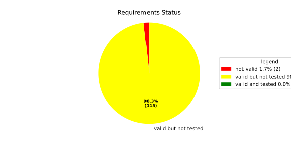
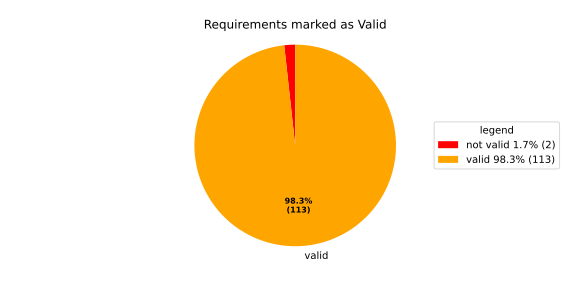
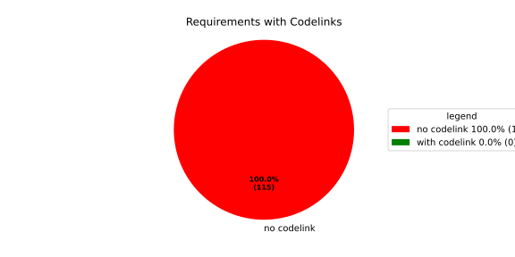

Component Requirements Statistics#
Overview#

In Detail#


No needs passed the filters
Failed Tests
Hint: This table should be empty. Before a PR can be merged all tests have to be successful.
No needs passed the filters
Skipped / Disabled Tests
No needs passed the filters
All passed Tests#
No needs passed the filters
Details About Testcases#
No needs passed the filters
No needs passed the filters
Test Log Files#
tests-report/tests/integration/switch_run_target/switch_run_target/test.log
exec ${PAGER:-/usr/bin/less} "$0" || exit 1
Executing tests from //tests/integration/switch_run_target:switch_run_target
-----------------------------------------------------------------------------
============================= test session starts ==============================
platform linux -- Python 3.12.12, pytest-9.0.3, pluggy-1.5.0
rootdir: /home/runner/.bazel/sandbox/processwrapper-sandbox/895/execroot/_main/bazel-out/k8-fastbuild/bin/tests/integration/switch_run_target/switch_run_target.runfiles/score_itf+
configfile: pytest.ini
collected 1 item
../score_itf+::test_switch_run_target
-------------------------------- live log setup --------------------------------
[2026-06-10 16:19:56.563] [INFO] [score.itf.plugins.docker] Executing custom image bootstrap command: tests/utils/environments/x86_64-linux/x86_64-linux.sh
[2026-06-10 16:19:56.855] [DEBUG] [docker.utils.config] Trying paths: ['/home/runner/.docker/config.json', '/home/runner/.dockercfg']
[2026-06-10 16:19:56.856] [DEBUG] [docker.utils.config] Found file at path: /home/runner/.docker/config.json
[2026-06-10 16:19:56.856] [DEBUG] [docker.auth] Found 'auths' section
[2026-06-10 16:19:56.856] [DEBUG] [docker.auth] Found entry (registry='https://index.docker.io/v1/', username='githubactions')
[2026-06-10 16:19:56.867] [DEBUG] [urllib3.connectionpool] http://localhost:None "GET /version HTTP/1.1" 200 823
[2026-06-10 16:19:56.905] [DEBUG] [urllib3.connectionpool] http://localhost:None "POST /v1.48/containers/create HTTP/1.1" 201 88
[2026-06-10 16:19:56.915] [DEBUG] [urllib3.connectionpool] http://localhost:None "GET /v1.48/containers/b6d8e873c72c00bd4ba9fcda69457a01d8bfcb76c4d538d969a9ce83e0fd56c4/json HTTP/1.1" 200 None
[2026-06-10 16:19:57.071] [DEBUG] [urllib3.connectionpool] http://localhost:None "POST /v1.48/containers/b6d8e873c72c00bd4ba9fcda69457a01d8bfcb76c4d538d969a9ce83e0fd56c4/start HTTP/1.1" 204 0
[2026-06-10 16:19:57.073] [DEBUG] [docker.utils.config] Trying paths: ['/home/runner/.docker/config.json', '/home/runner/.dockercfg']
[2026-06-10 16:19:57.073] [DEBUG] [docker.utils.config] Found file at path: /home/runner/.docker/config.json
[2026-06-10 16:19:57.073] [DEBUG] [docker.auth] Found 'auths' section
[2026-06-10 16:19:57.074] [DEBUG] [docker.auth] Found entry (registry='https://index.docker.io/v1/', username='githubactions')
[2026-06-10 16:19:57.099] [DEBUG] [urllib3.connectionpool] http://localhost:None "GET /version HTTP/1.1" 200 823
[2026-06-10 16:19:57.463] [INFO] [tests.utils.testing_utils.setup_test] Test case setup finished
-------------------------------- live log call ---------------------------------
[2026-06-10 16:19:57.594] [INFO] [launch_manager] 2026/06/10 16:19:57.8397593 1623676 000 ECU1 LM LM log debug verbose 1 Launch Manager Started !!!!
[2026-06-10 16:19:57.595] [INFO] [launch_manager] 2026/06/10 16:19:57.8397593 1623679 000 ECU1 LM LM log debug verbose 1 Loading LCM Configurations...
[2026-06-10 16:19:57.606] [INFO] [launch_manager] 2026/06/10 16:19:57.8397593 1623679 000 ECU1 LM LM log debug verbose 1 ECUCFG_ENV_VAR_ROOTFOLDER set successfully
[2026-06-10 16:19:57.607] [INFO] [launch_manager] 2026/06/10 16:19:57.8397593 1623681 000 ECU1 LM LM log debug verbose 5 FlatBufferParser::getModeGroupPgName: MainPG ( IdentifierHash: 18079021346025578134 )
[2026-06-10 16:19:57.607] [INFO] [launch_manager] 2026/06/10 16:19:57.8397593 1623681 000 ECU1 LM LM log debug verbose 5 FlatBufferParser::getModeGroupPgStateName: MainPG/Startup ( IdentifierHash: 10504605499600661529 )
[2026-06-10 16:19:57.607] [INFO] [launch_manager] 2026/06/10 16:19:57.8397593 1623681 000 ECU1 LM LM log debug verbose 5 FlatBufferParser::getModeGroupPgStateName: MainPG/run_target_a ( IdentifierHash: 4535707649935996147 )
[2026-06-10 16:19:57.607] [INFO] [launch_manager] 2026/06/10 16:19:57.8397593 1623682 000 ECU1 LM LM log debug verbose 5 FlatBufferParser::getModeGroupPgStateName: MainPG/run_target_c ( IdentifierHash: 6199163020077258462 )
[2026-06-10 16:19:57.607] [INFO] [launch_manager] 2026/06/10 16:19:57.8397593 1623682 000 ECU1 LM LM log debug verbose 5 FlatBufferParser::getModeGroupPgStateName: MainPG/Off ( IdentifierHash: 15281793077830264047 )
[2026-06-10 16:19:57.607] [INFO] [launch_manager] 2026/06/10 16:19:57.8397593 1623682 000 ECU1 LM LM log debug verbose 5 FlatBufferParser::getModeGroupPgStateName: MainPG/fallback_run_target ( IdentifierHash: 4059409696722237352 )
[2026-06-10 16:19:57.607] [INFO] [launch_manager] 2026/06/10 16:19:57.8397593 1623683 000 ECU1 LM LM log debug verbose 4 parseProcessConfigurations: Process index: 0 executable_path_: /tmp/tests/switch_run_target/control_client_mock
[2026-06-10 16:19:57.607] [INFO] [launch_manager] 2026/06/10 16:19:57.8397593 1623684 000 ECU1 LM LM log debug verbose 3 Process component_initial is Reporting execution state
[2026-06-10 16:19:57.608] [INFO] [launch_manager] 2026/06/10 16:19:57.8397593 1623684 000 ECU1 LM LM log debug verbose 1 Process is STATE_MANAGEMENT function Cluster Affiliation
[2026-06-10 16:19:57.608] [INFO] [launch_manager] 2026/06/10 16:19:57.8397593 1623684 000 ECU1 LM LM log debug verbose 3 Process component_initial is NOT Self terminating
[2026-06-10 16:19:57.608] [INFO] [launch_manager] 2026/06/10 16:19:57.8397593 1623684 000 ECU1 LM LM log debug verbose 4 ParseProcessProcessGroup: id:::pg_name_: MainPG , pg_state_name_: MainPG/Startup
[2026-06-10 16:19:57.608] [INFO] [launch_manager] 2026/06/10 16:19:57.8397593 1623685 000 ECU1 LM LM log debug verbose 4 ParseProcessProcessGroup: id:::pg_name_: MainPG , pg_state_name_: MainPG/run_target_a
[2026-06-10 16:19:57.608] [INFO] [launch_manager] 2026/06/10 16:19:57.8397594 1623685 000 ECU1 LM LM log debug verbose 4 parseProcessConfigurations: Process index: 1 executable_path_: /tmp/tests/switch_run_target/component_a
[2026-06-10 16:19:57.608] [INFO] [launch_manager] 2026/06/10 16:19:57.8397594 1623686 000 ECU1 LM LM log debug verbose 3 Process component_a is Reporting execution state
[2026-06-10 16:19:57.608] [INFO] [launch_manager] 2026/06/10 16:19:57.8397594 1623686 000 ECU1 LM LM log debug verbose 1 Process is NOT associated with any function Cluster Affiliation
[2026-06-10 16:19:57.608] [INFO] [launch_manager] 2026/06/10 16:19:57.8397594 1623686 000 ECU1 LM LM log debug verbose 3 Process component_a is NOT Self terminating
[2026-06-10 16:19:57.608] [INFO] [launch_manager] 2026/06/10 16:19:57.8397594 1623686 000 ECU1 LM LM log debug verbose 4 ParseProcessExecutionDependency: target process path: component_b ID: component_b
[2026-06-10 16:19:57.608] [INFO] [launch_manager] 2026/06/10 16:19:57.8397594 1623687 000 ECU1 LM LM log debug verbose 4 ParseProcessProcessGroup: id:::pg_name_: MainPG , pg_state_name_: MainPG/run_target_a
[2026-06-10 16:19:57.609] [INFO] [launch_manager] 2026/06/10 16:19:57.8397594 1623687 000 ECU1 LM LM log debug verbose 4 parseProcessConfigurations: Process index: 2 executable_path_: /tmp/tests/switch_run_target/component_b
[2026-06-10 16:19:57.609] [INFO] [launch_manager] 2026/06/10 16:19:57.8397594 1623688 000 ECU1 LM LM log debug verbose 3 Process component_b is Reporting execution state
[2026-06-10 16:19:57.609] [INFO] [launch_manager] 2026/06/10 16:19:57.8397594 1623688 000 ECU1 LM LM log debug verbose 1 Process is NOT associated with any function Cluster Affiliation
[2026-06-10 16:19:57.609] [INFO] [launch_manager] 2026/06/10 16:19:57.8397594 1623688 000 ECU1 LM LM log debug verbose 3 Process component_b is NOT Self terminating
[2026-06-10 16:19:57.609] [INFO] [launch_manager] 2026/06/10 16:19:57.8397594 1623688 000 ECU1 LM LM log debug verbose 4 ParseProcessProcessGroup: id:::pg_name_: MainPG , pg_state_name_: MainPG/run_target_a
[2026-06-10 16:19:57.610] [INFO] [launch_manager] 2026/06/10 16:19:57.8397594 1623689 000 ECU1 LM LM log debug verbose 4 parseProcessConfigurations: Process index: 3 executable_path_: /tmp/tests/switch_run_target/reporting_process
[2026-06-10 16:19:57.612] [INFO] [launch_manager] 2026/06/10 16:19:57.8397594 1623689 000 ECU1 LM LM log debug verbose 3 Process component_e is Reporting execution state
[2026-06-10 16:19:57.612] [INFO] [launch_manager] 2026/06/10 16:19:57.8397594 1623689 000 ECU1 LM LM log debug verbose 1
[2026-06-10 16:19:57.612] [INFO] [launch_manager] Process is NOT associated with any function Cluster Affiliation
[2026-06-10 16:19:57.612] [INFO] [launch_manager] 2026/06/10 16:19:57.8397594 1623691 000 ECU1 LM LM log debug verbose 3 Process component_e is NOT Self terminating
[2026-06-10 16:19:57.612] [INFO] [launch_manager] 2026/06/10 16:19:57.8397594 1623691 000 ECU1 LM LM log debug verbose 4 parseProcessConfigurations: Process index: 4 executable_path_: /tmp/tests/switch_run_target/component_d
[2026-06-10 16:19:57.612] [INFO] [launch_manager] 2026/06/10 16:19:57.8397594 1623692 000 ECU1 LM LM log debug verbose 3 Process component_d is Reporting execution state
[2026-06-10 16:19:57.613] [INFO] [launch_manager] 2026/06/10 16:19:57.8397594 1623692 000 ECU1 LM LM log debug verbose 1 Process is NOT associated with any function Cluster Affiliation
[2026-06-10 16:19:57.613] [INFO] [launch_manager] 2026/06/10 16:19:57.8397594 1623692 000 ECU1 LM LM log debug verbose 3 Process component_d is NOT Self terminating
[2026-06-10 16:19:57.613] [INFO] [launch_manager] 2026/06/10 16:19:57.8397594 1623692 000 ECU1 LM LM log debug verbose 4 ParseProcessProcessGroup: id:::pg_name_: MainPG , pg_state_name_: MainPG/run_target_a
[2026-06-10 16:19:57.613] [INFO] [launch_manager] 2026/06/10 16:19:57.8397594 1623693 000 ECU1 LM LM log debug verbose 4 ParseProcessProcessGroup: id:::pg_name_: MainPG , pg_state_name_: MainPG/run_target_c
[2026-06-10 16:19:57.613] [INFO] [launch_manager] 2026/06/10 16:19:57.8397594 1623693 000 ECU1 LM LM log debug verbose 3 Loading SWCL Nr. 0 Succeeded
[2026-06-10 16:19:57.613] [INFO] [launch_manager] 2026/06/10 16:19:57.8397594 1623693 000 ECU1 LM LM log debug verbose 2 1 process group(s)
[2026-06-10 16:19:57.613] [INFO] [launch_manager] 2026/06/10 16:19:57.8397594 1623693 000 ECU1 LM LM log debug verbose 3 Creating graph with 4 nodes
[2026-06-10 16:19:57.613] [INFO] [launch_manager] 2026/06/10 16:19:57.8397594 1623694 000 ECU1 LM LM log debug verbose 1 Process groups initialized successfully
[2026-06-10 16:19:57.613] [INFO] [launch_manager] 2026/06/10 16:19:57.8397594 1623694 000 ECU1 LM LM log debug verbose 1 Process Group initialization done
[2026-06-10 16:19:57.613] [INFO] [launch_manager] 2026/06/10 16:19:57.8397594 1623694 000 ECU1 LM LM log debug verbose 3 Creating Safe Process Map with 4 entries
[2026-06-10 16:19:57.613] [INFO] [launch_manager] 2026/06/10 16:19:57.8397594 1623694 000 ECU1 LM LM log debug verbose 2 Creating job queue with capacity 1024
[2026-06-10 16:19:57.613] [INFO] [launch_manager] 2026/06/10 16:19:57.8397594 1623695 000 ECU1 LM LM log debug verbose 1 Creating worker threads...
[2026-06-10 16:19:57.613] [INFO] [launch_manager] 2026/06/10 16:19:57.8397596 1623711 000 ECU1 LM LM log debug verbose 7 Process group index 0 (with name MainPG ) has 4 processes
[2026-06-10 16:19:57.613] [INFO] [launch_manager] 2026/06/10 16:19:57.8397596 1623711 000 ECU1 LM LM log debug verbose 2 Creating process node with id: 0
[2026-06-10 16:19:57.613] [INFO] [launch_manager] 2026/06/10 16:19:57.8397596 1623711 000 ECU1 LM LM log debug verbose 5 Process 0 has 0 start dependencies
[2026-06-10 16:19:57.614] [INFO] [launch_manager] 2026/06/10 16:19:57.8397596 1623711 000 ECU1 LM LM log debug verbose 2 Creating process node with id: 1
[2026-06-10 16:19:57.614] [INFO] [launch_manager] 2026/06/10 16:19:57.8397596 1623712 000 ECU1 LM LM log debug verbose 5 Process 1 has 1 start dependencies
[2026-06-10 16:19:57.614] [INFO] [launch_manager] 2026/06/10 16:19:57.8397596 1623712 000 ECU1 LM LM log debug verbose 2 Creating process node with id: 2
[2026-06-10 16:19:57.614] [INFO] [launch_manager] 2026/06/10 16:19:57.8397596 1623712 000 ECU1 LM LM log debug verbose 5 Process 2 has 0 start dependencies
[2026-06-10 16:19:57.614] [INFO] [launch_manager] 2026/06/10 16:19:57.8397596 1623712 000 ECU1 LM LM log debug verbose 2 Creating process node with id: 3
[2026-06-10 16:19:57.614] [INFO] [launch_manager] 2026/06/10 16:19:57.8397596 1623712 000 ECU1 LM LM log debug verbose 5 Process 3 has 0 start dependencies
[2026-06-10 16:19:57.614] [INFO] [launch_manager] 2026/06/10 16:19:57.8397596 1623713 000 ECU1 LM LM log debug verbose 3 Created 4 process nodes
[2026-06-10 16:19:57.614] [INFO] [launch_manager] 2026/06/10 16:19:57.8397596 1623713 000 ECU1 LM LM log debug verbose 2 Creating successor lists for process group MainPG
[2026-06-10 16:19:57.614] [INFO] [launch_manager] 2026/06/10 16:19:57.8397596 1623713 000 ECU1 LM LM log debug verbose 4 Adding kRunning successor for process 2 : 1
[2026-06-10 16:19:57.614] [INFO] [launch_manager] 2026/06/10 16:19:57.8397596 1623713 000 ECU1 LM LM log debug verbose 4 Added successor node dependency: 2 -> 1
[2026-06-10 16:19:57.614] [INFO] [launch_manager] 2026/06/10 16:19:57.8397596 1623714 000 ECU1 LM LM log debug verbose 1 Graphs initialized
[2026-06-10 16:19:57.615] [INFO] [launch_manager] 2026/06/10 16:19:57.8397597 1623715 000 ECU1 LM Fcty log info verbose 2 Factory for FlatCfg MachineConfig: Loading of HM Machine Configuration succeeded.
[2026-06-10 16:19:57.617] [INFO] [launch_manager] 2026/06/10 16:19:57.8397597 1623716 000 ECU1 LM Fcty log debug verbose 3 Factory for FlatCfg MachineConfig: Alive Supervision buffer size: 100
[2026-06-10 16:19:57.617] [INFO] [launch_manager] 2026/06/10 16:19:57.8397597 1623716 000 ECU1 LM Fcty log debug verbose 3 Factory for FlatCfg MachineConfig: Monitor buffer size: 512
[2026-06-10 16:19:57.617] [INFO] [launch_manager] 2026/06/10 16:19:57.8397597 1623716 000 ECU1 LM Fcty log debug verbose 4 Factory for FlatCfg MachineConfig: Periodicity: 50000000 ns
[2026-06-10 16:19:57.617] [INFO] [launch_manager] 2026/06/10 16:19:57.8397597 1623716 000 ECU1 LM Fcty log debug verbose 3 Factory for FlatCfg MachineConfig: Configured watchdogs: 0
[2026-06-10 16:19:57.618] [INFO] [launch_manager] 2026/06/10 16:19:57.8397597 1623717 000 ECU1 LM Fcty log warn verbose 2 Factory for FlatCfg MachineConfig: No watchdog configured
[2026-06-10 16:19:57.618] [INFO] [launch_manager] 2026/06/10 16:19:57.8397597 1623718 000 ECU1 LM Fcty log debug verbose 2 Software Cluster Handler starts constructing workers: MainCluster
[2026-06-10 16:19:57.618] [INFO] [launch_manager] 2026/06/10 16:19:57.8397597 1623718 000 ECU1 LM Fcty log debug verbose 3 Factory for FlatCfg AR24-11: Successfully created Process States: component_initial
[2026-06-10 16:19:57.618] [INFO] [launch_manager] 2026/06/10 16:19:57.8397597 1623719 000 ECU1 LM Fcty log debug verbose 3 Factory for FlatCfg AR24-11: Number of constructed Process States: 1
[2026-06-10 16:19:57.618] [INFO] [launch_manager] 2026/06/10 16:19:57.8397597 1623720 000 ECU1 LM Fcty log debug verbose 3 Factory for FlatCfg AR24-11: Successfully created Monitor interface IPC with path: lifecycle_health_component_initial
[2026-06-10 16:19:57.620] [INFO] [launch_manager] 2026/06/10 16:19:57.8397597 1623720 000 ECU1 LM Fcty log debug verbose 3 Factory for FlatCfg AR24-11: Number of constructed Monitor interface IPCs: 1
[2026-06-10 16:19:57.620] [INFO] [launch_manager] 2026/06/10 16:19:57.8397597 1623721 000 ECU1 LM Fcty log debug verbose 3 Factory for FlatCfg AR24-11: Successfully created MonitorInterface: /lifecycle_health_component_initial
[2026-06-10 16:19:57.620] [INFO] [launch_manager] 2026/06/10 16:19:57.8397597 1623721 000 ECU1 LM Fcty log debug verbose 3 Factory for FlatCfg AR24-11: Number of constructed Monitor interfaces: 1
[2026-06-10 16:19:57.620] [INFO] [launch_manager] 2026/06/10 16:19:57.8397597 1623721 000 ECU1 LM Fcty log debug verbose 3 Factory for FlatCfg AR24-11: Successfully created supervision checkpoint: component_initial_checkpoint
[2026-06-10 16:19:57.620] [INFO] [launch_manager] 2026/06/10 16:19:57.8397597 1623721 000 ECU1 LM Fcty log debug verbose 3 Factory for FlatCfg AR24-11: Number of constructed supervision checkpoints: 1
[2026-06-10 16:19:57.620] [INFO] [launch_manager] 2026/06/10 16:19:57.8397597 1623722 000 ECU1 LM Fcty log debug verbose 3 Factory for FlatCfg AR24-11: Successfully created alive supervision worker object: component_initial_alive_supervision
[2026-06-10 16:19:57.620] [INFO] [launch_manager] 2026/06/10 16:19:57.8397597 1623722 000 ECU1 LM Fcty log debug verbose 3 Factory for FlatCfg AR24-11: Number of constructed alive supervisions: 1
[2026-06-10 16:19:57.624] [INFO] [launch_manager] 2026/06/10 16:19:57.8397597 1623722 000 ECU1 LM Fcty log info verbose 2 Phm Daemon: The (configured) periodicity in [ns] is set to: 50000000
[2026-06-10 16:19:57.624] [INFO] [launch_manager] 2026/06/10 16:19:57.8397597 1623723 000 ECU1 LM Fcty log debug verbose 2 Phm Daemon: The accuracy of the monotonic system clock in [ns] is: 1
[2026-06-10 16:19:57.625] [INFO] [launch_manager] 2026/06/10 16:19:57.8397597 1623723 000 ECU1 LM Fcty log debug verbose 3
[2026-06-10 16:19:57.625] [INFO] [launch_manager] HealthMonitor: Initialization took 0 ms
[2026-06-10 16:19:57.625] [INFO] [launch_manager] 2026/06/10 16:19:57.8397597 1623724 000 ECU1 LM LM log info verbose 1 LCM started successfully
[2026-06-10 16:19:57.625] [INFO] [launch_manager] 2026/06/10 16:19:57.8397597 1623724 000 ECU1 LM LM log debug verbose 3 clock() at run(): 40.549000 ms
[2026-06-10 16:19:57.625] [INFO] [launch_manager] 2026/06/10 16:19:57.8397597 1623725 000 ECU1 LM LM log debug verbose 1 =============STARTING MAINPG STARTUP STATE============
[2026-06-10 16:19:57.625] [INFO] [launch_manager] 2026/06/10 16:19:57.8397598 1623725 000 ECU1 LM LM log debug verbose 9 Graph::setState changes from kSuccess to kInTransition for PG 0 ( MainPG )
[2026-06-10 16:19:57.625] [INFO] [launch_manager] 2026/06/10 16:19:57.8397598 1623725 000 ECU1 LM LM log debug verbose 2 Stop Dependencies: 0
[2026-06-10 16:19:57.626] [INFO] [launch_manager] 2026/06/10 16:19:57.8397598 1623726 000 ECU1 LM LM log debug verbose 2 Stop Dependencies: 0
[2026-06-10 16:19:57.626] [INFO] [launch_manager] 2026/06/10 16:19:57.8397598 1623726 000 ECU1 LM LM log debug verbose 2 Stop Dependencies: 0
[2026-06-10 16:19:57.626] [INFO] [launch_manager] 2026/06/10 16:19:57.8397598 1623726 000 ECU1 LM LM log debug verbose 2 Stop Dependencies: 0
[2026-06-10 16:19:57.626] [INFO] [launch_manager] 2026/06/10 16:19:57.8397598 1623726 000 ECU1 LM LM log debug verbose 2 Start Dependencies: 0
[2026-06-10 16:19:57.627] [INFO] [launch_manager] 2026/06/10 16:19:57.8397598 1623726 000 ECU1 LM LM log debug verbose 2 Start Dependencies: 1
[2026-06-10 16:19:57.627] [INFO] [launch_manager] 2026/06/10 16:19:57.8397598 1623727 000 ECU1 LM LM log debug verbose 2 Start Dependencies: 0
[2026-06-10 16:19:57.629] [INFO] [launch_manager] 2026/06/10 16:19:57.8397598 1623727 000 ECU1 LM LM log debug verbose 2 Start Dependencies: 0
[2026-06-10 16:19:57.629] [INFO] [launch_manager] 2026/06/10 16:19:57.8397598 1623728 000 ECU1 LM LM log debug verbose 6
[2026-06-10 16:19:57.629] [INFO] [launch_manager] Starting process 0 ( component_initial ) from executable /tmp/tests/switch_run_target/control_client_mock
[2026-06-10 16:19:57.629] [INFO] [launch_manager] 2026/06/10 16:19:57.8397598 1623728 000 ECU1 LM LM log debug verbose 3 Initialize the control client for component_initial process
[2026-06-10 16:19:57.630] [INFO] [launch_manager] 2026/06/10 16:19:57.8397598 1623729 000 ECU1 LM LM log debug verbose 1 ControlClientChannel initialized
[2026-06-10 16:19:57.630] [INFO] [launch_manager] 2026/06/10 16:19:57.8397598 1623733 000 ECU1 LM LM log debug verbose 4 startProcess pid 66 received for process: component_initial
[2026-06-10 16:19:57.630] [INFO] [launch_manager] 2026/06/10 16:19:57.8397598 1623734 000 ECU1 LM LM log debug verbose 1 ControlClientChannel obtained from sync.
[2026-06-10 16:19:57.630] [INFO] [launch_manager] [==========] Running 1 test from 1 test suite.
[2026-06-10 16:19:57.630] [INFO] [launch_manager] [----------] Global test environment set-up.
[2026-06-10 16:19:57.630] [INFO] [launch_manager] [----------] 1 test from SwitchRunTarget
[2026-06-10 16:19:57.630] [INFO] [launch_manager] [ RUN ] SwitchRunTarget.ControlClientMock
[2026-06-10 16:19:57.631] [INFO] [launch_manager] [ STEP ] Report kRunning
[2026-06-10 16:19:57.631] [INFO] [launch_manager] [ END STEP ] Report kRunning
[2026-06-10 16:19:57.631] [INFO] [launch_manager] [ STEP ] Activate run target A
[2026-06-10 16:19:57.631] [INFO] [launch_manager] 2026/06/10 16:19:57.8397604 1623794 000 ECU1 LM LM log debug verbose 1 Request sent. Waiting for acknowledgment...
[2026-06-10 16:19:57.631] [INFO] [launch_manager] 2026/06/10 16:19:57.8397605 1623797 000 ECU1 LM LM log debug verbose 8 Got kRunning for pid 66 ( component_initial ) process 0 of group MainPG
[2026-06-10 16:19:57.631] [INFO] [launch_manager] 2026/06/10 16:19:57.8397605 1623797 000 ECU1 LM LM log debug verbose 7 startProcess for MainPG process 0 ( component_initial ) done
[2026-06-10 16:19:57.631] [INFO] [launch_manager] 2026/06/10 16:19:57.8397605 1623798 000 ECU1 LM LM log debug verbose 1 Control Client handler nudged
[2026-06-10 16:19:57.631] [INFO] [launch_manager] 2026/06/10 16:19:57.8397605 1623798 000 ECU1 LM LM log debug verbose 3 clock() at successful initial state transition: 41.845000 ms
[2026-06-10 16:19:57.634] [INFO] [launch_manager] 2026/06/10 16:19:57.8397605 1623798 000 ECU1 LM LM log debug verbose 9 Graph::setState changes from kInTransition to kSuccess for PG 0 ( MainPG )
[2026-06-10 16:19:57.634] [INFO] [launch_manager] 2026/06/10 16:19:57.8397605 1623798 000 ECU1 LM LM log info verbose 7 Completed the request for PG MainPG to State MainPG/Startup in 7 ms
[2026-06-10 16:19:57.635] [INFO] [launch_manager] 2026/06/10 16:19:57.8397605 1623799 000 ECU1 LM LM log debug verbose 1 Control Client handler nudged
[2026-06-10 16:19:57.635] [INFO] [launch_manager] 2026/06/10 16:19:57.8397606 1623811 000 ECU1 LM LM log debug verbose 8 ProcessGroupManager::ControlClientHandler: got request kSetStateRequest ( 16 ) re state MainPG/run_target_a of PG MainPG
[2026-06-10 16:19:57.635] [INFO] [launch_manager] 2026/06/10 16:19:57.8397606 1623812 000 ECU1 LM LM log debug verbose 6 Pending state for process group MainPG changed from to MainPG/run_target_a
[2026-06-10 16:19:57.635] [INFO] [launch_manager] 2026/06/10 16:19:57.8397606 1623812 000 ECU1 LM LM log debug verbose 1 Request acknowledged.
[2026-06-10 16:19:57.635] [INFO] [launch_manager] 2026/06/10 16:19:57.8397606 1623812 000 ECU1 LM LM log debug verbose 1 Request acknowledged.
[2026-06-10 16:19:57.635] [INFO] [launch_manager] 2026/06/10 16:19:57.8397606 1623812 000 ECU1 LM LM log debug verbose 6 Pending state for process group MainPG changed from MainPG/run_target_a to
[2026-06-10 16:19:57.636] [INFO] [launch_manager] 2026/06/10 16:19:57.8397606 1623813 000 ECU1 LM LM log debug verbose 4 Start transition to MainPG/run_target_a for PG MainPG
[2026-06-10 16:19:57.636] [INFO] [launch_manager] 2026/06/10 16:19:57.8397606 1623813 000 ECU1 LM LM log debug verbose 9 Graph::setState changes from kSuccess to kInTransition for PG 0 ( MainPG )
[2026-06-10 16:19:57.636] [INFO] [launch_manager] 2026/06/10 16:19:57.8397606 1623813 000 ECU1 LM LM log debug verbose 2 Stop Dependencies: 0
[2026-06-10 16:19:57.636] [INFO] [launch_manager] 2026/06/10 16:19:57.8397606 1623813 000 ECU1 LM LM log debug verbose 2 Stop Dependencies: 0
[2026-06-10 16:19:57.636] [INFO] [launch_manager] 2026/06/10 16:19:57.8397606 1623814 000 ECU1 LM LM log debug verbose 2 Stop Dependencies: 0
[2026-06-10 16:19:57.636] [INFO] [launch_manager] 2026/06/10 16:19:57.8397606 1623814 000 ECU1 LM LM log debug verbose 2 Stop Dependencies: 0
[2026-06-10 16:19:57.636] [INFO] [launch_manager] 2026/06/10 16:19:57.8397606 1623814 000 ECU1 LM LM log debug verbose 2 Start Dependencies: 0
[2026-06-10 16:19:57.636] [INFO] [launch_manager] 2026/06/10 16:19:57.8397606 1623814 000 ECU1 LM LM log debug verbose 2 Start Dependencies: 1
[2026-06-10 16:19:57.636] [INFO] [launch_manager] 2026/06/10 16:19:57.8397606 1623814 000 ECU1 LM LM log debug verbose 2 Start Dependencies: 0
[2026-06-10 16:19:57.636] [INFO] [launch_manager] 2026/06/10 16:19:57.8397606 1623815 000 ECU1 LM LM log debug verbose 2 Start Dependencies: 0
[2026-06-10 16:19:57.636] [INFO] [launch_manager] 2026/06/10 16:19:57.8397607 1623816 000 ECU1 LM LM log debug verbose 6 Starting process 2 ( component_b ) from executable /tmp/tests/switch_run_target/component_b
[2026-06-10 16:19:57.636] [INFO] [launch_manager] 2026/06/10 16:19:57.8397607 1623817 000 ECU1 LM LM log debug verbose 6 Starting process 3 ( component_d ) from executable /tmp/tests/switch_run_target/component_d
[2026-06-10 16:19:57.637] [INFO] [launch_manager] 2026/06/10 16:19:57.8397607 1623825 000 ECU1 LM LM log debug verbose 4
[2026-06-10 16:19:57.637] [INFO] [launch_manager] startProcess pid 68 received for process: component_b
[2026-06-10 16:19:57.637] [INFO] [launch_manager] 2026/06/10 16:19:57.8397609 1623845 000 ECU1 LM LM log debug verbose 4 startProcess pid 69 received for process: component_d
[2026-06-10 16:19:57.637] [INFO] [launch_manager] [==========] Running 1 test from 1 test suite.
[2026-06-10 16:19:57.639] [INFO] [launch_manager] [----------] Global test environment set-up.
[2026-06-10 16:19:57.639] [INFO] [launch_manager] [----------] 1 test from ComponentB
[2026-06-10 16:19:57.639] [INFO] [launch_manager] [ RUN ] ComponentB.RunAndVerify
[2026-06-10 16:19:57.639] [INFO] [launch_manager] [ STEP ] Verify startup order
[2026-06-10 16:19:57.639] [INFO] [launch_manager] [ END STEP ] Verify startup order
[2026-06-10 16:19:57.640] [INFO] [launch_manager] [ STEP ] Report running
[2026-06-10 16:19:57.640] [INFO] [launch_manager] [==========] Running 1 test from 1 test suite.
[2026-06-10 16:19:57.640] [INFO] [launch_manager] [ END STEP ] Report running
[2026-06-10 16:19:57.640] [INFO] [launch_manager] 2026/06/10 16:19:57.8397614 1623886 000 ECU1 LM LM log debug verbose 8 Got kRunning for pid 68 ( component_b ) process 2 of group MainPG
[2026-06-10 16:19:57.640] [INFO] [launch_manager] [----------] Global test environment set-up.
[2026-06-10 16:19:57.640] [INFO] [launch_manager] [----------] 1 test from ComponentD
[2026-06-10 16:19:57.640] [INFO] [launch_manager] [ RUN ] ComponentD.RunAndVerify
[2026-06-10 16:19:57.640] [INFO] [launch_manager] [ STEP ] Report running
[2026-06-10 16:19:57.640] [INFO] [launch_manager] 2026/06/10 16:19:57.8397614 1623888 000 ECU1 LM LM log debug verbose 6 Starting process 1 ( component_a ) from executable /tmp/tests/switch_run_target/component_a
[2026-06-10 16:19:57.640] [INFO] [launch_manager] 2026/06/10 16:19:57.8397614 1623889 000 ECU1 LM LM log debug verbose 7 startProcess for MainPG process 2 ( component_b ) done
[2026-06-10 16:19:57.640] [INFO] [launch_manager] 2026/06/10 16:19:57.8397615 1623895 000 ECU1 LM LM log debug verbose 4 startProcess pid 70 received for process: component_a
[2026-06-10 16:19:57.641] [INFO] [launch_manager] [ END STEP ] Report running
[2026-06-10 16:19:57.642] [INFO] [launch_manager] [==========] Running 1 test from 1 test suite.
[2026-06-10 16:19:57.642] [INFO] [launch_manager] 2026/06/10 16:19:57.8397618 1623929 000 ECU1 LM LM log debug verbose 8 Got kRunning for pid 69 ( component_d ) process 3 of group MainPG
[2026-06-10 16:19:57.642] [INFO] [launch_manager] 2026/06/10 16:19:57.8397618 1623930 000 ECU1 LM LM log debug verbose 7 startProcess for MainPG process 3 ( component_d ) done
[2026-06-10 16:19:57.642] [INFO] [launch_manager] [----------] Global test environment set-up.
[2026-06-10 16:19:57.643] [INFO] [launch_manager] [----------] 1 test from ComponentA
[2026-06-10 16:19:57.643] [INFO] [launch_manager] [ RUN ] ComponentA.RunAndVerify
[2026-06-10 16:19:57.643] [INFO] [launch_manager] [ STEP ] Report running
[2026-06-10 16:19:57.643] [INFO] [launch_manager] [ END STEP ] Report running
[2026-06-10 16:19:57.643] [INFO] [launch_manager] [ STEP ] Verify startup order
[2026-06-10 16:19:57.643] [INFO] [launch_manager] [ END STEP ] Verify startup order
[2026-06-10 16:19:57.643] [INFO] [launch_manager] 2026/06/10 16:19:57.8397623 1623979 000 ECU1 LM LM log debug verbose 8 Got kRunning for pid 70 ( component_a ) process 1 of group MainPG
[2026-06-10 16:19:57.643] [INFO] [launch_manager] 2026/06/10 16:19:57.8397623 1623980 000 ECU1 LM LM log debug verbose 7 startProcess for MainPG process 1 ( component_a ) done
[2026-06-10 16:19:57.645] [INFO] [launch_manager] 2026/06/10 16:19:57.8397623 1623981 000 ECU1 LM LM log debug verbose 9 Graph::setState changes from kInTransition to kSuccess for PG 0 ( MainPG )
[2026-06-10 16:19:57.645] [INFO] [launch_manager] 2026/06/10 16:19:57.8397623 1623981 000 ECU1 LM LM log info verbose 7 Completed the request for PG MainPG to State MainPG/run_target_a in 16 ms
[2026-06-10 16:19:57.645] [INFO] [launch_manager] 2026/06/10 16:19:57.8397623 1623982 000 ECU1 LM LM log debug verbose 1 Control Client handler nudged
[2026-06-10 16:19:57.645] [INFO] [launch_manager] 2026/06/10 16:19:57.8397624 1623986 000 ECU1 LM LM log debug verbose 8 ProcessGroupManager::ControlClientHandler: Sending kSetStateSuccess ( 20 ) re state MainPG/run_target_a of PG MainPG
[2026-06-10 16:19:57.646] [INFO] [launch_manager] 2026/06/10 16:19:57.8397624 1623986 000 ECU1 LM LM log debug verbose 1 Response sent.
[2026-06-10 16:19:57.648] [INFO] [launch_manager] 2026/06/10 16:19:57.8397647 1624225 000 ECU1 LM Sprv log debug verbose 6 Process with Id component_initial changed state PG MainPG/Startup PS 1
[2026-06-10 16:19:57.648] [INFO] [launch_manager] 2026/06/10 16:19:57.8397648 1624225 000 ECU1 LM Sprv log debug verbose 6 Process with Id component_initial changed state PG MainPG/Startup PS 2
[2026-06-10 16:19:57.648] [INFO] [launch_manager] 2026/06/10 16:19:57.8397648 1624225 000 ECU1 LM Sprv log debug verbose 6 Process with Id component_b changed state PG MainPG/run_target_a PS 1
[2026-06-10 16:19:57.648] [INFO] [launch_manager] 2026/06/10 16:19:57.8397648 1624226 000 ECU1 LM Sprv log debug verbose 6
[2026-06-10 16:19:57.649] [INFO] [launch_manager] Process with Id component_d changed state PG MainPG/run_target_a PS 1
[2026-06-10 16:19:57.649] [INFO] [launch_manager] 2026/06/10 16:19:57.8397649 1624241 000 ECU1 LM Sprv log debug verbose 6
[2026-06-10 16:19:57.650] [INFO] [launch_manager] Process with Id component_b changed state PG MainPG/run_target_a PS 2
[2026-06-10 16:19:57.650] [INFO] [launch_manager] 2026/06/10 16:19:57.8397650 1624251 000 ECU1 LM Sprv log debug verbose 6 Process with Id component_a changed state PG MainPG/run_target_a PS 1
[2026-06-10 16:19:57.650] [INFO] [launch_manager] 2026/06/10 16:19:57.8397650 1624251 000 ECU1 LM Sprv log debug verbose 6 Process with Id component_d changed state PG MainPG/run_target_a PS 2
[2026-06-10 16:19:57.650] [INFO] [launch_manager] 2026/06/10 16:19:57.8397650 1624251 000 ECU1 LM Sprv log debug verbose 6 Process with Id component_a changed state PG MainPG/run_target_a PS 2
[2026-06-10 16:19:57.651] [INFO] [launch_manager] 2026/06/10 16:19:57.8397650 1624252 000 ECU1 LM Sprv log info verbose 3 Alive Supervision ( component_initial_alive_supervision ) switched to OK.
[2026-06-10 16:19:57.702] [INFO] [launch_manager] 2026/06/10 16:19:57.8397701 1624760 000 ECU1 LM LM log debug verbose 1 Response retrieved.
[2026-06-10 16:19:57.702] [INFO] [launch_manager] [ END STEP ] Activate run target A
[2026-06-10 16:19:57.703] [INFO] [launch_manager] [ STEP ] Verify running processes
[2026-06-10 16:19:57.703] [INFO] [launch_manager] [ END STEP ] Verify running processes
[2026-06-10 16:19:57.703] [INFO] [launch_manager] [ STEP ] Activate RunTarget Startup
[2026-06-10 16:19:57.703] [INFO] [launch_manager] 2026/06/10 16:19:57.8397702 1624771 000 ECU1 LM LM log debug verbose 1 Request sent. Waiting for acknowledgment...
[2026-06-10 16:19:57.705] [INFO] [launch_manager] 2026/06/10 16:19:57.8397704 1624786 000 ECU1 LM LM log debug verbose 8 ProcessGroupManager::ControlClientHandler: got request kSetStateRequest ( 16 ) re state MainPG/Startup of PG MainPG
[2026-06-10 16:19:57.705] [INFO] [launch_manager] 2026/06/10 16:19:57.8397704 1624787 000 ECU1 LM LM log debug verbose 6 Pending state for process group MainPG changed from to MainPG/Startup
[2026-06-10 16:19:57.705] [INFO] [launch_manager] 2026/06/10 16:19:57.8397704 1624787 000 ECU1 LM LM log debug verbose 1 Request acknowledged.
[2026-06-10 16:19:57.705] [INFO] [launch_manager] 2026/06/10 16:19:57.8397704 1624787 000 ECU1 LM LM log debug verbose 6 Pending state for process group MainPG changed from MainPG/Startup to
[2026-06-10 16:19:57.706] [INFO] [launch_manager] 2026/06/10 16:19:57.8397704 1624787 000 ECU1 LM LM log debug verbose 4 Start transition to MainPG/Startup for PG MainPG
[2026-06-10 16:19:57.711] [INFO] [launch_manager] 2026/06/10 16:19:57.8397704 1624788 000 ECU1 LM LM log debug verbose 9 Graph::setState changes from kSuccess to kInTransition for PG 0 ( MainPG )
[2026-06-10 16:19:57.711] [INFO] [launch_manager] 2026/06/10 16:19:57.8397704 1624788 000 ECU1 LM LM log debug verbose 2 Stop Dependencies: 0
[2026-06-10 16:19:57.711] [INFO] [launch_manager] 2026/06/10 16:19:57.8397704 1624788 000 ECU1 LM LM log debug verbose 2 Stop Dependencies: 0
[2026-06-10 16:19:57.711] [INFO] [launch_manager] 2026/06/10 16:19:57.8397704 1624788 000 ECU1 LM LM log debug verbose 2 Stop Dependencies: 1
[2026-06-10 16:19:57.711] [INFO] [launch_manager] 2026/06/10 16:19:57.8397704 1624788 000 ECU1 LM LM log debug verbose 2 Stop Dependencies: 0
[2026-06-10 16:19:57.711] [INFO] [launch_manager] 2026/06/10 16:19:57.8397704 1624789 000 ECU1 LM LM log debug verbose 5 terminating process 1 ( component_a )
[2026-06-10 16:19:57.711] [INFO] [launch_manager] 2026/06/10 16:19:57.8397705 1624796 000 ECU1 LM LM log debug verbose 9 Requesting termination of process 1 of MainPG pid 70 ( component_a )
[2026-06-10 16:19:57.711] [INFO] [launch_manager] 2026/06/10 16:19:57.8397705 1624797 000 ECU1 LM LM log debug verbose 2 Request termination received for 70
[2026-06-10 16:19:57.711] [INFO] [launch_manager] [ STEP ] Verify termination order
[2026-06-10 16:19:57.711] [INFO] [launch_manager] [ END STEP ] Verify termination order
[2026-06-10 16:19:57.711] [INFO] [launch_manager] [ OK ] ComponentA.RunAndVerify (85 ms)
[2026-06-10 16:19:57.711] [INFO] [launch_manager] [----------] 1 test from ComponentA (85 ms total)
[2026-06-10 16:19:57.712] [INFO] [launch_manager] [----------] Global test environment tear-down
[2026-06-10 16:19:57.710] [DEBUG] [tests.utils.testing_utils.run_until_file_deployed] Waiting for /tmp/tests/test_end
[2026-06-10 16:19:57.712] [INFO] [launch_manager] 2026/06/10 16:19:57.8397705 1624799 000 ECU1 LM LM log debug verbose 1 Request acknowledged.
[2026-06-10 16:19:57.712] [INFO] [launch_manager] 2026/06/10 16:19:57.8397705 1624800 000 ECU1 LM LM log debug verbose 5 terminating process 3 ( component_d )
[2026-06-10 16:19:57.712] [INFO] [launch_manager] 2026/06/10 16:19:57.8397705 1624801 000 ECU1 LM LM log debug verbose 9 Requesting termination of process 3 of MainPG pid 69 ( component_d )
[2026-06-10 16:19:57.713] [INFO] [launch_manager] 2026/06/10 16:19:57.8397705 1624801 000 ECU1 LM LM log debug verbose 2 Request termination received for 69
[2026-06-10 16:19:57.713] [INFO] [launch_manager] [ OK ] ComponentD.RunAndVerify (92 ms)
[2026-06-10 16:19:57.713] [INFO] [launch_manager] [----------] 1 test from ComponentD (92 ms total)
[2026-06-10 16:19:57.713] [INFO] [launch_manager] [----------] Global test environment tear-down
[2026-06-10 16:19:57.713] [INFO] [launch_manager] [==========] 1 test from 1 test suite ran. (94 ms total)
[2026-06-10 16:19:57.713] [INFO] [launch_manager] [ PASSED ] 1 test.
[2026-06-10 16:19:57.713] [INFO] [launch_manager] 2026/06/10 16:19:57.8397707 1624820 000 ECU1 LM LM log debug verbose 12 Child process 3 of MainPG pid 69 ( component_d ) for node True terminated with status 0
[2026-06-10 16:19:57.713] [INFO] [launch_manager] [==========] 1 test from 1 test suite ran. (87 ms total)
[2026-06-10 16:19:57.713] [INFO] [launch_manager] [ PASSED ] 1 test.
[2026-06-10 16:19:57.713] [INFO] [launch_manager] 2026/06/10 16:19:57.8397707 1624822 000 ECU1 LM LM log debug verbose 5 Queuing jobs after regular termination of process wait 3 ( component_d )
[2026-06-10 16:19:57.713] [INFO] [launch_manager] 2026/06/10 16:19:57.8397707 1624823 000 ECU1 LM LM log debug verbose 7 terminateProcess for MainPG process 3 ( component_d ) done
[2026-06-10 16:19:57.716] [INFO] [launch_manager] 2026/06/10 16:19:57.8397707 1624824 000 ECU1 LM LM log debug verbose 12
[2026-06-10 16:19:57.716] [INFO] [launch_manager] Child process 1 of MainPG pid 70 ( component_a ) for node True terminated with status 0
[2026-06-10 16:19:57.716] [INFO] [launch_manager] 2026/06/10 16:19:57.8397709 1624839 000 ECU1 LM LM log debug verbose 5 Queuing jobs after regular termination of process wait 1 ( component_a )
[2026-06-10 16:19:57.716] [INFO] [launch_manager] 2026/06/10 16:19:57.8397709 1624839 000 ECU1 LM LM log debug verbose 7 terminateProcess for MainPG process 1 ( component_a ) done
[2026-06-10 16:19:57.717] [INFO] [launch_manager] 2026/06/10 16:19:57.8397709 1624840 000 ECU1 LM LM log debug verbose 5
[2026-06-10 16:19:57.717] [INFO] [launch_manager] terminating process 2 ( component_b )
[2026-06-10 16:19:57.717] [INFO] [launch_manager] 2026/06/10 16:19:57.8397709 1624841 000 ECU1 LM LM log debug verbose 9
[2026-06-10 16:19:57.717] [INFO] [launch_manager] Requesting termination of process 2 of MainPG pid 68 ( component_b )
[2026-06-10 16:19:57.717] [INFO] [launch_manager] 2026/06/10 16:19:57.8397709 1624842 000 ECU1 LM LM log debug verbose 2
[2026-06-10 16:19:57.717] [INFO] [launch_manager] Request termination received for 68
[2026-06-10 16:19:57.717] [INFO] [launch_manager] [ STEP ] Verify termination order
[2026-06-10 16:19:57.717] [INFO] [launch_manager] [ END STEP ] Verify termination order
[2026-06-10 16:19:57.717] [INFO] [launch_manager] [ OK ] ComponentB.RunAndVerify (98 ms)
[2026-06-10 16:19:57.718] [INFO] [launch_manager] [----------] 1 test from ComponentB (98 ms total)
[2026-06-10 16:19:57.718] [INFO] [launch_manager] [----------] Global test environment tear-down
[2026-06-10 16:19:57.718] [INFO] [launch_manager] [==========] 1 test from 1 test suite ran. (99 ms total)
[2026-06-10 16:19:57.718] [INFO] [launch_manager] [ PASSED ] 1 test.
[2026-06-10 16:19:57.718] [INFO] [launch_manager] 2026/06/10 16:19:57.8397710 1624852 000 ECU1 LM LM log debug verbose 12 Child process 2 of MainPG pid 68 ( component_b ) for node True terminated with status 0
[2026-06-10 16:19:57.718] [INFO] [launch_manager] 2026/06/10 16:19:57.8397711 1624864 000 ECU1 LM LM log debug verbose 5
[2026-06-10 16:19:57.718] [INFO] [launch_manager] Queuing jobs after regular termination of process wait 2 ( component_b )
[2026-06-10 16:19:57.718] [INFO] [launch_manager] 2026/06/10 16:19:57.8397712 1624865 000 ECU1 LM LM log debug verbose 7
[2026-06-10 16:19:57.721] [INFO] [launch_manager] terminateProcess for MainPG process 2 ( component_b ) done
[2026-06-10 16:19:57.721] [INFO] [launch_manager] 2026/06/10 16:19:57.8397712 1624866 000 ECU1 LM LM log debug verbose 2
[2026-06-10 16:19:57.721] [INFO] [launch_manager] Start Dependencies: 0
[2026-06-10 16:19:57.721] [INFO] [launch_manager] 2026/06/10 16:19:57.8397712 1624868 000 ECU1 LM LM log debug verbose 2
[2026-06-10 16:19:57.721] [INFO] [launch_manager] Start Dependencies: 1
[2026-06-10 16:19:57.722] [INFO] [launch_manager] 2026/06/10 16:19:57.8397712 1624869 000 ECU1 LM LM log debug verbose 2
[2026-06-10 16:19:57.722] [INFO] [launch_manager] Start Dependencies: 0
[2026-06-10 16:19:57.722] [INFO] [launch_manager] 2026/06/10 16:19:57.8397712 1624870 000 ECU1 LM LM log debug verbose 2 Start Dependencies: 0
[2026-06-10 16:19:57.722] [INFO] [launch_manager] 2026/06/10 16:19:57.8397712 1624871 000 ECU1 LM LM log debug verbose 9
[2026-06-10 16:19:57.722] [INFO] [launch_manager] Graph::setState changes from kInTransition to kSuccess for PG 0 ( MainPG )
[2026-06-10 16:19:57.722] [INFO] [launch_manager] 2026/06/10 16:19:57.8397712 1624872 000 ECU1 LM LM log info verbose 7
[2026-06-10 16:19:57.722] [INFO] [launch_manager] Completed the request for PG MainPG to State MainPG/Startup in 8 ms
[2026-06-10 16:19:57.722] [INFO] [launch_manager] 2026/06/10 16:19:57.8397712 1624873 000 ECU1 LM LM log debug verbose 1
[2026-06-10 16:19:57.723] [INFO] [launch_manager] Control Client handler nudged
[2026-06-10 16:19:57.723] [INFO] [launch_manager] 2026/06/10 16:19:57.8397713 1624882 000 ECU1 LM LM log debug verbose 8 ProcessGroupManager::ControlClientHandler: Sending kSetStateSuccess ( 20 ) re state MainPG/Startup of PG MainPG
[2026-06-10 16:19:57.723] [INFO] [launch_manager] 2026/06/10 16:19:57.8397713 1624883 000 ECU1 LM LM log debug verbose 1
[2026-06-10 16:19:57.723] [INFO] [launch_manager] Response sent.
[2026-06-10 16:19:57.748] [INFO] [launch_manager] 2026/06/10 16:19:57.8397747 1625225 000 ECU1 LM Sprv log debug verbose 6 Process with Id component_a changed state PG MainPG/Startup PS 3
[2026-06-10 16:19:57.748] [INFO] [launch_manager] 2026/06/10 16:19:57.8397748 1625225 000 ECU1 LM Sprv log debug verbose 6 Process with Id component_d changed state PG MainPG/Startup PS 3
[2026-06-10 16:19:57.748] [INFO] [launch_manager] 2026/06/10 16:19:57.8397748 1625225 000 ECU1 LM Sprv log debug verbose 6 Process with Id component_d changed state PG MainPG/Startup PS 4
[2026-06-10 16:19:57.748] [INFO] [launch_manager] 2026/06/10 16:19:57.8397748 1625225 000 ECU1 LM Sprv log debug verbose 6 Process with Id component_a changed state PG MainPG/Startup PS 4
[2026-06-10 16:19:57.750] [INFO] [launch_manager] 2026/06/10 16:19:57.8397748 1625226 000 ECU1 LM Sprv log debug verbose 6 Process with Id component_b changed state PG MainPG/Startup PS 3
[2026-06-10 16:19:57.750] [INFO] [launch_manager] 2026/06/10 16:19:57.8397748 1625226 000 ECU1 LM Sprv log debug verbose 6 Process with Id component_b changed state PG MainPG/Startup PS 4
[2026-06-10 16:19:57.802] [INFO] [launch_manager] 2026/06/10 16:19:57.8397801 1625762 000 ECU1 LM LM log debug verbose 1 Response retrieved.
[2026-06-10 16:19:57.802] [INFO] [launch_manager] [ END STEP ] Activate RunTarget Startup
[2026-06-10 16:19:57.802] [INFO] [launch_manager] [ STEP ] Activate RunTarget Off
[2026-06-10 16:19:57.802] [INFO] [launch_manager] 2026/06/10 16:19:57.8397801 1625764 000 ECU1 LM LM log debug verbose 1 Request sent. Waiting for acknowledgment...
[2026-06-10 16:19:57.806] [INFO] [launch_manager] 2026/06/10 16:19:57.8397805 1625801 000 ECU1 LM LM log debug verbose 8 ProcessGroupManager::ControlClientHandler: got request kSetStateRequest ( 16 ) re state MainPG/Off of PG MainPG
[2026-06-10 16:19:57.806] [INFO] [launch_manager] 2026/06/10 16:19:57.8397805 1625801 000 ECU1 LM LM log debug verbose 6 Pending state for process group MainPG changed from to MainPG/Off
[2026-06-10 16:19:57.806] [INFO] [launch_manager] 2026/06/10 16:19:57.8397805 1625801 000 ECU1 LM LM log debug verbose 1 Request acknowledged.
[2026-06-10 16:19:57.806] [INFO] [launch_manager] 2026/06/10 16:19:57.8397805 1625801 000 ECU1 LM LM log debug verbose 6 Pending state for process group MainPG changed from MainPG/Off to
[2026-06-10 16:19:57.806] [INFO] [launch_manager] 2026/06/10 16:19:57.8397805 1625802 000 ECU1 LM LM log debug verbose 4 Start transition to MainPG/Off for PG MainPG
[2026-06-10 16:19:57.806] [INFO] [launch_manager] 2026/06/10 16:19:57.8397805 1625802 000 ECU1 LM LM log debug verbose 9 Graph::setState changes from kSuccess to kInTransition for PG 0 ( MainPG )
[2026-06-10 16:19:57.806] [INFO] [launch_manager] 2026/06/10 16:19:57.8397805 1625802 000 ECU1 LM LM log debug verbose 2 Stop Dependencies: 0
[2026-06-10 16:19:57.806] [INFO] [launch_manager] 2026/06/10 16:19:57.8397805 1625802 000 ECU1 LM LM log debug verbose 2 Stop Dependencies: 0
[2026-06-10 16:19:57.806] [INFO] [launch_manager] 2026/06/10 16:19:57.8397805 1625802 000 ECU1 LM LM log debug verbose 2 Stop Dependencies: 0
[2026-06-10 16:19:57.806] [INFO] [launch_manager] 2026/06/10 16:19:57.8397805 1625802 000 ECU1 LM LM log debug verbose 2 Stop Dependencies: 0
[2026-06-10 16:19:57.818] [INFO] [launch_manager] 2026/06/10 16:19:57.8397816 1625908 000 ECU1 LM LM log debug verbose 1 Request acknowledged.
[2026-06-10 16:19:57.818] [INFO] [launch_manager] [ END STEP ] Activate RunTarget Off
[2026-06-10 16:19:57.818] [INFO] [launch_manager] 2026/06/10 16:19:57.8397816 1625911 000 ECU1 LM LM log debug verbose 5 terminating process 0 ( component_initial )
[2026-06-10 16:19:57.819] [INFO] [launch_manager] 2026/06/10 16:19:57.8397816 1625912 000 ECU1 LM LM log debug verbose 9 Requesting termination of process 0 of MainPG pid 66 ( component_initial )
[2026-06-10 16:19:57.819] [INFO] [launch_manager] 2026/06/10 16:19:57.8397816 1625912 000 ECU1 LM LM log debug verbose 2 Request termination received for 66
[2026-06-10 16:19:57.848] [INFO] [launch_manager] 2026/06/10 16:19:57.8397847 1626225 000 ECU1 LM Sprv log debug verbose 6 Process with Id component_initial changed state PG MainPG/Off PS 3
[2026-06-10 16:19:57.848] [INFO] [launch_manager] 2026/06/10 16:19:57.8397848 1626225 000 ECU1 LM Sprv log debug verbose 3 Alive Supervision ( component_initial_alive_supervision ) switched to DEACTIVATED.
[2026-06-10 16:19:57.902] [INFO] [launch_manager] [ OK ] SwitchRunTarget.ControlClientMock (301 ms)
[2026-06-10 16:19:57.903] [INFO] [launch_manager] [----------] 1 test from SwitchRunTarget (301 ms total)
[2026-06-10 16:19:57.903] [INFO] [launch_manager] [----------] Global test environment tear-down
[2026-06-10 16:19:57.903] [INFO] [launch_manager] [==========] 1 test from 1 test suite ran. (302 ms total)
[2026-06-10 16:19:57.903] [INFO] [launch_manager] [ PASSED ] 1 test.
[2026-06-10 16:19:57.903] [INFO] [launch_manager] 2026/06/10 16:19:57.8397903 1626780 000 ECU1 LM LM log debug verbose 12 Child process 0 of MainPG pid 66 ( component_initial ) for node True terminated with status 0
[2026-06-10 16:19:57.905] [INFO] [launch_manager] 2026/06/10 16:19:57.8397904 1626791 000 ECU1 LM LM log debug verbose 5 Queuing jobs after regular termination of process wait 0 ( component_initial )
[2026-06-10 16:19:57.905] [INFO] [launch_manager] 2026/06/10 16:19:57.8397904 1626792 000 ECU1 LM LM log debug verbose 7 terminateProcess for MainPG process 0 ( component_initial ) done
[2026-06-10 16:19:57.905] [INFO] [launch_manager] 2026/06/10 16:19:57.8397904 1626792 000 ECU1 LM LM log debug verbose 2 Start Dependencies: 0
[2026-06-10 16:19:57.905] [INFO] [launch_manager] 2026/06/10 16:19:57.8397904 1626792 000 ECU1 LM LM log debug verbose 2 Start Dependencies: 1
[2026-06-10 16:19:57.905] [INFO] [launch_manager] 2026/06/10 16:19:57.8397904 1626792 000 ECU1 LM LM log debug verbose 2
[2026-06-10 16:19:57.905] [INFO] [launch_manager] Start Dependencies: 0
[2026-06-10 16:19:57.905] [INFO] [launch_manager] 2026/06/10 16:19:57.8397904 1626793 000 ECU1 LM LM log debug verbose 2 Start Dependencies: 0
[2026-06-10 16:19:57.905] [INFO] [launch_manager] 2026/06/10 16:19:57.8397904 1626794 000 ECU1 LM LM log debug verbose 9
[2026-06-10 16:19:57.906] [INFO] [launch_manager] Graph::setState changes from kInTransition to kSuccess for PG 0 ( MainPG )
[2026-06-10 16:19:57.906] [INFO] [launch_manager] 2026/06/10 16:19:57.8397904 1626795 000 ECU1 LM LM log info verbose 7 Completed the request for PG MainPG to State MainPG/Off in 99 ms
[2026-06-10 16:19:57.906] [INFO] [launch_manager] 2026/06/10 16:19:57.8397905 1626795 000 ECU1 LM LM log debug verbose 1 Control Client handler nudged
[2026-06-10 16:19:57.948] [INFO] [launch_manager] 2026/06/10 16:19:57.8397947 1627225 000 ECU1 LM Sprv log debug verbose 6 Process with Id component_initial changed state PG MainPG/Off PS 4
[2026-06-10 16:19:58.327] [INFO] [launch_manager] 2026/06/10 16:19:58.8398326 1631009 000 ECU1 LM LM log debug verbose 1 Cancel all process group transitions
[2026-06-10 16:19:58.327] [INFO] [launch_manager] 2026/06/10 16:19:58.8398326 1631011 000 ECU1 LM LM log debug verbose 9 Graph::setState changes from kSuccess to kUndefinedState for PG 0 ( MainPG )
[2026-06-10 16:19:58.327] [INFO] [launch_manager] 2026/06/10 16:19:58.8398326 1631011 000 ECU1 LM LM log debug verbose 1 Wait for process group cancellations
[2026-06-10 16:19:58.327] [INFO] [launch_manager] 2026/06/10 16:19:58.8398326 1631011 000 ECU1 LM LM log debug verbose 1 Start transitioning process groups to Off state
[2026-06-10 16:19:58.327] [INFO] [launch_manager] 2026/06/10 16:19:58.8398326 1631012 000 ECU1 LM LM log debug verbose 9 Graph::setState changes from kUndefinedState to kInTransition for PG 0 ( MainPG )
[2026-06-10 16:19:58.327] [INFO] [launch_manager] 2026/06/10 16:19:58.8398326 1631012 000 ECU1 LM LM log debug verbose 2 Stop Dependencies: 0
[2026-06-10 16:19:58.327] [INFO] [launch_manager] 2026/06/10 16:19:58.8398326 1631012 000 ECU1 LM LM log debug verbose 2 Stop Dependencies: 0
[2026-06-10 16:19:58.327] [INFO] [launch_manager] 2026/06/10 16:19:58.8398326 1631012 000 ECU1 LM LM log debug verbose 2 Stop Dependencies: 0
[2026-06-10 16:19:58.328] [INFO] [launch_manager] 2026/06/10 16:19:58.8398326 1631013 000 ECU1 LM LM log debug verbose 2 Stop Dependencies: 0
[2026-06-10 16:19:58.328] [INFO] [launch_manager] 2026/06/10 16:19:58.8398326 1631013 000 ECU1 LM LM log debug verbose 2 Start Dependencies: 0
[2026-06-10 16:19:58.328] [INFO] [launch_manager] 2026/06/10 16:19:58.8398326 1631013 000 ECU1 LM LM log debug verbose 2 Start Dependencies: 1
[2026-06-10 16:19:58.328] [INFO] [launch_manager] 2026/06/10 16:19:58.8398326 1631013 000 ECU1 LM LM log debug verbose 2 Start Dependencies: 0
[2026-06-10 16:19:58.328] [INFO] [launch_manager] 2026/06/10 16:19:58.8398326 1631013 000 ECU1 LM LM log debug verbose 2 Start Dependencies: 0
[2026-06-10 16:19:58.328] [INFO] [launch_manager] 2026/06/10 16:19:58.8398326 1631014 000 ECU1 LM LM log debug verbose 9 Graph::setState changes from kInTransition to kSuccess for PG 0 ( MainPG )
[2026-06-10 16:19:58.328] [INFO] [launch_manager] 2026/06/10 16:19:58.8398326 1631014 000 ECU1 LM LM log info verbose 7 Completed the request for PG MainPG to State MainPG/Off in 0 ms
[2026-06-10 16:19:58.328] [INFO] [launch_manager] 2026/06/10 16:19:58.8398326 1631014 000 ECU1 LM LM log debug verbose 1 Control Client handler nudged
[2026-06-10 16:19:58.328] [INFO] [launch_manager] 2026/06/10 16:19:58.8398326 1631014 000 ECU1 LM LM log debug verbose 1 Wait for all process groups to complete the transition
[2026-06-10 16:19:58.404] [INFO] [launch_manager] 2026/06/10 16:19:58.8398404 1631787 000 ECU1 LM LM log debug verbose 1 LCM run successfully
[2026-06-10 16:19:58.448] [INFO] [launch_manager] 2026/06/10 16:19:58.8398447 1632224 000 ECU1 LM Fcty log info verbose 1 Phm Daemon: Received termination request - shutting down
[2026-06-10 16:19:58.449] [INFO] [launch_manager] 2026/06/10 16:19:58.8398449 1632242 000 ECU1 LM LM log debug verbose 1 Graph destroyed
[2026-06-10 16:19:58.450] [INFO] [launch_manager] 2026/06/10 16:19:58.8398449 1632243 000 ECU1 LM LM log info verbose 2
[2026-06-10 16:19:58.450] [INFO] [launch_manager] Launch Manager completed with exit code value: 0
PASSED [100%]
- generated xml file: /home/runner/.bazel/sandbox/processwrapper-sandbox/895/execroot/_main/bazel-out/k8-fastbuild/testlogs/tests/integration/switch_run_target/switch_run_target/test.xml -
============================== 1 passed in 2.89s ===============================
tests-report/tests/integration/complex_monitoring/complex_monitoring/test.log
exec ${PAGER:-/usr/bin/less} "$0" || exit 1
Executing tests from //tests/integration/complex_monitoring:complex_monitoring
-----------------------------------------------------------------------------
============================= test session starts ==============================
platform linux -- Python 3.12.12, pytest-9.0.3, pluggy-1.5.0
rootdir: /home/runner/.bazel/sandbox/processwrapper-sandbox/893/execroot/_main/bazel-out/k8-fastbuild/bin/tests/integration/complex_monitoring/complex_monitoring.runfiles/score_itf+
configfile: pytest.ini
collected 1 item
../score_itf+::test_complex_monitoring
-------------------------------- live log setup --------------------------------
[2026-06-10 16:19:48.036] [INFO] [score.itf.plugins.docker] Executing custom image bootstrap command: tests/utils/environments/x86_64-linux/x86_64-linux.sh
[2026-06-10 16:19:52.236] [DEBUG] [docker.utils.config] Trying paths: ['/home/runner/.docker/config.json', '/home/runner/.dockercfg']
[2026-06-10 16:19:52.236] [DEBUG] [docker.utils.config] Found file at path: /home/runner/.docker/config.json
[2026-06-10 16:19:52.236] [DEBUG] [docker.auth] Found 'auths' section
[2026-06-10 16:19:52.237] [DEBUG] [docker.auth] Found entry (registry='https://index.docker.io/v1/', username='githubactions')
[2026-06-10 16:19:52.248] [DEBUG] [urllib3.connectionpool] http://localhost:None "GET /version HTTP/1.1" 200 823
[2026-06-10 16:19:52.425] [DEBUG] [urllib3.connectionpool] http://localhost:None "POST /v1.48/containers/create HTTP/1.1" 201 88
[2026-06-10 16:19:52.427] [DEBUG] [urllib3.connectionpool] http://localhost:None "GET /v1.48/containers/a586aeaf6a00e4d15d17be5ccbce290b7b65491ede192604ca419f5868172aa5/json HTTP/1.1" 200 None
[2026-06-10 16:19:52.685] [DEBUG] [urllib3.connectionpool] http://localhost:None "POST /v1.48/containers/a586aeaf6a00e4d15d17be5ccbce290b7b65491ede192604ca419f5868172aa5/start HTTP/1.1" 204 0
[2026-06-10 16:19:52.686] [DEBUG] [docker.utils.config] Trying paths: ['/home/runner/.docker/config.json', '/home/runner/.dockercfg']
[2026-06-10 16:19:52.687] [DEBUG] [docker.utils.config] Found file at path: /home/runner/.docker/config.json
[2026-06-10 16:19:52.687] [DEBUG] [docker.auth] Found 'auths' section
[2026-06-10 16:19:52.687] [DEBUG] [docker.auth] Found entry (registry='https://index.docker.io/v1/', username='githubactions')
[2026-06-10 16:19:52.714] [DEBUG] [urllib3.connectionpool] http://localhost:None "GET /version HTTP/1.1" 200 823
[2026-06-10 16:19:52.951] [INFO] [tests.utils.testing_utils.setup_test] Test case setup finished
-------------------------------- live log call ---------------------------------
[2026-06-10 16:19:53.093] [INFO] [launch_manager] 2026/06/10 16:19:53.8393080 1578548 000 ECU1 LM LM log debug verbose 1 Launch Manager Started !!!!
[2026-06-10 16:19:53.093] [INFO] [launch_manager] 2026/06/10 16:19:53.8393080 1578551 000 ECU1 LM LM log debug verbose 1 Loading LCM Configurations...
[2026-06-10 16:19:53.094] [INFO] [launch_manager] 2026/06/10 16:19:53.8393080 1578551 000 ECU1 LM LM log debug verbose 1 ECUCFG_ENV_VAR_ROOTFOLDER set successfully
[2026-06-10 16:19:53.094] [INFO] [launch_manager] 2026/06/10 16:19:53.8393080 1578552 000 ECU1 LM LM log debug verbose 5 FlatBufferParser::getModeGroupPgName: MainPG ( IdentifierHash: 18079021346025578134 )
[2026-06-10 16:19:53.094] [INFO] [launch_manager] 2026/06/10 16:19:53.8393080 1578552 000 ECU1 LM LM log debug verbose 5 FlatBufferParser::getModeGroupPgStateName: MainPG/Startup ( IdentifierHash: 10504605499600661529 )
[2026-06-10 16:19:53.094] [INFO] [launch_manager] 2026/06/10 16:19:53.8393080 1578552 000 ECU1 LM LM log debug verbose 5 FlatBufferParser::getModeGroupPgStateName: MainPG/run_target_complex_monitoring ( IdentifierHash: 581828208140588256 )
[2026-06-10 16:19:53.094] [INFO] [launch_manager] 2026/06/10 16:19:53.8393080 1578553 000 ECU1 LM LM log debug verbose 5 FlatBufferParser::getModeGroupPgStateName: MainPG/Off ( IdentifierHash: 15281793077830264047 )
[2026-06-10 16:19:53.095] [INFO] [launch_manager] 2026/06/10 16:19:53.8393080 1578553 000 ECU1 LM LM log debug verbose 5 FlatBufferParser::getModeGroupPgStateName: MainPG/fallback_run_target ( IdentifierHash: 4059409696722237352 )
[2026-06-10 16:19:53.095] [INFO] [launch_manager] 2026/06/10 16:19:53.8393080 1578554 000 ECU1 LM LM log debug verbose 4 parseProcessConfigurations: Process index: 0 executable_path_: /tmp/tests/complex_monitoring/control_client_mock
[2026-06-10 16:19:53.095] [INFO] [launch_manager] 2026/06/10 16:19:53.8393080 1578554 000 ECU1 LM LM log debug verbose 3 Process control_client_mock is Reporting execution state
[2026-06-10 16:19:53.095] [INFO] [launch_manager] 2026/06/10 16:19:53.8393080 1578554 000 ECU1 LM LM log debug verbose 1 Process is STATE_MANAGEMENT function Cluster Affiliation
[2026-06-10 16:19:53.095] [INFO] [launch_manager] 2026/06/10 16:19:53.8393080 1578554 000 ECU1 LM LM log debug verbose 3 Process control_client_mock is NOT Self terminating
[2026-06-10 16:19:53.095] [INFO] [launch_manager] 2026/06/10 16:19:53.8393080 1578555 000 ECU1 LM LM log debug verbose 4 ParseProcessProcessGroup: id:::pg_name_: MainPG , pg_state_name_: MainPG/Startup
[2026-06-10 16:19:53.095] [INFO] [launch_manager] 2026/06/10 16:19:53.8393081 1578555 000 ECU1 LM LM log debug verbose 4 ParseProcessProcessGroup: id:::pg_name_: MainPG , pg_state_name_: MainPG/run_target_complex_monitoring
[2026-06-10 16:19:53.095] [INFO] [launch_manager] 2026/06/10 16:19:53.8393081 1578555 000 ECU1 LM LM log debug verbose 4 ParseProcessProcessGroup: id:::pg_name_: MainPG , pg_state_name_: MainPG/fallback_run_target
[2026-06-10 16:19:53.095] [INFO] [launch_manager] 2026/06/10 16:19:53.8393081 1578556 000 ECU1 LM LM log debug verbose 4 parseProcessConfigurations: Process index: 1 executable_path_: /tmp/tests/complex_monitoring/component_complex_monitoring
[2026-06-10 16:19:53.095] [INFO] [launch_manager] 2026/06/10 16:19:53.8393081 1578556 000 ECU1 LM LM log debug verbose 3 Process component_complex_monitoring is Reporting execution state
[2026-06-10 16:19:53.095] [INFO] [launch_manager] 2026/06/10 16:19:53.8393081 1578556 000 ECU1 LM LM log debug verbose 1 Process is NOT associated with any function Cluster Affiliation
[2026-06-10 16:19:53.095] [INFO] [launch_manager] 2026/06/10 16:19:53.8393081 1578556 000 ECU1 LM LM log debug verbose 3 Process component_complex_monitoring is NOT Self terminating
[2026-06-10 16:19:53.096] [INFO] [launch_manager] 2026/06/10 16:19:53.8393081 1578557 000 ECU1 LM LM log debug verbose 4 ParseProcessProcessGroup: id:::pg_name_: MainPG , pg_state_name_: MainPG/run_target_complex_monitoring
[2026-06-10 16:19:53.096] [INFO] [launch_manager] 2026/06/10 16:19:53.8393081 1578557 000 ECU1 LM LM log debug verbose 4 parseProcessConfigurations: Process index: 2 executable_path_: /tmp/tests/complex_monitoring/verification_process
[2026-06-10 16:19:53.096] [INFO] [launch_manager] 2026/06/10 16:19:53.8393081 1578557 000 ECU1 LM LM log debug verbose 3 Process verification_component is NOT Reporting execution state
[2026-06-10 16:19:53.096] [INFO] [launch_manager] 2026/06/10 16:19:53.8393081 1578557 000 ECU1 LM LM log debug verbose 1 Process is NOT associated with any function Cluster Affiliation
[2026-06-10 16:19:53.096] [INFO] [launch_manager] 2026/06/10 16:19:53.8393081 1578558 000 ECU1 LM LM log debug verbose 3 Process verification_component is Self terminating
[2026-06-10 16:19:53.096] [INFO] [launch_manager] 2026/06/10 16:19:53.8393081 1578558 000 ECU1 LM LM log debug verbose 4 ParseProcessProcessGroup: id:::pg_name_: MainPG , pg_state_name_: MainPG/fallback_run_target
[2026-06-10 16:19:53.096] [INFO] [launch_manager] 2026/06/10 16:19:53.8393081 1578558 000 ECU1 LM LM log debug verbose 3 Loading SWCL Nr. 0 Succeeded
[2026-06-10 16:19:53.099] [INFO] [launch_manager] 2026/06/10 16:19:53.8393081 1578558 000 ECU1 LM LM log debug verbose 2 1 process group(s)
[2026-06-10 16:19:53.099] [INFO] [launch_manager] 2026/06/10 16:19:53.8393081 1578559 000 ECU1 LM LM log debug verbose 3 Creating graph with 3 nodes
[2026-06-10 16:19:53.099] [INFO] [launch_manager] 2026/06/10 16:19:53.8393081 1578559 000 ECU1 LM LM log debug verbose 1 Process groups initialized successfully
[2026-06-10 16:19:53.099] [INFO] [launch_manager] 2026/06/10 16:19:53.8393081 1578559 000 ECU1 LM LM log debug verbose 1 Process Group initialization done
[2026-06-10 16:19:53.099] [INFO] [launch_manager] 2026/06/10 16:19:53.8393081 1578559 000 ECU1 LM LM log debug verbose 3 Creating Safe Process Map with 3 entries
[2026-06-10 16:19:53.099] [INFO] [launch_manager] 2026/06/10 16:19:53.8393081 1578567 000 ECU1 LM LM log debug verbose 2 Creating job queue with capacity 1024
[2026-06-10 16:19:53.099] [INFO] [launch_manager] 2026/06/10 16:19:53.8393082 1578568 000 ECU1 LM LM log debug verbose 1 Creating worker threads...
[2026-06-10 16:19:53.099] [INFO] [launch_manager] 2026/06/10 16:19:53.8393083 1578584 000 ECU1 LM LM log debug verbose 7 Process group index 0 (with name MainPG ) has 3 processes
[2026-06-10 16:19:53.099] [INFO] [launch_manager] 2026/06/10 16:19:53.8393083 1578585 000 ECU1 LM LM log debug verbose 2 Creating process node with id: 0
[2026-06-10 16:19:53.099] [INFO] [launch_manager] 2026/06/10 16:19:53.8393083 1578585 000 ECU1 LM LM log debug verbose 5 Process 0 has 0 start dependencies
[2026-06-10 16:19:53.099] [INFO] [launch_manager] 2026/06/10 16:19:53.8393084 1578585 000 ECU1 LM LM log debug verbose 2 Creating process node with id: 1
[2026-06-10 16:19:53.099] [INFO] [launch_manager] 2026/06/10 16:19:53.8393084 1578585 000 ECU1 LM LM log debug verbose 5 Process 1 has 0 start dependencies
[2026-06-10 16:19:53.099] [INFO] [launch_manager] 2026/06/10 16:19:53.8393084 1578586 000 ECU1 LM LM log debug verbose 2 Creating process node with id: 2
[2026-06-10 16:19:53.099] [INFO] [launch_manager] 2026/06/10 16:19:53.8393084 1578586 000 ECU1 LM LM log debug verbose 5 Process 2 has 0 start dependencies
[2026-06-10 16:19:53.100] [INFO] [launch_manager] 2026/06/10 16:19:53.8393084 1578586 000 ECU1 LM LM log debug verbose 3 Created 3 process nodes
[2026-06-10 16:19:53.100] [INFO] [launch_manager] 2026/06/10 16:19:53.8393084 1578586 000 ECU1 LM LM log debug verbose 2 Creating successor lists for process group MainPG
[2026-06-10 16:19:53.100] [INFO] [launch_manager] 2026/06/10 16:19:53.8393084 1578586 000 ECU1 LM LM log debug verbose 1 Graphs initialized
[2026-06-10 16:19:53.100] [INFO] [launch_manager] 2026/06/10 16:19:53.8393084 1578588 000 ECU1 LM Fcty log info verbose 2 Factory for FlatCfg MachineConfig: Loading of HM Machine Configuration succeeded.
[2026-06-10 16:19:53.100] [INFO] [launch_manager] 2026/06/10 16:19:53.8393084 1578588 000 ECU1 LM Fcty log debug verbose 3 Factory for FlatCfg MachineConfig: Alive Supervision buffer size: 100
[2026-06-10 16:19:53.105] [INFO] [launch_manager] 2026/06/10 16:19:53.8393084 1578588 000 ECU1 LM Fcty log debug verbose 3 Factory for FlatCfg MachineConfig: Monitor buffer size: 512
[2026-06-10 16:19:53.105] [INFO] [launch_manager] 2026/06/10 16:19:53.8393084 1578589 000 ECU1 LM Fcty log debug verbose 4 Factory for FlatCfg MachineConfig: Periodicity: 50000000 ns
[2026-06-10 16:19:53.105] [INFO] [launch_manager] 2026/06/10 16:19:53.8393084 1578589 000 ECU1 LM Fcty log debug verbose 3 Factory for FlatCfg MachineConfig: Configured watchdogs: 0
[2026-06-10 16:19:53.105] [INFO] [launch_manager] 2026/06/10 16:19:53.8393084 1578589 000 ECU1 LM Fcty log warn verbose 2 Factory for FlatCfg MachineConfig: No watchdog configured
[2026-06-10 16:19:53.105] [INFO] [launch_manager] 2026/06/10 16:19:53.8393084 1578590 000 ECU1 LM Fcty log debug verbose 2 Software Cluster Handler starts constructing workers: MainCluster
[2026-06-10 16:19:53.105] [INFO] [launch_manager] 2026/06/10 16:19:53.8393084 1578591 000 ECU1 LM Fcty log debug verbose 3 Factory for FlatCfg AR24-11: Successfully created Process States: control_client_mock
[2026-06-10 16:19:53.105] [INFO] [launch_manager] 2026/06/10 16:19:53.8393084 1578591 000 ECU1 LM Fcty log debug verbose 3 Factory for FlatCfg AR24-11: Successfully created Process States: component_complex_monitoring
[2026-06-10 16:19:53.105] [INFO] [launch_manager] 2026/06/10 16:19:53.8393084 1578591 000 ECU1 LM Fcty log debug verbose 3 Factory for FlatCfg AR24-11: Number of constructed Process States: 2
[2026-06-10 16:19:53.105] [INFO] [launch_manager] 2026/06/10 16:19:53.8393084 1578593 000 ECU1 LM Fcty log debug verbose 3 Factory for FlatCfg AR24-11: Successfully created Monitor interface IPC with path: lifecycle_health_control_client_mock
[2026-06-10 16:19:53.105] [INFO] [launch_manager] 2026/06/10 16:19:53.8393084 1578594 000 ECU1 LM Fcty log debug verbose 3 Factory for FlatCfg AR24-11: Successfully created Monitor interface IPC with path: lifecycle_health_component_complex_monitoring
[2026-06-10 16:19:53.106] [INFO] [launch_manager] 2026/06/10 16:19:53.8393084 1578594 000 ECU1 LM Fcty log debug verbose 3 Factory for FlatCfg AR24-11: Number of constructed Monitor interface IPCs: 2
[2026-06-10 16:19:53.106] [INFO] [launch_manager] 2026/06/10 16:19:53.8393084 1578594 000 ECU1 LM Fcty log debug verbose 3 Factory for FlatCfg AR24-11: Successfully created MonitorInterface: /lifecycle_health_control_client_mock
[2026-06-10 16:19:53.106] [INFO] [launch_manager] 2026/06/10 16:19:53.8393084 1578594 000 ECU1 LM Fcty log debug verbose 3 Factory for FlatCfg AR24-11: Successfully created MonitorInterface: /lifecycle_health_component_complex_monitoring
[2026-06-10 16:19:53.106] [INFO] [launch_manager] 2026/06/10 16:19:53.8393084 1578595 000 ECU1 LM Fcty log debug verbose 3 Factory for FlatCfg AR24-11: Number of constructed Monitor interfaces: 2
[2026-06-10 16:19:53.106] [INFO] [launch_manager] 2026/06/10 16:19:53.8393084 1578595 000 ECU1 LM Fcty log debug verbose 3 Factory for FlatCfg AR24-11: Successfully created supervision checkpoint: control_client_mock_checkpoint
[2026-06-10 16:19:53.106] [INFO] [launch_manager] 2026/06/10 16:19:53.8393085 1578595 000 ECU1 LM Fcty log debug verbose 3 Factory for FlatCfg AR24-11: Successfully created supervision checkpoint: component_complex_monitoring_checkpoint
[2026-06-10 16:19:53.106] [INFO] [launch_manager] 2026/06/10 16:19:53.8393085 1578595 000 ECU1 LM Fcty log debug verbose 3 Factory for FlatCfg AR24-11: Number of constructed supervision checkpoints: 2
[2026-06-10 16:19:53.106] [INFO] [launch_manager] 2026/06/10 16:19:53.8393085 1578596 000 ECU1 LM Fcty log debug verbose 3 Factory for FlatCfg AR24-11: Successfully created alive supervision worker object: control_client_mock_alive_supervision
[2026-06-10 16:19:53.106] [INFO] [launch_manager] 2026/06/10 16:19:53.8393085 1578596 000 ECU1 LM Fcty log debug verbose 3 Factory for FlatCfg AR24-11: Successfully created alive supervision worker object: component_complex_monitoring_alive_supervision
[2026-06-10 16:19:53.106] [INFO] [launch_manager] 2026/06/10 16:19:53.8393085 1578597 000 ECU1 LM Fcty log debug verbose 3 Factory for FlatCfg AR24-11: Number of constructed alive supervisions: 2
[2026-06-10 16:19:53.106] [INFO] [launch_manager] 2026/06/10 16:19:53.8393085 1578597 000 ECU1 LM Fcty log info verbose 2 Phm Daemon: The (configured) periodicity in [ns] is set to: 50000000
[2026-06-10 16:19:53.106] [INFO] [launch_manager] 2026/06/10 16:19:53.8393085 1578597 000 ECU1 LM Fcty log debug verbose 2 Phm Daemon: The accuracy of the monotonic system clock in [ns] is: 1
[2026-06-10 16:19:53.106] [INFO] [launch_manager] 2026/06/10 16:19:53.8393085 1578597 000 ECU1 LM Fcty log debug verbose 3 HealthMonitor: Initialization took 1 ms
[2026-06-10 16:19:53.106] [INFO] [launch_manager] 2026/06/10 16:19:53.8393085 1578598 000 ECU1 LM LM log info verbose 1 LCM started successfully
[2026-06-10 16:19:53.107] [INFO] [launch_manager] 2026/06/10 16:19:53.8393085 1578598 000 ECU1 LM LM log debug verbose 3 clock() at run(): 37.693000 ms
[2026-06-10 16:19:53.107] [INFO] [launch_manager] 2026/06/10 16:19:53.8393085 1578599 000 ECU1 LM LM log debug verbose 1 =============STARTING MAINPG STARTUP STATE============
[2026-06-10 16:19:53.107] [INFO] [launch_manager] 2026/06/10 16:19:53.8393085 1578600 000 ECU1 LM LM log debug verbose 9 Graph::setState changes from kSuccess to kInTransition for PG 0 ( MainPG )
[2026-06-10 16:19:53.107] [INFO] [launch_manager] 2026/06/10 16:19:53.8393085 1578600 000 ECU1 LM LM log debug verbose 2 Stop Dependencies: 0
[2026-06-10 16:19:53.107] [INFO] [launch_manager] 2026/06/10 16:19:53.8393085 1578601 000 ECU1 LM LM log debug verbose 2 Stop Dependencies: 0
[2026-06-10 16:19:53.107] [INFO] [launch_manager] 2026/06/10 16:19:53.8393085 1578601 000 ECU1 LM LM log debug verbose 2 Stop Dependencies: 0
[2026-06-10 16:19:53.107] [INFO] [launch_manager] 2026/06/10 16:19:53.8393085 1578601 000 ECU1 LM LM log debug verbose 2 Start Dependencies: 0
[2026-06-10 16:19:53.110] [INFO] [launch_manager] 2026/06/10 16:19:53.8393085 1578601 000 ECU1 LM LM log debug verbose 2 Start Dependencies: 0
[2026-06-10 16:19:53.110] [INFO] [launch_manager] 2026/06/10 16:19:53.8393085 1578602 000 ECU1 LM LM log debug verbose 2 Start Dependencies: 0
[2026-06-10 16:19:53.110] [INFO] [launch_manager] 2026/06/10 16:19:53.8393085 1578602 000 ECU1 LM LM log debug verbose 6 Starting process 0 ( control_client_mock ) from executable /tmp/tests/complex_monitoring/control_client_mock
[2026-06-10 16:19:53.110] [INFO] [launch_manager] 2026/06/10 16:19:53.8393085 1578603 000 ECU1 LM LM log debug verbose 3 Initialize the control client for control_client_mock process
[2026-06-10 16:19:53.110] [INFO] [launch_manager] 2026/06/10 16:19:53.8393085 1578603 000 ECU1 LM LM log debug verbose 1 ControlClientChannel initialized
[2026-06-10 16:19:53.110] [INFO] [launch_manager] 2026/06/10 16:19:53.8393086 1578608 000 ECU1 LM LM log debug verbose 4 startProcess pid 71 received for process: control_client_mock
[2026-06-10 16:19:53.110] [INFO] [launch_manager] 2026/06/10 16:19:53.8393086 1578608 000 ECU1 LM LM log debug verbose 1 ControlClientChannel obtained from sync.
[2026-06-10 16:19:53.110] [INFO] [launch_manager] [==========] Running 1 test from 1 test suite.
[2026-06-10 16:19:53.110] [INFO] [launch_manager] [----------] Global test environment set-up.
[2026-06-10 16:19:53.111] [INFO] [launch_manager] [----------] 1 test from ComplexMonitoring
[2026-06-10 16:19:53.111] [INFO] [launch_manager] [ RUN ] ComplexMonitoring.ControlClientMock
[2026-06-10 16:19:53.111] [INFO] [launch_manager] [ STEP ] Report kRunning
[2026-06-10 16:19:53.111] [INFO] [launch_manager] [ END STEP ] Report kRunning
[2026-06-10 16:19:53.111] [INFO] [launch_manager] [ STEP ] Launch monitored process
[2026-06-10 16:19:53.111] [INFO] [launch_manager] 2026/06/10 16:19:53.8393100 1578753 000 ECU1 LM LM log debug verbose 1 Request sent. Waiting for acknowledgment...
[2026-06-10 16:19:53.113] [INFO] [launch_manager] 2026/06/10 16:19:53.8393101 1578759 000 ECU1 LM LM log debug verbose 8 ProcessGroupManager::ControlClientHandler: got request kSetStateRequest ( 16 ) re state MainPG/run_target_complex_monitoring of PG MainPG
[2026-06-10 16:19:53.113] [INFO] [launch_manager] 2026/06/10 16:19:53.8393101 1578761 000 ECU1 LM LM log debug verbose 8 Got kRunning for pid 71 ( control_client_mock ) process 0 of group MainPG
[2026-06-10 16:19:53.113] [INFO] [launch_manager] 2026/06/10 16:19:53.8393101 1578762 000 ECU1 LM LM log debug verbose 7 startProcess for MainPG process 0 ( control_client_mock ) done
[2026-06-10 16:19:53.113] [INFO] [launch_manager] 2026/06/10 16:19:53.8393101 1578762 000 ECU1 LM LM log debug verbose 1 Control Client handler nudged
[2026-06-10 16:19:53.113] [INFO] [launch_manager] 2026/06/10 16:19:53.8393101 1578763 000 ECU1 LM LM log debug verbose 3 clock() at successful initial state transition: 39.168000 ms
[2026-06-10 16:19:53.113] [INFO] [launch_manager] 2026/06/10 16:19:53.8393101 1578763 000 ECU1 LM LM log debug verbose 9 Graph::setState changes from kInTransition to kSuccess for PG 0 ( MainPG )
[2026-06-10 16:19:53.113] [INFO] [launch_manager] 2026/06/10 16:19:53.8393101 1578763 000 ECU1 LM LM log info verbose 7 Completed the request for PG MainPG to State MainPG/Startup in 16 ms
[2026-06-10 16:19:53.113] [INFO] [launch_manager] 2026/06/10 16:19:53.8393101 1578763 000 ECU1 LM LM log debug verbose 1 Control Client handler nudged
[2026-06-10 16:19:53.113] [INFO] [launch_manager] 2026/06/10 16:19:53.8393101 1578764 000 ECU1 LM LM log debug verbose 6 Pending state for process group MainPG changed from to MainPG/run_target_complex_monitoring
[2026-06-10 16:19:53.113] [INFO] [launch_manager] 2026/06/10 16:19:53.8393102 1578765 000 ECU1 LM LM log debug verbose 1 Request acknowledged.
[2026-06-10 16:19:53.113] [INFO] [launch_manager] 2026/06/10 16:19:53.8393102 1578766 000 ECU1 LM LM log debug verbose 6 Pending state for process group MainPG changed from MainPG/run_target_complex_monitoring to
[2026-06-10 16:19:53.113] [INFO] [launch_manager] 2026/06/10 16:19:53.8393102 1578766 000 ECU1 LM LM log debug verbose 4 Start transition to MainPG/run_target_complex_monitoring for PG MainPG
[2026-06-10 16:19:53.114] [INFO] [launch_manager] 2026/06/10 16:19:53.8393102 1578767 000 ECU1 LM LM log debug verbose 9 Graph::setState changes from kSuccess to kInTransition for PG 0 ( MainPG )
[2026-06-10 16:19:53.114] [INFO] [launch_manager] 2026/06/10 16:19:53.8393102 1578767 000 ECU1 LM LM log debug verbose 2 Stop Dependencies: 0
[2026-06-10 16:19:53.114] [INFO] [launch_manager] 2026/06/10 16:19:53.8393102 1578767 000 ECU1 LM LM log debug verbose 2 Stop Dependencies: 0
[2026-06-10 16:19:53.115] [INFO] [launch_manager] 2026/06/10 16:19:53.8393102 1578767 000 ECU1 LM LM log debug verbose 2 Stop Dependencies: 0
[2026-06-10 16:19:53.116] [INFO] [launch_manager] 2026/06/10 16:19:53.8393102 1578768 000 ECU1 LM LM log debug verbose 2 Start Dependencies: 0
[2026-06-10 16:19:53.117] [INFO] [launch_manager] 2026/06/10 16:19:53.8393102 1578768 000 ECU1 LM LM log debug verbose 2 Start Dependencies: 0
[2026-06-10 16:19:53.117] [INFO] [launch_manager] 2026/06/10 16:19:53.8393102 1578768 000 ECU1 LM LM log debug verbose 2 Start Dependencies: 0
[2026-06-10 16:19:53.118] [INFO] [launch_manager] 2026/06/10 16:19:53.8393102 1578769 000 ECU1 LM LM log debug verbose 1 Request acknowledged.
[2026-06-10 16:19:53.118] [INFO] [launch_manager] 2026/06/10 16:19:53.8393102 1578771 000 ECU1 LM LM log debug verbose 6 Starting process 1 ( component_complex_monitoring ) from executable /tmp/tests/complex_monitoring/component_complex_monitoring
[2026-06-10 16:19:53.118] [INFO] [launch_manager] 2026/06/10 16:19:53.8393103 1578776 000 ECU1 LM LM log debug verbose 4 startProcess pid 73 received for process: component_complex_monitoring
[2026-06-10 16:19:53.118] [INFO] [launch_manager] [==========] Running 1 test from 1 test suite.
[2026-06-10 16:19:53.118] [INFO] [launch_manager] [----------] Global test environment set-up.
[2026-06-10 16:19:53.118] [INFO] [launch_manager] [----------] 1 test from ComplexMonitoring
[2026-06-10 16:19:53.118] [INFO] [launch_manager] [ RUN ] ComplexMonitoring.ComponentComplexMonitoring
[2026-06-10 16:19:53.119] [INFO] [launch_manager] [2026/06/10 16:19:53.1095092][73][HMON][DEBUG] ScoreSupervisorAPIClient: Creating with IDENTIFIER=component_complex_monitoring
[2026-06-10 16:19:53.119] [INFO] [launch_manager] [ STEP ] Report kRunning
[2026-06-10 16:19:53.119] [INFO] [launch_manager] [2026/06/10 16:19:53.1119197][73][HMON][INFO] Monitoring thread started.
[2026-06-10 16:19:53.119] [INFO] [launch_manager] [ END STEP ] Report kRunning
[2026-06-10 16:19:53.119] [INFO] [launch_manager] [ STEP ] Send heartbeats for 1 second
[2026-06-10 16:19:53.120] [INFO] [launch_manager] 2026/06/10 16:19:53.8393119 1578944 000 ECU1 LM LM log debug verbose 8
[2026-06-10 16:19:53.120] [INFO] [launch_manager] Got kRunning for pid 73 ( component_complex_monitoring ) process 1 of group MainPG
[2026-06-10 16:19:53.120] [INFO] [launch_manager] 2026/06/10 16:19:53.8393120 1578948 000 ECU1 LM LM log debug verbose 7 startProcess for MainPG process 1 ( component_complex_monitoring ) done
[2026-06-10 16:19:53.121] [INFO] [launch_manager] 2026/06/10 16:19:53.8393120 1578949 000 ECU1 LM LM log debug verbose 9
[2026-06-10 16:19:53.121] [INFO] [launch_manager] Graph::setState changes from kInTransition to kSuccess for PG 0 ( MainPG )
[2026-06-10 16:19:53.121] [INFO] [launch_manager] 2026/06/10 16:19:53.8393120 1578951 000 ECU1 LM LM log info verbose 7
[2026-06-10 16:19:53.121] [INFO] [launch_manager] Completed the request for PG MainPG to State MainPG/run_target_complex_monitoring in 18 ms
[2026-06-10 16:19:53.121] [INFO] [launch_manager] 2026/06/10 16:19:53.8393120 1578951 000 ECU1 LM LM log debug verbose 1
[2026-06-10 16:19:53.121] [INFO] [launch_manager] Control Client handler nudged
[2026-06-10 16:19:53.122] [INFO] [launch_manager] 2026/06/10 16:19:53.8393121 1578960 000 ECU1 LM LM log debug verbose 8 ProcessGroupManager::ControlClientHandler: Sending kSetStateSuccess ( 20 ) re state MainPG/run_target_complex_monitoring of PG MainPG
[2026-06-10 16:19:53.122] [INFO] [launch_manager] 2026/06/10 16:19:53.8393121 1578961 000 ECU1 LM LM log debug verbose 1 Response sent.
[2026-06-10 16:19:53.135] [INFO] [launch_manager] 2026/06/10 16:19:53.8393135 1579099 000 ECU1 LM Sprv log debug verbose 6 Process with Id control_client_mock changed state PG MainPG/Startup PS 1
[2026-06-10 16:19:53.136] [INFO] [launch_manager] 2026/06/10 16:19:53.8393135 1579099 000 ECU1 LM Sprv log debug verbose 6 Process with Id control_client_mock changed state PG MainPG/Startup PS 2
[2026-06-10 16:19:53.136] [INFO] [launch_manager] 2026/06/10 16:19:53.8393135 1579100 000 ECU1 LM Sprv log debug verbose 6 Process with Id component_complex_monitoring changed state PG MainPG/run_target_complex_monitoring PS 1
[2026-06-10 16:19:53.136] [INFO] [launch_manager] 2026/06/10 16:19:53.8393135 1579100 000 ECU1 LM Sprv log debug verbose 6 Process with Id component_complex_monitoring changed state PG MainPG/run_target_complex_monitoring PS 2
[2026-06-10 16:19:53.136] [INFO] [launch_manager] 2026/06/10 16:19:53.8393135 1579101 000 ECU1 LM Sprv log info verbose 3 Alive Supervision ( control_client_mock_alive_supervision ) switched to OK.
[2026-06-10 16:19:53.137] [INFO] [launch_manager] 2026/06/10 16:19:53.8393135 1579101 000 ECU1 LM Sprv log info verbose 3 Alive Supervision ( component_complex_monitoring_alive_supervision ) switched to OK.
[2026-06-10 16:19:53.173] [DEBUG] [tests.utils.testing_utils.run_until_file_deployed] Waiting for /tmp/tests/test_end
[2026-06-10 16:19:53.189] [INFO] [launch_manager] 2026/06/10 16:19:53.8393188 1579635 000 ECU1 LM LM log debug verbose 1
[2026-06-10 16:19:53.189] [INFO] [launch_manager] Response retrieved.
[2026-06-10 16:19:53.189] [INFO] [launch_manager] [ END STEP ] Launch monitored process
[2026-06-10 16:19:53.779] [DEBUG] [tests.utils.testing_utils.run_until_file_deployed] Waiting for /tmp/tests/test_end
[2026-06-10 16:19:54.173] [INFO] [launch_manager] [ END STEP ] Send heartbeats for 1 second
[2026-06-10 16:19:54.176] [INFO] [launch_manager] [2026/06/10 16:19:54.1765125][73][HMON][INFO] Monitoring thread exiting.
[2026-06-10 16:19:54.177] [INFO] [launch_manager] [ OK ] ComplexMonitoring.ComponentComplexMonitoring (1067 ms)
[2026-06-10 16:19:54.177] [INFO] [launch_manager] [----------] 1 test from ComplexMonitoring (1067 ms total)
[2026-06-10 16:19:54.177] [INFO] [launch_manager] [----------] Global test environment tear-down
[2026-06-10 16:19:54.177] [INFO] [launch_manager] [==========] 1 test from 1 test suite ran. (1067 ms total)
[2026-06-10 16:19:54.177] [INFO] [launch_manager] [ PASSED ] 1 test.
[2026-06-10 16:19:54.335] [INFO] [launch_manager] 2026/06/10 16:19:54.8394335 1591099 000 ECU1 LM Sprv log warn verbose 13 Alive Supervision ( component_complex_monitoring_alive_supervision ) switched to EXPIRED , due to 0 reported alive indication(s) (expected >= 1 ). Failed supervision cycles: 0 / 0
[2026-06-10 16:19:54.335] [INFO] [launch_manager] 2026/06/10 16:19:54.8394335 1591100 000 ECU1 LM Sprv log debug verbose 3 Recovery request enqueued successfully for alive supervision component_complex_monitoring_alive_supervision failure
[2026-06-10 16:19:54.336] [INFO] [launch_manager] 2026/06/10 16:19:54.8394336 1591109 000 ECU1 LM LM log debug verbose 4 recoveryActionHandler: Processing recovery request for PG component_complex_monitoring to state MainPG/fallback_run_target
[2026-06-10 16:19:54.336] [INFO] [launch_manager] 2026/06/10 16:19:54.8394336 1591110 000 ECU1 LM LM log debug verbose 6 Pending state for process group MainPG changed from to MainPG/fallback_run_target
[2026-06-10 16:19:54.402] [DEBUG] [tests.utils.testing_utils.run_until_file_deployed] Waiting for /tmp/tests/test_end
[2026-06-10 16:19:54.447] [INFO] [launch_manager] 2026/06/10 16:19:54.8394444 1592195 000 ECU1 LM LM log debug verbose 6 Pending state for process group MainPG changed from MainPG/fallback_run_target to
[2026-06-10 16:19:54.448] [INFO] [launch_manager] 2026/06/10 16:19:54.8394445 1592196 000 ECU1 LM LM log debug verbose 4 Start transition to MainPG/fallback_run_target for PG MainPG
[2026-06-10 16:19:54.448] [INFO] [launch_manager] 2026/06/10 16:19:54.8394445 1592196 000 ECU1 LM LM log debug verbose 9 Graph::setState changes from kSuccess to kInTransition for PG 0 ( MainPG )
[2026-06-10 16:19:54.448] [INFO] [launch_manager] 2026/06/10 16:19:54.8394445 1592196 000 ECU1 LM LM log debug verbose 2 Stop Dependencies: 0
[2026-06-10 16:19:54.448] [INFO] [launch_manager] 2026/06/10 16:19:54.8394445 1592196 000 ECU1 LM LM log debug verbose 2 Stop Dependencies: 0
[2026-06-10 16:19:54.448] [INFO] [launch_manager] 2026/06/10 16:19:54.8394445 1592196 000 ECU1 LM LM log debug verbose 2 Stop Dependencies: 0
[2026-06-10 16:19:54.448] [INFO] [launch_manager] 2026/06/10 16:19:54.8394445 1592198 000 ECU1 LM LM log debug verbose 5 terminating process 1 ( component_complex_monitoring )
[2026-06-10 16:19:54.448] [INFO] [launch_manager] 2026/06/10 16:19:54.8394445 1592198 000 ECU1 LM LM log debug verbose 9 Requesting termination of process 1 of MainPG pid 73 ( component_complex_monitoring )
[2026-06-10 16:19:54.448] [INFO] [launch_manager] 2026/06/10 16:19:54.8394445 1592198 000 ECU1 LM LM log debug verbose 2 Request termination received for 73
[2026-06-10 16:19:54.485] [INFO] [launch_manager] 2026/06/10 16:19:54.8394485 1592599 000 ECU1 LM Sprv log debug verbose 6 Process with Id component_complex_monitoring changed state PG MainPG/fallback_run_target PS 3
[2026-06-10 16:19:54.486] [INFO] [launch_manager] 2026/06/10 16:19:54.8394485 1592600 000 ECU1 LM Sprv log debug verbose 3 Alive Supervision ( component_complex_monitoring_alive_supervision ) switched to DEACTIVATED.
[2026-06-10 16:19:54.654] [INFO] [launch_manager] 2026/06/10 16:19:54.8394653 1594283 000 ECU1 LM LM log warn verbose 5 Process 1 ( component_complex_monitoring ) did not respond to SIGTERM, sending SIGKILL
[2026-06-10 16:19:54.654] [INFO] [launch_manager] 2026/06/10 16:19:54.8394653 1594284 000 ECU1 LM LM log debug verbose 2 Forced termination received for pid 73
[2026-06-10 16:19:54.654] [INFO] [launch_manager] 2026/06/10 16:19:54.8394654 1594288 000 ECU1 LM LM log debug verbose 12 Child process 1 of MainPG pid 73 ( component_complex_monitoring ) for node True terminated with status 9
[2026-06-10 16:19:54.656] [INFO] [launch_manager] 2026/06/10 16:19:54.8394656 1594305 000 ECU1 LM LM log debug verbose 7 terminateProcess for MainPG process 1 ( component_complex_monitoring ) done
[2026-06-10 16:19:54.656] [INFO] [launch_manager] 2026/06/10 16:19:54.8394656 1594305 000 ECU1 LM LM log debug verbose 2 Start Dependencies: 0
[2026-06-10 16:19:54.656] [INFO] [launch_manager] 2026/06/10 16:19:54.8394656 1594306 000 ECU1 LM LM log debug verbose 2 Start Dependencies: 0
[2026-06-10 16:19:54.656] [INFO] [launch_manager] 2026/06/10 16:19:54.8394656 1594306 000 ECU1 LM LM log debug verbose 2 Start Dependencies: 0
[2026-06-10 16:19:54.656] [INFO] [launch_manager] 2026/06/10 16:19:54.8394656 1594306 000 ECU1 LM LM log debug verbose 6 Starting process 2 ( verification_component ) from executable /tmp/tests/complex_monitoring/verification_process
[2026-06-10 16:19:54.657] [INFO] [launch_manager] 2026/06/10 16:19:54.8394656 1594314 000 ECU1 LM LM log debug verbose 4 startProcess pid 92 received for process: verification_component
[2026-06-10 16:19:54.657] [INFO] [launch_manager] 2026/06/10 16:19:54.8394656 1594314 000 ECU1 LM LM log debug verbose 8 Considered kRunning for Non Reporting Process pid 92 ( verification_component ) process 2 of group MainPG
[2026-06-10 16:19:54.657] [INFO] [launch_manager] 2026/06/10 16:19:54.8394656 1594314 000 ECU1 LM LM log debug verbose 7 startProcess for MainPG process 2 ( verification_component ) done
[2026-06-10 16:19:54.657] [INFO] [launch_manager] 2026/06/10 16:19:54.8394657 1594315 000 ECU1 LM LM log debug verbose 9 Graph::setState changes from kInTransition to kSuccess for PG 0 ( MainPG )
[2026-06-10 16:19:54.657] [INFO] [launch_manager] 2026/06/10 16:19:54.8394657 1594315 000 ECU1 LM LM log info verbose 7 Completed the request for PG MainPG to State MainPG/fallback_run_target in 320 ms
[2026-06-10 16:19:54.657] [INFO] [launch_manager] 2026/06/10 16:19:54.8394657 1594315 000 ECU1 LM LM log debug verbose 1 Control Client handler nudged
[2026-06-10 16:19:54.658] [INFO] [launch_manager] 2026/06/10 16:19:54.8394658 1594332 000 ECU1 LM LM log debug verbose 12 Child process 2 of MainPG pid 92 ( verification_component ) for node True terminated with status 0
[2026-06-10 16:19:54.659] [INFO] [launch_manager] 2026/06/10 16:19:54.8394658 1594335 000 ECU1 LM LM log debug verbose 8 ProcessGroupManager::ControlClientHandler: Sending kSetStateSuccess ( 20 ) re state MainPG/fallback_run_target of PG MainPG
[2026-06-10 16:19:54.659] [INFO] [launch_manager] 2026/06/10 16:19:54.8394659 1594335 000 ECU1 LM LM log debug verbose 1 Response sent.
[2026-06-10 16:19:54.689] [INFO] [launch_manager] 2026/06/10 16:19:54.8394685 1594599 000 ECU1 LM Sprv log debug verbose 6 Process with Id component_complex_monitoring changed state PG MainPG/fallback_run_target PS 4
[2026-06-10 16:19:54.692] [INFO] [launch_manager] 2026/06/10 16:19:54.8394692 1594667 000 ECU1 LM LM log debug verbose 1 Response retrieved.
[2026-06-10 16:19:54.966] [DEBUG] [tests.utils.testing_utils.run_until_file_deployed] Waiting for /tmp/tests/test_end
[2026-06-10 16:19:55.195] [INFO] [launch_manager] [ STEP ] Verify state changed to fallback run target
[2026-06-10 16:19:55.196] [INFO] [launch_manager] [ END STEP ] Verify state changed to fallback run target
[2026-06-10 16:19:55.196] [INFO] [launch_manager] [ STEP ] Activate Off run target
[2026-06-10 16:19:55.196] [INFO] [launch_manager] 2026/06/10 16:19:55.8395195 1599701 000 ECU1 LM LM log debug verbose 1 Request sent. Waiting for acknowledgment...
[2026-06-10 16:19:55.198] [INFO] [launch_manager] 2026/06/10 16:19:55.8395197 1599723 000 ECU1 LM LM log debug verbose 8 ProcessGroupManager::ControlClientHandler: got request kSetStateRequest ( 16 ) re state MainPG/Off of PG MainPG
[2026-06-10 16:19:55.198] [INFO] [launch_manager] 2026/06/10 16:19:55.8395197 1599723 000 ECU1 LM LM log debug verbose 6 Pending state for process group MainPG changed from to MainPG/Off
[2026-06-10 16:19:55.198] [INFO] [launch_manager] 2026/06/10 16:19:55.8395197 1599723 000 ECU1 LM LM log debug verbose 1 Request acknowledged.
[2026-06-10 16:19:55.198] [INFO] [launch_manager] 2026/06/10 16:19:55.8395197 1599724 000 ECU1 LM LM log debug verbose 6 Pending state for process group MainPG changed from MainPG/Off to
[2026-06-10 16:19:55.198] [INFO] [launch_manager] 2026/06/10 16:19:55.8395197 1599724 000 ECU1 LM LM log debug verbose 4 Start transition to MainPG/Off for PG MainPG
[2026-06-10 16:19:55.198] [INFO] [launch_manager] 2026/06/10 16:19:55.8395197 1599724 000 ECU1 LM LM log debug verbose 9 Graph::setState changes from kSuccess to kInTransition for PG 0 ( MainPG )
[2026-06-10 16:19:55.198] [INFO] [launch_manager] 2026/06/10 16:19:55.8395197 1599724 000 ECU1 LM LM log debug verbose 2 Stop Dependencies: 0
[2026-06-10 16:19:55.198] [INFO] [launch_manager] 2026/06/10 16:19:55.8395197 1599725 000 ECU1 LM LM log debug verbose 2 Stop Dependencies: 0
[2026-06-10 16:19:55.199] [INFO] [launch_manager] 2026/06/10 16:19:55.8395197 1599725 000 ECU1 LM LM log debug verbose 2 Stop Dependencies: 0
[2026-06-10 16:19:55.199] [INFO] [launch_manager] 2026/06/10 16:19:55.8395198 1599726 000 ECU1 LM LM log debug verbose 5 terminating process 0 ( control_client_mock )
[2026-06-10 16:19:55.199] [INFO] [launch_manager] 2026/06/10 16:19:55.8395198 1599726 000 ECU1 LM LM log debug verbose 9 Requesting termination of process 0 of MainPG pid 71 ( control_client_mock )
[2026-06-10 16:19:55.199] [INFO] [launch_manager] 2026/06/10 16:19:55.8395198 1599727 000 ECU1 LM LM log debug verbose 2 Request termination received for 71
[2026-06-10 16:19:55.199] [INFO] [launch_manager] 2026/06/10 16:19:55.8395198 1599732 000 ECU1 LM LM log debug verbose 1 Request acknowledged.
[2026-06-10 16:19:55.199] [INFO] [launch_manager] [ END STEP ] Activate Off run target
[2026-06-10 16:19:55.235] [INFO] [launch_manager] 2026/06/10 16:19:55.8395235 1600099 000 ECU1 LM Sprv log debug verbose 6 Process with Id control_client_mock changed state PG MainPG/Off PS 3
[2026-06-10 16:19:55.235] [INFO] [launch_manager] 2026/06/10 16:19:55.8395235 1600101 000 ECU1 LM Sprv log debug verbose 3
[2026-06-10 16:19:55.236] [INFO] [launch_manager] Alive Supervision ( control_client_mock_alive_supervision ) switched to DEACTIVATED.
[2026-06-10 16:19:55.294] [INFO] [launch_manager] [ OK ] ComplexMonitoring.ControlClientMock (2205 ms)
[2026-06-10 16:19:55.294] [INFO] [launch_manager] [----------] 1 test from ComplexMonitoring (2205 ms total)
[2026-06-10 16:19:55.294] [INFO] [launch_manager] [----------] Global test environment tear-down
[2026-06-10 16:19:55.294] [INFO] [launch_manager] [==========] 1 test from 1 test suite ran. (2205 ms total)
[2026-06-10 16:19:55.295] [INFO] [launch_manager] [ PASSED ] 1 test.
[2026-06-10 16:19:55.295] [INFO] [launch_manager] 2026/06/10 16:19:55.8395294 1600689 000 ECU1 LM LM log debug verbose 12 Child process 0 of MainPG pid 71 ( control_client_mock ) for node True terminated with status 0
[2026-06-10 16:19:55.295] [INFO] [launch_manager] 2026/06/10 16:19:55.8395295 1600702 000 ECU1 LM LM log debug verbose 5 Queuing jobs after regular termination of process wait 0 ( control_client_mock )
[2026-06-10 16:19:55.296] [INFO] [launch_manager] 2026/06/10 16:19:55.8395295 1600703 000 ECU1 LM LM log debug verbose 7 terminateProcess for MainPG process 0 ( control_client_mock ) done
[2026-06-10 16:19:55.296] [INFO] [launch_manager] 2026/06/10 16:19:55.8395295 1600703 000 ECU1 LM LM log debug verbose 2 Start Dependencies: 0
[2026-06-10 16:19:55.296] [INFO] [launch_manager] 2026/06/10 16:19:55.8395295 1600704 000 ECU1 LM LM log debug verbose 2 Start Dependencies: 0
[2026-06-10 16:19:55.296] [INFO] [launch_manager] 2026/06/10 16:19:55.8395295 1600704 000 ECU1 LM LM log debug verbose 2 Start Dependencies: 0
[2026-06-10 16:19:55.296] [INFO] [launch_manager] 2026/06/10 16:19:55.8395295 1600705 000 ECU1 LM LM log debug verbose 9 Graph::setState changes from kInTransition to kSuccess for PG 0 ( MainPG )
[2026-06-10 16:19:55.296] [INFO] [launch_manager] 2026/06/10 16:19:55.8395296 1600705 000 ECU1 LM LM log info verbose 7 Completed the request for PG MainPG to State MainPG/Off in 98 ms
[2026-06-10 16:19:55.296] [INFO] [launch_manager] 2026/06/10 16:19:55.8395296 1600705 000 ECU1 LM LM log debug verbose 1
[2026-06-10 16:19:55.296] [INFO] [launch_manager] Control Client handler nudged
[2026-06-10 16:19:55.335] [INFO] [launch_manager] 2026/06/10 16:19:55.8395335 1601099 000 ECU1 LM Sprv log debug verbose 6 Process with Id control_client_mock changed state PG MainPG/Off PS 4
[2026-06-10 16:19:55.722] [INFO] [launch_manager] 2026/06/10 16:19:55.8395722 1604969 000 ECU1 LM LM log debug verbose 1 Cancel all process group transitions
[2026-06-10 16:19:55.723] [INFO] [launch_manager] 2026/06/10 16:19:55.8395722 1604970 000 ECU1 LM LM log debug verbose 9 Graph::setState changes from kSuccess to kUndefinedState for PG 0 ( MainPG )
[2026-06-10 16:19:55.723] [INFO] [launch_manager] 2026/06/10 16:19:55.8395722 1604970 000 ECU1 LM LM log debug verbose 1 Wait for process group cancellations
[2026-06-10 16:19:55.723] [INFO] [launch_manager] 2026/06/10 16:19:55.8395722 1604970 000 ECU1 LM LM log debug verbose 1 Start transitioning process groups to Off state
[2026-06-10 16:19:55.723] [INFO] [launch_manager] 2026/06/10 16:19:55.8395722 1604971 000 ECU1 LM LM log debug verbose 9 Graph::setState changes from kUndefinedState to kInTransition for PG 0 ( MainPG )
[2026-06-10 16:19:55.723] [INFO] [launch_manager] 2026/06/10 16:19:55.8395722 1604971 000 ECU1 LM LM log debug verbose 2 Stop Dependencies: 0
[2026-06-10 16:19:55.723] [INFO] [launch_manager] 2026/06/10 16:19:55.8395722 1604971 000 ECU1 LM LM log debug verbose 2 Stop Dependencies: 0
[2026-06-10 16:19:55.723] [INFO] [launch_manager] 2026/06/10 16:19:55.8395722 1604971 000 ECU1 LM LM log debug verbose 2 Stop Dependencies: 0
[2026-06-10 16:19:55.723] [INFO] [launch_manager] 2026/06/10 16:19:55.8395722 1604971 000 ECU1 LM LM log debug verbose 2 Start Dependencies: 0
[2026-06-10 16:19:55.723] [INFO] [launch_manager] 2026/06/10 16:19:55.8395722 1604971 000 ECU1 LM LM log debug verbose 2 Start Dependencies: 0
[2026-06-10 16:19:55.723] [INFO] [launch_manager] 2026/06/10 16:19:55.8395722 1604972 000 ECU1 LM LM log debug verbose 2 Start Dependencies: 0
[2026-06-10 16:19:55.724] [INFO] [launch_manager] 2026/06/10 16:19:55.8395722 1604972 000 ECU1 LM LM log debug verbose 9 Graph::setState changes from kInTransition to kSuccess for PG 0 ( MainPG )
[2026-06-10 16:19:55.724] [INFO] [launch_manager] 2026/06/10 16:19:55.8395722 1604972 000 ECU1 LM LM log info verbose 7 Completed the request for PG MainPG to State MainPG/Off in 0 ms
[2026-06-10 16:19:55.724] [INFO] [launch_manager] 2026/06/10 16:19:55.8395722 1604972 000 ECU1 LM LM log debug verbose 1 Control Client handler nudged
[2026-06-10 16:19:55.724] [INFO] [launch_manager] 2026/06/10 16:19:55.8395722 1604972 000 ECU1 LM LM log debug verbose 1 Wait for all process groups to complete the transition
[2026-06-10 16:19:55.795] [INFO] [launch_manager] 2026/06/10 16:19:55.8395795 1605696 000 ECU1 LM LM log debug verbose 1 LCM run successfully
[2026-06-10 16:19:55.835] [INFO] [launch_manager] 2026/06/10 16:19:55.8395835 1606099 000 ECU1 LM Fcty log info verbose 1 Phm Daemon: Received termination request - shutting down
[2026-06-10 16:19:55.837] [INFO] [launch_manager] 2026/06/10 16:19:55.8395836 1606115 000 ECU1 LM LM log debug verbose 1 Graph destroyed
[2026-06-10 16:19:55.837] [INFO] [launch_manager] 2026/06/10 16:19:55.8395837 1606115 000 ECU1 LM LM log info verbose 2 Launch Manager completed with exit code value: 0
PASSED [100%]
- generated xml file: /home/runner/.bazel/sandbox/processwrapper-sandbox/893/execroot/_main/bazel-out/k8-fastbuild/testlogs/tests/integration/complex_monitoring/complex_monitoring/test.xml -
============================== 1 passed in 8.60s ===============================
tests-report/tests/integration/process_crash_monitoring/process_crash_monitoring/test.log
exec ${PAGER:-/usr/bin/less} "$0" || exit 1
Executing tests from //tests/integration/process_crash_monitoring:process_crash_monitoring
-----------------------------------------------------------------------------
============================= test session starts ==============================
platform linux -- Python 3.12.12, pytest-9.0.3, pluggy-1.5.0
rootdir: /home/runner/.bazel/sandbox/processwrapper-sandbox/894/execroot/_main/bazel-out/k8-fastbuild/bin/tests/integration/process_crash_monitoring/process_crash_monitoring.runfiles/score_itf+
configfile: pytest.ini
collected 1 item
../score_itf+::test_process_crash_monitoring
-------------------------------- live log setup --------------------------------
[2026-06-10 16:19:47.863] [INFO] [score.itf.plugins.docker] Executing custom image bootstrap command: tests/utils/environments/x86_64-linux/x86_64-linux.sh
[2026-06-10 16:19:51.881] [DEBUG] [docker.utils.config] Trying paths: ['/home/runner/.docker/config.json', '/home/runner/.dockercfg']
[2026-06-10 16:19:51.881] [DEBUG] [docker.utils.config] Found file at path: /home/runner/.docker/config.json
[2026-06-10 16:19:51.881] [DEBUG] [docker.auth] Found 'auths' section
[2026-06-10 16:19:51.881] [DEBUG] [docker.auth] Found entry (registry='https://index.docker.io/v1/', username='githubactions')
[2026-06-10 16:19:51.952] [DEBUG] [urllib3.connectionpool] http://localhost:None "GET /version HTTP/1.1" 200 823
[2026-06-10 16:19:52.425] [DEBUG] [urllib3.connectionpool] http://localhost:None "POST /v1.48/containers/create HTTP/1.1" 201 88
[2026-06-10 16:19:52.427] [DEBUG] [urllib3.connectionpool] http://localhost:None "GET /v1.48/containers/aec6f13978a6875e3421c2085a3b5bdf20947806a99d647dc6245a96822ad8b2/json HTTP/1.1" 200 None
[2026-06-10 16:19:52.662] [DEBUG] [urllib3.connectionpool] http://localhost:None "POST /v1.48/containers/aec6f13978a6875e3421c2085a3b5bdf20947806a99d647dc6245a96822ad8b2/start HTTP/1.1" 204 0
[2026-06-10 16:19:52.664] [DEBUG] [docker.utils.config] Trying paths: ['/home/runner/.docker/config.json', '/home/runner/.dockercfg']
[2026-06-10 16:19:52.665] [DEBUG] [docker.utils.config] Found file at path: /home/runner/.docker/config.json
[2026-06-10 16:19:52.665] [DEBUG] [docker.auth] Found 'auths' section
[2026-06-10 16:19:52.665] [DEBUG] [docker.auth] Found entry (registry='https://index.docker.io/v1/', username='githubactions')
[2026-06-10 16:19:52.676] [DEBUG] [urllib3.connectionpool] http://localhost:None "GET /version HTTP/1.1" 200 823
[2026-06-10 16:19:52.908] [INFO] [tests.utils.testing_utils.setup_test] Test case setup finished
-------------------------------- live log call ---------------------------------
[2026-06-10 16:19:53.047] [INFO] [launch_manager] 2026/06/10 16:19:53.8393047 1578221 000 ECU1 LM LM log debug verbose 1 Launch Manager Started !!!!
[2026-06-10 16:19:53.055] [INFO] [launch_manager] 2026/06/10 16:19:53.8393048 1578226 000 ECU1 LM LM log debug verbose 1
[2026-06-10 16:19:53.055] [INFO] [launch_manager] Loading LCM Configurations...
[2026-06-10 16:19:53.055] [INFO] [launch_manager] 2026/06/10 16:19:53.8393048 1578228 000 ECU1 LM LM log debug verbose 1
[2026-06-10 16:19:53.056] [INFO] [launch_manager] ECUCFG_ENV_VAR_ROOTFOLDER set successfully
[2026-06-10 16:19:53.056] [INFO] [launch_manager] 2026/06/10 16:19:53.8393048 1578231 000 ECU1 LM LM log debug verbose 5 FlatBufferParser::getModeGroupPgName: MainPG ( IdentifierHash: 18079021346025578134 )
[2026-06-10 16:19:53.056] [INFO] [launch_manager] 2026/06/10 16:19:53.8393048 1578232 000 ECU1 LM LM log debug verbose 5
[2026-06-10 16:19:53.056] [INFO] [launch_manager] FlatBufferParser::getModeGroupPgStateName: MainPG/Startup ( IdentifierHash: 10504605499600661529 )
[2026-06-10 16:19:53.056] [INFO] [launch_manager] 2026/06/10 16:19:53.8393048 1578234 000 ECU1 LM LM log debug verbose 5
[2026-06-10 16:19:53.056] [INFO] [launch_manager] FlatBufferParser::getModeGroupPgStateName: MainPG/run_target_crashing_app_on_runtime ( IdentifierHash: 2790219684262892047 )
[2026-06-10 16:19:53.056] [INFO] [launch_manager] 2026/06/10 16:19:53.8393048 1578235 000 ECU1 LM LM log debug verbose 5
[2026-06-10 16:19:53.056] [INFO] [launch_manager] FlatBufferParser::getModeGroupPgStateName: MainPG/Off ( IdentifierHash: 15281793077830264047 )
[2026-06-10 16:19:53.057] [INFO] [launch_manager] 2026/06/10 16:19:53.8393049 1578236 000 ECU1 LM LM log debug verbose 5
[2026-06-10 16:19:53.057] [INFO] [launch_manager] FlatBufferParser::getModeGroupPgStateName: MainPG/fallback_run_target ( IdentifierHash: 4059409696722237352 )
[2026-06-10 16:19:53.057] [INFO] [launch_manager] 2026/06/10 16:19:53.8393049 1578237 000 ECU1 LM LM log debug verbose 4
[2026-06-10 16:19:53.057] [INFO] [launch_manager] parseProcessConfigurations: Process index: 0 executable_path_: /tmp/tests/process_crash_monitoring/control_client_mock
[2026-06-10 16:19:53.057] [INFO] [launch_manager] 2026/06/10 16:19:53.8393049 1578239 000 ECU1 LM LM log debug verbose 3
[2026-06-10 16:19:53.059] [INFO] [launch_manager] Process control_client_mock is Reporting execution state
[2026-06-10 16:19:53.059] [INFO] [launch_manager] 2026/06/10 16:19:53.8393049 1578239 000 ECU1 LM LM log debug verbose 1 Process is STATE_MANAGEMENT function Cluster Affiliation
[2026-06-10 16:19:53.059] [INFO] [launch_manager] 2026/06/10 16:19:53.8393049 1578244 000 ECU1 LM LM log debug verbose 3 Process control_client_mock is NOT Self terminating
[2026-06-10 16:19:53.060] [INFO] [launch_manager] 2026/06/10 16:19:53.8393050 1578247 000 ECU1 LM LM log debug verbose 4 ParseProcessProcessGroup: id:::pg_name_: MainPG , pg_state_name_: MainPG/Startup
[2026-06-10 16:19:53.060] [INFO] [launch_manager] 2026/06/10 16:19:53.8393050 1578248 000 ECU1 LM LM log debug verbose 4
[2026-06-10 16:19:53.060] [INFO] [launch_manager] ParseProcessProcessGroup: id:::pg_name_: MainPG , pg_state_name_: MainPG/run_target_crashing_app_on_runtime
[2026-06-10 16:19:53.060] [INFO] [launch_manager] 2026/06/10 16:19:53.8393050 1578249 000 ECU1 LM LM log debug verbose 4
[2026-06-10 16:19:53.060] [INFO] [launch_manager] ParseProcessProcessGroup: id:::pg_name_: MainPG , pg_state_name_: MainPG/fallback_run_target
[2026-06-10 16:19:53.060] [INFO] [launch_manager] 2026/06/10 16:19:53.8393050 1578250 000 ECU1 LM LM log debug verbose 4
[2026-06-10 16:19:53.061] [INFO] [launch_manager] parseProcessConfigurations: Process index: 1 executable_path_: /tmp/tests/process_crash_monitoring/process_crashing_on_runtime
[2026-06-10 16:19:53.061] [INFO] [launch_manager] 2026/06/10 16:19:53.8393050 1578251 000 ECU1 LM LM log debug verbose 3
[2026-06-10 16:19:53.062] [INFO] [launch_manager] Process component_crashing_on_runtime is Reporting execution state
[2026-06-10 16:19:53.062] [INFO] [launch_manager] 2026/06/10 16:19:53.8393050 1578252 000 ECU1 LM LM log debug verbose 1
[2026-06-10 16:19:53.062] [INFO] [launch_manager] Process is NOT associated with any function Cluster Affiliation
[2026-06-10 16:19:53.062] [INFO] [launch_manager] 2026/06/10 16:19:53.8393050 1578254 000 ECU1 LM LM log debug verbose 3
[2026-06-10 16:19:53.063] [INFO] [launch_manager] Process component_crashing_on_runtime is NOT Self terminating
[2026-06-10 16:19:53.063] [INFO] [launch_manager] 2026/06/10 16:19:53.8393051 1578255 000 ECU1 LM LM log debug verbose 4
[2026-06-10 16:19:53.063] [INFO] [launch_manager] ParseProcessProcessGroup: id:::pg_name_: MainPG , pg_state_name_: MainPG/run_target_crashing_app_on_runtime
[2026-06-10 16:19:53.063] [INFO] [launch_manager] 2026/06/10 16:19:53.8393051 1578257 000 ECU1 LM LM log debug verbose 4 parseProcessConfigurations: Process index: 2 executable_path_: /tmp/tests/process_crash_monitoring/verification_process
[2026-06-10 16:19:53.063] [INFO] [launch_manager] 2026/06/10 16:19:53.8393051 1578258 000 ECU1 LM LM log debug verbose 3 Process verification_component is NOT Reporting execution state
[2026-06-10 16:19:53.063] [INFO] [launch_manager] 2026/06/10 16:19:53.8393051 1578258 000 ECU1 LM LM log debug verbose 1 Process is NOT associated with any function Cluster Affiliation
[2026-06-10 16:19:53.064] [INFO] [launch_manager] 2026/06/10 16:19:53.8393051 1578258 000 ECU1 LM LM log debug verbose 3
[2026-06-10 16:19:53.064] [INFO] [launch_manager] Process verification_component is Self terminating
[2026-06-10 16:19:53.064] [INFO] [launch_manager] 2026/06/10 16:19:53.8393051 1578260 000 ECU1 LM LM log debug verbose 4 ParseProcessProcessGroup: id:::pg_name_: MainPG , pg_state_name_: MainPG/fallback_run_target
[2026-06-10 16:19:53.064] [INFO] [launch_manager] 2026/06/10 16:19:53.8393051 1578260 000 ECU1 LM LM log debug verbose 3 Loading SWCL Nr. 0 Succeeded
[2026-06-10 16:19:53.064] [INFO] [launch_manager] 2026/06/10 16:19:53.8393051 1578261 000 ECU1 LM LM log debug verbose 2 1 process group(s)
[2026-06-10 16:19:53.064] [INFO] [launch_manager] 2026/06/10 16:19:53.8393051 1578261 000 ECU1 LM LM log debug verbose 3 Creating graph with 3 nodes
[2026-06-10 16:19:53.064] [INFO] [launch_manager] 2026/06/10 16:19:53.8393051 1578261 000 ECU1 LM LM log debug verbose 1 Process groups initialized successfully
[2026-06-10 16:19:53.064] [INFO] [launch_manager] 2026/06/10 16:19:53.8393051 1578261 000 ECU1 LM LM log debug verbose 1 Process Group initialization done
[2026-06-10 16:19:53.064] [INFO] [launch_manager] 2026/06/10 16:19:53.8393051 1578261 000 ECU1 LM LM log debug verbose 3
[2026-06-10 16:19:53.064] [INFO] [launch_manager] Creating Safe Process Map with 3 entries
[2026-06-10 16:19:53.064] [INFO] [launch_manager] 2026/06/10 16:19:53.8393051 1578262 000 ECU1 LM LM log debug verbose 2 Creating job queue with capacity 1024
[2026-06-10 16:19:53.065] [INFO] [launch_manager] 2026/06/10 16:19:53.8393051 1578264 000 ECU1 LM LM log debug verbose 1 Creating worker threads...
[2026-06-10 16:19:53.065] [INFO] [launch_manager] 2026/06/10 16:19:53.8393054 1578287 000 ECU1 LM LM log debug verbose 7 Process group index 0 (with name MainPG ) has 3 processes
[2026-06-10 16:19:53.065] [INFO] [launch_manager] 2026/06/10 16:19:53.8393055 1578296 000 ECU1 LM LM log debug verbose 2 Creating process node with id: 0
[2026-06-10 16:19:53.065] [INFO] [launch_manager] 2026/06/10 16:19:53.8393055 1578297 000 ECU1 LM LM log debug verbose 5 Process 0 has 0 start dependencies
[2026-06-10 16:19:53.065] [INFO] [launch_manager] 2026/06/10 16:19:53.8393055 1578297 000 ECU1 LM LM log debug verbose 2 Creating process node with id: 1
[2026-06-10 16:19:53.065] [INFO] [launch_manager] 2026/06/10 16:19:53.8393055 1578297 000 ECU1 LM LM log debug verbose 5 Process 1 has 0 start dependencies
[2026-06-10 16:19:53.065] [INFO] [launch_manager] 2026/06/10 16:19:53.8393055 1578297 000 ECU1 LM LM log debug verbose 2 Creating process node with id: 2
[2026-06-10 16:19:53.065] [INFO] [launch_manager] 2026/06/10 16:19:53.8393055 1578297 000 ECU1 LM LM log debug verbose 5 Process 2 has 0 start dependencies
[2026-06-10 16:19:53.065] [INFO] [launch_manager] 2026/06/10 16:19:53.8393055 1578298 000 ECU1 LM LM log debug verbose 3 Created 3 process nodes
[2026-06-10 16:19:53.065] [INFO] [launch_manager] 2026/06/10 16:19:53.8393055 1578298 000 ECU1 LM LM log debug verbose 2 Creating successor lists for process group MainPG
[2026-06-10 16:19:53.065] [INFO] [launch_manager] 2026/06/10 16:19:53.8393055 1578298 000 ECU1 LM LM log debug verbose 1 Graphs initialized
[2026-06-10 16:19:53.066] [INFO] [launch_manager] 2026/06/10 16:19:53.8393055 1578304 000 ECU1 LM Fcty log info verbose 2 Factory for FlatCfg MachineConfig: Loading of HM Machine Configuration succeeded.
[2026-06-10 16:19:53.066] [INFO] [launch_manager] 2026/06/10 16:19:53.8393055 1578305 000 ECU1 LM Fcty log debug verbose 3 Factory for FlatCfg MachineConfig: Alive Supervision buffer size: 100
[2026-06-10 16:19:53.066] [INFO] [launch_manager] 2026/06/10 16:19:53.8393055 1578305 000 ECU1 LM Fcty log debug verbose 3 Factory for FlatCfg MachineConfig: Monitor buffer size: 512
[2026-06-10 16:19:53.066] [INFO] [launch_manager] 2026/06/10 16:19:53.8393056 1578305 000 ECU1 LM Fcty log debug verbose 4 Factory for FlatCfg MachineConfig: Periodicity: 50000000 ns
[2026-06-10 16:19:53.066] [INFO] [launch_manager] 2026/06/10 16:19:53.8393056 1578305 000 ECU1 LM Fcty log debug verbose 3 Factory for FlatCfg MachineConfig: Configured watchdogs: 0
[2026-06-10 16:19:53.066] [INFO] [launch_manager] 2026/06/10 16:19:53.8393056 1578305 000 ECU1 LM Fcty log warn verbose 2 Factory for FlatCfg MachineConfig: No watchdog configured
[2026-06-10 16:19:53.066] [INFO] [launch_manager] 2026/06/10 16:19:53.8393056 1578306 000 ECU1 LM Fcty log debug verbose 2 Software Cluster Handler starts constructing workers: MainCluster
[2026-06-10 16:19:53.066] [INFO] [launch_manager] 2026/06/10 16:19:53.8393056 1578306 000 ECU1 LM Fcty log debug verbose 3 Factory for FlatCfg AR24-11: Successfully created Process States: control_client_mock
[2026-06-10 16:19:53.066] [INFO] [launch_manager] 2026/06/10 16:19:53.8393056 1578307 000 ECU1 LM Fcty log debug verbose 3 Factory for FlatCfg AR24-11: Number of constructed Process States: 1
[2026-06-10 16:19:53.066] [INFO] [launch_manager] 2026/06/10 16:19:53.8393056 1578307 000 ECU1 LM Fcty log debug verbose 3 Factory for FlatCfg AR24-11: Successfully created Monitor interface IPC with path: lifecycle_health_control_client_mock
[2026-06-10 16:19:53.066] [INFO] [launch_manager] 2026/06/10 16:19:53.8393056 1578308 000 ECU1 LM Fcty log debug verbose 3 Factory for FlatCfg AR24-11: Number of constructed Monitor interface IPCs: 1
[2026-06-10 16:19:53.066] [INFO] [launch_manager] 2026/06/10 16:19:53.8393056 1578308 000 ECU1 LM Fcty log debug verbose 3 Factory for FlatCfg AR24-11: Successfully created MonitorInterface: /lifecycle_health_control_client_mock
[2026-06-10 16:19:53.067] [INFO] [launch_manager] 2026/06/10 16:19:53.8393056 1578308 000 ECU1 LM Fcty log debug verbose 3 Factory for FlatCfg AR24-11: Number of constructed Monitor interfaces: 1
[2026-06-10 16:19:53.067] [INFO] [launch_manager] 2026/06/10 16:19:53.8393056 1578308 000 ECU1 LM Fcty log debug verbose 3 Factory for FlatCfg AR24-11: Successfully created supervision checkpoint: control_client_mock_checkpoint
[2026-06-10 16:19:53.067] [INFO] [launch_manager] 2026/06/10 16:19:53.8393056 1578308 000 ECU1 LM Fcty log debug verbose 3 Factory for FlatCfg AR24-11: Number of constructed supervision checkpoints: 1
[2026-06-10 16:19:53.067] [INFO] [launch_manager] 2026/06/10 16:19:53.8393056 1578309 000 ECU1 LM Fcty log debug verbose 3 Factory for FlatCfg AR24-11: Successfully created alive supervision worker object: control_client_mock_alive_supervision
[2026-06-10 16:19:53.067] [INFO] [launch_manager] 2026/06/10 16:19:53.8393056 1578309 000 ECU1 LM Fcty log debug verbose 3 Factory for FlatCfg AR24-11: Number of constructed alive supervisions: 1
[2026-06-10 16:19:53.067] [INFO] [launch_manager] 2026/06/10 16:19:53.8393056 1578309 000 ECU1 LM Fcty log info verbose 2 Phm Daemon: The (configured) periodicity in [ns] is set to: 50000000
[2026-06-10 16:19:53.067] [INFO] [launch_manager] 2026/06/10 16:19:53.8393056 1578309 000 ECU1 LM Fcty log debug verbose 2 Phm Daemon: The accuracy of the monotonic system clock in [ns] is: 1
[2026-06-10 16:19:53.067] [INFO] [launch_manager] 2026/06/10 16:19:53.8393056 1578311 000 ECU1 LM Fcty log debug verbose 3 HealthMonitor: Initialization took 0 ms
[2026-06-10 16:19:53.067] [INFO] [launch_manager] 2026/06/10 16:19:53.8393056 1578312 000 ECU1 LM LM log info verbose 1 LCM started successfully
[2026-06-10 16:19:53.067] [INFO] [launch_manager] 2026/06/10 16:19:53.8393056 1578313 000 ECU1 LM LM log debug verbose 3 clock() at run(): 39.663000 ms
[2026-06-10 16:19:53.067] [INFO] [launch_manager] 2026/06/10 16:19:53.8393056 1578314 000 ECU1 LM LM log debug verbose 1 =============STARTING MAINPG STARTUP STATE============
[2026-06-10 16:19:53.068] [INFO] [launch_manager] 2026/06/10 16:19:53.8393056 1578315 000 ECU1 LM LM log debug verbose 9 Graph::setState changes from kSuccess to kInTransition for PG 0 ( MainPG )
[2026-06-10 16:19:53.068] [INFO] [launch_manager] 2026/06/10 16:19:53.8393057 1578316 000 ECU1 LM LM log debug verbose 2 Stop Dependencies: 0
[2026-06-10 16:19:53.068] [INFO] [launch_manager] 2026/06/10 16:19:53.8393057 1578316 000 ECU1 LM LM log debug verbose 2 Stop Dependencies: 0
[2026-06-10 16:19:53.068] [INFO] [launch_manager] 2026/06/10 16:19:53.8393057 1578317 000 ECU1 LM LM log debug verbose 2 Stop Dependencies: 0
[2026-06-10 16:19:53.068] [INFO] [launch_manager] 2026/06/10 16:19:53.8393057 1578318 000 ECU1 LM LM log debug verbose 2 Start Dependencies: 0
[2026-06-10 16:19:53.068] [INFO] [launch_manager] 2026/06/10 16:19:53.8393057 1578318 000 ECU1 LM LM log debug verbose 2 Start Dependencies: 0
[2026-06-10 16:19:53.068] [INFO] [launch_manager] 2026/06/10 16:19:53.8393057 1578319 000 ECU1 LM LM log debug verbose 2 Start Dependencies: 0
[2026-06-10 16:19:53.068] [INFO] [launch_manager] 2026/06/10 16:19:53.8393057 1578320 000 ECU1 LM LM log debug verbose 6 Starting process 0 ( control_client_mock ) from executable /tmp/tests/process_crash_monitoring/control_client_mock
[2026-06-10 16:19:53.068] [INFO] [launch_manager] 2026/06/10 16:19:53.8393057 1578321 000 ECU1 LM LM log debug verbose 3 Initialize the control client for control_client_mock process
[2026-06-10 16:19:53.068] [INFO] [launch_manager] 2026/06/10 16:19:53.8393057 1578321 000 ECU1 LM LM log debug verbose 1 ControlClientChannel initialized
[2026-06-10 16:19:53.068] [INFO] [launch_manager] 2026/06/10 16:19:53.8393058 1578325 000 ECU1 LM LM log debug verbose 4 startProcess pid 67 received for process: control_client_mock
[2026-06-10 16:19:53.069] [INFO] [launch_manager] 2026/06/10 16:19:53.8393058 1578326 000 ECU1 LM LM log debug verbose 1 ControlClientChannel obtained from sync.
[2026-06-10 16:19:53.069] [INFO] [launch_manager] [==========] Running 1 test from 1 test suite.
[2026-06-10 16:19:53.069] [INFO] [launch_manager] [----------] Global test environment set-up.
[2026-06-10 16:19:53.069] [INFO] [launch_manager] [----------] 1 test from ProcessCrashMonitoring
[2026-06-10 16:19:53.069] [INFO] [launch_manager] [ RUN ] ProcessCrashMonitoring.ControlClientMock
[2026-06-10 16:19:53.069] [INFO] [launch_manager] [ STEP ] Report kRunning
[2026-06-10 16:19:53.069] [INFO] [launch_manager] [ END STEP ] Report kRunning
[2026-06-10 16:19:53.069] [INFO] [launch_manager] [ STEP ] Start crashing process
[2026-06-10 16:19:53.069] [INFO] [launch_manager] 2026/06/10 16:19:53.8393063 1578377 000 ECU1 LM LM log debug verbose 1 Request sent. Waiting for acknowledgment...
[2026-06-10 16:19:53.069] [INFO] [launch_manager] 2026/06/10 16:19:53.8393063 1578379 000 ECU1 LM LM log debug verbose 8 ProcessGroupManager::ControlClientHandler: got request kSetStateRequest ( 16 ) re state MainPG/run_target_crashing_app_on_runtime of PG MainPG
[2026-06-10 16:19:53.070] [INFO] [launch_manager] 2026/06/10 16:19:53.8393063 1578379 000 ECU1 LM LM log debug verbose 6 Pending state for process group MainPG changed from to MainPG/run_target_crashing_app_on_runtime
[2026-06-10 16:19:53.070] [INFO] [launch_manager] 2026/06/10 16:19:53.8393063 1578379 000 ECU1 LM LM log debug verbose 9 Graph::setState changes from kInTransition to kCancelled for PG 0 ( MainPG )
[2026-06-10 16:19:53.070] [INFO] [launch_manager] 2026/06/10 16:19:53.8393063 1578379 000 ECU1 LM LM log debug verbose 1 Control Client handler nudged
[2026-06-10 16:19:53.070] [INFO] [launch_manager] 2026/06/10 16:19:53.8393063 1578380 000 ECU1 LM LM log debug verbose 1 Request acknowledged.
[2026-06-10 16:19:53.070] [INFO] [launch_manager] 2026/06/10 16:19:53.8393064 1578390 000 ECU1 LM LM log debug verbose 1 Request acknowledged.
[2026-06-10 16:19:53.070] [INFO] [launch_manager] 2026/06/10 16:19:53.8393064 1578394 000 ECU1 LM LM log debug verbose 8 Got kRunning for pid 67 ( control_client_mock ) process 0 of group MainPG
[2026-06-10 16:19:53.070] [INFO] [launch_manager] 2026/06/10 16:19:53.8393064 1578394 000 ECU1 LM LM log debug verbose 7 startProcess for MainPG process 0 ( control_client_mock ) done
[2026-06-10 16:19:53.070] [INFO] [launch_manager] 2026/06/10 16:19:53.8393064 1578394 000 ECU1 LM LM log debug verbose 1 Control Client handler nudged
[2026-06-10 16:19:53.070] [INFO] [launch_manager] 2026/06/10 16:19:53.8393064 1578395 000 ECU1 LM LM log fatal verbose 3 clock() at failed initial state transition: 41.110000 ms
[2026-06-10 16:19:53.070] [INFO] [launch_manager] 2026/06/10 16:19:53.8393064 1578395 000 ECU1 LM LM log debug verbose 9 Graph::setState changes from kCancelled to kUndefinedState for PG 0 ( MainPG )
[2026-06-10 16:19:53.071] [INFO] [launch_manager] 2026/06/10 16:19:53.8393065 1578395 000 ECU1 LM LM log debug verbose 1 Control Client handler nudged
[2026-06-10 16:19:53.071] [INFO] [launch_manager] 2026/06/10 16:19:53.8393065 1578401 000 ECU1 LM LM log debug verbose 6 Pending state for process group MainPG changed from MainPG/run_target_crashing_app_on_runtime to
[2026-06-10 16:19:53.071] [INFO] [launch_manager] 2026/06/10 16:19:53.8393065 1578402 000 ECU1 LM LM log debug verbose 4 Start transition to MainPG/run_target_crashing_app_on_runtime for PG MainPG
[2026-06-10 16:19:53.071] [INFO] [launch_manager] 2026/06/10 16:19:53.8393065 1578403 000 ECU1 LM LM log debug verbose 9 Graph::setState changes from kUndefinedState to kInTransition for PG 0 ( MainPG )
[2026-06-10 16:19:53.071] [INFO] [launch_manager] 2026/06/10 16:19:53.8393065 1578404 000 ECU1 LM LM log debug verbose 2 Stop Dependencies: 0
[2026-06-10 16:19:53.071] [INFO] [launch_manager] 2026/06/10 16:19:53.8393065 1578405 000 ECU1 LM LM log debug verbose 2 Stop Dependencies: 0
[2026-06-10 16:19:53.071] [INFO] [launch_manager] 2026/06/10 16:19:53.8393067 1578417 000 ECU1 LM LM log debug verbose 2 Stop Dependencies: 0
[2026-06-10 16:19:53.071] [INFO] [launch_manager] 2026/06/10 16:19:53.8393067 1578417 000 ECU1 LM LM log debug verbose 2 Start Dependencies: 0
[2026-06-10 16:19:53.071] [INFO] [launch_manager] 2026/06/10 16:19:53.8393067 1578417 000 ECU1 LM LM log debug verbose 2 Start Dependencies: 0
[2026-06-10 16:19:53.071] [INFO] [launch_manager] 2026/06/10 16:19:53.8393067 1578417 000 ECU1 LM LM log debug verbose 2 Start Dependencies: 0
[2026-06-10 16:19:53.071] [INFO] [launch_manager] 2026/06/10 16:19:53.8393071 1578455 000 ECU1 LM LM log debug verbose 6 Starting process 1 ( component_crashing_on_runtime ) from executable /tmp/tests/process_crash_monitoring/process_crashing_on_runtime
[2026-06-10 16:19:53.073] [INFO] [launch_manager] 2026/06/10 16:19:53.8393072 1578471 000 ECU1 LM LM log debug verbose 4 startProcess pid 69 received for process: component_crashing_on_runtime
[2026-06-10 16:19:53.082] [INFO] [launch_manager] [==========] Running 1 test from 1 test suite.
[2026-06-10 16:19:53.082] [INFO] [launch_manager] [----------] Global test environment set-up.
[2026-06-10 16:19:53.082] [INFO] [launch_manager] [----------] 1 test from ProcessCrashMonitoring
[2026-06-10 16:19:53.082] [INFO] [launch_manager] [ RUN ] ProcessCrashMonitoring.CrashingProcess
[2026-06-10 16:19:53.082] [INFO] [launch_manager] [ STEP ] Report kRunning
[2026-06-10 16:19:53.085] [INFO] [launch_manager] [ END STEP ] Report kRunning
[2026-06-10 16:19:53.085] [INFO] [launch_manager] [ OK ] ProcessCrashMonitoring.CrashingProcess (2 ms)
[2026-06-10 16:19:53.085] [INFO] [launch_manager] 2026/06/10 16:19:53.8393085 1578597 000 ECU1 LM LM log debug verbose 8 Got kRunning for pid 69 ( component_crashing_on_runtime ) process 1 of group MainPG
[2026-06-10 16:19:53.085] [INFO] [launch_manager] 2026/06/10 16:19:53.8393085 1578598 000 ECU1 LM LM log debug verbose 7 startProcess for MainPG process 1 ( component_crashing_on_runtime ) done
[2026-06-10 16:19:53.086] [INFO] [launch_manager] 2026/06/10 16:19:53.8393085 1578598 000 ECU1 LM LM log debug verbose 9 Graph::setState changes from kInTransition to kSuccess for PG 0 ( MainPG )
[2026-06-10 16:19:53.086] [INFO] [launch_manager] 2026/06/10 16:19:53.8393085 1578599 000 ECU1 LM LM log info verbose 7 Completed the request for PG MainPG to State MainPG/run_target_crashing_app_on_runtime in 21 ms
[2026-06-10 16:19:53.086] [INFO] [launch_manager] 2026/06/10 16:19:53.8393085 1578599 000 ECU1 LM LM log debug verbose 1 Control Client handler nudged
[2026-06-10 16:19:53.093] [INFO] [launch_manager] [----------] 1 test from ProcessCrashMonitoring (2 ms total)
[2026-06-10 16:19:53.093] [INFO] [launch_manager] [----------] Global test environment tear-down
[2026-06-10 16:19:53.093] [INFO] [launch_manager] 2026/06/10 16:19:53.8393086 1578613 000 ECU1 LM LM log debug verbose 8 ProcessGroupManager::ControlClientHandler: Sending kSetStateSuccess ( 20 ) re state MainPG/run_target_crashing_app_on_runtime of PG MainPG
[2026-06-10 16:19:53.093] [INFO] [launch_manager] 2026/06/10 16:19:53.8393086 1578614 000 ECU1 LM LM log debug verbose 1 Response sent.
[2026-06-10 16:19:53.093] [INFO] [launch_manager] [==========] 1 test from 1 test suite ran. (3 ms total)
[2026-06-10 16:19:53.093] [INFO] [launch_manager] [ PASSED ] 1 test.
[2026-06-10 16:19:53.112] [INFO] [launch_manager] 2026/06/10 16:19:53.8393107 1578818 000 ECU1 LM Sprv log debug verbose 6 Process with Id control_client_mock changed state PG MainPG/Startup PS 1
[2026-06-10 16:19:53.113] [INFO] [launch_manager] 2026/06/10 16:19:53.8393107 1578819 000 ECU1 LM Sprv log debug verbose 6 Process with Id control_client_mock changed state PG MainPG/Startup PS 2
[2026-06-10 16:19:53.113] [INFO] [launch_manager] 2026/06/10 16:19:53.8393107 1578819 000 ECU1 LM Sprv log debug verbose 6 Process with Id component_crashing_on_runtime changed state PG MainPG/run_target_crashing_app_on_runtime PS 1
[2026-06-10 16:19:53.113] [INFO] [launch_manager] 2026/06/10 16:19:53.8393107 1578820 000 ECU1 LM Sprv log debug verbose 6 Process with Id component_crashing_on_runtime changed state PG MainPG/run_target_crashing_app_on_runtime PS 2
[2026-06-10 16:19:53.113] [INFO] [launch_manager] 2026/06/10 16:19:53.8393107 1578821 000 ECU1 LM Sprv log info verbose 3 Alive Supervision ( control_client_mock_alive_supervision ) switched to OK.
[2026-06-10 16:19:53.150] [DEBUG] [tests.utils.testing_utils.run_until_file_deployed] Waiting for /tmp/tests/test_end
[2026-06-10 16:19:53.161] [INFO] [launch_manager] 2026/06/10 16:19:53.8393160 1579353 000 ECU1 LM LM log debug verbose 1 Response retrieved.
[2026-06-10 16:19:53.161] [INFO] [launch_manager] [ END STEP ] Start crashing process
[2026-06-10 16:19:53.751] [DEBUG] [tests.utils.testing_utils.run_until_file_deployed] Waiting for /tmp/tests/test_end
[2026-06-10 16:19:54.096] [INFO] [launch_manager] Process crashing...
[2026-06-10 16:19:54.230] [INFO] [launch_manager] 2026/06/10 16:19:54.8394230 1590050 000 ECU1 LM LM log debug verbose 12 Child process 1 of MainPG pid 69 ( component_crashing_on_runtime ) for node True terminated with status 134
[2026-06-10 16:19:54.231] [INFO] [launch_manager] 2026/06/10 16:19:54.8394230 1590051 000 ECU1 LM LM log warn verbose 7 unexpected termination of process 1 pid 69 ( component_crashing_on_runtime )
[2026-06-10 16:19:54.231] [INFO] [launch_manager] 2026/06/10 16:19:54.8394230 1590051 000 ECU1 LM LM log debug verbose 9 Graph::setState changes from kSuccess to kUndefinedState for PG 0 ( MainPG )
[2026-06-10 16:19:54.258] [INFO] [launch_manager] 2026/06/10 16:19:54.8394258 1590327 000 ECU1 LM Sprv log debug verbose 6 Process with Id component_crashing_on_runtime changed state PG MainPG/run_target_crashing_app_on_runtime PS 4
[2026-06-10 16:19:54.264] [INFO] [launch_manager] 2026/06/10 16:19:54.8394262 1590374 000 ECU1 LM LM log warn verbose 3 Problem discovered in PG MainPG Activating Recovery state.
[2026-06-10 16:19:54.264] [INFO] [launch_manager] 2026/06/10 16:19:54.8394262 1590374 000 ECU1 LM LM log debug verbose 9 Graph::setState changes from kUndefinedState to kInTransition for PG 0 ( MainPG )
[2026-06-10 16:19:54.266] [INFO] [launch_manager] 2026/06/10 16:19:54.8394262 1590374 000 ECU1 LM LM log debug verbose 2 Stop Dependencies: 0
[2026-06-10 16:19:54.267] [INFO] [launch_manager] 2026/06/10 16:19:54.8394262 1590375 000 ECU1 LM LM log debug verbose 2 Stop Dependencies: 0
[2026-06-10 16:19:54.267] [INFO] [launch_manager] 2026/06/10 16:19:54.8394263 1590375 000 ECU1 LM LM log debug verbose 2 Stop Dependencies: 0
[2026-06-10 16:19:54.267] [INFO] [launch_manager] 2026/06/10 16:19:54.8394263 1590375 000 ECU1 LM LM log debug verbose 2 Start Dependencies: 0
[2026-06-10 16:19:54.268] [INFO] [launch_manager] 2026/06/10 16:19:54.8394263 1590375 000 ECU1 LM LM log debug verbose 2 Start Dependencies: 0
[2026-06-10 16:19:54.268] [INFO] [launch_manager] 2026/06/10 16:19:54.8394263 1590376 000 ECU1 LM LM log debug verbose 2 Start Dependencies: 0
[2026-06-10 16:19:54.268] [INFO] [launch_manager] 2026/06/10 16:19:54.8394263 1590377 000 ECU1 LM LM log debug verbose 6
[2026-06-10 16:19:54.269] [INFO] [launch_manager] Starting process 2 ( verification_component ) from executable /tmp/tests/process_crash_monitoring/verification_process
[2026-06-10 16:19:54.269] [INFO] [launch_manager] 2026/06/10 16:19:54.8394264 1590392 000 ECU1 LM LM log debug verbose 4 startProcess pid 82 received for process: verification_component
[2026-06-10 16:19:54.270] [INFO] [launch_manager] 2026/06/10 16:19:54.8394264 1590394 000 ECU1 LM LM log debug verbose 8
[2026-06-10 16:19:54.270] [INFO] [launch_manager] Considered kRunning for Non Reporting Process pid 82 ( verification_component ) process 2 of group MainPG
[2026-06-10 16:19:54.270] [INFO] [launch_manager] 2026/06/10 16:19:54.8394265 1590399 000 ECU1 LM LM log debug verbose 7 startProcess for MainPG process 2 ( verification_component ) done
[2026-06-10 16:19:54.270] [INFO] [launch_manager] 2026/06/10 16:19:54.8394265 1590400 000 ECU1 LM LM log debug verbose 9
[2026-06-10 16:19:54.270] [INFO] [launch_manager] Graph::setState changes from kInTransition to kSuccess for PG 0 ( MainPG )
[2026-06-10 16:19:54.270] [INFO] [launch_manager] 2026/06/10 16:19:54.8394265 1590402 000 ECU1 LM LM log info verbose 7 Completed the request for PG MainPG to State MainPG/fallback_run_target in 2 ms
[2026-06-10 16:19:54.271] [INFO] [launch_manager] 2026/06/10 16:19:54.8394266 1590405 000 ECU1 LM LM log debug verbose 1
[2026-06-10 16:19:54.272] [INFO] [launch_manager] Control Client handler nudged
[2026-06-10 16:19:54.272] [INFO] [launch_manager] 2026/06/10 16:19:54.8394267 1590418 000 ECU1 LM LM log debug verbose 8 ProcessGroupManager::ControlClientHandler: Sending kSetStateSuccess ( 20 ) re state MainPG/fallback_run_target of PG MainPG
[2026-06-10 16:19:54.272] [INFO] [launch_manager] 2026/06/10 16:19:54.8394267 1590419 000 ECU1 LM LM log debug verbose 1 Response sent.
[2026-06-10 16:19:54.273] [INFO] [launch_manager] 2026/06/10 16:19:54.8394269 1590441 000 ECU1 LM LM log debug verbose 12 Child process 2 of MainPG pid 82 ( verification_component ) for node True terminated with status 0
[2026-06-10 16:19:54.281] [INFO] [launch_manager] 2026/06/10 16:19:54.8394277 1590516 000 ECU1 LM LM log debug verbose 1 Response retrieved.
[2026-06-10 16:19:54.378] [DEBUG] [tests.utils.testing_utils.run_until_file_deployed] Waiting for /tmp/tests/test_end
[2026-06-10 16:19:54.944] [DEBUG] [tests.utils.testing_utils.run_until_file_deployed] Waiting for /tmp/tests/test_end
[2026-06-10 16:19:55.161] [INFO] [launch_manager] [ STEP ] Verify state changed to fallback run target
[2026-06-10 16:19:55.162] [INFO] [launch_manager] [ END STEP ] Verify state changed to fallback run target
[2026-06-10 16:19:55.162] [INFO] [launch_manager] [ STEP ] Activate RunTarget Off
[2026-06-10 16:19:55.162] [INFO] [launch_manager] 2026/06/10 16:19:55.8395161 1599356 000 ECU1 LM LM log debug verbose 1 Request sent. Waiting for acknowledgment...
[2026-06-10 16:19:55.162] [INFO] [launch_manager] 2026/06/10 16:19:55.8395162 1599370 000 ECU1 LM LM log debug verbose 8 ProcessGroupManager::ControlClientHandler: got request kSetStateRequest ( 16 ) re state MainPG/Off of PG MainPG
[2026-06-10 16:19:55.163] [INFO] [launch_manager] 2026/06/10 16:19:55.8395162 1599370 000 ECU1 LM LM log debug verbose 6 Pending state for process group MainPG changed from to MainPG/Off
[2026-06-10 16:19:55.163] [INFO] [launch_manager] 2026/06/10 16:19:55.8395162 1599371 000 ECU1 LM LM log debug verbose 1 Request acknowledged.
[2026-06-10 16:19:55.163] [INFO] [launch_manager] 2026/06/10 16:19:55.8395162 1599371 000 ECU1 LM LM log debug verbose 6 Pending state for process group MainPG changed from MainPG/Off to
[2026-06-10 16:19:55.163] [INFO] [launch_manager] 2026/06/10 16:19:55.8395162 1599371 000 ECU1 LM LM log debug verbose 4 Start transition to MainPG/Off for PG MainPG
[2026-06-10 16:19:55.163] [INFO] [launch_manager] 2026/06/10 16:19:55.8395162 1599372 000 ECU1 LM LM log debug verbose 9 Graph::setState changes from kSuccess to kInTransition for PG 0 ( MainPG )
[2026-06-10 16:19:55.163] [INFO] [launch_manager] 2026/06/10 16:19:55.8395162 1599372 000 ECU1 LM LM log debug verbose 2 Stop Dependencies: 0
[2026-06-10 16:19:55.164] [INFO] [launch_manager] 2026/06/10 16:19:55.8395162 1599372 000 ECU1 LM LM log debug verbose 2 Stop Dependencies: 0
[2026-06-10 16:19:55.164] [INFO] [launch_manager] 2026/06/10 16:19:55.8395162 1599372 000 ECU1 LM LM log debug verbose 2 Stop Dependencies: 0
[2026-06-10 16:19:55.164] [INFO] [launch_manager] 2026/06/10 16:19:55.8395162 1599373 000 ECU1 LM LM log debug verbose 5 terminating process 0 ( control_client_mock )
[2026-06-10 16:19:55.164] [INFO] [launch_manager] 2026/06/10 16:19:55.8395162 1599374 000 ECU1 LM LM log debug verbose 9 Requesting termination of process 0 of MainPG pid 67 ( control_client_mock )
[2026-06-10 16:19:55.164] [INFO] [launch_manager] 2026/06/10 16:19:55.8395162 1599374 000 ECU1 LM LM log debug verbose 2 Request termination received for 67
[2026-06-10 16:19:55.164] [INFO] [launch_manager] 2026/06/10 16:19:55.8395163 1599378 000 ECU1 LM LM log debug verbose 1 Request acknowledged.
[2026-06-10 16:19:55.164] [INFO] [launch_manager] [ END STEP ] Activate RunTarget Off
[2026-06-10 16:19:55.179] [INFO] [launch_manager] [ OK ] ProcessCrashMonitoring.ControlClientMock (2118 ms)
[2026-06-10 16:19:55.179] [INFO] [launch_manager] [----------] 1 test from ProcessCrashMonitoring (2118 ms total)
[2026-06-10 16:19:55.179] [INFO] [launch_manager] [----------] Global test environment tear-down
[2026-06-10 16:19:55.179] [INFO] [launch_manager] [==========] 1 test from 1 test suite ran. (2118 ms total)
[2026-06-10 16:19:55.179] [INFO] [launch_manager] [ PASSED ] 1 test.
[2026-06-10 16:19:55.181] [INFO] [launch_manager] 2026/06/10 16:19:55.8395179 1599543 000 ECU1 LM LM log debug verbose 12 Child process 0 of MainPG pid 67 ( control_client_mock ) for node True terminated with status 0
[2026-06-10 16:19:55.182] [INFO] [launch_manager] 2026/06/10 16:19:55.8395181 1599562 000 ECU1 LM LM log debug verbose 5 Queuing jobs after regular termination of process wait 0 ( control_client_mock )
[2026-06-10 16:19:55.182] [INFO] [launch_manager] 2026/06/10 16:19:55.8395181 1599563 000 ECU1 LM LM log debug verbose 7 terminateProcess for MainPG process 0 ( control_client_mock ) done
[2026-06-10 16:19:55.182] [INFO] [launch_manager] 2026/06/10 16:19:55.8395181 1599563 000 ECU1 LM LM log debug verbose 2 Start Dependencies: 0
[2026-06-10 16:19:55.182] [INFO] [launch_manager] 2026/06/10 16:19:55.8395181 1599563 000 ECU1 LM LM log debug verbose 2 Start Dependencies: 0
[2026-06-10 16:19:55.182] [INFO] [launch_manager] 2026/06/10 16:19:55.8395181 1599563 000 ECU1 LM LM log debug verbose 2 Start Dependencies: 0
[2026-06-10 16:19:55.182] [INFO] [launch_manager] 2026/06/10 16:19:55.8395181 1599564 000 ECU1 LM LM log debug verbose 9 Graph::setState changes from kInTransition to kSuccess for PG 0 ( MainPG )
[2026-06-10 16:19:55.182] [INFO] [launch_manager] 2026/06/10 16:19:55.8395181 1599564 000 ECU1 LM LM log info verbose 7 Completed the request for PG MainPG to State MainPG/Off in 19 ms
[2026-06-10 16:19:55.182] [INFO] [launch_manager] 2026/06/10 16:19:55.8395181 1599564 000 ECU1 LM LM log debug verbose 1 Control Client handler nudged
[2026-06-10 16:19:55.207] [INFO] [launch_manager] 2026/06/10 16:19:55.8395206 1599813 000 ECU1 LM Sprv log debug verbose 6 Process with Id control_client_mock changed state PG MainPG/Off PS 3
[2026-06-10 16:19:55.207] [INFO] [launch_manager] 2026/06/10 16:19:55.8395206 1599813 000 ECU1 LM Sprv log debug verbose 6
[2026-06-10 16:19:55.207] [INFO] [launch_manager] Process with Id control_client_mock changed state PG MainPG/Off PS 4
[2026-06-10 16:19:55.207] [INFO] [launch_manager] 2026/06/10 16:19:55.8395207 1599815 000 ECU1 LM Sprv log debug verbose 3 Alive Supervision ( control_client_mock_alive_supervision ) switched to DEACTIVATED.
[2026-06-10 16:19:55.624] [INFO] [launch_manager] 2026/06/10 16:19:55.8395624 1603988 000 ECU1 LM LM log debug verbose 1 Cancel all process group transitions
[2026-06-10 16:19:55.625] [INFO] [launch_manager] 2026/06/10 16:19:55.8395624 1603989 000 ECU1 LM LM log debug verbose 9 Graph::setState changes from kSuccess to kUndefinedState for PG 0 ( MainPG )
[2026-06-10 16:19:55.625] [INFO] [launch_manager] 2026/06/10 16:19:55.8395624 1603989 000 ECU1 LM LM log debug verbose 1 Wait for process group cancellations
[2026-06-10 16:19:55.625] [INFO] [launch_manager] 2026/06/10 16:19:55.8395624 1603989 000 ECU1 LM LM log debug verbose 1 Start transitioning process groups to Off state
[2026-06-10 16:19:55.625] [INFO] [launch_manager] 2026/06/10 16:19:55.8395624 1603989 000 ECU1 LM LM log debug verbose 9 Graph::setState changes from kUndefinedState to kInTransition for PG 0 ( MainPG )
[2026-06-10 16:19:55.625] [INFO] [launch_manager] 2026/06/10 16:19:55.8395624 1603990 000 ECU1 LM LM log debug verbose 2 Stop Dependencies: 0
[2026-06-10 16:19:55.625] [INFO] [launch_manager] 2026/06/10 16:19:55.8395624 1603990 000 ECU1 LM LM log debug verbose 2 Stop Dependencies: 0
[2026-06-10 16:19:55.625] [INFO] [launch_manager] 2026/06/10 16:19:55.8395624 1603990 000 ECU1 LM LM log debug verbose 2 Stop Dependencies: 0
[2026-06-10 16:19:55.625] [INFO] [launch_manager] 2026/06/10 16:19:55.8395624 1603990 000 ECU1 LM LM log debug verbose 2 Start Dependencies: 0
[2026-06-10 16:19:55.625] [INFO] [launch_manager] 2026/06/10 16:19:55.8395624 1603991 000 ECU1 LM LM log debug verbose 2 Start Dependencies: 0
[2026-06-10 16:19:55.626] [INFO] [launch_manager] 2026/06/10 16:19:55.8395624 1603991 000 ECU1 LM LM log debug verbose 2 Start Dependencies: 0
[2026-06-10 16:19:55.626] [INFO] [launch_manager] 2026/06/10 16:19:55.8395624 1603991 000 ECU1 LM LM log debug verbose 9 Graph::setState changes from kInTransition to kSuccess for PG 0 ( MainPG )
[2026-06-10 16:19:55.626] [INFO] [launch_manager] 2026/06/10 16:19:55.8395624 1603991 000 ECU1 LM LM log info verbose 7 Completed the request for PG MainPG to State MainPG/Off in 0 ms
[2026-06-10 16:19:55.626] [INFO] [launch_manager] 2026/06/10 16:19:55.8395624 1603992 000 ECU1 LM LM log debug verbose 1 Control Client handler nudged
[2026-06-10 16:19:55.626] [INFO] [launch_manager] 2026/06/10 16:19:55.8395624 1603992 000 ECU1 LM LM log debug verbose 1 Wait for all process groups to complete the transition
[2026-06-10 16:19:55.681] [INFO] [launch_manager] 2026/06/10 16:19:55.8395681 1604561 000 ECU1 LM LM log debug verbose 1 LCM run successfully
[2026-06-10 16:19:55.707] [INFO] [launch_manager] 2026/06/10 16:19:55.8395706 1604813 000 ECU1 LM Fcty log info verbose 1 Phm Daemon: Received termination request - shutting down
[2026-06-10 16:19:55.708] [INFO] [launch_manager] 2026/06/10 16:19:55.8395708 1604832 000 ECU1 LM LM log debug verbose 1
[2026-06-10 16:19:55.709] [INFO] [launch_manager] Graph destroyed
[2026-06-10 16:19:55.709] [INFO] [launch_manager] 2026/06/10 16:19:55.8395708 1604833 000 ECU1 LM LM log info verbose 2 Launch Manager completed with exit code value: 0
PASSED [100%]
- generated xml file: /home/runner/.bazel/sandbox/processwrapper-sandbox/894/execroot/_main/bazel-out/k8-fastbuild/testlogs/tests/integration/process_crash_monitoring/process_crash_monitoring/test.xml -
============================== 1 passed in 8.83s ===============================
tests-report/tests/integration/incorrect_config_non_reporting/incorrect_config_non_reporting/test.log
exec ${PAGER:-/usr/bin/less} "$0" || exit 1
Executing tests from //tests/integration/incorrect_config_non_reporting:incorrect_config_non_reporting
-----------------------------------------------------------------------------
============================= test session starts ==============================
platform linux -- Python 3.12.12, pytest-9.0.3, pluggy-1.5.0
rootdir: /home/runner/.bazel/sandbox/processwrapper-sandbox/892/execroot/_main/bazel-out/k8-fastbuild/bin/tests/integration/incorrect_config_non_reporting/incorrect_config_non_reporting.runfiles/score_itf+
configfile: pytest.ini
collected 1 item
../score_itf+::test_incorrect_config_non_reporting
-------------------------------- live log setup --------------------------------
[2026-06-10 16:19:47.968] [INFO] [score.itf.plugins.docker] Executing custom image bootstrap command: tests/utils/environments/x86_64-linux/x86_64-linux.sh
[2026-06-10 16:19:52.203] [DEBUG] [docker.utils.config] Trying paths: ['/home/runner/.docker/config.json', '/home/runner/.dockercfg']
[2026-06-10 16:19:52.203] [DEBUG] [docker.utils.config] Found file at path: /home/runner/.docker/config.json
[2026-06-10 16:19:52.203] [DEBUG] [docker.auth] Found 'auths' section
[2026-06-10 16:19:52.203] [DEBUG] [docker.auth] Found entry (registry='https://index.docker.io/v1/', username='githubactions')
[2026-06-10 16:19:52.217] [DEBUG] [urllib3.connectionpool] http://localhost:None "GET /version HTTP/1.1" 200 823
[2026-06-10 16:19:52.425] [DEBUG] [urllib3.connectionpool] http://localhost:None "POST /v1.48/containers/create HTTP/1.1" 201 88
[2026-06-10 16:19:52.427] [DEBUG] [urllib3.connectionpool] http://localhost:None "GET /v1.48/containers/0c53f14402d98276b932ab400d3c570a5f61465439af55f8d9e169079ad579e3/json HTTP/1.1" 200 None
[2026-06-10 16:19:52.677] [DEBUG] [urllib3.connectionpool] http://localhost:None "POST /v1.48/containers/0c53f14402d98276b932ab400d3c570a5f61465439af55f8d9e169079ad579e3/start HTTP/1.1" 204 0
[2026-06-10 16:19:52.678] [DEBUG] [docker.utils.config] Trying paths: ['/home/runner/.docker/config.json', '/home/runner/.dockercfg']
[2026-06-10 16:19:52.678] [DEBUG] [docker.utils.config] Found file at path: /home/runner/.docker/config.json
[2026-06-10 16:19:52.678] [DEBUG] [docker.auth] Found 'auths' section
[2026-06-10 16:19:52.679] [DEBUG] [docker.auth] Found entry (registry='https://index.docker.io/v1/', username='githubactions')
[2026-06-10 16:19:52.702] [DEBUG] [urllib3.connectionpool] http://localhost:None "GET /version HTTP/1.1" 200 823
[2026-06-10 16:19:52.934] [INFO] [tests.utils.testing_utils.setup_test] Test case setup finished
-------------------------------- live log call ---------------------------------
[2026-06-10 16:19:53.091] [INFO] [launch_manager] 2026/06/10 16:19:53.8393082 1578571 000 ECU1 LM LM log debug verbose 1 Launch Manager Started !!!!
[2026-06-10 16:19:53.091] [INFO] [launch_manager] 2026/06/10 16:19:53.8393082 1578574 000 ECU1 LM LM log debug verbose 1 Loading LCM Configurations...
[2026-06-10 16:19:53.091] [INFO] [launch_manager] 2026/06/10 16:19:53.8393082 1578574 000 ECU1 LM LM log debug verbose 1 ECUCFG_ENV_VAR_ROOTFOLDER set successfully
[2026-06-10 16:19:53.092] [INFO] [launch_manager] 2026/06/10 16:19:53.8393083 1578575 000 ECU1 LM LM log debug verbose 5 FlatBufferParser::getModeGroupPgName: MainPG ( IdentifierHash: 18079021346025578134 )
[2026-06-10 16:19:53.092] [INFO] [launch_manager] 2026/06/10 16:19:53.8393083 1578576 000 ECU1 LM LM log debug verbose 5 FlatBufferParser::getModeGroupPgStateName: MainPG/Startup ( IdentifierHash: 10504605499600661529 )
[2026-06-10 16:19:53.092] [INFO] [launch_manager] 2026/06/10 16:19:53.8393083 1578576 000 ECU1 LM LM log debug verbose 5 FlatBufferParser::getModeGroupPgStateName: MainPG/Off ( IdentifierHash: 15281793077830264047 )
[2026-06-10 16:19:53.092] [INFO] [launch_manager] 2026/06/10 16:19:53.8393083 1578576 000 ECU1 LM LM log debug verbose 5 FlatBufferParser::getModeGroupPgStateName: MainPG/fallback_run_target ( IdentifierHash: 4059409696722237352 )
[2026-06-10 16:19:53.092] [INFO] [launch_manager] 2026/06/10 16:19:53.8393083 1578577 000 ECU1 LM LM log debug verbose 4 parseProcessConfigurations: Process index: 0 executable_path_: /tmp/tests/incorrect_config_non_reporting/non_reporting_process
[2026-06-10 16:19:53.092] [INFO] [launch_manager] 2026/06/10 16:19:53.8393083 1578577 000 ECU1 LM LM log debug verbose 3 Process non_reporting_process is NOT Reporting execution state
[2026-06-10 16:19:53.092] [INFO] [launch_manager] 2026/06/10 16:19:53.8393083 1578578 000 ECU1 LM LM log debug verbose 1 Process is NOT associated with any function Cluster Affiliation
[2026-06-10 16:19:53.092] [INFO] [launch_manager] 2026/06/10 16:19:53.8393083 1578578 000 ECU1 LM LM log debug verbose 3 Process non_reporting_process is Self terminating
[2026-06-10 16:19:53.092] [INFO] [launch_manager] 2026/06/10 16:19:53.8393083 1578578 000 ECU1 LM LM log debug verbose 4 ParseProcessProcessGroup: id:::pg_name_: MainPG , pg_state_name_: MainPG/Startup
[2026-06-10 16:19:53.092] [INFO] [launch_manager] 2026/06/10 16:19:53.8393083 1578579 000 ECU1 LM LM log debug verbose 3 Loading SWCL Nr. 0 Succeeded
[2026-06-10 16:19:53.092] [INFO] [launch_manager] 2026/06/10 16:19:53.8393083 1578579 000 ECU1 LM LM log debug verbose 2 1 process group(s)
[2026-06-10 16:19:53.093] [INFO] [launch_manager] 2026/06/10 16:19:53.8393083 1578579 000 ECU1 LM LM log debug verbose 3 Creating graph with 1 nodes
[2026-06-10 16:19:53.093] [INFO] [launch_manager] 2026/06/10 16:19:53.8393083 1578579 000 ECU1 LM LM log debug verbose 1 Process groups initialized successfully
[2026-06-10 16:19:53.093] [INFO] [launch_manager] 2026/06/10 16:19:53.8393083 1578579 000 ECU1 LM LM log debug verbose 1 Process Group initialization done
[2026-06-10 16:19:53.093] [INFO] [launch_manager] 2026/06/10 16:19:53.8393083 1578580 000 ECU1 LM LM log debug verbose 3 Creating Safe Process Map with 1 entries
[2026-06-10 16:19:53.093] [INFO] [launch_manager] 2026/06/10 16:19:53.8393083 1578580 000 ECU1 LM LM log debug verbose 2 Creating job queue with capacity 1024
[2026-06-10 16:19:53.093] [INFO] [launch_manager] 2026/06/10 16:19:53.8393083 1578581 000 ECU1 LM LM log debug verbose 1 Creating worker threads...
[2026-06-10 16:19:53.094] [INFO] [launch_manager] 2026/06/10 16:19:53.8393085 1578601 000 ECU1 LM LM log debug verbose 7 Process group index 0 (with name MainPG ) has 1 processes
[2026-06-10 16:19:53.094] [INFO] [launch_manager] 2026/06/10 16:19:53.8393085 1578601 000 ECU1 LM LM log debug verbose 2 Creating process node with id: 0
[2026-06-10 16:19:53.094] [INFO] [launch_manager] 2026/06/10 16:19:53.8393085 1578601 000 ECU1 LM LM log debug verbose 5 Process 0 has 0 start dependencies
[2026-06-10 16:19:53.094] [INFO] [launch_manager] 2026/06/10 16:19:53.8393085 1578602 000 ECU1 LM LM log debug verbose 3 Created 1 process nodes
[2026-06-10 16:19:53.094] [INFO] [launch_manager] 2026/06/10 16:19:53.8393085 1578602 000 ECU1 LM LM log debug verbose 2 Creating successor lists for process group MainPG
[2026-06-10 16:19:53.094] [INFO] [launch_manager] 2026/06/10 16:19:53.8393085 1578602 000 ECU1 LM LM log debug verbose 1 Graphs initialized
[2026-06-10 16:19:53.096] [INFO] [launch_manager] 2026/06/10 16:19:53.8393086 1578612 000 ECU1 LM Fcty log info verbose 2 Factory for FlatCfg MachineConfig: Loading of HM Machine Configuration succeeded.
[2026-06-10 16:19:53.096] [INFO] [launch_manager] 2026/06/10 16:19:53.8393086 1578613 000 ECU1 LM Fcty log debug verbose 3 Factory for FlatCfg MachineConfig: Alive Supervision buffer size: 100
[2026-06-10 16:19:53.096] [INFO] [launch_manager] 2026/06/10 16:19:53.8393086 1578613 000 ECU1 LM Fcty log debug verbose 3 Factory for FlatCfg MachineConfig: Monitor buffer size: 512
[2026-06-10 16:19:53.096] [INFO] [launch_manager] 2026/06/10 16:19:53.8393086 1578613 000 ECU1 LM Fcty log debug verbose 4 Factory for FlatCfg MachineConfig: Periodicity: 50000000 ns
[2026-06-10 16:19:53.096] [INFO] [launch_manager] 2026/06/10 16:19:53.8393086 1578613 000 ECU1 LM Fcty log debug verbose 3 Factory for FlatCfg MachineConfig: Configured watchdogs: 0
[2026-06-10 16:19:53.096] [INFO] [launch_manager] 2026/06/10 16:19:53.8393086 1578613 000 ECU1 LM Fcty log warn verbose 2 Factory for FlatCfg MachineConfig: No watchdog configured
[2026-06-10 16:19:53.097] [INFO] [launch_manager] 2026/06/10 16:19:53.8393086 1578614 000 ECU1 LM Fcty log debug verbose 2 Software Cluster Handler starts constructing workers: MainCluster
[2026-06-10 16:19:53.097] [INFO] [launch_manager] 2026/06/10 16:19:53.8393086 1578614 000 ECU1 LM Fcty log debug verbose 3 Factory for FlatCfg AR24-11: Number of constructed Process States: 0
[2026-06-10 16:19:53.097] [INFO] [launch_manager] 2026/06/10 16:19:53.8393086 1578614 000 ECU1 LM Fcty log debug verbose 3 Factory for FlatCfg AR24-11: Number of constructed Monitor interface IPCs: 0
[2026-06-10 16:19:53.097] [INFO] [launch_manager] 2026/06/10 16:19:53.8393086 1578615 000 ECU1 LM Fcty log debug verbose 3 Factory for FlatCfg AR24-11: Number of constructed Monitor interfaces: 0
[2026-06-10 16:19:53.097] [INFO] [launch_manager] 2026/06/10 16:19:53.8393087 1578615 000 ECU1 LM Fcty log debug verbose 3 Factory for FlatCfg AR24-11: Number of constructed supervision checkpoints: 0
[2026-06-10 16:19:53.097] [INFO] [launch_manager] 2026/06/10 16:19:53.8393087 1578615 000 ECU1 LM Fcty log debug verbose 3 Factory for FlatCfg AR24-11: Number of constructed alive supervisions: 0
[2026-06-10 16:19:53.097] [INFO] [launch_manager] 2026/06/10 16:19:53.8393087 1578615 000 ECU1 LM Fcty log info verbose 2 Phm Daemon: The (configured) periodicity in [ns] is set to: 50000000
[2026-06-10 16:19:53.097] [INFO] [launch_manager] 2026/06/10 16:19:53.8393087 1578616 000 ECU1 LM Fcty log debug verbose 2 Phm Daemon: The accuracy of the monotonic system clock in [ns] is: 1
[2026-06-10 16:19:53.097] [INFO] [launch_manager] 2026/06/10 16:19:53.8393087 1578616 000 ECU1 LM Fcty log debug verbose 3 HealthMonitor: Initialization took 0 ms
[2026-06-10 16:19:53.097] [INFO] [launch_manager] 2026/06/10 16:19:53.8393087 1578616 000 ECU1 LM LM log info verbose 1 LCM started successfully
[2026-06-10 16:19:53.097] [INFO] [launch_manager] 2026/06/10 16:19:53.8393087 1578617 000 ECU1 LM LM log debug verbose 3 clock() at run(): 37.616000 ms
[2026-06-10 16:19:53.097] [INFO] [launch_manager] 2026/06/10 16:19:53.8393087 1578617 000 ECU1 LM LM log debug verbose 1 =============STARTING MAINPG STARTUP STATE============
[2026-06-10 16:19:53.098] [INFO] [launch_manager] 2026/06/10 16:19:53.8393087 1578618 000 ECU1 LM LM log debug verbose 9 Graph::setState changes from kSuccess to kInTransition for PG 0 ( MainPG )
[2026-06-10 16:19:53.098] [INFO] [launch_manager] 2026/06/10 16:19:53.8393087 1578618 000 ECU1 LM LM log debug verbose 2 Stop Dependencies: 0
[2026-06-10 16:19:53.098] [INFO] [launch_manager] 2026/06/10 16:19:53.8393087 1578618 000 ECU1 LM LM log debug verbose 2 Start Dependencies: 0
[2026-06-10 16:19:53.098] [INFO] [launch_manager] 2026/06/10 16:19:53.8393087 1578619 000 ECU1 LM LM log debug verbose 6 Starting process 0 ( non_reporting_process ) from executable /tmp/tests/incorrect_config_non_reporting/non_reporting_process
[2026-06-10 16:19:53.098] [INFO] [launch_manager] 2026/06/10 16:19:53.8393088 1578625 000 ECU1 LM LM log debug verbose 4 startProcess pid 67 received for process: non_reporting_process
[2026-06-10 16:19:53.098] [INFO] [launch_manager] 2026/06/10 16:19:53.8393088 1578626 000 ECU1 LM LM log debug verbose 8 Considered kRunning for Non Reporting Process pid 67 ( non_reporting_process ) process 0 of group MainPG
[2026-06-10 16:19:53.098] [INFO] [launch_manager] 2026/06/10 16:19:53.8393088 1578626 000 ECU1 LM LM log debug verbose 7 startProcess for MainPG process 0 ( non_reporting_process ) done
[2026-06-10 16:19:53.098] [INFO] [launch_manager] 2026/06/10 16:19:53.8393088 1578626 000 ECU1 LM LM log debug verbose 1 Control Client handler nudged
[2026-06-10 16:19:53.098] [INFO] [launch_manager] 2026/06/10 16:19:53.8393088 1578627 000 ECU1 LM LM log debug verbose 3 clock() at successful initial state transition: 38.582000 ms
[2026-06-10 16:19:53.098] [INFO] [launch_manager] 2026/06/10 16:19:53.8393088 1578627 000 ECU1 LM LM log debug verbose 9 Graph::setState changes from kInTransition to kSuccess for PG 0 ( MainPG )
[2026-06-10 16:19:53.098] [INFO] [launch_manager] 2026/06/10 16:19:53.8393088 1578627 000 ECU1 LM LM log info verbose 7 Completed the request for PG MainPG to State MainPG/Startup in 0 ms
[2026-06-10 16:19:53.098] [INFO] [launch_manager] 2026/06/10 16:19:53.8393088 1578628 000 ECU1 LM LM log debug verbose 1 Control Client handler nudged
[2026-06-10 16:19:53.100] [INFO] [launch_manager] [==========] Running 1 test from 1 test suite.
[2026-06-10 16:19:53.100] [INFO] [launch_manager] [----------] Global test environment set-up.
[2026-06-10 16:19:53.100] [INFO] [launch_manager] [----------] 1 test from NonReporting
[2026-06-10 16:19:53.101] [INFO] [launch_manager] [ RUN ] NonReporting.Process
[2026-06-10 16:19:53.101] [INFO] [launch_manager] 2026/06/10 16:19:53.8393092 1578670 000 ECU1 LM LM log error verbose 3
[2026-06-10 16:19:53.101] [INFO] [launch_manager] [Lifecycle client] FD 3 is invalid for kRunning report
[2026-06-10 16:19:53.101] [INFO] [launch_manager] [ OK ] NonReporting.Process (1 ms)
[2026-06-10 16:19:53.102] [INFO] [launch_manager] [----------] 1 test from NonReporting (1 ms total)
[2026-06-10 16:19:53.102] [INFO] [launch_manager] [----------] Global test environment tear-down
[2026-06-10 16:19:53.102] [INFO] [launch_manager] [==========] 1 test from 1 test suite ran. (1 ms total)
[2026-06-10 16:19:53.102] [INFO] [launch_manager] [ PASSED ] 1 test.
[2026-06-10 16:19:53.187] [INFO] [launch_manager] 2026/06/10 16:19:53.8393187 1579619 000 ECU1 LM LM log debug verbose 12 Child process 0 of MainPG pid 67 ( non_reporting_process ) for node True terminated with status 0
[2026-06-10 16:19:53.305] [INFO] [launch_manager] 2026/06/10 16:19:53.8393304 1580793 000 ECU1 LM LM log debug verbose 1 Cancel all process group transitions
[2026-06-10 16:19:53.305] [INFO] [launch_manager] 2026/06/10 16:19:53.8393304 1580793 000 ECU1 LM LM log debug verbose 9 Graph::setState changes from kSuccess to kUndefinedState for PG 0 ( MainPG )
[2026-06-10 16:19:53.305] [INFO] [launch_manager] 2026/06/10 16:19:53.8393304 1580794 000 ECU1 LM LM log debug verbose 1 Wait for process group cancellations
[2026-06-10 16:19:53.305] [INFO] [launch_manager] 2026/06/10 16:19:53.8393304 1580794 000 ECU1 LM LM log debug verbose 1 Start transitioning process groups to Off state
[2026-06-10 16:19:53.305] [INFO] [launch_manager] 2026/06/10 16:19:53.8393304 1580794 000 ECU1 LM LM log debug verbose 9 Graph::setState changes from kUndefinedState to kInTransition for PG 0 ( MainPG )
[2026-06-10 16:19:53.306] [INFO] [launch_manager] 2026/06/10 16:19:53.8393304 1580794 000 ECU1 LM LM log debug verbose 2 Stop Dependencies: 0
[2026-06-10 16:19:53.306] [INFO] [launch_manager] 2026/06/10 16:19:53.8393304 1580794 000 ECU1 LM LM log debug verbose 2 Start Dependencies: 0
[2026-06-10 16:19:53.306] [INFO] [launch_manager] 2026/06/10 16:19:53.8393304 1580795 000 ECU1 LM LM log debug verbose 9 Graph::setState changes from kInTransition to kSuccess for PG 0 ( MainPG )
[2026-06-10 16:19:53.306] [INFO] [launch_manager] 2026/06/10 16:19:53.8393304 1580795 000 ECU1 LM LM log info verbose 7 Completed the request for PG MainPG to State MainPG/Off in 0 ms
[2026-06-10 16:19:53.306] [INFO] [launch_manager] 2026/06/10 16:19:53.8393305 1580795 000 ECU1 LM LM log debug verbose 1 Control Client handler nudged
[2026-06-10 16:19:53.306] [INFO] [launch_manager] 2026/06/10 16:19:53.8393305 1580795 000 ECU1 LM LM log debug verbose 1 Wait for all process groups to complete the transition
[2026-06-10 16:19:53.388] [INFO] [launch_manager] 2026/06/10 16:19:53.8393388 1581626 000 ECU1 LM LM log debug verbose 1 LCM run successfully
[2026-06-10 16:19:53.437] [INFO] [launch_manager] 2026/06/10 16:19:53.8393437 1582117 000 ECU1 LM Fcty log info verbose 1 Phm Daemon: Received termination request - shutting down
[2026-06-10 16:19:53.439] [INFO] [launch_manager] 2026/06/10 16:19:53.8393439 1582139 000 ECU1 LM LM log debug verbose 1 Graph destroyed
[2026-06-10 16:19:53.439] [INFO] [launch_manager] 2026/06/10 16:19:53.8393439 1582139 000 ECU1 LM LM log info verbose 2 Launch Manager completed with exit code value: 0
PASSED [100%]
- generated xml file: /home/runner/.bazel/sandbox/processwrapper-sandbox/892/execroot/_main/bazel-out/k8-fastbuild/testlogs/tests/integration/incorrect_config_non_reporting/incorrect_config_non_reporting/test.xml -
============================== 1 passed in 6.14s ===============================
tests-report/tests/integration/process_launch_args/process_launch_args/test.log
exec ${PAGER:-/usr/bin/less} "$0" || exit 1
Executing tests from //tests/integration/process_launch_args:process_launch_args
-----------------------------------------------------------------------------
============================= test session starts ==============================
platform linux -- Python 3.12.12, pytest-9.0.3, pluggy-1.5.0
rootdir: /home/runner/.bazel/sandbox/processwrapper-sandbox/896/execroot/_main/bazel-out/k8-fastbuild/bin/tests/integration/process_launch_args/process_launch_args.runfiles/score_itf+
configfile: pytest.ini
collected 1 item
../score_itf+::test_process_launch_args
-------------------------------- live log setup --------------------------------
[2026-06-10 16:19:58.723] [INFO] [score.itf.plugins.docker] Executing custom image bootstrap command: tests/utils/environments/x86_64-linux/x86_64-linux.sh
[2026-06-10 16:19:58.941] [DEBUG] [docker.utils.config] Trying paths: ['/home/runner/.docker/config.json', '/home/runner/.dockercfg']
[2026-06-10 16:19:58.941] [DEBUG] [docker.utils.config] Found file at path: /home/runner/.docker/config.json
[2026-06-10 16:19:58.941] [DEBUG] [docker.auth] Found 'auths' section
[2026-06-10 16:19:58.942] [DEBUG] [docker.auth] Found entry (registry='https://index.docker.io/v1/', username='githubactions')
[2026-06-10 16:19:58.958] [DEBUG] [urllib3.connectionpool] http://localhost:None "GET /version HTTP/1.1" 200 823
[2026-06-10 16:19:58.983] [DEBUG] [urllib3.connectionpool] http://localhost:None "POST /v1.48/containers/create HTTP/1.1" 201 88
[2026-06-10 16:19:58.985] [DEBUG] [urllib3.connectionpool] http://localhost:None "GET /v1.48/containers/3ca3207ea839b32c7ab8f4598886c0201fb28544790f4264b90e536d72fa5cca/json HTTP/1.1" 200 None
[2026-06-10 16:19:59.122] [DEBUG] [urllib3.connectionpool] http://localhost:None "POST /v1.48/containers/3ca3207ea839b32c7ab8f4598886c0201fb28544790f4264b90e536d72fa5cca/start HTTP/1.1" 204 0
[2026-06-10 16:19:59.123] [DEBUG] [docker.utils.config] Trying paths: ['/home/runner/.docker/config.json', '/home/runner/.dockercfg']
[2026-06-10 16:19:59.123] [DEBUG] [docker.utils.config] Found file at path: /home/runner/.docker/config.json
[2026-06-10 16:19:59.123] [DEBUG] [docker.auth] Found 'auths' section
[2026-06-10 16:19:59.123] [DEBUG] [docker.auth] Found entry (registry='https://index.docker.io/v1/', username='githubactions')
[2026-06-10 16:19:59.132] [DEBUG] [urllib3.connectionpool] http://localhost:None "GET /version HTTP/1.1" 200 823
[2026-06-10 16:19:59.298] [INFO] [tests.utils.testing_utils.setup_test] Test case setup finished
-------------------------------- live log call ---------------------------------
[2026-06-10 16:19:59.405] [INFO] [launch_manager] 2026/06/10 16:19:59.8399403 1641784 000 ECU1 LM LM log debug verbose 1 Launch Manager Started !!!!
[2026-06-10 16:19:59.405] [INFO] [launch_manager] 2026/06/10 16:19:59.8399404 1641786 000 ECU1 LM LM log debug verbose 1 Loading LCM Configurations...
[2026-06-10 16:19:59.406] [INFO] [launch_manager] 2026/06/10 16:19:59.8399404 1641787 000 ECU1 LM LM log debug verbose 1 ECUCFG_ENV_VAR_ROOTFOLDER set successfully
[2026-06-10 16:19:59.406] [INFO] [launch_manager] 2026/06/10 16:19:59.8399404 1641788 000 ECU1 LM LM log debug verbose 5 FlatBufferParser::getModeGroupPgName: MainPG ( IdentifierHash: 18079021346025578134 )
[2026-06-10 16:19:59.407] [INFO] [launch_manager] 2026/06/10 16:19:59.8399404 1641789 000 ECU1 LM LM log debug verbose 5 FlatBufferParser::getModeGroupPgStateName: MainPG/Startup ( IdentifierHash: 10504605499600661529 )
[2026-06-10 16:19:59.408] [INFO] [launch_manager] 2026/06/10 16:19:59.8399404 1641789 000 ECU1 LM LM log debug verbose 5 FlatBufferParser::getModeGroupPgStateName: MainPG/fallback_run_target ( IdentifierHash: 4059409696722237352 )
[2026-06-10 16:19:59.408] [INFO] [launch_manager] 2026/06/10 16:19:59.8399404 1641790 000 ECU1 LM LM log debug verbose 4 parseProcessConfigurations: Process index: 0 executable_path_: /tmp/tests/process_launch_args/process_initial
[2026-06-10 16:19:59.408] [INFO] [launch_manager] 2026/06/10 16:19:59.8399404 1641791 000 ECU1 LM LM log debug verbose 3 Process component_initial is Reporting execution state
[2026-06-10 16:19:59.409] [INFO] [launch_manager] 2026/06/10 16:19:59.8399404 1641791 000 ECU1 LM LM log debug verbose 1 Process is NOT associated with any function Cluster Affiliation
[2026-06-10 16:19:59.409] [INFO] [launch_manager] 2026/06/10 16:19:59.8399404 1641791 000 ECU1 LM LM log debug verbose 3 Process component_initial is Self terminating
[2026-06-10 16:19:59.409] [INFO] [launch_manager] 2026/06/10 16:19:59.8399404 1641791 000 ECU1 LM LM log debug verbose 4 ParseProcessProcessGroup: id:::pg_name_: MainPG , pg_state_name_: MainPG/Startup
[2026-06-10 16:19:59.409] [INFO] [launch_manager] 2026/06/10 16:19:59.8399404 1641792 000 ECU1 LM LM log debug verbose 3 Loading SWCL Nr. 0 Succeeded
[2026-06-10 16:19:59.409] [INFO] [launch_manager] 2026/06/10 16:19:59.8399404 1641792 000 ECU1 LM LM log debug verbose 2 1 process group(s)
[2026-06-10 16:19:59.410] [INFO] [launch_manager] 2026/06/10 16:19:59.8399404 1641792 000 ECU1 LM LM log debug verbose 3 Creating graph with 1 nodes
[2026-06-10 16:19:59.410] [INFO] [launch_manager] 2026/06/10 16:19:59.8399404 1641793 000 ECU1 LM LM log debug verbose 1 Process groups initialized successfully
[2026-06-10 16:19:59.410] [INFO] [launch_manager] 2026/06/10 16:19:59.8399404 1641793 000 ECU1 LM LM log debug verbose 1 Process Group initialization done
[2026-06-10 16:19:59.410] [INFO] [launch_manager] 2026/06/10 16:19:59.8399404 1641793 000 ECU1 LM LM log debug verbose 3 Creating Safe Process Map with 1 entries
[2026-06-10 16:19:59.411] [INFO] [launch_manager] 2026/06/10 16:19:59.8399404 1641793 000 ECU1 LM LM log debug verbose 2 Creating job queue with capacity 1024
[2026-06-10 16:19:59.411] [INFO] [launch_manager] 2026/06/10 16:19:59.8399404 1641794 000 ECU1 LM LM log debug verbose 1 Creating worker threads...
[2026-06-10 16:19:59.411] [INFO] [launch_manager] 2026/06/10 16:19:59.8399406 1641810 000 ECU1 LM LM log debug verbose 7 Process group index 0 (with name MainPG ) has 1 processes
[2026-06-10 16:19:59.411] [INFO] [launch_manager] 2026/06/10 16:19:59.8399406 1641812 000 ECU1 LM LM log debug verbose 2 Creating process node with id: 0
[2026-06-10 16:19:59.411] [INFO] [launch_manager] 2026/06/10 16:19:59.8399406 1641813 000 ECU1 LM LM log debug verbose 5 Process 0 has 0 start dependencies
[2026-06-10 16:19:59.411] [INFO] [launch_manager] 2026/06/10 16:19:59.8399406 1641813 000 ECU1 LM LM log debug verbose 3 Created 1 process nodes
[2026-06-10 16:19:59.411] [INFO] [launch_manager] 2026/06/10 16:19:59.8399406 1641813 000 ECU1 LM LM log debug verbose 2 Creating successor lists for process group MainPG
[2026-06-10 16:19:59.412] [INFO] [launch_manager] 2026/06/10 16:19:59.8399406 1641813 000 ECU1 LM LM log debug verbose 1 Graphs initialized
[2026-06-10 16:19:59.412] [INFO] [launch_manager] 2026/06/10 16:19:59.8399407 1641816 000 ECU1 LM Fcty log info verbose 2 Factory for FlatCfg MachineConfig: Loading of HM Machine Configuration succeeded.
[2026-06-10 16:19:59.412] [INFO] [launch_manager] 2026/06/10 16:19:59.8399407 1641816 000 ECU1 LM Fcty log debug verbose 3 Factory for FlatCfg MachineConfig: Alive Supervision buffer size: 100
[2026-06-10 16:19:59.412] [INFO] [launch_manager] 2026/06/10 16:19:59.8399407 1641816 000 ECU1 LM Fcty log debug verbose 3 Factory for FlatCfg MachineConfig: Monitor buffer size: 512
[2026-06-10 16:19:59.412] [INFO] [launch_manager] 2026/06/10 16:19:59.8399407 1641816 000 ECU1 LM Fcty log debug verbose 4 Factory for FlatCfg MachineConfig: Periodicity: 50000000 ns
[2026-06-10 16:19:59.413] [INFO] [launch_manager] 2026/06/10 16:19:59.8399407 1641817 000 ECU1 LM Fcty log debug verbose 3 Factory for FlatCfg MachineConfig: Configured watchdogs: 0
[2026-06-10 16:19:59.413] [INFO] [launch_manager] 2026/06/10 16:19:59.8399407 1641817 000 ECU1 LM Fcty log warn verbose 2 Factory for FlatCfg MachineConfig: No watchdog configured
[2026-06-10 16:19:59.413] [INFO] [launch_manager] 2026/06/10 16:19:59.8399407 1641818 000 ECU1 LM Fcty log debug verbose 2
[2026-06-10 16:19:59.414] [INFO] [launch_manager] Software Cluster Handler starts constructing workers: MainCluster
[2026-06-10 16:19:59.414] [INFO] [launch_manager] 2026/06/10 16:19:59.8399407 1641818 000 ECU1 LM Fcty log debug verbose 3 Factory for FlatCfg AR24-11: Number of constructed Process States: 0
[2026-06-10 16:19:59.414] [INFO] [launch_manager] 2026/06/10 16:19:59.8399407 1641819 000 ECU1 LM Fcty log debug verbose 3 Factory for FlatCfg AR24-11: Number of constructed Monitor interface IPCs: 0
[2026-06-10 16:19:59.414] [INFO] [launch_manager] 2026/06/10 16:19:59.8399407 1641819 000 ECU1 LM Fcty log debug verbose 3 Factory for FlatCfg AR24-11: Number of constructed Monitor interfaces: 0
[2026-06-10 16:19:59.414] [INFO] [launch_manager] 2026/06/10 16:19:59.8399407 1641819 000 ECU1 LM Fcty log debug verbose 3 Factory for FlatCfg AR24-11: Number of constructed supervision checkpoints: 0
[2026-06-10 16:19:59.414] [INFO] [launch_manager] 2026/06/10 16:19:59.8399407 1641820 000 ECU1 LM Fcty log debug verbose 3 Factory for FlatCfg AR24-11: Number of constructed alive supervisions: 0
[2026-06-10 16:19:59.414] [INFO] [launch_manager] 2026/06/10 16:19:59.8399407 1641821 000 ECU1 LM Fcty log info verbose 2 Phm Daemon: The (configured) periodicity in [ns] is set to: 50000000
[2026-06-10 16:19:59.414] [INFO] [launch_manager] 2026/06/10 16:19:59.8399407 1641821 000 ECU1 LM Fcty log debug verbose 2 Phm Daemon: The accuracy of the monotonic system clock in [ns] is: 1
[2026-06-10 16:19:59.414] [INFO] [launch_manager] 2026/06/10 16:19:59.8399407 1641821 000 ECU1 LM Fcty log debug verbose 3 HealthMonitor: Initialization took 0 ms
[2026-06-10 16:19:59.414] [INFO] [launch_manager] 2026/06/10 16:19:59.8399407 1641822 000 ECU1 LM LM log info verbose 1 LCM started successfully
[2026-06-10 16:19:59.414] [INFO] [launch_manager] 2026/06/10 16:19:59.8399407 1641823 000 ECU1 LM LM log debug verbose 3 clock() at run(): 30.907000 ms
[2026-06-10 16:19:59.415] [INFO] [launch_manager] 2026/06/10 16:19:59.8399407 1641824 000 ECU1 LM LM log debug verbose 1 =============STARTING MAINPG STARTUP STATE============
[2026-06-10 16:19:59.415] [INFO] [launch_manager] 2026/06/10 16:19:59.8399408 1641825 000 ECU1 LM LM log debug verbose 9 Graph::setState changes from kSuccess to kInTransition for PG 0 ( MainPG )
[2026-06-10 16:19:59.415] [INFO] [launch_manager] 2026/06/10 16:19:59.8399408 1641826 000 ECU1 LM LM log debug verbose 2 Stop Dependencies: 0
[2026-06-10 16:19:59.415] [INFO] [launch_manager] 2026/06/10 16:19:59.8399408 1641826 000 ECU1 LM LM log debug verbose 2 Start Dependencies: 0
[2026-06-10 16:19:59.415] [INFO] [launch_manager] 2026/06/10 16:19:59.8399408 1641827 000 ECU1 LM LM log debug verbose 6 Starting process 0 ( component_initial ) from executable /tmp/tests/process_launch_args/process_initial
[2026-06-10 16:19:59.415] [INFO] [launch_manager] 2026/06/10 16:19:59.8399408 1641832 000 ECU1 LM LM log debug verbose 4 startProcess pid 69 received for process: component_initial
[2026-06-10 16:19:59.415] [INFO] [launch_manager] [==========] Running 1 test from 1 test suite.
[2026-06-10 16:19:59.415] [INFO] [launch_manager] [----------] Global test environment set-up.
[2026-06-10 16:19:59.415] [INFO] [launch_manager] [----------] 1 test from ProcessLaunchArgs
[2026-06-10 16:19:59.415] [INFO] [launch_manager] [ RUN ] ProcessLaunchArgs.ProcessInitial
[2026-06-10 16:19:59.415] [INFO] [launch_manager] [ STEP ] Report kRunning
[2026-06-10 16:19:59.415] [INFO] [launch_manager] [ END STEP ] Report kRunning
[2026-06-10 16:19:59.416] [INFO] [launch_manager] [ STEP ] Check args
[2026-06-10 16:19:59.416] [INFO] [launch_manager] [ END STEP ] Check args
[2026-06-10 16:19:59.416] [INFO] [launch_manager] [ OK ] ProcessLaunchArgs.ProcessInitial (2 ms)
[2026-06-10 16:19:59.416] [INFO] [launch_manager] [----------] 1 test from ProcessLaunchArgs (2 ms total)
[2026-06-10 16:19:59.416] [INFO] [launch_manager] [----------] Global test environment tear-down
[2026-06-10 16:19:59.416] [INFO] [launch_manager] [==========] 1 test from 1 test suite ran. (2 ms total)
[2026-06-10 16:19:59.416] [INFO] [launch_manager] [ PASSED ] 1 test.
[2026-06-10 16:19:59.416] [INFO] [launch_manager] 2026/06/10 16:19:59.8399413 1641882 000 ECU1 LM LM log debug verbose 8 Got kRunning for pid 69 ( component_initial ) process 0 of group MainPG
[2026-06-10 16:19:59.416] [INFO] [launch_manager] 2026/06/10 16:19:59.8399413 1641884 000 ECU1 LM LM log debug verbose 7
[2026-06-10 16:19:59.416] [INFO] [launch_manager] startProcess for MainPG process 0 ( component_initial ) done
[2026-06-10 16:19:59.416] [INFO] [launch_manager] 2026/06/10 16:19:59.8399414 1641885 000 ECU1 LM LM log debug verbose 1 Control Client handler nudged
[2026-06-10 16:19:59.416] [INFO] [launch_manager] 2026/06/10 16:19:59.8399414 1641886 000 ECU1 LM LM log debug verbose 3
[2026-06-10 16:19:59.417] [INFO] [launch_manager] clock() at successful initial state transition: 32.005000 ms
[2026-06-10 16:19:59.417] [INFO] [launch_manager] 2026/06/10 16:19:59.8399414 1641888 000 ECU1 LM LM log debug verbose 9 Graph::setState changes from kInTransition to kSuccess for PG 0 ( MainPG )
[2026-06-10 16:19:59.417] [INFO] [launch_manager] 2026/06/10 16:19:59.8399414 1641890 000 ECU1 LM LM log info verbose 7
[2026-06-10 16:19:59.417] [INFO] [launch_manager] Completed the request for PG MainPG to State MainPG/Startup in 6 ms
[2026-06-10 16:19:59.417] [INFO] [launch_manager] 2026/06/10 16:19:59.8399414 1641892 000 ECU1 LM LM log debug verbose 1 Control Client handler nudged
[2026-06-10 16:19:59.457] [INFO] [launch_manager] 2026/06/10 16:19:59.8399457 1642323 000 ECU1 LM Sprv log debug verbose 6
[2026-06-10 16:19:59.458] [INFO] [launch_manager] Process with Id component_initial changed state PG MainPG/Startup PS 1
[2026-06-10 16:19:59.458] [INFO] [launch_manager] 2026/06/10 16:19:59.8399457 1642324 000 ECU1 LM Sprv log debug verbose 6 Process with Id component_initial changed state PG MainPG/Startup PS 2
[2026-06-10 16:19:59.508] [INFO] [launch_manager] 2026/06/10 16:19:59.8399508 1642826 000 ECU1 LM LM log debug verbose 12 Child process 0 of MainPG pid 69 ( component_initial ) for node True terminated with status 0
[2026-06-10 16:19:59.521] [INFO] [launch_manager] 2026/06/10 16:19:59.8399521 1642956 000 ECU1 LM LM log debug verbose 1 Cancel all process group transitions
[2026-06-10 16:19:59.521] [INFO] [launch_manager] 2026/06/10 16:19:59.8399521 1642956 000 ECU1 LM LM log debug verbose 9 Graph::setState changes from kSuccess to kUndefinedState for PG 0 ( MainPG )
[2026-06-10 16:19:59.521] [INFO] [launch_manager] 2026/06/10 16:19:59.8399521 1642957 000 ECU1 LM LM log debug verbose 1 Wait for process group cancellations
[2026-06-10 16:19:59.521] [INFO] [launch_manager] 2026/06/10 16:19:59.8399521 1642957 000 ECU1 LM LM log debug verbose 1 Start transitioning process groups to Off state
[2026-06-10 16:19:59.521] [INFO] [launch_manager] 2026/06/10 16:19:59.8399521 1642957 000 ECU1 LM LM log debug verbose 9 Graph::setState changes from kUndefinedState to kInTransition for PG 0 ( MainPG )
[2026-06-10 16:19:59.521] [INFO] [launch_manager] 2026/06/10 16:19:59.8399521 1642957 000 ECU1 LM LM log debug verbose 2 Stop Dependencies: 0
[2026-06-10 16:19:59.522] [INFO] [launch_manager] 2026/06/10 16:19:59.8399521 1642958 000 ECU1 LM LM log debug verbose 2 Start Dependencies: 0
[2026-06-10 16:19:59.522] [INFO] [launch_manager] 2026/06/10 16:19:59.8399521 1642958 000 ECU1 LM LM log debug verbose 9 Graph::setState changes from kInTransition to kSuccess for PG 0 ( MainPG )
[2026-06-10 16:19:59.522] [INFO] [launch_manager] 2026/06/10 16:19:59.8399521 1642958 000 ECU1 LM LM log info verbose 7 Completed the request for PG MainPG to State Off in 0 ms
[2026-06-10 16:19:59.522] [INFO] [launch_manager] 2026/06/10 16:19:59.8399521 1642959 000 ECU1 LM LM log debug verbose 1 Control Client handler nudged
[2026-06-10 16:19:59.522] [INFO] [launch_manager] 2026/06/10 16:19:59.8399521 1642959 000 ECU1 LM LM log debug verbose 1 Wait for all process groups to complete the transition
[2026-06-10 16:19:59.558] [INFO] [launch_manager] 2026/06/10 16:19:59.8399557 1643323 000 ECU1 LM Sprv log debug verbose 6 Process with Id component_initial changed state PG MainPG/Startup PS 4
[2026-06-10 16:19:59.608] [INFO] [launch_manager] 2026/06/10 16:19:59.8399608 1643828 000 ECU1 LM LM log debug verbose 1 LCM run successfully
[2026-06-10 16:19:59.657] [INFO] [launch_manager] 2026/06/10 16:19:59.8399657 1644322 000 ECU1 LM Fcty log info verbose 1 Phm Daemon: Received termination request - shutting down
[2026-06-10 16:19:59.659] [INFO] [launch_manager] 2026/06/10 16:19:59.8399658 1644334 000 ECU1 LM LM log debug verbose 1 Graph destroyed
[2026-06-10 16:19:59.659] [INFO] [launch_manager] 2026/06/10 16:19:59.8399658 1644334 000 ECU1 LM LM log info verbose 2 Launch Manager completed with exit code value: 0
PASSED [100%]
- generated xml file: /home/runner/.bazel/sandbox/processwrapper-sandbox/896/execroot/_main/bazel-out/k8-fastbuild/testlogs/tests/integration/process_launch_args/process_launch_args/test.xml -
============================== 1 passed in 1.47s ===============================
tests-report/tests/integration/crash_on_startup/crash_on_startup/test.log
exec ${PAGER:-/usr/bin/less} "$0" || exit 1
Executing tests from //tests/integration/crash_on_startup:crash_on_startup
-----------------------------------------------------------------------------
============================= test session starts ==============================
platform linux -- Python 3.12.12, pytest-9.0.3, pluggy-1.5.0
rootdir: /home/runner/.bazel/sandbox/processwrapper-sandbox/891/execroot/_main/bazel-out/k8-fastbuild/bin/tests/integration/crash_on_startup/crash_on_startup.runfiles/score_itf+
configfile: pytest.ini
collected 1 item
../score_itf+::test_crash_on_startup
-------------------------------- live log setup --------------------------------
[2026-06-10 16:19:47.765] [INFO] [score.itf.plugins.docker] Executing custom image bootstrap command: tests/utils/environments/x86_64-linux/x86_64-linux.sh
[2026-06-10 16:19:52.432] [DEBUG] [docker.utils.config] Trying paths: ['/home/runner/.docker/config.json', '/home/runner/.dockercfg']
[2026-06-10 16:19:52.433] [DEBUG] [docker.utils.config] Found file at path: /home/runner/.docker/config.json
[2026-06-10 16:19:52.433] [DEBUG] [docker.auth] Found 'auths' section
[2026-06-10 16:19:52.433] [DEBUG] [docker.auth] Found entry (registry='https://index.docker.io/v1/', username='githubactions')
[2026-06-10 16:19:52.444] [DEBUG] [urllib3.connectionpool] http://localhost:None "GET /version HTTP/1.1" 200 823
[2026-06-10 16:19:52.462] [DEBUG] [urllib3.connectionpool] http://localhost:None "POST /v1.48/containers/create HTTP/1.1" 201 88
[2026-06-10 16:19:52.463] [DEBUG] [urllib3.connectionpool] http://localhost:None "GET /v1.48/containers/936f3f38516155a61f431d008141e47d4be3a5c70e15f9e207d8cd4f74c66840/json HTTP/1.1" 200 None
[2026-06-10 16:19:52.645] [DEBUG] [urllib3.connectionpool] http://localhost:None "POST /v1.48/containers/936f3f38516155a61f431d008141e47d4be3a5c70e15f9e207d8cd4f74c66840/start HTTP/1.1" 204 0
[2026-06-10 16:19:52.647] [DEBUG] [docker.utils.config] Trying paths: ['/home/runner/.docker/config.json', '/home/runner/.dockercfg']
[2026-06-10 16:19:52.647] [DEBUG] [docker.utils.config] Found file at path: /home/runner/.docker/config.json
[2026-06-10 16:19:52.648] [DEBUG] [docker.auth] Found 'auths' section
[2026-06-10 16:19:52.648] [DEBUG] [docker.auth] Found entry (registry='https://index.docker.io/v1/', username='githubactions')
[2026-06-10 16:19:52.659] [DEBUG] [urllib3.connectionpool] http://localhost:None "GET /version HTTP/1.1" 200 823
[2026-06-10 16:19:52.927] [INFO] [tests.utils.testing_utils.setup_test] Test case setup finished
-------------------------------- live log call ---------------------------------
[2026-06-10 16:19:53.072] [INFO] [launch_manager] 2026/06/10 16:19:53.8393072 1578469 000 ECU1 LM LM log debug verbose 1
[2026-06-10 16:19:53.073] [INFO] [launch_manager] Launch Manager Started !!!!
[2026-06-10 16:19:53.074] [INFO] [launch_manager] 2026/06/10 16:19:53.8393073 1578484 000 ECU1 LM LM log debug verbose 1
[2026-06-10 16:19:53.074] [INFO] [launch_manager] Loading LCM Configurations...
[2026-06-10 16:19:53.077] [INFO] [launch_manager] 2026/06/10 16:19:53.8393074 1578490 000 ECU1 LM LM log debug verbose 1 ECUCFG_ENV_VAR_ROOTFOLDER set successfully
[2026-06-10 16:19:53.077] [INFO] [launch_manager] 2026/06/10 16:19:53.8393074 1578491 000 ECU1 LM LM log debug verbose 5 FlatBufferParser::getModeGroupPgName: MainPG ( IdentifierHash: 18079021346025578134 )
[2026-06-10 16:19:53.077] [INFO] [launch_manager] 2026/06/10 16:19:53.8393074 1578492 000 ECU1 LM LM log debug verbose 5 FlatBufferParser::getModeGroupPgStateName: MainPG/Startup ( IdentifierHash: 10504605499600661529 )
[2026-06-10 16:19:53.077] [INFO] [launch_manager] 2026/06/10 16:19:53.8393074 1578492 000 ECU1 LM LM log debug verbose 5 FlatBufferParser::getModeGroupPgStateName: MainPG/run_target_crash_on_startup_twice ( IdentifierHash: 16083544560338850016 )
[2026-06-10 16:19:53.077] [INFO] [launch_manager] 2026/06/10 16:19:53.8393074 1578492 000 ECU1 LM LM log debug verbose 5 FlatBufferParser::getModeGroupPgStateName: MainPG/run_target_crash_on_startup_always ( IdentifierHash: 12093248490838190123 )
[2026-06-10 16:19:53.077] [INFO] [launch_manager] 2026/06/10 16:19:53.8393074 1578493 000 ECU1 LM LM log debug verbose 5 FlatBufferParser::getModeGroupPgStateName: MainPG/Off ( IdentifierHash: 15281793077830264047 )
[2026-06-10 16:19:53.077] [INFO] [launch_manager] 2026/06/10 16:19:53.8393074 1578493 000 ECU1 LM LM log debug verbose 5 FlatBufferParser::getModeGroupPgStateName: MainPG/fallback_run_target ( IdentifierHash: 4059409696722237352 )
[2026-06-10 16:19:53.077] [INFO] [launch_manager] 2026/06/10 16:19:53.8393075 1578496 000 ECU1 LM LM log debug verbose 4 parseProcessConfigurations: Process index: 0 executable_path_: /tmp/tests/crash_on_startup/control_client_mock
[2026-06-10 16:19:53.077] [INFO] [launch_manager] 2026/06/10 16:19:53.8393075 1578497 000 ECU1 LM LM log debug verbose 3 Process control_client_mock is Reporting execution state
[2026-06-10 16:19:53.077] [INFO] [launch_manager] 2026/06/10 16:19:53.8393075 1578497 000 ECU1 LM LM log debug verbose 1 Process is STATE_MANAGEMENT function Cluster Affiliation
[2026-06-10 16:19:53.077] [INFO] [launch_manager] 2026/06/10 16:19:53.8393075 1578497 000 ECU1 LM LM log debug verbose 3 Process control_client_mock is NOT Self terminating
[2026-06-10 16:19:53.077] [INFO] [launch_manager] 2026/06/10 16:19:53.8393075 1578498 000 ECU1 LM LM log debug verbose 4 ParseProcessProcessGroup: id:::pg_name_: MainPG , pg_state_name_: MainPG/Startup
[2026-06-10 16:19:53.078] [INFO] [launch_manager] 2026/06/10 16:19:53.8393075 1578498 000 ECU1 LM LM log debug verbose 4 ParseProcessProcessGroup: id:::pg_name_: MainPG , pg_state_name_: MainPG/run_target_crash_on_startup_twice
[2026-06-10 16:19:53.078] [INFO] [launch_manager] 2026/06/10 16:19:53.8393075 1578498 000 ECU1 LM LM log debug verbose 4 ParseProcessProcessGroup: id:::pg_name_: MainPG , pg_state_name_: MainPG/run_target_crash_on_startup_always
[2026-06-10 16:19:53.078] [INFO] [launch_manager] 2026/06/10 16:19:53.8393075 1578498 000 ECU1 LM LM log debug verbose 4 ParseProcessProcessGroup: id:::pg_name_: MainPG , pg_state_name_: MainPG/fallback_run_target
[2026-06-10 16:19:53.078] [INFO] [launch_manager] 2026/06/10 16:19:53.8393075 1578499 000 ECU1 LM LM log debug verbose 4 parseProcessConfigurations: Process index: 1 executable_path_: /tmp/tests/crash_on_startup/process_crashing_on_startup_twice
[2026-06-10 16:19:53.078] [INFO] [launch_manager] 2026/06/10 16:19:53.8393075 1578499 000 ECU1 LM LM log debug verbose 3 Process process_crashing_on_startup_twice is Reporting execution state
[2026-06-10 16:19:53.078] [INFO] [launch_manager] 2026/06/10 16:19:53.8393075 1578499 000 ECU1 LM LM log debug verbose 1 Process is NOT associated with any function Cluster Affiliation
[2026-06-10 16:19:53.078] [INFO] [launch_manager] 2026/06/10 16:19:53.8393075 1578499 000 ECU1 LM LM log debug verbose 3 Process process_crashing_on_startup_twice is NOT Self terminating
[2026-06-10 16:19:53.078] [INFO] [launch_manager] 2026/06/10 16:19:53.8393075 1578500 000 ECU1 LM LM log debug verbose 4 ParseProcessProcessGroup: id:::pg_name_: MainPG , pg_state_name_: MainPG/run_target_crash_on_startup_twice
[2026-06-10 16:19:53.078] [INFO] [launch_manager] 2026/06/10 16:19:53.8393075 1578501 000 ECU1 LM LM log debug verbose 4 parseProcessConfigurations: Process index: 2 executable_path_: /tmp/tests/crash_on_startup/process_crashing_on_startup_always
[2026-06-10 16:19:53.078] [INFO] [launch_manager] 2026/06/10 16:19:53.8393075 1578501 000 ECU1 LM LM log debug verbose 3 Process process_crashing_on_startup_always is Reporting execution state
[2026-06-10 16:19:53.078] [INFO] [launch_manager] 2026/06/10 16:19:53.8393075 1578501 000 ECU1 LM LM log debug verbose 1 Process is NOT associated with any function Cluster Affiliation
[2026-06-10 16:19:53.078] [INFO] [launch_manager] 2026/06/10 16:19:53.8393075 1578502 000 ECU1 LM LM log debug verbose 3 Process process_crashing_on_startup_always is NOT Self terminating
[2026-06-10 16:19:53.078] [INFO] [launch_manager] 2026/06/10 16:19:53.8393075 1578502 000 ECU1 LM LM log debug verbose 4 ParseProcessProcessGroup: id:::pg_name_: MainPG , pg_state_name_: MainPG/run_target_crash_on_startup_always
[2026-06-10 16:19:53.078] [INFO] [launch_manager] 2026/06/10 16:19:53.8393075 1578502 000 ECU1 LM LM log debug verbose 4 parseProcessConfigurations: Process index: 3 executable_path_: /tmp/tests/crash_on_startup/verification_process
[2026-06-10 16:19:53.078] [INFO] [launch_manager] 2026/06/10 16:19:53.8393075 1578503 000 ECU1 LM LM log debug verbose 3 Process verification_component is NOT Reporting execution state
[2026-06-10 16:19:53.078] [INFO] [launch_manager] 2026/06/10 16:19:53.8393075 1578503 000 ECU1 LM LM log debug verbose 1 Process is NOT associated with any function Cluster Affiliation
[2026-06-10 16:19:53.079] [INFO] [launch_manager] 2026/06/10 16:19:53.8393075 1578503 000 ECU1 LM LM log debug verbose 3 Process verification_component is Self terminating
[2026-06-10 16:19:53.079] [INFO] [launch_manager] 2026/06/10 16:19:53.8393075 1578503 000 ECU1 LM LM log debug verbose 4 ParseProcessProcessGroup: id:::pg_name_: MainPG , pg_state_name_: MainPG/fallback_run_target
[2026-06-10 16:19:53.079] [INFO] [launch_manager] 2026/06/10 16:19:53.8393075 1578504 000 ECU1 LM LM log debug verbose 3 Loading SWCL Nr. 0 Succeeded
[2026-06-10 16:19:53.079] [INFO] [launch_manager] 2026/06/10 16:19:53.8393075 1578504 000 ECU1 LM LM log debug verbose 2 1 process group(s)
[2026-06-10 16:19:53.079] [INFO] [launch_manager] 2026/06/10 16:19:53.8393075 1578504 000 ECU1 LM LM log debug verbose 3 Creating graph with 4 nodes
[2026-06-10 16:19:53.079] [INFO] [launch_manager] 2026/06/10 16:19:53.8393075 1578504 000 ECU1 LM LM log debug verbose 1 Process groups initialized successfully
[2026-06-10 16:19:53.079] [INFO] [launch_manager] 2026/06/10 16:19:53.8393075 1578505 000 ECU1 LM LM log debug verbose 1 Process Group initialization done
[2026-06-10 16:19:53.079] [INFO] [launch_manager] 2026/06/10 16:19:53.8393075 1578505 000 ECU1 LM LM log debug verbose 3 Creating Safe Process Map with 4 entries
[2026-06-10 16:19:53.079] [INFO] [launch_manager] 2026/06/10 16:19:53.8393076 1578505 000 ECU1 LM LM log debug verbose 2 Creating job queue with capacity 1024
[2026-06-10 16:19:53.079] [INFO] [launch_manager] 2026/06/10 16:19:53.8393076 1578505 000 ECU1 LM LM log debug verbose 1 Creating worker threads...
[2026-06-10 16:19:53.090] [INFO] [launch_manager] 2026/06/10 16:19:53.8393089 1578639 000 ECU1 LM LM log debug verbose 7 Process group index 0 (with name MainPG ) has 4 processes
[2026-06-10 16:19:53.090] [INFO] [launch_manager] 2026/06/10 16:19:53.8393089 1578639 000 ECU1 LM LM log debug verbose 2 Creating process node with id: 0
[2026-06-10 16:19:53.090] [INFO] [launch_manager] 2026/06/10 16:19:53.8393089 1578640 000 ECU1 LM LM log debug verbose 5 Process 0 has 0 start dependencies
[2026-06-10 16:19:53.090] [INFO] [launch_manager] 2026/06/10 16:19:53.8393089 1578640 000 ECU1 LM LM log debug verbose 2 Creating process node with id: 1
[2026-06-10 16:19:53.090] [INFO] [launch_manager] 2026/06/10 16:19:53.8393089 1578641 000 ECU1 LM LM log debug verbose 5 Process 1 has 0 start dependencies
[2026-06-10 16:19:53.090] [INFO] [launch_manager] 2026/06/10 16:19:53.8393089 1578641 000 ECU1 LM LM log debug verbose 2 Creating process node with id: 2
[2026-06-10 16:19:53.090] [INFO] [launch_manager] 2026/06/10 16:19:53.8393089 1578641 000 ECU1 LM LM log debug verbose 5 Process 2 has 0 start dependencies
[2026-06-10 16:19:53.090] [INFO] [launch_manager] 2026/06/10 16:19:53.8393089 1578641 000 ECU1 LM LM log debug verbose 2 Creating process node with id: 3
[2026-06-10 16:19:53.090] [INFO] [launch_manager] 2026/06/10 16:19:53.8393089 1578642 000 ECU1 LM LM log debug verbose 5 Process 3 has 0 start dependencies
[2026-06-10 16:19:53.090] [INFO] [launch_manager] 2026/06/10 16:19:53.8393089 1578642 000 ECU1 LM LM log debug verbose 3 Created 4 process nodes
[2026-06-10 16:19:53.090] [INFO] [launch_manager] 2026/06/10 16:19:53.8393089 1578642 000 ECU1 LM LM log debug verbose 2 Creating successor lists for process group MainPG
[2026-06-10 16:19:53.091] [INFO] [launch_manager] 2026/06/10 16:19:53.8393089 1578643 000 ECU1 LM LM log debug verbose 1 Graphs initialized
[2026-06-10 16:19:53.097] [INFO] [launch_manager] 2026/06/10 16:19:53.8393094 1578688 000 ECU1 LM Fcty log info verbose 2 Factory for FlatCfg MachineConfig: Loading of HM Machine Configuration succeeded.
[2026-06-10 16:19:53.097] [INFO] [launch_manager] 2026/06/10 16:19:53.8393094 1578689 000 ECU1 LM Fcty log debug verbose 3 Factory for FlatCfg MachineConfig: Alive Supervision buffer size: 100
[2026-06-10 16:19:53.098] [INFO] [launch_manager] 2026/06/10 16:19:53.8393095 1578703 000 ECU1 LM Fcty log debug verbose 3 Factory for FlatCfg MachineConfig: Monitor buffer size: 512
[2026-06-10 16:19:53.098] [INFO] [launch_manager] 2026/06/10 16:19:53.8393095 1578704 000 ECU1 LM Fcty log debug verbose 4 Factory for FlatCfg MachineConfig: Periodicity: 50000000 ns
[2026-06-10 16:19:53.098] [INFO] [launch_manager] 2026/06/10 16:19:53.8393095 1578704 000 ECU1 LM Fcty log debug verbose 3 Factory for FlatCfg MachineConfig: Configured watchdogs: 0
[2026-06-10 16:19:53.098] [INFO] [launch_manager] 2026/06/10 16:19:53.8393096 1578705 000 ECU1 LM Fcty log warn verbose 2 Factory for FlatCfg MachineConfig: No watchdog configured
[2026-06-10 16:19:53.098] [INFO] [launch_manager] 2026/06/10 16:19:53.8393096 1578706 000 ECU1 LM Fcty log debug verbose 2 Software Cluster Handler starts constructing workers: MainCluster
[2026-06-10 16:19:53.098] [INFO] [launch_manager] 2026/06/10 16:19:53.8393096 1578708 000 ECU1 LM Fcty log debug verbose 3 Factory for FlatCfg AR24-11: Successfully created Process States: control_client_mock
[2026-06-10 16:19:53.098] [INFO] [launch_manager] 2026/06/10 16:19:53.8393096 1578709 000 ECU1 LM Fcty log debug verbose 3 Factory for FlatCfg AR24-11: Number of constructed Process States: 1
[2026-06-10 16:19:53.098] [INFO] [launch_manager] 2026/06/10 16:19:53.8393096 1578711 000 ECU1 LM Fcty log debug verbose 3 Factory for FlatCfg AR24-11: Successfully created Monitor interface IPC with path: lifecycle_health_control_client_mock
[2026-06-10 16:19:53.098] [INFO] [launch_manager] 2026/06/10 16:19:53.8393096 1578712 000 ECU1 LM Fcty log debug verbose 3 Factory for FlatCfg AR24-11: Number of constructed Monitor interface IPCs: 1
[2026-06-10 16:19:53.098] [INFO] [launch_manager] 2026/06/10 16:19:53.8393096 1578712 000 ECU1 LM Fcty log debug verbose 3 Factory for FlatCfg AR24-11: Successfully created MonitorInterface: /lifecycle_health_control_client_mock
[2026-06-10 16:19:53.098] [INFO] [launch_manager] 2026/06/10 16:19:53.8393096 1578713 000 ECU1 LM Fcty log debug verbose 3 Factory for FlatCfg AR24-11: Number of constructed Monitor interfaces: 1
[2026-06-10 16:19:53.099] [INFO] [launch_manager] 2026/06/10 16:19:53.8393096 1578714 000 ECU1 LM Fcty log debug verbose 3 Factory for FlatCfg AR24-11: Successfully created supervision checkpoint: control_client_mock_checkpoint
[2026-06-10 16:19:53.099] [INFO] [launch_manager] 2026/06/10 16:19:53.8393097 1578715 000 ECU1 LM Fcty log debug verbose 3 Factory for FlatCfg AR24-11: Number of constructed supervision checkpoints: 1
[2026-06-10 16:19:53.099] [INFO] [launch_manager] 2026/06/10 16:19:53.8393097 1578716 000 ECU1 LM Fcty log debug verbose 3 Factory for FlatCfg AR24-11: Successfully created alive supervision worker object: control_client_mock_alive_supervision
[2026-06-10 16:19:53.099] [INFO] [launch_manager] 2026/06/10 16:19:53.8393097 1578717 000 ECU1 LM Fcty log debug verbose 3 Factory for FlatCfg AR24-11: Number of constructed alive supervisions: 1
[2026-06-10 16:19:53.099] [INFO] [launch_manager] 2026/06/10 16:19:53.8393097 1578718 000 ECU1 LM Fcty log info verbose 2 Phm Daemon: The (configured) periodicity in [ns] is set to: 50000000
[2026-06-10 16:19:53.099] [INFO] [launch_manager] 2026/06/10 16:19:53.8393097 1578719 000 ECU1 LM Fcty log debug verbose 2 Phm Daemon: The accuracy of the monotonic system clock in [ns] is: 1
[2026-06-10 16:19:53.099] [INFO] [launch_manager] 2026/06/10 16:19:53.8393097 1578720 000 ECU1 LM Fcty log debug verbose 3 HealthMonitor: Initialization took 3 ms
[2026-06-10 16:19:53.099] [INFO] [launch_manager] 2026/06/10 16:19:53.8393097 1578721 000 ECU1 LM LM log info verbose 1 LCM started successfully
[2026-06-10 16:19:53.099] [INFO] [launch_manager] 2026/06/10 16:19:53.8393098 1578725 000 ECU1 LM LM log debug verbose 3 clock() at run(): 39.909000 ms
[2026-06-10 16:19:53.099] [INFO] [launch_manager] 2026/06/10 16:19:53.8393098 1578730 000 ECU1 LM LM log debug verbose 1 =============STARTING MAINPG STARTUP STATE============
[2026-06-10 16:19:53.100] [INFO] [launch_manager] 2026/06/10 16:19:53.8393099 1578735 000 ECU1 LM LM log debug verbose 9 Graph::setState changes from kSuccess to kInTransition for PG 0 ( MainPG )
[2026-06-10 16:19:53.100] [INFO] [launch_manager] 2026/06/10 16:19:53.8393099 1578735 000 ECU1 LM LM log debug verbose 2 Stop Dependencies: 0
[2026-06-10 16:19:53.100] [INFO] [launch_manager] 2026/06/10 16:19:53.8393099 1578738 000 ECU1 LM LM log debug verbose 2 Stop Dependencies: 0
[2026-06-10 16:19:53.100] [INFO] [launch_manager] 2026/06/10 16:19:53.8393099 1578739 000 ECU1 LM LM log debug verbose 2 Stop Dependencies: 0
[2026-06-10 16:19:53.100] [INFO] [launch_manager] 2026/06/10 16:19:53.8393099 1578739 000 ECU1 LM LM log debug verbose 2 Stop Dependencies: 0
[2026-06-10 16:19:53.100] [INFO] [launch_manager] 2026/06/10 16:19:53.8393099 1578739 000 ECU1 LM LM log debug verbose 2 Start Dependencies: 0
[2026-06-10 16:19:53.100] [INFO] [launch_manager] 2026/06/10 16:19:53.8393099 1578741 000 ECU1 LM LM log debug verbose 2 Start Dependencies: 0
[2026-06-10 16:19:53.100] [INFO] [launch_manager] 2026/06/10 16:19:53.8393099 1578742 000 ECU1 LM LM log debug verbose 2 Start Dependencies: 0
[2026-06-10 16:19:53.100] [INFO] [launch_manager] 2026/06/10 16:19:53.8393099 1578742 000 ECU1 LM LM log debug verbose 2 Start Dependencies: 0
[2026-06-10 16:19:53.101] [INFO] [launch_manager] 2026/06/10 16:19:53.8393099 1578743 000 ECU1 LM LM log debug verbose 6 Starting process 0 ( control_client_mock ) from executable /tmp/tests/crash_on_startup/control_client_mock
[2026-06-10 16:19:53.101] [INFO] [launch_manager] 2026/06/10 16:19:53.8393099 1578745 000 ECU1 LM LM log debug verbose 3 Initialize the control client for control_client_mock process
[2026-06-10 16:19:53.101] [INFO] [launch_manager] 2026/06/10 16:19:53.8393100 1578745 000 ECU1 LM LM log debug verbose 1 ControlClientChannel initialized
[2026-06-10 16:19:53.103] [INFO] [launch_manager] 2026/06/10 16:19:53.8393101 1578761 000 ECU1 LM LM log debug verbose 4 startProcess pid 68 received for process: control_client_mock
[2026-06-10 16:19:53.103] [INFO] [launch_manager] 2026/06/10 16:19:53.8393101 1578762 000 ECU1 LM LM log debug verbose 1 ControlClientChannel obtained from sync.
[2026-06-10 16:19:53.104] [INFO] [launch_manager] [==========] Running 1 test from 1 test suite.
[2026-06-10 16:19:53.104] [INFO] [launch_manager] [----------] Global test environment set-up.
[2026-06-10 16:19:53.104] [INFO] [launch_manager] [----------] 1 test from CrashOnStartup
[2026-06-10 16:19:53.105] [INFO] [launch_manager] [ RUN ] CrashOnStartup.ControlClientMock
[2026-06-10 16:19:53.106] [INFO] [launch_manager] [ STEP ] Report kRunning
[2026-06-10 16:19:53.108] [INFO] [launch_manager] [ END STEP ] Report kRunning
[2026-06-10 16:19:53.109] [INFO] [launch_manager] [ STEP ] Launch process crashing on startup twice
[2026-06-10 16:19:53.109] [INFO] [launch_manager] 2026/06/10 16:19:53.8393109 1578841 000 ECU1 LM LM log debug verbose 1
[2026-06-10 16:19:53.109] [INFO] [launch_manager] Request sent. Waiting for acknowledgment...
[2026-06-10 16:19:53.111] [INFO] [launch_manager] 2026/06/10 16:19:53.8393110 1578854 000 ECU1 LM LM log debug verbose 8 Got kRunning for pid 68 ( control_client_mock ) process 0 of group MainPG
[2026-06-10 16:19:53.111] [INFO] [launch_manager] 2026/06/10 16:19:53.8393110 1578855 000 ECU1 LM LM log debug verbose 7 startProcess for MainPG process 0 ( control_client_mock ) done
[2026-06-10 16:19:53.111] [INFO] [launch_manager] 2026/06/10 16:19:53.8393111 1578855 000 ECU1 LM LM log debug verbose 1 Control Client handler nudged
[2026-06-10 16:19:53.111] [INFO] [launch_manager] 2026/06/10 16:19:53.8393111 1578855 000 ECU1 LM LM log debug verbose 3 clock() at successful initial state transition: 41.663000 ms
[2026-06-10 16:19:53.111] [INFO] [launch_manager] 2026/06/10 16:19:53.8393111 1578856 000 ECU1 LM LM log debug verbose 9 Graph::setState changes from kInTransition to kSuccess for PG 0 ( MainPG )
[2026-06-10 16:19:53.111] [INFO] [launch_manager] 2026/06/10 16:19:53.8393111 1578856 000 ECU1 LM LM log info verbose 7 Completed the request for PG MainPG to State MainPG/Startup in 12 ms
[2026-06-10 16:19:53.111] [INFO] [launch_manager] 2026/06/10 16:19:53.8393111 1578856 000 ECU1 LM LM log debug verbose 1 Control Client handler nudged
[2026-06-10 16:19:53.112] [INFO] [launch_manager] 2026/06/10 16:19:53.8393111 1578863 000 ECU1 LM LM log debug verbose 8 ProcessGroupManager::ControlClientHandler: got request kSetStateRequest ( 16 ) re state MainPG/run_target_crash_on_startup_twice of PG MainPG
[2026-06-10 16:19:53.112] [INFO] [launch_manager] 2026/06/10 16:19:53.8393111 1578863 000 ECU1 LM LM log debug verbose 6 Pending state for process group MainPG changed from to MainPG/run_target_crash_on_startup_twice
[2026-06-10 16:19:53.112] [INFO] [launch_manager] 2026/06/10 16:19:53.8393111 1578864 000 ECU1 LM LM log debug verbose 1 Request acknowledged.
[2026-06-10 16:19:53.112] [INFO] [launch_manager] 2026/06/10 16:19:53.8393111 1578864 000 ECU1 LM LM log debug verbose 6 Pending state for process group MainPG changed from MainPG/run_target_crash_on_startup_twice to
[2026-06-10 16:19:53.112] [INFO] [launch_manager] 2026/06/10 16:19:53.8393111 1578864 000 ECU1 LM LM log debug verbose 4 Start transition to MainPG/run_target_crash_on_startup_twice for PG MainPG
[2026-06-10 16:19:53.112] [INFO] [launch_manager] 2026/06/10 16:19:53.8393111 1578864 000 ECU1 LM LM log debug verbose 9 Graph::setState changes from kSuccess to kInTransition for PG 0 ( MainPG )
[2026-06-10 16:19:53.112] [INFO] [launch_manager] 2026/06/10 16:19:53.8393111 1578865 000 ECU1 LM LM log debug verbose 2 Stop Dependencies: 0
[2026-06-10 16:19:53.113] [INFO] [launch_manager] 2026/06/10 16:19:53.8393112 1578865 000 ECU1 LM LM log debug verbose 2 Stop Dependencies: 0
[2026-06-10 16:19:53.113] [INFO] [launch_manager] 2026/06/10 16:19:53.8393112 1578865 000 ECU1 LM LM log debug verbose 2 Stop Dependencies: 0
[2026-06-10 16:19:53.113] [INFO] [launch_manager] 2026/06/10 16:19:53.8393112 1578866 000 ECU1 LM LM log debug verbose 2 Stop Dependencies: 0
[2026-06-10 16:19:53.113] [INFO] [launch_manager] 2026/06/10 16:19:53.8393112 1578866 000 ECU1 LM LM log debug verbose 2 Start Dependencies: 0
[2026-06-10 16:19:53.113] [INFO] [launch_manager] 2026/06/10 16:19:53.8393112 1578866 000 ECU1 LM LM log debug verbose 2 Start Dependencies: 0
[2026-06-10 16:19:53.113] [INFO] [launch_manager] 2026/06/10 16:19:53.8393112 1578867 000 ECU1 LM LM log debug verbose 2 Start Dependencies: 0
[2026-06-10 16:19:53.113] [INFO] [launch_manager] 2026/06/10 16:19:53.8393112 1578867 000 ECU1 LM LM log debug verbose 2 Start Dependencies: 0
[2026-06-10 16:19:53.114] [INFO] [launch_manager] 2026/06/10 16:19:53.8393112 1578868 000 ECU1 LM LM log debug verbose 1 Request acknowledged.
[2026-06-10 16:19:53.114] [INFO] [launch_manager] 2026/06/10 16:19:53.8393112 1578869 000 ECU1 LM LM log debug verbose 6 Starting process 1 ( process_crashing_on_startup_twice ) from executable /tmp/tests/crash_on_startup/process_crashing_on_startup_twice
[2026-06-10 16:19:53.114] [INFO] [launch_manager] 2026/06/10 16:19:53.8393114 1578887 000 ECU1 LM LM log debug verbose 4 startProcess pid 76 received for process: process_crashing_on_startup_twice
[2026-06-10 16:19:53.117] [INFO] [launch_manager] Process crashing on startup...
[2026-06-10 16:19:53.149] [INFO] [launch_manager] 2026/06/10 16:19:53.8393147 1579222 000 ECU1 LM Sprv log debug verbose 6 Process with Id control_client_mock changed state PG MainPG/Startup PS 1
[2026-06-10 16:19:53.149] [INFO] [launch_manager] 2026/06/10 16:19:53.8393147 1579222 000 ECU1 LM Sprv log debug verbose 6 Process with Id control_client_mock changed state PG MainPG/Startup PS 2
[2026-06-10 16:19:53.149] [INFO] [launch_manager] 2026/06/10 16:19:53.8393147 1579223 000 ECU1 LM Sprv log debug verbose 6 Process with Id process_crashing_on_startup_twice changed state PG MainPG/run_target_crash_on_startup_twice PS 1
[2026-06-10 16:19:53.149] [INFO] [launch_manager] 2026/06/10 16:19:53.8393147 1579223 000 ECU1 LM Sprv log info verbose 3 Alive Supervision ( control_client_mock_alive_supervision ) switched to OK.
[2026-06-10 16:19:53.158] [DEBUG] [tests.utils.testing_utils.run_until_file_deployed] Waiting for /tmp/tests/test_end
[2026-06-10 16:19:53.241] [INFO] [launch_manager] 2026/06/10 16:19:53.8393240 1580155 000 ECU1 LM LM log debug verbose 12 Child process 1 of MainPG pid 76 ( process_crashing_on_startup_twice ) for node True terminated with status 134
[2026-06-10 16:19:53.241] [INFO] [launch_manager] 2026/06/10 16:19:53.8393241 1580155 000 ECU1 LM LM log warn verbose 7 unexpected termination of process 1 pid 76 ( process_crashing_on_startup_twice )
[2026-06-10 16:19:53.247] [INFO] [launch_manager] 2026/06/10 16:19:53.8393247 1580221 000 ECU1 LM Sprv log debug verbose 6 Process with Id process_crashing_on_startup_twice changed state PG MainPG/run_target_crash_on_startup_twice PS 4
[2026-06-10 16:19:53.347] [INFO] [launch_manager] 2026/06/10 16:19:53.8393347 1581215 000 ECU1 LM LM log warn verbose 5 Got kRunning timeout for process 1 ( process_crashing_on_startup_twice )
[2026-06-10 16:19:53.347] [INFO] [launch_manager] 2026/06/10 16:19:53.8393347 1581216 000 ECU1 LM LM log debug verbose 5 terminating process 1 ( process_crashing_on_startup_twice )
[2026-06-10 16:19:53.347] [INFO] [launch_manager] 2026/06/10 16:19:53.8393347 1581216 000 ECU1 LM LM log debug verbose 7 terminateProcess for MainPG process 1 ( process_crashing_on_startup_twice ) done
[2026-06-10 16:19:53.348] [INFO] [launch_manager] 2026/06/10 16:19:53.8393347 1581223 000 ECU1 LM Sprv log debug verbose 6
[2026-06-10 16:19:53.348] [INFO] [launch_manager] Process with Id process_crashing_on_startup_twice changed state PG MainPG/run_target_crash_on_startup_twice PS 1
[2026-06-10 16:19:53.348] [INFO] [launch_manager] 2026/06/10 16:19:53.8393348 1581227 000 ECU1 LM LM log debug verbose 4 startProcess pid 77 received for process: process_crashing_on_startup_twice
[2026-06-10 16:19:53.350] [INFO] [launch_manager] Process crashing on startup...
[2026-06-10 16:19:53.427] [INFO] [launch_manager] 2026/06/10 16:19:53.8393427 1582016 000 ECU1 LM LM log debug verbose 12 Child process 1 of MainPG pid 77 ( process_crashing_on_startup_twice ) for node True terminated with status 134
[2026-06-10 16:19:53.427] [INFO] [launch_manager] 2026/06/10 16:19:53.8393427 1582017 000 ECU1 LM LM log warn verbose 7 unexpected termination of process 1 pid 77 ( process_crashing_on_startup_twice )
[2026-06-10 16:19:53.447] [INFO] [launch_manager] 2026/06/10 16:19:53.8393447 1582222 000 ECU1 LM Sprv log debug verbose 6 Process with Id process_crashing_on_startup_twice changed state PG MainPG/run_target_crash_on_startup_twice PS 4
[2026-06-10 16:19:53.532] [INFO] [launch_manager] 2026/06/10 16:19:53.8393532 1583065 000 ECU1 LM LM log warn verbose 5 Got kRunning timeout for process 1 ( process_crashing_on_startup_twice )
[2026-06-10 16:19:53.532] [INFO] [launch_manager] 2026/06/10 16:19:53.8393532 1583066 000 ECU1 LM LM log debug verbose 5 terminating process 1 ( process_crashing_on_startup_twice )
[2026-06-10 16:19:53.532] [INFO] [launch_manager] 2026/06/10 16:19:53.8393532 1583066 000 ECU1 LM LM log debug verbose 7 terminateProcess for MainPG process 1 ( process_crashing_on_startup_twice ) done
[2026-06-10 16:19:53.533] [INFO] [launch_manager] 2026/06/10 16:19:53.8393532 1583073 000 ECU1 LM LM log debug verbose 4 startProcess pid 78 received for process: process_crashing_on_startup_twice
[2026-06-10 16:19:53.534] [INFO] [launch_manager] Process starting successfully...
[2026-06-10 16:19:53.535] [INFO] [launch_manager] [==========] Running 1 test from 1 test suite.
[2026-06-10 16:19:53.535] [INFO] [launch_manager] [----------] Global test environment set-up.
[2026-06-10 16:19:53.535] [INFO] [launch_manager] [----------] 1 test from CrashOnStartup
[2026-06-10 16:19:53.535] [INFO] [launch_manager] [ RUN ] CrashOnStartup.ProcessCrashingOnStartupTwice
[2026-06-10 16:19:53.535] [INFO] [launch_manager] [ STEP ] Report kRunning
[2026-06-10 16:19:53.537] [INFO] [launch_manager] [ END STEP ] Report kRunning
[2026-06-10 16:19:53.537] [INFO] [launch_manager] [ OK ] CrashOnStartup.ProcessCrashingOnStartupTwice (2 ms)
[2026-06-10 16:19:53.537] [INFO] [launch_manager] [----------] 1 test from CrashOnStartup (2 ms total)
[2026-06-10 16:19:53.537] [INFO] [launch_manager] [----------] Global test environment tear-down
[2026-06-10 16:19:53.537] [INFO] [launch_manager] [==========] 1 test from 1 test suite ran. (2 ms total)
[2026-06-10 16:19:53.537] [INFO] [launch_manager] [ PASSED ] 1 test.
[2026-06-10 16:19:53.537] [INFO] [launch_manager] 2026/06/10 16:19:53.8393537 1583118 000 ECU1 LM LM log debug verbose 8 Got kRunning for pid 78 ( process_crashing_on_startup_twice ) process 1 of group MainPG
[2026-06-10 16:19:53.538] [INFO] [launch_manager] 2026/06/10 16:19:53.8393537 1583120 000 ECU1 LM LM log debug verbose 7
[2026-06-10 16:19:53.538] [INFO] [launch_manager] startProcess for MainPG process 1 ( process_crashing_on_startup_twice ) done
[2026-06-10 16:19:53.538] [INFO] [launch_manager] 2026/06/10 16:19:53.8393537 1583121 000 ECU1 LM LM log debug verbose 9 Graph::setState changes from kInTransition to kSuccess for PG 0 ( MainPG )
[2026-06-10 16:19:53.538] [INFO] [launch_manager] 2026/06/10 16:19:53.8393537 1583121 000 ECU1 LM LM log info verbose 7 Completed the request for PG MainPG to State MainPG/run_target_crash_on_startup_twice in 425 ms
[2026-06-10 16:19:53.538] [INFO] [launch_manager] 2026/06/10 16:19:53.8393537 1583121 000 ECU1 LM LM log debug verbose 1 Control Client handler nudged
[2026-06-10 16:19:53.538] [INFO] [launch_manager] 2026/06/10 16:19:53.8393538 1583132 000 ECU1 LM LM log debug verbose 8 ProcessGroupManager::ControlClientHandler: Sending kSetStateSuccess ( 20 ) re state MainPG/run_target_crash_on_startup_twice of PG MainPG
[2026-06-10 16:19:53.539] [INFO] [launch_manager] 2026/06/10 16:19:53.8393538 1583133 000 ECU1 LM LM log debug verbose 1
[2026-06-10 16:19:53.539] [INFO] [launch_manager] Response sent.
[2026-06-10 16:19:53.548] [INFO] [launch_manager] 2026/06/10 16:19:53.8393547 1583222 000 ECU1 LM Sprv log debug verbose 6 Process with Id process_crashing_on_startup_twice changed state PG MainPG/run_target_crash_on_startup_twice PS 1
[2026-06-10 16:19:53.548] [INFO] [launch_manager] 2026/06/10 16:19:53.8393547 1583223 000 ECU1 LM Sprv log debug verbose 6 Process with Id process_crashing_on_startup_twice changed state PG MainPG/run_target_crash_on_startup_twice PS 2
[2026-06-10 16:19:53.607] [INFO] [launch_manager] 2026/06/10 16:19:53.8393607 1583815 000 ECU1 LM LM log debug verbose 1 Response retrieved.
[2026-06-10 16:19:53.607] [INFO] [launch_manager] [ END STEP ] Launch process crashing on startup twice
[2026-06-10 16:19:53.607] [INFO] [launch_manager] [ STEP ] Verify fallback run target was not activated, i.e. process eventually started successfully
[2026-06-10 16:19:53.607] [INFO] [launch_manager] [ END STEP ] Verify fallback run target was not activated, i.e. process eventually started successfully
[2026-06-10 16:19:53.607] [INFO] [launch_manager] [ STEP ] Attempt to launch process crashing on startup always
[2026-06-10 16:19:53.608] [INFO] [launch_manager] 2026/06/10 16:19:53.8393607 1583816 000 ECU1 LM LM log debug verbose 1 Request sent. Waiting for acknowledgment...
[2026-06-10 16:19:53.608] [INFO] [launch_manager] 2026/06/10 16:19:53.8393607 1583819 000 ECU1 LM LM log debug verbose 8 ProcessGroupManager::ControlClientHandler: got request kSetStateRequest ( 16 ) re state MainPG/run_target_crash_on_startup_always of PG MainPG
[2026-06-10 16:19:53.608] [INFO] [launch_manager] 2026/06/10 16:19:53.8393607 1583820 000 ECU1 LM LM log debug verbose 6
[2026-06-10 16:19:53.608] [INFO] [launch_manager] Pending state for process group MainPG changed from to MainPG/run_target_crash_on_startup_always
[2026-06-10 16:19:53.608] [INFO] [launch_manager] 2026/06/10 16:19:53.8393607 1583822 000 ECU1 LM LM log debug verbose 1 Request acknowledged.
[2026-06-10 16:19:53.609] [INFO] [launch_manager] 2026/06/10 16:19:53.8393607 1583823 000 ECU1 LM LM log debug verbose 6 Pending state for process group MainPG changed from MainPG/run_target_crash_on_startup_always to
[2026-06-10 16:19:53.609] [INFO] [launch_manager] 2026/06/10 16:19:53.8393607 1583823 000 ECU1 LM LM log debug verbose 4 Start transition to MainPG/run_target_crash_on_startup_always for PG MainPG
[2026-06-10 16:19:53.609] [INFO] [launch_manager] 2026/06/10 16:19:53.8393607 1583824 000 ECU1 LM LM log debug verbose 9 Graph::setState changes from kSuccess to kInTransition for PG 0 ( MainPG )
[2026-06-10 16:19:53.609] [INFO] [launch_manager] 2026/06/10 16:19:53.8393607 1583825 000 ECU1 LM LM log debug verbose 2 Stop Dependencies: 0
[2026-06-10 16:19:53.609] [INFO] [launch_manager] 2026/06/10 16:19:53.8393608 1583826 000 ECU1 LM LM log debug verbose 2 Stop Dependencies: 0
[2026-06-10 16:19:53.609] [INFO] [launch_manager] 2026/06/10 16:19:53.8393608 1583827 000 ECU1 LM LM log debug verbose 2 Stop Dependencies: 0
[2026-06-10 16:19:53.609] [INFO] [launch_manager] 2026/06/10 16:19:53.8393608 1583827 000 ECU1 LM LM log debug verbose 2 Stop Dependencies: 0
[2026-06-10 16:19:53.609] [INFO] [launch_manager] 2026/06/10 16:19:53.8393608 1583828 000 ECU1 LM LM log debug verbose 5 terminating process 1 ( process_crashing_on_startup_twice )
[2026-06-10 16:19:53.609] [INFO] [launch_manager] 2026/06/10 16:19:53.8393608 1583829 000 ECU1 LM LM log debug verbose 9 Requesting termination of process 1 of MainPG pid 78 ( process_crashing_on_startup_twice )
[2026-06-10 16:19:53.609] [INFO] [launch_manager] 2026/06/10 16:19:53.8393608 1583830 000 ECU1 LM LM log debug verbose 1 Request acknowledged.
[2026-06-10 16:19:53.609] [INFO] [launch_manager] 2026/06/10 16:19:53.8393608 1583830 000 ECU1 LM LM log debug verbose 2 Request termination received for 78
[2026-06-10 16:19:53.610] [INFO] [launch_manager] 2026/06/10 16:19:53.8393609 1583837 000 ECU1 LM LM log debug verbose 12 Child process 1 of MainPG pid 78 ( process_crashing_on_startup_twice ) for node True terminated with status 0
[2026-06-10 16:19:53.610] [INFO] [launch_manager] 2026/06/10 16:19:53.8393610 1583852 000 ECU1 LM LM log debug verbose 5 Queuing jobs after regular termination of process wait 1 ( process_crashing_on_startup_twice )
[2026-06-10 16:19:53.610] [INFO] [launch_manager] 2026/06/10 16:19:53.8393610 1583852 000 ECU1 LM LM log debug verbose 7 terminateProcess for MainPG process 1 ( process_crashing_on_startup_twice ) done
[2026-06-10 16:19:53.611] [INFO] [launch_manager] 2026/06/10 16:19:53.8393610 1583852 000 ECU1 LM LM log debug verbose 2 Start Dependencies: 0
[2026-06-10 16:19:53.611] [INFO] [launch_manager] 2026/06/10 16:19:53.8393610 1583853 000 ECU1 LM LM log debug verbose 2 Start Dependencies: 0
[2026-06-10 16:19:53.611] [INFO] [launch_manager] 2026/06/10 16:19:53.8393610 1583853 000 ECU1 LM LM log debug verbose 2 Start Dependencies: 0
[2026-06-10 16:19:53.611] [INFO] [launch_manager] 2026/06/10 16:19:53.8393610 1583853 000 ECU1 LM LM log debug verbose 2 Start Dependencies: 0
[2026-06-10 16:19:53.611] [INFO] [launch_manager] 2026/06/10 16:19:53.8393610 1583853 000 ECU1 LM LM log debug verbose 6 Starting process 2 ( process_crashing_on_startup_always ) from executable /tmp/tests/crash_on_startup/process_crashing_on_startup_always
[2026-06-10 16:19:53.611] [INFO] [launch_manager] 2026/06/10 16:19:53.8393611 1583860 000 ECU1 LM LM log debug verbose 4
[2026-06-10 16:19:53.611] [INFO] [launch_manager] startProcess pid 79 received for process: process_crashing_on_startup_always
[2026-06-10 16:19:53.613] [INFO] [launch_manager] Process crashing on startup (always)...
[2026-06-10 16:19:53.648] [INFO] [launch_manager] 2026/06/10 16:19:53.8393647 1584224 000 ECU1 LM Sprv log debug verbose 6 Process with Id process_crashing_on_startup_twice changed state PG MainPG/run_target_crash_on_startup_always PS 3
[2026-06-10 16:19:53.648] [INFO] [launch_manager] 2026/06/10 16:19:53.8393647 1584224 000 ECU1 LM Sprv log debug verbose 6 Process with Id process_crashing_on_startup_twice changed state PG MainPG/run_target_crash_on_startup_always PS 4
[2026-06-10 16:19:53.648] [INFO] [launch_manager] 2026/06/10 16:19:53.8393647 1584225 000 ECU1 LM Sprv log debug verbose 6 Process with Id process_crashing_on_startup_always changed state PG MainPG/run_target_crash_on_startup_always PS 1
[2026-06-10 16:19:53.735] [INFO] [launch_manager] 2026/06/10 16:19:53.8393734 1585094 000 ECU1 LM LM log debug verbose 12
[2026-06-10 16:19:53.736] [INFO] [launch_manager] Child process 2 of MainPG pid 79 ( process_crashing_on_startup_always ) for node True terminated with status 134
[2026-06-10 16:19:53.739] [INFO] [launch_manager] 2026/06/10 16:19:53.8393735 1585101 000 ECU1 LM LM log warn verbose 7
[2026-06-10 16:19:53.739] [INFO] [launch_manager] unexpected termination of process 2 pid 79 ( process_crashing_on_startup_always )
[2026-06-10 16:19:53.749] [INFO] [launch_manager] 2026/06/10 16:19:53.8393748 1585234 000 ECU1 LM Sprv log debug verbose 6 Process with Id process_crashing_on_startup_always changed state PG MainPG/run_target_crash_on_startup_always PS 4
[2026-06-10 16:19:53.770] [DEBUG] [tests.utils.testing_utils.run_until_file_deployed] Waiting for /tmp/tests/test_end
[2026-06-10 16:19:53.868] [INFO] [launch_manager] 2026/06/10 16:19:53.8393867 1586422 000 ECU1 LM LM log warn verbose 5 Got kRunning timeout for process 2 ( process_crashing_on_startup_always )
[2026-06-10 16:19:53.868] [INFO] [launch_manager] 2026/06/10 16:19:53.8393867 1586422 000 ECU1 LM LM log debug verbose 5 terminating process 2 ( process_crashing_on_startup_always )
[2026-06-10 16:19:53.869] [INFO] [launch_manager] 2026/06/10 16:19:53.8393867 1586422 000 ECU1 LM LM log debug verbose 7 terminateProcess for MainPG process 2 ( process_crashing_on_startup_always ) done
[2026-06-10 16:19:53.869] [INFO] [launch_manager] 2026/06/10 16:19:53.8393868 1586429 000 ECU1 LM LM log debug verbose 4 startProcess pid 86 received for process: process_crashing_on_startup_always
[2026-06-10 16:19:53.873] [INFO] [launch_manager] Process crashing on startup (always)...
[2026-06-10 16:19:53.898] [INFO] [launch_manager] 2026/06/10 16:19:53.8393897 1586722 000 ECU1 LM Sprv log debug verbose 6 Process with Id process_crashing_on_startup_always changed state PG MainPG/run_target_crash_on_startup_always PS 1
[2026-06-10 16:19:54.061] [INFO] [launch_manager] 2026/06/10 16:19:54.8394061 1588357 000 ECU1 LM LM log debug verbose 12 Child process 2 of MainPG pid 86 ( process_crashing_on_startup_always ) for node True terminated with status 134
[2026-06-10 16:19:54.061] [INFO] [launch_manager] 2026/06/10 16:19:54.8394061 1588357 000 ECU1 LM LM log warn verbose 7 unexpected termination of process 2 pid 86 ( process_crashing_on_startup_always )
[2026-06-10 16:19:54.099] [INFO] [launch_manager] 2026/06/10 16:19:54.8394097 1588722 000 ECU1 LM Sprv log debug verbose 6 Process with Id process_crashing_on_startup_always changed state PG MainPG/run_target_crash_on_startup_always PS 4
[2026-06-10 16:19:54.167] [INFO] [launch_manager] 2026/06/10 16:19:54.8394166 1589412 000 ECU1 LM LM log warn verbose 5 Got kRunning timeout for process 2 ( process_crashing_on_startup_always )
[2026-06-10 16:19:54.167] [INFO] [launch_manager] 2026/06/10 16:19:54.8394166 1589412 000 ECU1 LM LM log debug verbose 5 terminating process 2 ( process_crashing_on_startup_always )
[2026-06-10 16:19:54.167] [INFO] [launch_manager] 2026/06/10 16:19:54.8394166 1589413 000 ECU1 LM LM log debug verbose 7 terminateProcess for MainPG process 2 ( process_crashing_on_startup_always ) done
[2026-06-10 16:19:54.168] [INFO] [launch_manager] 2026/06/10 16:19:54.8394167 1589419 000 ECU1 LM LM log debug verbose 4 startProcess pid 87 received for process: process_crashing_on_startup_always
[2026-06-10 16:19:54.169] [INFO] [launch_manager] Process crashing on startup (always)...
[2026-06-10 16:19:54.197] [INFO] [launch_manager] 2026/06/10 16:19:54.8394197 1589722 000 ECU1 LM Sprv log debug verbose 6 Process with Id process_crashing_on_startup_always changed state PG MainPG/run_target_crash_on_startup_always PS 1
[2026-06-10 16:19:54.370] [INFO] [launch_manager] 2026/06/10 16:19:54.8394370 1591449 000 ECU1 LM LM log debug verbose 12
[2026-06-10 16:19:54.371] [INFO] [launch_manager] Child process 2 of MainPG pid 87 ( process_crashing_on_startup_always ) for node True terminated with status 134
[2026-06-10 16:19:54.371] [INFO] [launch_manager] 2026/06/10 16:19:54.8394371 1591455 000 ECU1 LM LM log warn verbose 7 unexpected termination of process 2 pid 87 ( process_crashing_on_startup_always )
[2026-06-10 16:19:54.398] [DEBUG] [tests.utils.testing_utils.run_until_file_deployed] Waiting for /tmp/tests/test_end
[2026-06-10 16:19:54.399] [INFO] [launch_manager] 2026/06/10 16:19:54.8394397 1591722 000 ECU1 LM Sprv log debug verbose 6 Process with Id process_crashing_on_startup_always changed state PG MainPG/run_target_crash_on_startup_always PS 4
[2026-06-10 16:19:54.528] [INFO] [launch_manager] 2026/06/10 16:19:54.8394526 1593007 000 ECU1 LM LM log warn verbose 5 Got kRunning timeout for process 2 ( process_crashing_on_startup_always )
[2026-06-10 16:19:54.540] [INFO] [launch_manager] 2026/06/10 16:19:54.8394526 1593008 000 ECU1 LM LM log debug verbose 5 terminating process 2 ( process_crashing_on_startup_always )
[2026-06-10 16:19:54.540] [INFO] [launch_manager] 2026/06/10 16:19:54.8394526 1593008 000 ECU1 LM LM log debug verbose 7 terminateProcess for MainPG process 2 ( process_crashing_on_startup_always ) done
[2026-06-10 16:19:54.540] [INFO] [launch_manager] 2026/06/10 16:19:54.8394526 1593008 000 ECU1 LM LM log debug verbose 9 Graph::setState changes from kInTransition to kAborting for PG 0 ( MainPG )
[2026-06-10 16:19:54.541] [INFO] [launch_manager] 2026/06/10 16:19:54.8394526 1593009 000 ECU1 LM LM log debug verbose 7 startProcess for MainPG process 2 ( process_crashing_on_startup_always ) done
[2026-06-10 16:19:54.541] [INFO] [launch_manager] 2026/06/10 16:19:54.8394526 1593009 000 ECU1 LM LM log debug verbose 9 Graph::setState changes from kAborting to kUndefinedState for PG 0 ( MainPG )
[2026-06-10 16:19:54.541] [INFO] [launch_manager] 2026/06/10 16:19:54.8394526 1593009 000 ECU1 LM LM log debug verbose 1 Control Client handler nudged
[2026-06-10 16:19:54.541] [INFO] [launch_manager] 2026/06/10 16:19:54.8394526 1593010 000 ECU1 LM LM log debug verbose 8 ProcessGroupManager::ControlClientHandler: Sending kFailedUnexpectedTerminationOnEnter ( 23 ) re state MainPG/run_target_crash_on_startup_always of PG MainPG
[2026-06-10 16:19:54.541] [INFO] [launch_manager] 2026/06/10 16:19:54.8394526 1593010 000 ECU1 LM LM log debug verbose 1 Response sent.
[2026-06-10 16:19:54.541] [INFO] [launch_manager] 2026/06/10 16:19:54.8394526 1593011 000 ECU1 LM LM log warn verbose 3 Problem discovered in PG MainPG Activating Recovery state.
[2026-06-10 16:19:54.541] [INFO] [launch_manager] 2026/06/10 16:19:54.8394526 1593011 000 ECU1 LM LM log debug verbose 9 Graph::setState changes from kUndefinedState to kInTransition for PG 0 ( MainPG )
[2026-06-10 16:19:54.541] [INFO] [launch_manager] 2026/06/10 16:19:54.8394526 1593011 000 ECU1 LM LM log debug verbose 2 Stop Dependencies: 0
[2026-06-10 16:19:54.541] [INFO] [launch_manager] 2026/06/10 16:19:54.8394526 1593011 000 ECU1 LM LM log debug verbose 2 Stop Dependencies: 0
[2026-06-10 16:19:54.541] [INFO] [launch_manager] 2026/06/10 16:19:54.8394526 1593011 000 ECU1 LM LM log debug verbose 2 Stop Dependencies: 0
[2026-06-10 16:19:54.542] [INFO] [launch_manager] 2026/06/10 16:19:54.8394526 1593012 000 ECU1 LM LM log debug verbose 2 Stop Dependencies: 0
[2026-06-10 16:19:54.542] [INFO] [launch_manager] 2026/06/10 16:19:54.8394526 1593012 000 ECU1 LM LM log debug verbose 2 Start Dependencies: 0
[2026-06-10 16:19:54.542] [INFO] [launch_manager] 2026/06/10 16:19:54.8394526 1593012 000 ECU1 LM LM log debug verbose 2 Start Dependencies: 0
[2026-06-10 16:19:54.542] [INFO] [launch_manager] 2026/06/10 16:19:54.8394526 1593012 000 ECU1 LM LM log debug verbose 2 Start Dependencies: 0
[2026-06-10 16:19:54.542] [INFO] [launch_manager] 2026/06/10 16:19:54.8394526 1593012 000 ECU1 LM LM log debug verbose 2 Start Dependencies: 0
[2026-06-10 16:19:54.542] [INFO] [launch_manager] 2026/06/10 16:19:54.8394526 1593013 000 ECU1 LM LM log debug verbose 6 Starting process 3 ( verification_component ) from executable /tmp/tests/crash_on_startup/verification_process
[2026-06-10 16:19:54.544] [INFO] [launch_manager] 2026/06/10 16:19:54.8394527 1593019 000 ECU1 LM LM log debug verbose 4 startProcess pid 95 received for process: verification_component
[2026-06-10 16:19:54.545] [INFO] [launch_manager] 2026/06/10 16:19:54.8394527 1593019 000 ECU1 LM LM log debug verbose 8 Considered kRunning for Non Reporting Process pid 95 ( verification_component ) process 3 of group MainPG
[2026-06-10 16:19:54.545] [INFO] [launch_manager] 2026/06/10 16:19:54.8394527 1593020 000 ECU1 LM LM log debug verbose 7 startProcess for MainPG process 3 ( verification_component ) done
[2026-06-10 16:19:54.546] [INFO] [launch_manager] 2026/06/10 16:19:54.8394527 1593020 000 ECU1 LM LM log debug verbose 9
[2026-06-10 16:19:54.546] [INFO] [launch_manager] Graph::setState changes from kInTransition to kSuccess for PG 0 ( MainPG )
[2026-06-10 16:19:54.547] [INFO] [launch_manager] 2026/06/10 16:19:54.8394527 1593021 000 ECU1 LM LM log info verbose 7
[2026-06-10 16:19:54.548] [INFO] [launch_manager] Completed the request for PG MainPG to State MainPG/fallback_run_target in 1 ms
[2026-06-10 16:19:54.548] [INFO] [launch_manager] 2026/06/10 16:19:54.8394527 1593022 000 ECU1 LM LM log debug verbose 1
[2026-06-10 16:19:54.549] [INFO] [launch_manager] Control Client handler nudged
[2026-06-10 16:19:54.550] [INFO] [launch_manager] 2026/06/10 16:19:54.8394528 1593034 000 ECU1 LM LM log debug verbose 8
[2026-06-10 16:19:54.550] [INFO] [launch_manager] ProcessGroupManager::ControlClientHandler: Sending kSetStateSuccess ( 20 ) re state MainPG/fallback_run_target of PG MainPG
[2026-06-10 16:19:54.551] [INFO] [launch_manager] 2026/06/10 16:19:54.8394529 1593036 000 ECU1 LM LM log debug verbose 1
[2026-06-10 16:19:54.552] [INFO] [launch_manager] Failed to send response: response is not empty.
[2026-06-10 16:19:54.552] [INFO] [launch_manager] 2026/06/10 16:19:54.8394529 1593039 000 ECU1 LM LM log debug verbose 12
[2026-06-10 16:19:54.553] [INFO] [launch_manager] Child process 3 of MainPG pid 95 ( verification_component ) for node True terminated with status 0
[2026-06-10 16:19:54.554] [INFO] [launch_manager] 2026/06/10 16:19:54.8394529 1593041 000 ECU1 LM LM log debug verbose 1
[2026-06-10 16:19:54.554] [INFO] [launch_manager] Control Client handler nudged
[2026-06-10 16:19:54.555] [INFO] [launch_manager] 2026/06/10 16:19:54.8394529 1593043 000 ECU1 LM LM log debug verbose 8 ProcessGroupManager::ControlClientHandler: Sending kSetStateSuccess ( 20 ) re state MainPG/fallback_run_target of PG MainPG
[2026-06-10 16:19:54.556] [INFO] [launch_manager] 2026/06/10 16:19:54.8394529 1593044 000 ECU1 LM LM log debug verbose 1 Failed to send response: response is not empty.
[2026-06-10 16:19:54.556] [INFO] [launch_manager] 2026/06/10 16:19:54.8394529 1593044 000 ECU1 LM LM log debug verbose 1 Control Client handler nudged
[2026-06-10 16:19:54.556] [INFO] [launch_manager] 2026/06/10 16:19:54.8394529 1593044 000 ECU1 LM LM log debug verbose 8 ProcessGroupManager::ControlClientHandler: Sending kSetStateSuccess ( 20 ) re state MainPG/fallback_run_target of PG MainPG
[2026-06-10 16:19:54.557] [INFO] [launch_manager] 2026/06/10 16:19:54.8394529 1593044 000 ECU1 LM LM log debug verbose 1 Failed to send response: response is not empty.
[2026-06-10 16:19:54.559] [INFO] [launch_manager] 2026/06/10 16:19:54.8394529 1593044 000 ECU1 LM LM log debug verbose 1 Control Client handler nudged
[2026-06-10 16:19:54.559] [INFO] [launch_manager] 2026/06/10 16:19:54.8394529 1593045 000 ECU1 LM LM log debug verbose 8 ProcessGroupManager::ControlClientHandler: Sending kSetStateSuccess ( 20 ) re state MainPG/fallback_run_target of PG MainPG
[2026-06-10 16:19:54.560] [INFO] [launch_manager] 2026/06/10 16:19:54.8394530 1593045 000 ECU1 LM LM log debug verbose 1 Failed to send response: response is not empty.
[2026-06-10 16:19:54.561] [INFO] [launch_manager] 2026/06/10 16:19:54.8394530 1593045 000 ECU1 LM LM log debug verbose 1 Control Client handler nudged
[2026-06-10 16:19:54.561] [INFO] [launch_manager] 2026/06/10 16:19:54.8394530 1593045 000 ECU1 LM LM log debug verbose 8 ProcessGroupManager::ControlClientHandler: Sending kSetStateSuccess ( 20 ) re state MainPG/fallback_run_target of PG MainPG
[2026-06-10 16:19:54.562] [INFO] [launch_manager] 2026/06/10 16:19:54.8394530 1593046 000 ECU1 LM LM log debug verbose 1 Failed to send response: response is not empty.
[2026-06-10 16:19:54.563] [INFO] [launch_manager] 2026/06/10 16:19:54.8394530 1593046 000 ECU1 LM LM log debug verbose 1 Control Client handler nudged
[2026-06-10 16:19:54.563] [INFO] [launch_manager] 2026/06/10 16:19:54.8394530 1593046 000 ECU1 LM LM log debug verbose 8 ProcessGroupManager::ControlClientHandler: Sending kSetStateSuccess ( 20 ) re state MainPG/fallback_run_target of PG MainPG
[2026-06-10 16:19:54.564] [INFO] [launch_manager] 2026/06/10 16:19:54.8394530 1593046 000 ECU1 LM LM log debug verbose 1 Failed to send response: response is not empty.
[2026-06-10 16:19:54.565] [INFO] [launch_manager] 2026/06/10 16:19:54.8394530 1593046 000 ECU1 LM LM log debug verbose 1 Control Client handler nudged
[2026-06-10 16:19:54.565] [INFO] [launch_manager] 2026/06/10 16:19:54.8394530 1593047 000 ECU1 LM LM log debug verbose 8 ProcessGroupManager::ControlClientHandler: Sending kSetStateSuccess ( 20 ) re state MainPG/fallback_run_target of PG MainPG
[2026-06-10 16:19:54.566] [INFO] [launch_manager] 2026/06/10 16:19:54.8394530 1593047 000 ECU1 LM LM log debug verbose 1 Failed to send response: response is not empty.
[2026-06-10 16:19:54.566] [INFO] [launch_manager] 2026/06/10 16:19:54.8394530 1593047 000 ECU1 LM LM log debug verbose 1 Control Client handler nudged
[2026-06-10 16:19:54.567] [INFO] [launch_manager] 2026/06/10 16:19:54.8394530 1593047 000 ECU1 LM LM log debug verbose 8 ProcessGroupManager::ControlClientHandler: Sending kSetStateSuccess ( 20 ) re state MainPG/fallback_run_target of PG MainPG
[2026-06-10 16:19:54.568] [INFO] [launch_manager] 2026/06/10 16:19:54.8394530 1593047 000 ECU1 LM LM log debug verbose 1 Failed to send response: response is not empty.
[2026-06-10 16:19:54.568] [INFO] [launch_manager] 2026/06/10 16:19:54.8394530 1593048 000 ECU1 LM LM log debug verbose 1 Control Client handler nudged
[2026-06-10 16:19:54.569] [INFO] [launch_manager] 2026/06/10 16:19:54.8394530 1593048 000 ECU1 LM LM log debug verbose 8 ProcessGroupManager::ControlClientHandler: Sending kSetStateSuccess ( 20 ) re state MainPG/fallback_run_target of PG MainPG
[2026-06-10 16:19:54.571] [INFO] [launch_manager] 2026/06/10 16:19:54.8394530 1593048 000 ECU1 LM LM log debug verbose 1 Failed to send response: response is not empty.
[2026-06-10 16:19:54.572] [INFO] [launch_manager] 2026/06/10 16:19:54.8394530 1593048 000 ECU1 LM LM log debug verbose 1 Control Client handler nudged
[2026-06-10 16:19:54.574] [INFO] [launch_manager] 2026/06/10 16:19:54.8394530 1593048 000 ECU1 LM LM log debug verbose 8 ProcessGroupManager::ControlClientHandler: Sending kSetStateSuccess ( 20 ) re state MainPG/fallback_run_target of PG MainPG
[2026-06-10 16:19:54.574] [INFO] [launch_manager] 2026/06/10 16:19:54.8394530 1593049 000 ECU1 LM LM log debug verbose 1 Failed to send response: response is not empty.
[2026-06-10 16:19:54.574] [INFO] [launch_manager] 2026/06/10 16:19:54.8394530 1593049 000 ECU1 LM LM log debug verbose 1 Control Client handler nudged
[2026-06-10 16:19:54.575] [INFO] [launch_manager] 2026/06/10 16:19:54.8394530 1593049 000 ECU1 LM LM log debug verbose 8 ProcessGroupManager::ControlClientHandler: Sending kSetStateSuccess ( 20 ) re state MainPG/fallback_run_target of PG MainPG
[2026-06-10 16:19:54.575] [INFO] [launch_manager] 2026/06/10 16:19:54.8394530 1593049 000 ECU1 LM LM log debug verbose 1 Failed to send response: response is not empty.
[2026-06-10 16:19:54.576] [INFO] [launch_manager] 2026/06/10 16:19:54.8394530 1593049 000 ECU1 LM LM log debug verbose 1 Control Client handler nudged
[2026-06-10 16:19:54.576] [INFO] [launch_manager] 2026/06/10 16:19:54.8394530 1593051 000 ECU1 LM LM log debug verbose 8 ProcessGroupManager::ControlClientHandler: Sending kSetStateSuccess ( 20 ) re state MainPG/fallback_run_target of PG MainPG
[2026-06-10 16:19:54.577] [INFO] [launch_manager] 2026/06/10 16:19:54.8394530 1593051 000 ECU1 LM LM log debug verbose 1 Failed to send response: response is not empty.
[2026-06-10 16:19:54.578] [INFO] [launch_manager] 2026/06/10 16:19:54.8394530 1593051 000 ECU1 LM LM log debug verbose 1 Control Client handler nudged
[2026-06-10 16:19:54.582] [INFO] [launch_manager] 2026/06/10 16:19:54.8394530 1593051 000 ECU1 LM LM log debug verbose 8 ProcessGroupManager::ControlClientHandler: Sending kSetStateSuccess ( 20 ) re state MainPG/fallback_run_target of PG MainPG
[2026-06-10 16:19:54.582] [INFO] [launch_manager] 2026/06/10 16:19:54.8394530 1593052 000 ECU1 LM LM log debug verbose 1 Failed to send response: response is not empty.
[2026-06-10 16:19:54.582] [INFO] [launch_manager] 2026/06/10 16:19:54.8394530 1593052 000 ECU1 LM LM log debug verbose 1 Control Client handler nudged
[2026-06-10 16:19:54.582] [INFO] [launch_manager] 2026/06/10 16:19:54.8394530 1593052 000 ECU1 LM LM log debug verbose 8 ProcessGroupManager::ControlClientHandler: Sending kSetStateSuccess ( 20 ) re state MainPG/fallback_run_target of PG MainPG
[2026-06-10 16:19:54.583] [INFO] [launch_manager] 2026/06/10 16:19:54.8394530 1593052 000 ECU1 LM LM log debug verbose 1 Failed to send response: response is not empty.
[2026-06-10 16:19:54.583] [INFO] [launch_manager] 2026/06/10 16:19:54.8394530 1593052 000 ECU1 LM LM log debug verbose 1 Control Client handler nudged
[2026-06-10 16:19:54.583] [INFO] [launch_manager] 2026/06/10 16:19:54.8394530 1593053 000 ECU1 LM LM log debug verbose 8 ProcessGroupManager::ControlClientHandler: Sending kSetStateSuccess ( 20 ) re state MainPG/fallback_run_target of PG MainPG
[2026-06-10 16:19:54.583] [INFO] [launch_manager] 2026/06/10 16:19:54.8394530 1593053 000 ECU1 LM LM log debug verbose 1 Failed to send response: response is not empty.
[2026-06-10 16:19:54.583] [INFO] [launch_manager] 2026/06/10 16:19:54.8394530 1593053 000 ECU1 LM LM log debug verbose 1 Control Client handler nudged
[2026-06-10 16:19:54.584] [INFO] [launch_manager] 2026/06/10 16:19:54.8394530 1593053 000 ECU1 LM LM log debug verbose 8 ProcessGroupManager::ControlClientHandler: Sending kSetStateSuccess ( 20 ) re state MainPG/fallback_run_target of PG MainPG
[2026-06-10 16:19:54.584] [INFO] [launch_manager] 2026/06/10 16:19:54.8394530 1593053 000 ECU1 LM LM log debug verbose 1 Failed to send response: response is not empty.
[2026-06-10 16:19:54.585] [INFO] [launch_manager] 2026/06/10 16:19:54.8394530 1593054 000 ECU1 LM LM log debug verbose 1 Control Client handler nudged
[2026-06-10 16:19:54.585] [INFO] [launch_manager] 2026/06/10 16:19:54.8394530 1593054 000 ECU1 LM LM log debug verbose 8 ProcessGroupManager::ControlClientHandler: Sending kSetStateSuccess ( 20 ) re state MainPG/fallback_run_target of PG MainPG
[2026-06-10 16:19:54.585] [INFO] [launch_manager] 2026/06/10 16:19:54.8394530 1593054 000 ECU1 LM LM log debug verbose 1 Failed to send response: response is not empty.
[2026-06-10 16:19:54.586] [INFO] [launch_manager] 2026/06/10 16:19:54.8394530 1593054 000 ECU1 LM LM log debug verbose 1 Control Client handler nudged
[2026-06-10 16:19:54.587] [INFO] [launch_manager] 2026/06/10 16:19:54.8394530 1593055 000 ECU1 LM LM log debug verbose 8 ProcessGroupManager::ControlClientHandler: Sending kSetStateSuccess ( 20 ) re state MainPG/fallback_run_target of PG MainPG
[2026-06-10 16:19:54.588] [INFO] [launch_manager] 2026/06/10 16:19:54.8394530 1593055 000 ECU1 LM LM log debug verbose 1 Failed to send response: response is not empty.
[2026-06-10 16:19:54.588] [INFO] [launch_manager] 2026/06/10 16:19:54.8394530 1593055 000 ECU1 LM LM log debug verbose 1 Control Client handler nudged
[2026-06-10 16:19:54.588] [INFO] [launch_manager] 2026/06/10 16:19:54.8394531 1593055 000 ECU1 LM LM log debug verbose 8 ProcessGroupManager::ControlClientHandler: Sending kSetStateSuccess ( 20 ) re state MainPG/fallback_run_target of PG MainPG
[2026-06-10 16:19:54.588] [INFO] [launch_manager] 2026/06/10 16:19:54.8394531 1593055 000 ECU1 LM LM log debug verbose 1 Failed to send response: response is not empty.
[2026-06-10 16:19:54.590] [INFO] [launch_manager] 2026/06/10 16:19:54.8394531 1593055 000 ECU1 LM LM log debug verbose 1 Control Client handler nudged
[2026-06-10 16:19:54.590] [INFO] [launch_manager] 2026/06/10 16:19:54.8394531 1593056 000 ECU1 LM LM log debug verbose 8 ProcessGroupManager::ControlClientHandler: Sending kSetStateSuccess ( 20 ) re state MainPG/fallback_run_target of PG MainPG
[2026-06-10 16:19:54.590] [INFO] [launch_manager] 2026/06/10 16:19:54.8394531 1593056 000 ECU1 LM LM log debug verbose 1 Failed to send response: response is not empty.
[2026-06-10 16:19:54.590] [INFO] [launch_manager] 2026/06/10 16:19:54.8394531 1593056 000 ECU1 LM LM log debug verbose 1 Control Client handler nudged
[2026-06-10 16:19:54.592] [INFO] [launch_manager] 2026/06/10 16:19:54.8394531 1593056 000 ECU1 LM LM log debug verbose 8 ProcessGroupManager::ControlClientHandler: Sending kSetStateSuccess ( 20 ) re state MainPG/fallback_run_target of PG MainPG
[2026-06-10 16:19:54.593] [INFO] [launch_manager] 2026/06/10 16:19:54.8394531 1593057 000 ECU1 LM LM log debug verbose 1 Failed to send response: response is not empty.
[2026-06-10 16:19:54.593] [INFO] [launch_manager] 2026/06/10 16:19:54.8394531 1593057 000 ECU1 LM LM log debug verbose 1 Control Client handler nudged
[2026-06-10 16:19:54.594] [INFO] [launch_manager] 2026/06/10 16:19:54.8394531 1593057 000 ECU1 LM LM log debug verbose 8 ProcessGroupManager::ControlClientHandler: Sending kSetStateSuccess ( 20 ) re state MainPG/fallback_run_target of PG MainPG
[2026-06-10 16:19:54.595] [INFO] [launch_manager] 2026/06/10 16:19:54.8394531 1593057 000 ECU1 LM LM log debug verbose 1 Failed to send response: response is not empty.
[2026-06-10 16:19:54.595] [INFO] [launch_manager] 2026/06/10 16:19:54.8394531 1593057 000 ECU1 LM LM log debug verbose 1 Control Client handler nudged
[2026-06-10 16:19:54.596] [INFO] [launch_manager] 2026/06/10 16:19:54.8394531 1593058 000 ECU1 LM LM log debug verbose 8 ProcessGroupManager::ControlClientHandler: Sending kSetStateSuccess ( 20 ) re state MainPG/fallback_run_target of PG MainPG
[2026-06-10 16:19:54.597] [INFO] [launch_manager] 2026/06/10 16:19:54.8394531 1593058 000 ECU1 LM LM log debug verbose 1 Failed to send response: response is not empty.
[2026-06-10 16:19:54.597] [INFO] [launch_manager] 2026/06/10 16:19:54.8394531 1593058 000 ECU1 LM LM log debug verbose 1 Control Client handler nudged
[2026-06-10 16:19:54.598] [INFO] [launch_manager] 2026/06/10 16:19:54.8394531 1593058 000 ECU1 LM LM log debug verbose 8 ProcessGroupManager::ControlClientHandler: Sending kSetStateSuccess ( 20 ) re state MainPG/fallback_run_target of PG MainPG
[2026-06-10 16:19:54.599] [INFO] [launch_manager] 2026/06/10 16:19:54.8394531 1593058 000 ECU1 LM LM log debug verbose 1 Failed to send response: response is not empty.
[2026-06-10 16:19:54.599] [INFO] [launch_manager] 2026/06/10 16:19:54.8394531 1593059 000 ECU1 LM LM log debug verbose 1 Control Client handler nudged
[2026-06-10 16:19:54.600] [INFO] [launch_manager] 2026/06/10 16:19:54.8394531 1593059 000 ECU1 LM LM log debug verbose 8 ProcessGroupManager::ControlClientHandler: Sending kSetStateSuccess ( 20 ) re state MainPG/fallback_run_target of PG MainPG
[2026-06-10 16:19:54.601] [INFO] [launch_manager] 2026/06/10 16:19:54.8394531 1593059 000 ECU1 LM LM log debug verbose 1 Failed to send response: response is not empty.
[2026-06-10 16:19:54.601] [INFO] [launch_manager] 2026/06/10 16:19:54.8394531 1593059 000 ECU1 LM LM log debug verbose 1 Control Client handler nudged
[2026-06-10 16:19:54.602] [INFO] [launch_manager] 2026/06/10 16:19:54.8394531 1593059 000 ECU1 LM LM log debug verbose 8 ProcessGroupManager::ControlClientHandler: Sending kSetStateSuccess ( 20 ) re state MainPG/fallback_run_target of PG MainPG
[2026-06-10 16:19:54.603] [INFO] [launch_manager] 2026/06/10 16:19:54.8394531 1593060 000 ECU1 LM LM log debug verbose 1 Failed to send response: response is not empty.
[2026-06-10 16:19:54.604] [INFO] [launch_manager] 2026/06/10 16:19:54.8394531 1593060 000 ECU1 LM LM log debug verbose 1 Control Client handler nudged
[2026-06-10 16:19:54.604] [INFO] [launch_manager] 2026/06/10 16:19:54.8394531 1593060 000 ECU1 LM LM log debug verbose 8 ProcessGroupManager::ControlClientHandler: Sending kSetStateSuccess ( 20 ) re state MainPG/fallback_run_target of PG MainPG
[2026-06-10 16:19:54.605] [INFO] [launch_manager] 2026/06/10 16:19:54.8394531 1593061 000 ECU1 LM LM log debug verbose 1 Failed to send response: response is not empty.
[2026-06-10 16:19:54.605] [INFO] [launch_manager] 2026/06/10 16:19:54.8394531 1593061 000 ECU1 LM LM log debug verbose 1 Control Client handler nudged
[2026-06-10 16:19:54.606] [INFO] [launch_manager] 2026/06/10 16:19:54.8394531 1593061 000 ECU1 LM LM log debug verbose 8 ProcessGroupManager::ControlClientHandler: Sending kSetStateSuccess ( 20 ) re state MainPG/fallback_run_target of PG MainPG
[2026-06-10 16:19:54.607] [INFO] [launch_manager] 2026/06/10 16:19:54.8394531 1593061 000 ECU1 LM LM log debug verbose 1 Failed to send response: response is not empty.
[2026-06-10 16:19:54.608] [INFO] [launch_manager] 2026/06/10 16:19:54.8394531 1593061 000 ECU1 LM LM log debug verbose 1 Control Client handler nudged
[2026-06-10 16:19:54.608] [INFO] [launch_manager] 2026/06/10 16:19:54.8394531 1593062 000 ECU1 LM LM log debug verbose 8 ProcessGroupManager::ControlClientHandler: Sending kSetStateSuccess ( 20 ) re state MainPG/fallback_run_target of PG MainPG
[2026-06-10 16:19:54.609] [INFO] [launch_manager] 2026/06/10 16:19:54.8394531 1593062 000 ECU1 LM LM log debug verbose 1 Failed to send response: response is not empty.
[2026-06-10 16:19:54.612] [INFO] [launch_manager] 2026/06/10 16:19:54.8394531 1593062 000 ECU1 LM LM log debug verbose 1 Control Client handler nudged
[2026-06-10 16:19:54.612] [INFO] [launch_manager] 2026/06/10 16:19:54.8394531 1593062 000 ECU1 LM LM log debug verbose 8 ProcessGroupManager::ControlClientHandler: Sending kSetStateSuccess ( 20 ) re state MainPG/fallback_run_target of PG MainPG
[2026-06-10 16:19:54.612] [INFO] [launch_manager] 2026/06/10 16:19:54.8394531 1593062 000 ECU1 LM LM log debug verbose 1 Failed to send response: response is not empty.
[2026-06-10 16:19:54.612] [INFO] [launch_manager] 2026/06/10 16:19:54.8394531 1593063 000 ECU1 LM LM log debug verbose 1 Control Client handler nudged
[2026-06-10 16:19:54.612] [INFO] [launch_manager] 2026/06/10 16:19:54.8394531 1593063 000 ECU1 LM LM log debug verbose 8 ProcessGroupManager::ControlClientHandler: Sending kSetStateSuccess ( 20 ) re state MainPG/fallback_run_target of PG MainPG
[2026-06-10 16:19:54.612] [INFO] [launch_manager] 2026/06/10 16:19:54.8394531 1593063 000 ECU1 LM LM log debug verbose 1 Failed to send response: response is not empty.
[2026-06-10 16:19:54.613] [INFO] [launch_manager] 2026/06/10 16:19:54.8394531 1593063 000 ECU1 LM LM log debug verbose 1 Control Client handler nudged
[2026-06-10 16:19:54.613] [INFO] [launch_manager] 2026/06/10 16:19:54.8394531 1593064 000 ECU1 LM LM log debug verbose 8 ProcessGroupManager::ControlClientHandler: Sending kSetStateSuccess ( 20 ) re state MainPG/fallback_run_target of PG MainPG
[2026-06-10 16:19:54.613] [INFO] [launch_manager] 2026/06/10 16:19:54.8394531 1593064 000 ECU1 LM LM log debug verbose 1 Failed to send response: response is not empty.
[2026-06-10 16:19:54.613] [INFO] [launch_manager] 2026/06/10 16:19:54.8394531 1593064 000 ECU1 LM LM log debug verbose 1 Control Client handler nudged
[2026-06-10 16:19:54.613] [INFO] [launch_manager] 2026/06/10 16:19:54.8394531 1593064 000 ECU1 LM LM log debug verbose 8 ProcessGroupManager::ControlClientHandler: Sending kSetStateSuccess ( 20 ) re state MainPG/fallback_run_target of PG MainPG
[2026-06-10 16:19:54.613] [INFO] [launch_manager] 2026/06/10 16:19:54.8394531 1593064 000 ECU1 LM LM log debug verbose 1 Failed to send response: response is not empty.
[2026-06-10 16:19:54.615] [INFO] [launch_manager] 2026/06/10 16:19:54.8394531 1593064 000 ECU1 LM LM log debug verbose 1 Control Client handler nudged
[2026-06-10 16:19:54.615] [INFO] [launch_manager] 2026/06/10 16:19:54.8394531 1593065 000 ECU1 LM LM log debug verbose 8 ProcessGroupManager::ControlClientHandler: Sending kSetStateSuccess ( 20 ) re state MainPG/fallback_run_target of PG MainPG
[2026-06-10 16:19:54.615] [INFO] [launch_manager] 2026/06/10 16:19:54.8394532 1593065 000 ECU1 LM LM log debug verbose 1 Failed to send response: response is not empty.
[2026-06-10 16:19:54.615] [INFO] [launch_manager] 2026/06/10 16:19:54.8394532 1593065 000 ECU1 LM LM log debug verbose 1 Control Client handler nudged
[2026-06-10 16:19:54.616] [INFO] [launch_manager] 2026/06/10 16:19:54.8394532 1593065 000 ECU1 LM LM log debug verbose 8 ProcessGroupManager::ControlClientHandler: Sending kSetStateSuccess ( 20 ) re state MainPG/fallback_run_target of PG MainPG
[2026-06-10 16:19:54.616] [INFO] [launch_manager] 2026/06/10 16:19:54.8394532 1593066 000 ECU1 LM LM log debug verbose 1 Failed to send response: response is not empty.
[2026-06-10 16:19:54.616] [INFO] [launch_manager] 2026/06/10 16:19:54.8394532 1593066 000 ECU1 LM LM log debug verbose 1 Control Client handler nudged
[2026-06-10 16:19:54.616] [INFO] [launch_manager] 2026/06/10 16:19:54.8394532 1593066 000 ECU1 LM LM log debug verbose 8 ProcessGroupManager::ControlClientHandler: Sending kSetStateSuccess ( 20 ) re state MainPG/fallback_run_target of PG MainPG
[2026-06-10 16:19:54.616] [INFO] [launch_manager] 2026/06/10 16:19:54.8394532 1593066 000 ECU1 LM LM log debug verbose 1 Failed to send response: response is not empty.
[2026-06-10 16:19:54.616] [INFO] [launch_manager] 2026/06/10 16:19:54.8394532 1593066 000 ECU1 LM LM log debug verbose 1 Control Client handler nudged
[2026-06-10 16:19:54.616] [INFO] [launch_manager] 2026/06/10 16:19:54.8394532 1593067 000 ECU1 LM LM log debug verbose 8 ProcessGroupManager::ControlClientHandler: Sending kSetStateSuccess ( 20 ) re state MainPG/fallback_run_target of PG MainPG
[2026-06-10 16:19:54.616] [INFO] [launch_manager] 2026/06/10 16:19:54.8394532 1593067 000 ECU1 LM LM log debug verbose 1 Failed to send response: response is not empty.
[2026-06-10 16:19:54.616] [INFO] [launch_manager] 2026/06/10 16:19:54.8394532 1593067 000 ECU1 LM LM log debug verbose 1 Control Client handler nudged
[2026-06-10 16:19:54.616] [INFO] [launch_manager] 2026/06/10 16:19:54.8394532 1593067 000 ECU1 LM LM log debug verbose 8 ProcessGroupManager::ControlClientHandler: Sending kSetStateSuccess ( 20 ) re state MainPG/fallback_run_target of PG MainPG
[2026-06-10 16:19:54.616] [INFO] [launch_manager] 2026/06/10 16:19:54.8394532 1593067 000 ECU1 LM LM log debug verbose 1 Failed to send response: response is not empty.
[2026-06-10 16:19:54.616] [INFO] [launch_manager] 2026/06/10 16:19:54.8394532 1593068 000 ECU1 LM LM log debug verbose 1 Control Client handler nudged
[2026-06-10 16:19:54.616] [INFO] [launch_manager] 2026/06/10 16:19:54.8394532 1593068 000 ECU1 LM LM log debug verbose 8 ProcessGroupManager::ControlClientHandler: Sending kSetStateSuccess ( 20 ) re state MainPG/fallback_run_target of PG MainPG
[2026-06-10 16:19:54.616] [INFO] [launch_manager] 2026/06/10 16:19:54.8394532 1593068 000 ECU1 LM LM log debug verbose 1 Failed to send response: response is not empty.
[2026-06-10 16:19:54.616] [INFO] [launch_manager] 2026/06/10 16:19:54.8394532 1593068 000 ECU1 LM LM log debug verbose 1 Control Client handler nudged
[2026-06-10 16:19:54.617] [INFO] [launch_manager] 2026/06/10 16:19:54.8394532 1593068 000 ECU1 LM LM log debug verbose 8 ProcessGroupManager::ControlClientHandler: Sending kSetStateSuccess ( 20 ) re state MainPG/fallback_run_target of PG MainPG
[2026-06-10 16:19:54.617] [INFO] [launch_manager] 2026/06/10 16:19:54.8394532 1593069 000 ECU1 LM LM log debug verbose 1 Failed to send response: response is not empty.
[2026-06-10 16:19:54.617] [INFO] [launch_manager] 2026/06/10 16:19:54.8394532 1593069 000 ECU1 LM LM log debug verbose 1 Control Client handler nudged
[2026-06-10 16:19:54.617] [INFO] [launch_manager] 2026/06/10 16:19:54.8394532 1593069 000 ECU1 LM LM log debug verbose 8 ProcessGroupManager::ControlClientHandler: Sending kSetStateSuccess ( 20 ) re state MainPG/fallback_run_target of PG MainPG
[2026-06-10 16:19:54.617] [INFO] [launch_manager] 2026/06/10 16:19:54.8394532 1593069 000 ECU1 LM LM log debug verbose 1 Failed to send response: response is not empty.
[2026-06-10 16:19:54.617] [INFO] [launch_manager] 2026/06/10 16:19:54.8394532 1593069 000 ECU1 LM LM log debug verbose 1 Control Client handler nudged
[2026-06-10 16:19:54.617] [INFO] [launch_manager] 2026/06/10 16:19:54.8394532 1593072 000 ECU1 LM LM log debug verbose 8 ProcessGroupManager::ControlClientHandler: Sending kSetStateSuccess ( 20 ) re state MainPG/fallback_run_target of PG MainPG
[2026-06-10 16:19:54.618] [INFO] [launch_manager] 2026/06/10 16:19:54.8394532 1593072 000 ECU1 LM LM log debug verbose 1 Failed to send response: response is not empty.
[2026-06-10 16:19:54.618] [INFO] [launch_manager] 2026/06/10 16:19:54.8394532 1593072 000 ECU1 LM LM log debug verbose 1 Control Client handler nudged
[2026-06-10 16:19:54.618] [INFO] [launch_manager] 2026/06/10 16:19:54.8394532 1593073 000 ECU1 LM LM log debug verbose 8 ProcessGroupManager::ControlClientHandler: Sending kSetStateSuccess ( 20 ) re state MainPG/fallback_run_target of PG MainPG
[2026-06-10 16:19:54.618] [INFO] [launch_manager] 2026/06/10 16:19:54.8394532 1593073 000 ECU1 LM LM log debug verbose 1 Failed to send response: response is not empty.
[2026-06-10 16:19:54.618] [INFO] [launch_manager] 2026/06/10 16:19:54.8394532 1593073 000 ECU1 LM LM log debug verbose 1 Control Client handler nudged
[2026-06-10 16:19:54.618] [INFO] [launch_manager] 2026/06/10 16:19:54.8394532 1593073 000 ECU1 LM LM log debug verbose 8 ProcessGroupManager::ControlClientHandler: Sending kSetStateSuccess ( 20 ) re state MainPG/fallback_run_target of PG MainPG
[2026-06-10 16:19:54.618] [INFO] [launch_manager] 2026/06/10 16:19:54.8394532 1593073 000 ECU1 LM LM log debug verbose 1 Failed to send response: response is not empty.
[2026-06-10 16:19:54.619] [INFO] [launch_manager] 2026/06/10 16:19:54.8394532 1593074 000 ECU1 LM LM log debug verbose 1 Control Client handler nudged
[2026-06-10 16:19:54.619] [INFO] [launch_manager] 2026/06/10 16:19:54.8394532 1593074 000 ECU1 LM LM log debug verbose 8 ProcessGroupManager::ControlClientHandler: Sending kSetStateSuccess ( 20 ) re state MainPG/fallback_run_target of PG MainPG
[2026-06-10 16:19:54.619] [INFO] [launch_manager] 2026/06/10 16:19:54.8394532 1593074 000 ECU1 LM LM log debug verbose 1 Failed to send response: response is not empty.
[2026-06-10 16:19:54.619] [INFO] [launch_manager] 2026/06/10 16:19:54.8394532 1593074 000 ECU1 LM LM log debug verbose 1 Control Client handler nudged
[2026-06-10 16:19:54.619] [INFO] [launch_manager] 2026/06/10 16:19:54.8394532 1593074 000 ECU1 LM LM log debug verbose 8 ProcessGroupManager::ControlClientHandler: Sending kSetStateSuccess ( 20 ) re state MainPG/fallback_run_target of PG MainPG
[2026-06-10 16:19:54.619] [INFO] [launch_manager] 2026/06/10 16:19:54.8394532 1593075 000 ECU1 LM LM log debug verbose 1 Failed to send response: response is not empty.
[2026-06-10 16:19:54.619] [INFO] [launch_manager] 2026/06/10 16:19:54.8394532 1593075 000 ECU1 LM LM log debug verbose 1 Control Client handler nudged
[2026-06-10 16:19:54.622] [INFO] [launch_manager] 2026/06/10 16:19:54.8394533 1593075 000 ECU1 LM LM log debug verbose 8 ProcessGroupManager::ControlClientHandler: Sending kSetStateSuccess ( 20 ) re state MainPG/fallback_run_target of PG MainPG
[2026-06-10 16:19:54.622] [INFO] [launch_manager] 2026/06/10 16:19:54.8394533 1593075 000 ECU1 LM LM log debug verbose 1 Failed to send response: response is not empty.
[2026-06-10 16:19:54.622] [INFO] [launch_manager] 2026/06/10 16:19:54.8394533 1593075 000 ECU1 LM LM log debug verbose 1 Control Client handler nudged
[2026-06-10 16:19:54.622] [INFO] [launch_manager] 2026/06/10 16:19:54.8394533 1593076 000 ECU1 LM LM log debug verbose 8 ProcessGroupManager::ControlClientHandler: Sending kSetStateSuccess ( 20 ) re state MainPG/fallback_run_target of PG MainPG
[2026-06-10 16:19:54.622] [INFO] [launch_manager] 2026/06/10 16:19:54.8394533 1593076 000 ECU1 LM LM log debug verbose 1 Failed to send response: response is not empty.
[2026-06-10 16:19:54.622] [INFO] [launch_manager] 2026/06/10 16:19:54.8394533 1593076 000 ECU1 LM LM log debug verbose 1 Control Client handler nudged
[2026-06-10 16:19:54.622] [INFO] [launch_manager] 2026/06/10 16:19:54.8394533 1593076 000 ECU1 LM LM log debug verbose 8 ProcessGroupManager::ControlClientHandler: Sending kSetStateSuccess ( 20 ) re state MainPG/fallback_run_target of PG MainPG
[2026-06-10 16:19:54.622] [INFO] [launch_manager] 2026/06/10 16:19:54.8394533 1593077 000 ECU1 LM LM log debug verbose 1 Failed to send response: response is not empty.
[2026-06-10 16:19:54.622] [INFO] [launch_manager] 2026/06/10 16:19:54.8394533 1593077 000 ECU1 LM LM log debug verbose 1 Control Client handler nudged
[2026-06-10 16:19:54.622] [INFO] [launch_manager] 2026/06/10 16:19:54.8394533 1593077 000 ECU1 LM LM log debug verbose 8 ProcessGroupManager::ControlClientHandler: Sending kSetStateSuccess ( 20 ) re state MainPG/fallback_run_target of PG MainPG
[2026-06-10 16:19:54.622] [INFO] [launch_manager] 2026/06/10 16:19:54.8394533 1593077 000 ECU1 LM LM log debug verbose 1 Failed to send response: response is not empty.
[2026-06-10 16:19:54.622] [INFO] [launch_manager] 2026/06/10 16:19:54.8394533 1593077 000 ECU1 LM LM log debug verbose 1 Control Client handler nudged
[2026-06-10 16:19:54.622] [INFO] [launch_manager] 2026/06/10 16:19:54.8394533 1593078 000 ECU1 LM LM log debug verbose 8 ProcessGroupManager::ControlClientHandler: Sending kSetStateSuccess ( 20 ) re state MainPG/fallback_run_target of PG MainPG
[2026-06-10 16:19:54.622] [INFO] [launch_manager] 2026/06/10 16:19:54.8394533 1593078 000 ECU1 LM LM log debug verbose 1 Failed to send response: response is not empty.
[2026-06-10 16:19:54.623] [INFO] [launch_manager] 2026/06/10 16:19:54.8394533 1593078 000 ECU1 LM LM log debug verbose 1 Control Client handler nudged
[2026-06-10 16:19:54.623] [INFO] [launch_manager] 2026/06/10 16:19:54.8394533 1593078 000 ECU1 LM LM log debug verbose 8 ProcessGroupManager::ControlClientHandler: Sending kSetStateSuccess ( 20 ) re state MainPG/fallback_run_target of PG MainPG
[2026-06-10 16:19:54.623] [INFO] [launch_manager] 2026/06/10 16:19:54.8394533 1593078 000 ECU1 LM LM log debug verbose 1 Failed to send response: response is not empty.
[2026-06-10 16:19:54.623] [INFO] [launch_manager] 2026/06/10 16:19:54.8394533 1593079 000 ECU1 LM LM log debug verbose 1 Control Client handler nudged
[2026-06-10 16:19:54.623] [INFO] [launch_manager] 2026/06/10 16:19:54.8394533 1593079 000 ECU1 LM LM log debug verbose 8 ProcessGroupManager::ControlClientHandler: Sending kSetStateSuccess ( 20 ) re state MainPG/fallback_run_target of PG MainPG
[2026-06-10 16:19:54.623] [INFO] [launch_manager] 2026/06/10 16:19:54.8394533 1593079 000 ECU1 LM LM log debug verbose 1 Failed to send response: response is not empty.
[2026-06-10 16:19:54.623] [INFO] [launch_manager] 2026/06/10 16:19:54.8394533 1593079 000 ECU1 LM LM log debug verbose 1 Control Client handler nudged
[2026-06-10 16:19:54.623] [INFO] [launch_manager] 2026/06/10 16:19:54.8394533 1593079 000 ECU1 LM LM log debug verbose 8 ProcessGroupManager::ControlClientHandler: Sending kSetStateSuccess ( 20 ) re state MainPG/fallback_run_target of PG MainPG
[2026-06-10 16:19:54.623] [INFO] [launch_manager] 2026/06/10 16:19:54.8394533 1593080 000 ECU1 LM LM log debug verbose 1 Failed to send response: response is not empty.
[2026-06-10 16:19:54.623] [INFO] [launch_manager] 2026/06/10 16:19:54.8394533 1593080 000 ECU1 LM LM log debug verbose 1 Control Client handler nudged
[2026-06-10 16:19:54.623] [INFO] [launch_manager] 2026/06/10 16:19:54.8394533 1593080 000 ECU1 LM LM log debug verbose 8 ProcessGroupManager::ControlClientHandler: Sending kSetStateSuccess ( 20 ) re state MainPG/fallback_run_target of PG MainPG
[2026-06-10 16:19:54.623] [INFO] [launch_manager] 2026/06/10 16:19:54.8394533 1593080 000 ECU1 LM LM log debug verbose 1 Failed to send response: response is not empty.
[2026-06-10 16:19:54.623] [INFO] [launch_manager] 2026/06/10 16:19:54.8394533 1593081 000 ECU1 LM LM log debug verbose 1 Control Client handler nudged
[2026-06-10 16:19:54.623] [INFO] [launch_manager] 2026/06/10 16:19:54.8394533 1593081 000 ECU1 LM LM log debug verbose 8 ProcessGroupManager::ControlClientHandler: Sending kSetStateSuccess ( 20 ) re state MainPG/fallback_run_target of PG MainPG
[2026-06-10 16:19:54.624] [INFO] [launch_manager] 2026/06/10 16:19:54.8394533 1593081 000 ECU1 LM LM log debug verbose 1 Failed to send response: response is not empty.
[2026-06-10 16:19:54.624] [INFO] [launch_manager] 2026/06/10 16:19:54.8394533 1593081 000 ECU1 LM LM log debug verbose 1 Control Client handler nudged
[2026-06-10 16:19:54.624] [INFO] [launch_manager] 2026/06/10 16:19:54.8394533 1593082 000 ECU1 LM LM log debug verbose 8 ProcessGroupManager::ControlClientHandler: Sending kSetStateSuccess ( 20 ) re state MainPG/fallback_run_target of PG MainPG
[2026-06-10 16:19:54.624] [INFO] [launch_manager] 2026/06/10 16:19:54.8394533 1593082 000 ECU1 LM LM log debug verbose 1 Failed to send response: response is not empty.
[2026-06-10 16:19:54.624] [INFO] [launch_manager] 2026/06/10 16:19:54.8394533 1593082 000 ECU1 LM LM log debug verbose 1 Control Client handler nudged
[2026-06-10 16:19:54.624] [INFO] [launch_manager] 2026/06/10 16:19:54.8394533 1593082 000 ECU1 LM LM log debug verbose 8 ProcessGroupManager::ControlClientHandler: Sending kSetStateSuccess ( 20 ) re state MainPG/fallback_run_target of PG MainPG
[2026-06-10 16:19:54.624] [INFO] [launch_manager] 2026/06/10 16:19:54.8394533 1593082 000 ECU1 LM LM log debug verbose 1 Failed to send response: response is not empty.
[2026-06-10 16:19:54.624] [INFO] [launch_manager] 2026/06/10 16:19:54.8394533 1593083 000 ECU1 LM LM log debug verbose 1 Control Client handler nudged
[2026-06-10 16:19:54.633] [INFO] [launch_manager] 2026/06/10 16:19:54.8394533 1593083 000 ECU1 LM LM log debug verbose 8 ProcessGroupManager::ControlClientHandler: Sending kSetStateSuccess ( 20 ) re state MainPG/fallback_run_target of PG MainPG
[2026-06-10 16:19:54.633] [INFO] [launch_manager] 2026/06/10 16:19:54.8394533 1593083 000 ECU1 LM LM log debug verbose 1 Failed to send response: response is not empty.
[2026-06-10 16:19:54.633] [INFO] [launch_manager] 2026/06/10 16:19:54.8394533 1593083 000 ECU1 LM LM log debug verbose 1 Control Client handler nudged
[2026-06-10 16:19:54.633] [INFO] [launch_manager] 2026/06/10 16:19:54.8394533 1593083 000 ECU1 LM LM log debug verbose 8 ProcessGroupManager::ControlClientHandler: Sending kSetStateSuccess ( 20 ) re state MainPG/fallback_run_target of PG MainPG
[2026-06-10 16:19:54.634] [INFO] [launch_manager] 2026/06/10 16:19:54.8394533 1593084 000 ECU1 LM LM log debug verbose 1 Failed to send response: response is not empty.
[2026-06-10 16:19:54.634] [INFO] [launch_manager] 2026/06/10 16:19:54.8394533 1593084 000 ECU1 LM LM log debug verbose 1 Control Client handler nudged
[2026-06-10 16:19:54.634] [INFO] [launch_manager] 2026/06/10 16:19:54.8394533 1593084 000 ECU1 LM LM log debug verbose 8 ProcessGroupManager::ControlClientHandler: Sending kSetStateSuccess ( 20 ) re state MainPG/fallback_run_target of PG MainPG
[2026-06-10 16:19:54.634] [INFO] [launch_manager] 2026/06/10 16:19:54.8394533 1593084 000 ECU1 LM LM log debug verbose 1 Failed to send response: response is not empty.
[2026-06-10 16:19:54.634] [INFO] [launch_manager] 2026/06/10 16:19:54.8394533 1593084 000 ECU1 LM LM log debug verbose 1 Control Client handler nudged
[2026-06-10 16:19:54.634] [INFO] [launch_manager] 2026/06/10 16:19:54.8394533 1593085 000 ECU1 LM LM log debug verbose 8 ProcessGroupManager::ControlClientHandler: Sending kSetStateSuccess ( 20 ) re state MainPG/fallback_run_target of PG MainPG
[2026-06-10 16:19:54.634] [INFO] [launch_manager] 2026/06/10 16:19:54.8394533 1593085 000 ECU1 LM LM log debug verbose 1 Failed to send response: response is not empty.
[2026-06-10 16:19:54.634] [INFO] [launch_manager] 2026/06/10 16:19:54.8394534 1593085 000 ECU1 LM LM log debug verbose 1 Control Client handler nudged
[2026-06-10 16:19:54.635] [INFO] [launch_manager] 2026/06/10 16:19:54.8394534 1593085 000 ECU1 LM LM log debug verbose 8 ProcessGroupManager::ControlClientHandler: Sending kSetStateSuccess ( 20 ) re state MainPG/fallback_run_target of PG MainPG
[2026-06-10 16:19:54.635] [INFO] [launch_manager] 2026/06/10 16:19:54.8394534 1593085 000 ECU1 LM LM log debug verbose 1 Failed to send response: response is not empty.
[2026-06-10 16:19:54.635] [INFO] [launch_manager] 2026/06/10 16:19:54.8394534 1593086 000 ECU1 LM LM log debug verbose 1 Control Client handler nudged
[2026-06-10 16:19:54.635] [INFO] [launch_manager] 2026/06/10 16:19:54.8394534 1593086 000 ECU1 LM LM log debug verbose 8 ProcessGroupManager::ControlClientHandler: Sending kSetStateSuccess ( 20 ) re state MainPG/fallback_run_target of PG MainPG
[2026-06-10 16:19:54.635] [INFO] [launch_manager] 2026/06/10 16:19:54.8394534 1593086 000 ECU1 LM LM log debug verbose 1 Failed to send response: response is not empty.
[2026-06-10 16:19:54.635] [INFO] [launch_manager] 2026/06/10 16:19:54.8394534 1593086 000 ECU1 LM LM log debug verbose 1 Control Client handler nudged
[2026-06-10 16:19:54.635] [INFO] [launch_manager] 2026/06/10 16:19:54.8394534 1593087 000 ECU1 LM LM log debug verbose 8 ProcessGroupManager::ControlClientHandler: Sending kSetStateSuccess ( 20 ) re state MainPG/fallback_run_target of PG MainPG
[2026-06-10 16:19:54.635] [INFO] [launch_manager] 2026/06/10 16:19:54.8394534 1593087 000 ECU1 LM LM log debug verbose 1 Failed to send response: response is not empty.
[2026-06-10 16:19:54.635] [INFO] [launch_manager] 2026/06/10 16:19:54.8394534 1593087 000 ECU1 LM LM log debug verbose 1 Control Client handler nudged
[2026-06-10 16:19:54.635] [INFO] [launch_manager] 2026/06/10 16:19:54.8394534 1593087 000 ECU1 LM LM log debug verbose 8 ProcessGroupManager::ControlClientHandler: Sending kSetStateSuccess ( 20 ) re state MainPG/fallback_run_target of PG MainPG
[2026-06-10 16:19:54.635] [INFO] [launch_manager] 2026/06/10 16:19:54.8394534 1593087 000 ECU1 LM LM log debug verbose 1 Failed to send response: response is not empty.
[2026-06-10 16:19:54.635] [INFO] [launch_manager] 2026/06/10 16:19:54.8394534 1593087 000 ECU1 LM LM log debug verbose 1 Control Client handler nudged
[2026-06-10 16:19:54.635] [INFO] [launch_manager] 2026/06/10 16:19:54.8394534 1593088 000 ECU1 LM LM log debug verbose 8 ProcessGroupManager::ControlClientHandler: Sending kSetStateSuccess ( 20 ) re state MainPG/fallback_run_target of PG MainPG
[2026-06-10 16:19:54.635] [INFO] [launch_manager] 2026/06/10 16:19:54.8394534 1593088 000 ECU1 LM LM log debug verbose 1 Failed to send response: response is not empty.
[2026-06-10 16:19:54.636] [INFO] [launch_manager] 2026/06/10 16:19:54.8394534 1593088 000 ECU1 LM LM log debug verbose 1 Control Client handler nudged
[2026-06-10 16:19:54.636] [INFO] [launch_manager] 2026/06/10 16:19:54.8394534 1593088 000 ECU1 LM LM log debug verbose 8 ProcessGroupManager::ControlClientHandler: Sending kSetStateSuccess ( 20 ) re state MainPG/fallback_run_target of PG MainPG
[2026-06-10 16:19:54.636] [INFO] [launch_manager] 2026/06/10 16:19:54.8394534 1593089 000 ECU1 LM LM log debug verbose 1 Failed to send response: response is not empty.
[2026-06-10 16:19:54.636] [INFO] [launch_manager] 2026/06/10 16:19:54.8394534 1593089 000 ECU1 LM LM log debug verbose 1 Control Client handler nudged
[2026-06-10 16:19:54.636] [INFO] [launch_manager] 2026/06/10 16:19:54.8394534 1593089 000 ECU1 LM LM log debug verbose 8 ProcessGroupManager::ControlClientHandler: Sending kSetStateSuccess ( 20 ) re state MainPG/fallback_run_target of PG MainPG
[2026-06-10 16:19:54.636] [INFO] [launch_manager] 2026/06/10 16:19:54.8394534 1593089 000 ECU1 LM LM log debug verbose 1 Failed to send response: response is not empty.
[2026-06-10 16:19:54.636] [INFO] [launch_manager] 2026/06/10 16:19:54.8394534 1593089 000 ECU1 LM LM log debug verbose 1 Control Client handler nudged
[2026-06-10 16:19:54.636] [INFO] [launch_manager] 2026/06/10 16:19:54.8394534 1593090 000 ECU1 LM LM log debug verbose 8 ProcessGroupManager::ControlClientHandler: Sending kSetStateSuccess ( 20 ) re state MainPG/fallback_run_target of PG MainPG
[2026-06-10 16:19:54.636] [INFO] [launch_manager] 2026/06/10 16:19:54.8394534 1593090 000 ECU1 LM LM log debug verbose 1 Failed to send response: response is not empty.
[2026-06-10 16:19:54.636] [INFO] [launch_manager] 2026/06/10 16:19:54.8394534 1593090 000 ECU1 LM LM log debug verbose 1 Control Client handler nudged
[2026-06-10 16:19:54.636] [INFO] [launch_manager] 2026/06/10 16:19:54.8394534 1593091 000 ECU1 LM LM log debug verbose 8 ProcessGroupManager::ControlClientHandler: Sending kSetStateSuccess ( 20 ) re state MainPG/fallback_run_target of PG MainPG
[2026-06-10 16:19:54.636] [INFO] [launch_manager] 2026/06/10 16:19:54.8394534 1593091 000 ECU1 LM LM log debug verbose 1 Failed to send response: response is not empty.
[2026-06-10 16:19:54.636] [INFO] [launch_manager] 2026/06/10 16:19:54.8394534 1593091 000 ECU1 LM LM log debug verbose 1 Control Client handler nudged
[2026-06-10 16:19:54.636] [INFO] [launch_manager] 2026/06/10 16:19:54.8394534 1593091 000 ECU1 LM LM log debug verbose 8 ProcessGroupManager::ControlClientHandler: Sending kSetStateSuccess ( 20 ) re state MainPG/fallback_run_target of PG MainPG
[2026-06-10 16:19:54.637] [INFO] [launch_manager] 2026/06/10 16:19:54.8394534 1593091 000 ECU1 LM LM log debug verbose 1 Failed to send response: response is not empty.
[2026-06-10 16:19:54.637] [INFO] [launch_manager] 2026/06/10 16:19:54.8394534 1593092 000 ECU1 LM LM log debug verbose 1 Control Client handler nudged
[2026-06-10 16:19:54.637] [INFO] [launch_manager] 2026/06/10 16:19:54.8394534 1593092 000 ECU1 LM LM log debug verbose 8 ProcessGroupManager::ControlClientHandler: Sending kSetStateSuccess ( 20 ) re state MainPG/fallback_run_target of PG MainPG
[2026-06-10 16:19:54.637] [INFO] [launch_manager] 2026/06/10 16:19:54.8394534 1593092 000 ECU1 LM LM log debug verbose 1 Failed to send response: response is not empty.
[2026-06-10 16:19:54.637] [INFO] [launch_manager] 2026/06/10 16:19:54.8394534 1593092 000 ECU1 LM LM log debug verbose 1 Control Client handler nudged
[2026-06-10 16:19:54.637] [INFO] [launch_manager] 2026/06/10 16:19:54.8394534 1593092 000 ECU1 LM LM log debug verbose 8 ProcessGroupManager::ControlClientHandler: Sending kSetStateSuccess ( 20 ) re state MainPG/fallback_run_target of PG MainPG
[2026-06-10 16:19:54.637] [INFO] [launch_manager] 2026/06/10 16:19:54.8394534 1593093 000 ECU1 LM LM log debug verbose 1 Failed to send response: response is not empty.
[2026-06-10 16:19:54.637] [INFO] [launch_manager] 2026/06/10 16:19:54.8394534 1593093 000 ECU1 LM LM log debug verbose 1 Control Client handler nudged
[2026-06-10 16:19:54.637] [INFO] [launch_manager] 2026/06/10 16:19:54.8394534 1593093 000 ECU1 LM LM log debug verbose 8 ProcessGroupManager::ControlClientHandler: Sending kSetStateSuccess ( 20 ) re state MainPG/fallback_run_target of PG MainPG
[2026-06-10 16:19:54.637] [INFO] [launch_manager] 2026/06/10 16:19:54.8394534 1593093 000 ECU1 LM LM log debug verbose 1 Failed to send response: response is not empty.
[2026-06-10 16:19:54.637] [INFO] [launch_manager] 2026/06/10 16:19:54.8394534 1593093 000 ECU1 LM LM log debug verbose 1 Control Client handler nudged
[2026-06-10 16:19:54.637] [INFO] [launch_manager] 2026/06/10 16:19:54.8394534 1593094 000 ECU1 LM LM log debug verbose 8 ProcessGroupManager::ControlClientHandler: Sending kSetStateSuccess ( 20 ) re state MainPG/fallback_run_target of PG MainPG
[2026-06-10 16:19:54.637] [INFO] [launch_manager] 2026/06/10 16:19:54.8394534 1593094 000 ECU1 LM LM log debug verbose 1 Failed to send response: response is not empty.
[2026-06-10 16:19:54.637] [INFO] [launch_manager] 2026/06/10 16:19:54.8394534 1593094 000 ECU1 LM LM log debug verbose 1 Control Client handler nudged
[2026-06-10 16:19:54.638] [INFO] [launch_manager] 2026/06/10 16:19:54.8394534 1593094 000 ECU1 LM LM log debug verbose 8 ProcessGroupManager::ControlClientHandler: Sending kSetStateSuccess ( 20 ) re state MainPG/fallback_run_target of PG MainPG
[2026-06-10 16:19:54.638] [INFO] [launch_manager] 2026/06/10 16:19:54.8394534 1593094 000 ECU1 LM LM log debug verbose 1 Failed to send response: response is not empty.
[2026-06-10 16:19:54.638] [INFO] [launch_manager] 2026/06/10 16:19:54.8394534 1593095 000 ECU1 LM LM log debug verbose 1 Control Client handler nudged
[2026-06-10 16:19:54.638] [INFO] [launch_manager] 2026/06/10 16:19:54.8394534 1593095 000 ECU1 LM LM log debug verbose 8 ProcessGroupManager::ControlClientHandler: Sending kSetStateSuccess ( 20 ) re state MainPG/fallback_run_target of PG MainPG
[2026-06-10 16:19:54.638] [INFO] [launch_manager] 2026/06/10 16:19:54.8394535 1593095 000 ECU1 LM LM log debug verbose 1 Failed to send response: response is not empty.
[2026-06-10 16:19:54.638] [INFO] [launch_manager] 2026/06/10 16:19:54.8394535 1593095 000 ECU1 LM LM log debug verbose 1 Control Client handler nudged
[2026-06-10 16:19:54.638] [INFO] [launch_manager] 2026/06/10 16:19:54.8394535 1593095 000 ECU1 LM LM log debug verbose 8 ProcessGroupManager::ControlClientHandler: Sending kSetStateSuccess ( 20 ) re state MainPG/fallback_run_target of PG MainPG
[2026-06-10 16:19:54.638] [INFO] [launch_manager] 2026/06/10 16:19:54.8394535 1593096 000 ECU1 LM LM log debug verbose 1 Failed to send response: response is not empty.
[2026-06-10 16:19:54.638] [INFO] [launch_manager] 2026/06/10 16:19:54.8394535 1593096 000 ECU1 LM LM log debug verbose 1 Control Client handler nudged
[2026-06-10 16:19:54.638] [INFO] [launch_manager] 2026/06/10 16:19:54.8394535 1593096 000 ECU1 LM LM log debug verbose 8 ProcessGroupManager::ControlClientHandler: Sending kSetStateSuccess ( 20 ) re state MainPG/fallback_run_target of PG MainPG
[2026-06-10 16:19:54.638] [INFO] [launch_manager] 2026/06/10 16:19:54.8394535 1593096 000 ECU1 LM LM log debug verbose 1 Failed to send response: response is not empty.
[2026-06-10 16:19:54.638] [INFO] [launch_manager] 2026/06/10 16:19:54.8394535 1593096 000 ECU1 LM LM log debug verbose 1 Control Client handler nudged
[2026-06-10 16:19:54.638] [INFO] [launch_manager] 2026/06/10 16:19:54.8394535 1593097 000 ECU1 LM LM log debug verbose 8 ProcessGroupManager::ControlClientHandler: Sending kSetStateSuccess ( 20 ) re state MainPG/fallback_run_target of PG MainPG
[2026-06-10 16:19:54.638] [INFO] [launch_manager] 2026/06/10 16:19:54.8394535 1593097 000 ECU1 LM LM log debug verbose 1 Failed to send response: response is not empty.
[2026-06-10 16:19:54.638] [INFO] [launch_manager] 2026/06/10 16:19:54.8394535 1593097 000 ECU1 LM LM log debug verbose 1 Control Client handler nudged
[2026-06-10 16:19:54.639] [INFO] [launch_manager] 2026/06/10 16:19:54.8394535 1593097 000 ECU1 LM LM log debug verbose 8 ProcessGroupManager::ControlClientHandler: Sending kSetStateSuccess ( 20 ) re state MainPG/fallback_run_target of PG MainPG
[2026-06-10 16:19:54.639] [INFO] [launch_manager] 2026/06/10 16:19:54.8394535 1593098 000 ECU1 LM LM log debug verbose 1 Failed to send response: response is not empty.
[2026-06-10 16:19:54.639] [INFO] [launch_manager] 2026/06/10 16:19:54.8394535 1593098 000 ECU1 LM LM log debug verbose 1 Control Client handler nudged
[2026-06-10 16:19:54.639] [INFO] [launch_manager] 2026/06/10 16:19:54.8394535 1593098 000 ECU1 LM LM log debug verbose 8 ProcessGroupManager::ControlClientHandler: Sending kSetStateSuccess ( 20 ) re state MainPG/fallback_run_target of PG MainPG
[2026-06-10 16:19:54.639] [INFO] [launch_manager] 2026/06/10 16:19:54.8394535 1593098 000 ECU1 LM LM log debug verbose 1 Failed to send response: response is not empty.
[2026-06-10 16:19:54.639] [INFO] [launch_manager] 2026/06/10 16:19:54.8394535 1593098 000 ECU1 LM LM log debug verbose 1 Control Client handler nudged
[2026-06-10 16:19:54.639] [INFO] [launch_manager] 2026/06/10 16:19:54.8394535 1593099 000 ECU1 LM LM log debug verbose 8 ProcessGroupManager::ControlClientHandler: Sending kSetStateSuccess ( 20 ) re state MainPG/fallback_run_target of PG MainPG
[2026-06-10 16:19:54.639] [INFO] [launch_manager] 2026/06/10 16:19:54.8394535 1593099 000 ECU1 LM LM log debug verbose 1 Failed to send response: response is not empty.
[2026-06-10 16:19:54.639] [INFO] [launch_manager] 2026/06/10 16:19:54.8394535 1593099 000 ECU1 LM LM log debug verbose 1 Control Client handler nudged
[2026-06-10 16:19:54.639] [INFO] [launch_manager] 2026/06/10 16:19:54.8394535 1593099 000 ECU1 LM LM log debug verbose 8 ProcessGroupManager::ControlClientHandler: Sending kSetStateSuccess ( 20 ) re state MainPG/fallback_run_target of PG MainPG
[2026-06-10 16:19:54.639] [INFO] [launch_manager] 2026/06/10 16:19:54.8394535 1593099 000 ECU1 LM LM log debug verbose 1 Failed to send response: response is not empty.
[2026-06-10 16:19:54.639] [INFO] [launch_manager] 2026/06/10 16:19:54.8394535 1593100 000 ECU1 LM LM log debug verbose 1
[2026-06-10 16:19:54.639] [INFO] [launch_manager] Control Client handler nudged
[2026-06-10 16:19:54.640] [INFO] [launch_manager] 2026/06/10 16:19:54.8394535 1593103 000 ECU1 LM LM log debug verbose 8
[2026-06-10 16:19:54.640] [INFO] [launch_manager] ProcessGroupManager::ControlClientHandler: Sending kSetStateSuccess ( 20 ) re state MainPG/fallback_run_target of PG MainPG
[2026-06-10 16:19:54.640] [INFO] [launch_manager] 2026/06/10 16:19:54.8394536 1593105 000 ECU1 LM LM log debug verbose 1 Failed to send response: response is not empty.
[2026-06-10 16:19:54.640] [INFO] [launch_manager] 2026/06/10 16:19:54.8394536 1593106 000 ECU1 LM LM log debug verbose 1 Control Client handler nudged
[2026-06-10 16:19:54.640] [INFO] [launch_manager] 2026/06/10 16:19:54.8394536 1593106 000 ECU1 LM LM log debug verbose 8 ProcessGroupManager::ControlClientHandler: Sending kSetStateSuccess ( 20 ) re state MainPG/fallback_run_target of PG MainPG
[2026-06-10 16:19:54.640] [INFO] [launch_manager] 2026/06/10 16:19:54.8394536 1593106 000 ECU1 LM LM log debug verbose 1 Failed to send response: response is not empty.
[2026-06-10 16:19:54.640] [INFO] [launch_manager] 2026/06/10 16:19:54.8394536 1593106 000 ECU1 LM LM log debug verbose 1 Control Client handler nudged
[2026-06-10 16:19:54.640] [INFO] [launch_manager] 2026/06/10 16:19:54.8394536 1593107 000 ECU1 LM LM log debug verbose 8 ProcessGroupManager::ControlClientHandler: Sending kSetStateSuccess ( 20 ) re state MainPG/fallback_run_target of PG MainPG
[2026-06-10 16:19:54.640] [INFO] [launch_manager] 2026/06/10 16:19:54.8394536 1593107 000 ECU1 LM LM log debug verbose 1 Failed to send response: response is not empty.
[2026-06-10 16:19:54.640] [INFO] [launch_manager] 2026/06/10 16:19:54.8394536 1593107 000 ECU1 LM LM log debug verbose 1 Control Client handler nudged
[2026-06-10 16:19:54.640] [INFO] [launch_manager] 2026/06/10 16:19:54.8394536 1593107 000 ECU1 LM LM log debug verbose 8 ProcessGroupManager::ControlClientHandler: Sending kSetStateSuccess ( 20 ) re state MainPG/fallback_run_target of PG MainPG
[2026-06-10 16:19:54.641] [INFO] [launch_manager] 2026/06/10 16:19:54.8394536 1593107 000 ECU1 LM LM log debug verbose 1 Failed to send response: response is not empty.
[2026-06-10 16:19:54.641] [INFO] [launch_manager] 2026/06/10 16:19:54.8394536 1593108 000 ECU1 LM LM log debug verbose 1 Control Client handler nudged
[2026-06-10 16:19:54.641] [INFO] [launch_manager] 2026/06/10 16:19:54.8394536 1593108 000 ECU1 LM LM log debug verbose 8 ProcessGroupManager::ControlClientHandler: Sending kSetStateSuccess ( 20 ) re state MainPG/fallback_run_target of PG MainPG
[2026-06-10 16:19:54.641] [INFO] [launch_manager] 2026/06/10 16:19:54.8394536 1593108 000 ECU1 LM LM log debug verbose 1 Failed to send response: response is not empty.
[2026-06-10 16:19:54.641] [INFO] [launch_manager] 2026/06/10 16:19:54.8394536 1593108 000 ECU1 LM LM log debug verbose 1 Control Client handler nudged
[2026-06-10 16:19:54.641] [INFO] [launch_manager] 2026/06/10 16:19:54.8394536 1593108 000 ECU1 LM LM log debug verbose 8 ProcessGroupManager::ControlClientHandler: Sending kSetStateSuccess ( 20 ) re state MainPG/fallback_run_target of PG MainPG
[2026-06-10 16:19:54.641] [INFO] [launch_manager] 2026/06/10 16:19:54.8394536 1593109 000 ECU1 LM LM log debug verbose 1 Failed to send response: response is not empty.
[2026-06-10 16:19:54.641] [INFO] [launch_manager] 2026/06/10 16:19:54.8394536 1593109 000 ECU1 LM LM log debug verbose 1 Control Client handler nudged
[2026-06-10 16:19:54.641] [INFO] [launch_manager] 2026/06/10 16:19:54.8394536 1593109 000 ECU1 LM LM log debug verbose 8 ProcessGroupManager::ControlClientHandler: Sending kSetStateSuccess ( 20 ) re state MainPG/fallback_run_target of PG MainPG
[2026-06-10 16:19:54.641] [INFO] [launch_manager] 2026/06/10 16:19:54.8394536 1593109 000 ECU1 LM LM log debug verbose 1 Failed to send response: response is not empty.
[2026-06-10 16:19:54.641] [INFO] [launch_manager] 2026/06/10 16:19:54.8394536 1593109 000 ECU1 LM LM log debug verbose 1 Control Client handler nudged
[2026-06-10 16:19:54.641] [INFO] [launch_manager] 2026/06/10 16:19:54.8394536 1593110 000 ECU1 LM LM log debug verbose 8 ProcessGroupManager::ControlClientHandler: Sending kSetStateSuccess ( 20 ) re state MainPG/fallback_run_target of PG MainPG
[2026-06-10 16:19:54.641] [INFO] [launch_manager] 2026/06/10 16:19:54.8394536 1593110 000 ECU1 LM LM log debug verbose 1 Failed to send response: response is not empty.
[2026-06-10 16:19:54.641] [INFO] [launch_manager] 2026/06/10 16:19:54.8394536 1593110 000 ECU1 LM LM log debug verbose 1 Control Client handler nudged
[2026-06-10 16:19:54.641] [INFO] [launch_manager] 2026/06/10 16:19:54.8394536 1593111 000 ECU1 LM LM log debug verbose 8 ProcessGroupManager::ControlClientHandler: Sending kSetStateSuccess ( 20 ) re state MainPG/fallback_run_target of PG MainPG
[2026-06-10 16:19:54.642] [INFO] [launch_manager] 2026/06/10 16:19:54.8394536 1593111 000 ECU1 LM LM log debug verbose 1 Failed to send response: response is not empty.
[2026-06-10 16:19:54.642] [INFO] [launch_manager] 2026/06/10 16:19:54.8394536 1593111 000 ECU1 LM LM log debug verbose 1 Control Client handler nudged
[2026-06-10 16:19:54.642] [INFO] [launch_manager] 2026/06/10 16:19:54.8394536 1593111 000 ECU1 LM LM log debug verbose 8 ProcessGroupManager::ControlClientHandler: Sending kSetStateSuccess ( 20 ) re state MainPG/fallback_run_target of PG MainPG
[2026-06-10 16:19:54.642] [INFO] [launch_manager] 2026/06/10 16:19:54.8394536 1593111 000 ECU1 LM LM log debug verbose 1 Failed to send response: response is not empty.
[2026-06-10 16:19:54.642] [INFO] [launch_manager] 2026/06/10 16:19:54.8394536 1593112 000 ECU1 LM LM log debug verbose 1 Control Client handler nudged
[2026-06-10 16:19:54.642] [INFO] [launch_manager] 2026/06/10 16:19:54.8394536 1593112 000 ECU1 LM LM log debug verbose 8 ProcessGroupManager::ControlClientHandler: Sending kSetStateSuccess ( 20 ) re state MainPG/fallback_run_target of PG MainPG
[2026-06-10 16:19:54.642] [INFO] [launch_manager] 2026/06/10 16:19:54.8394536 1593112 000 ECU1 LM LM log debug verbose 1 Failed to send response: response is not empty.
[2026-06-10 16:19:54.642] [INFO] [launch_manager] 2026/06/10 16:19:54.8394536 1593112 000 ECU1 LM LM log debug verbose 1 Control Client handler nudged
[2026-06-10 16:19:54.642] [INFO] [launch_manager] 2026/06/10 16:19:54.8394536 1593112 000 ECU1 LM LM log debug verbose 8 ProcessGroupManager::ControlClientHandler: Sending kSetStateSuccess ( 20 ) re state MainPG/fallback_run_target of PG MainPG
[2026-06-10 16:19:54.642] [INFO] [launch_manager] 2026/06/10 16:19:54.8394536 1593113 000 ECU1 LM LM log debug verbose 1 Failed to send response: response is not empty.
[2026-06-10 16:19:54.642] [INFO] [launch_manager] 2026/06/10 16:19:54.8394536 1593113 000 ECU1 LM LM log debug verbose 1 Control Client handler nudged
[2026-06-10 16:19:54.642] [INFO] [launch_manager] 2026/06/10 16:19:54.8394536 1593113 000 ECU1 LM LM log debug verbose 8 ProcessGroupManager::ControlClientHandler: Sending kSetStateSuccess ( 20 ) re state MainPG/fallback_run_target of PG MainPG
[2026-06-10 16:19:54.642] [INFO] [launch_manager] 2026/06/10 16:19:54.8394536 1593113 000 ECU1 LM LM log debug verbose 1 Failed to send response: response is not empty.
[2026-06-10 16:19:54.643] [INFO] [launch_manager] 2026/06/10 16:19:54.8394536 1593114 000 ECU1 LM LM log debug verbose 1 Control Client handler nudged
[2026-06-10 16:19:54.643] [INFO] [launch_manager] 2026/06/10 16:19:54.8394536 1593114 000 ECU1 LM LM log debug verbose 8 ProcessGroupManager::ControlClientHandler: Sending kSetStateSuccess ( 20 ) re state MainPG/fallback_run_target of PG MainPG
[2026-06-10 16:19:54.643] [INFO] [launch_manager] 2026/06/10 16:19:54.8394536 1593114 000 ECU1 LM LM log debug verbose 1 Failed to send response: response is not empty.
[2026-06-10 16:19:54.643] [INFO] [launch_manager] 2026/06/10 16:19:54.8394536 1593114 000 ECU1 LM LM log debug verbose 1 Control Client handler nudged
[2026-06-10 16:19:54.643] [INFO] [launch_manager] 2026/06/10 16:19:54.8394536 1593114 000 ECU1 LM LM log debug verbose 8 ProcessGroupManager::ControlClientHandler: Sending kSetStateSuccess ( 20 ) re state MainPG/fallback_run_target of PG MainPG
[2026-06-10 16:19:54.643] [INFO] [launch_manager] 2026/06/10 16:19:54.8394536 1593115 000 ECU1 LM LM log debug verbose 1 Failed to send response: response is not empty.
[2026-06-10 16:19:54.643] [INFO] [launch_manager] 2026/06/10 16:19:54.8394536 1593115 000 ECU1 LM LM log debug verbose 1 Control Client handler nudged
[2026-06-10 16:19:54.643] [INFO] [launch_manager] 2026/06/10 16:19:54.8394537 1593115 000 ECU1 LM LM log debug verbose 8 ProcessGroupManager::ControlClientHandler: Sending kSetStateSuccess ( 20 ) re state MainPG/fallback_run_target of PG MainPG
[2026-06-10 16:19:54.643] [INFO] [launch_manager] 2026/06/10 16:19:54.8394537 1593115 000 ECU1 LM LM log debug verbose 1 Failed to send response: response is not empty.
[2026-06-10 16:19:54.643] [INFO] [launch_manager] 2026/06/10 16:19:54.8394537 1593115 000 ECU1 LM LM log debug verbose 1 Control Client handler nudged
[2026-06-10 16:19:54.643] [INFO] [launch_manager] 2026/06/10 16:19:54.8394537 1593116 000 ECU1 LM LM log debug verbose 8 ProcessGroupManager::ControlClientHandler: Sending kSetStateSuccess ( 20 ) re state MainPG/fallback_run_target of PG MainPG
[2026-06-10 16:19:54.643] [INFO] [launch_manager] 2026/06/10 16:19:54.8394537 1593116 000 ECU1 LM LM log debug verbose 1 Failed to send response: response is not empty.
[2026-06-10 16:19:54.643] [INFO] [launch_manager] 2026/06/10 16:19:54.8394537 1593116 000 ECU1 LM LM log debug verbose 1 Control Client handler nudged
[2026-06-10 16:19:54.643] [INFO] [launch_manager] 2026/06/10 16:19:54.8394537 1593116 000 ECU1 LM LM log debug verbose 8 ProcessGroupManager::ControlClientHandler: Sending kSetStateSuccess ( 20 ) re state MainPG/fallback_run_target of PG MainPG
[2026-06-10 16:19:54.644] [INFO] [launch_manager] 2026/06/10 16:19:54.8394537 1593116 000 ECU1 LM LM log debug verbose 1 Failed to send response: response is not empty.
[2026-06-10 16:19:54.644] [INFO] [launch_manager] 2026/06/10 16:19:54.8394537 1593117 000 ECU1 LM LM log debug verbose 1 Control Client handler nudged
[2026-06-10 16:19:54.644] [INFO] [launch_manager] 2026/06/10 16:19:54.8394537 1593117 000 ECU1 LM LM log debug verbose 8 ProcessGroupManager::ControlClientHandler: Sending kSetStateSuccess ( 20 ) re state MainPG/fallback_run_target of PG MainPG
[2026-06-10 16:19:54.644] [INFO] [launch_manager] 2026/06/10 16:19:54.8394537 1593117 000 ECU1 LM LM log debug verbose 1 Failed to send response: response is not empty.
[2026-06-10 16:19:54.644] [INFO] [launch_manager] 2026/06/10 16:19:54.8394537 1593117 000 ECU1 LM LM log debug verbose 1 Control Client handler nudged
[2026-06-10 16:19:54.644] [INFO] [launch_manager] 2026/06/10 16:19:54.8394537 1593118 000 ECU1 LM LM log debug verbose 8 ProcessGroupManager::ControlClientHandler: Sending kSetStateSuccess ( 20 ) re state MainPG/fallback_run_target of PG MainPG
[2026-06-10 16:19:54.644] [INFO] [launch_manager] 2026/06/10 16:19:54.8394537 1593118 000 ECU1 LM LM log debug verbose 1 Failed to send response: response is not empty.
[2026-06-10 16:19:54.644] [INFO] [launch_manager] 2026/06/10 16:19:54.8394537 1593118 000 ECU1 LM LM log debug verbose 1 Control Client handler nudged
[2026-06-10 16:19:54.644] [INFO] [launch_manager] 2026/06/10 16:19:54.8394537 1593118 000 ECU1 LM LM log debug verbose 8 ProcessGroupManager::ControlClientHandler: Sending kSetStateSuccess ( 20 ) re state MainPG/fallback_run_target of PG MainPG
[2026-06-10 16:19:54.644] [INFO] [launch_manager] 2026/06/10 16:19:54.8394537 1593118 000 ECU1 LM LM log debug verbose 1 Failed to send response: response is not empty.
[2026-06-10 16:19:54.644] [INFO] [launch_manager] 2026/06/10 16:19:54.8394537 1593119 000 ECU1 LM LM log debug verbose 1 Control Client handler nudged
[2026-06-10 16:19:54.644] [INFO] [launch_manager] 2026/06/10 16:19:54.8394537 1593119 000 ECU1 LM LM log debug verbose 8 ProcessGroupManager::ControlClientHandler: Sending kSetStateSuccess ( 20 ) re state MainPG/fallback_run_target of PG MainPG
[2026-06-10 16:19:54.644] [INFO] [launch_manager] 2026/06/10 16:19:54.8394537 1593119 000 ECU1 LM LM log debug verbose 1 Failed to send response: response is not empty.
[2026-06-10 16:19:54.645] [INFO] [launch_manager] 2026/06/10 16:19:54.8394537 1593119 000 ECU1 LM LM log debug verbose 1 Control Client handler nudged
[2026-06-10 16:19:54.645] [INFO] [launch_manager] 2026/06/10 16:19:54.8394537 1593119 000 ECU1 LM LM log debug verbose 8 ProcessGroupManager::ControlClientHandler: Sending kSetStateSuccess ( 20 ) re state MainPG/fallback_run_target of PG MainPG
[2026-06-10 16:19:54.645] [INFO] [launch_manager] 2026/06/10 16:19:54.8394537 1593120 000 ECU1 LM LM log debug verbose 1 Failed to send response: response is not empty.
[2026-06-10 16:19:54.645] [INFO] [launch_manager] 2026/06/10 16:19:54.8394537 1593120 000 ECU1 LM LM log debug verbose 1 Control Client handler nudged
[2026-06-10 16:19:54.645] [INFO] [launch_manager] 2026/06/10 16:19:54.8394537 1593120 000 ECU1 LM LM log debug verbose 8 ProcessGroupManager::ControlClientHandler: Sending kSetStateSuccess ( 20 ) re state MainPG/fallback_run_target of PG MainPG
[2026-06-10 16:19:54.645] [INFO] [launch_manager] 2026/06/10 16:19:54.8394537 1593120 000 ECU1 LM LM log debug verbose 1 Failed to send response: response is not empty.
[2026-06-10 16:19:54.645] [INFO] [launch_manager] 2026/06/10 16:19:54.8394537 1593121 000 ECU1 LM LM log debug verbose 1 Control Client handler nudged
[2026-06-10 16:19:54.645] [INFO] [launch_manager] 2026/06/10 16:19:54.8394537 1593121 000 ECU1 LM LM log debug verbose 8 ProcessGroupManager::ControlClientHandler: Sending kSetStateSuccess ( 20 ) re state MainPG/fallback_run_target of PG MainPG
[2026-06-10 16:19:54.645] [INFO] [launch_manager] 2026/06/10 16:19:54.8394537 1593121 000 ECU1 LM LM log debug verbose 1 Failed to send response: response is not empty.
[2026-06-10 16:19:54.645] [INFO] [launch_manager] 2026/06/10 16:19:54.8394537 1593121 000 ECU1 LM LM log debug verbose 1 Control Client handler nudged
[2026-06-10 16:19:54.646] [INFO] [launch_manager] 2026/06/10 16:19:54.8394537 1593121 000 ECU1 LM LM log debug verbose 8 ProcessGroupManager::ControlClientHandler: Sending kSetStateSuccess ( 20 ) re state MainPG/fallback_run_target of PG MainPG
[2026-06-10 16:19:54.646] [INFO] [launch_manager] 2026/06/10 16:19:54.8394537 1593122 000 ECU1 LM LM log debug verbose 1 Failed to send response: response is not empty.
[2026-06-10 16:19:54.646] [INFO] [launch_manager] 2026/06/10 16:19:54.8394537 1593122 000 ECU1 LM LM log debug verbose 1 Control Client handler nudged
[2026-06-10 16:19:54.646] [INFO] [launch_manager] 2026/06/10 16:19:54.8394537 1593122 000 ECU1 LM LM log debug verbose 8 ProcessGroupManager::ControlClientHandler: Sending kSetStateSuccess ( 20 ) re state MainPG/fallback_run_target of PG MainPG
[2026-06-10 16:19:54.646] [INFO] [launch_manager] 2026/06/10 16:19:54.8394537 1593122 000 ECU1 LM LM log debug verbose 1 Failed to send response: response is not empty.
[2026-06-10 16:19:54.646] [INFO] [launch_manager] 2026/06/10 16:19:54.8394537 1593122 000 ECU1 LM LM log debug verbose 1 Control Client handler nudged
[2026-06-10 16:19:54.646] [INFO] [launch_manager] 2026/06/10 16:19:54.8394537 1593123 000 ECU1 LM LM log debug verbose 8 ProcessGroupManager::ControlClientHandler: Sending kSetStateSuccess ( 20 ) re state MainPG/fallback_run_target of PG MainPG
[2026-06-10 16:19:54.647] [INFO] [launch_manager] 2026/06/10 16:19:54.8394537 1593123 000 ECU1 LM LM log debug verbose 1 Failed to send response: response is not empty.
[2026-06-10 16:19:54.647] [INFO] [launch_manager] 2026/06/10 16:19:54.8394537 1593123 000 ECU1 LM LM log debug verbose 1 Control Client handler nudged
[2026-06-10 16:19:54.647] [INFO] [launch_manager] 2026/06/10 16:19:54.8394537 1593123 000 ECU1 LM LM log debug verbose 8 ProcessGroupManager::ControlClientHandler: Sending kSetStateSuccess ( 20 ) re state MainPG/fallback_run_target of PG MainPG
[2026-06-10 16:19:54.647] [INFO] [launch_manager] 2026/06/10 16:19:54.8394537 1593124 000 ECU1 LM LM log debug verbose 1 Failed to send response: response is not empty.
[2026-06-10 16:19:54.647] [INFO] [launch_manager] 2026/06/10 16:19:54.8394537 1593124 000 ECU1 LM LM log debug verbose 1 Control Client handler nudged
[2026-06-10 16:19:54.647] [INFO] [launch_manager] 2026/06/10 16:19:54.8394537 1593124 000 ECU1 LM LM log debug verbose 8 ProcessGroupManager::ControlClientHandler: Sending kSetStateSuccess ( 20 ) re state MainPG/fallback_run_target of PG MainPG
[2026-06-10 16:19:54.647] [INFO] [launch_manager] 2026/06/10 16:19:54.8394537 1593124 000 ECU1 LM LM log debug verbose 1 Failed to send response: response is not empty.
[2026-06-10 16:19:54.647] [INFO] [launch_manager] 2026/06/10 16:19:54.8394537 1593124 000 ECU1 LM LM log debug verbose 1 Control Client handler nudged
[2026-06-10 16:19:54.647] [INFO] [launch_manager] 2026/06/10 16:19:54.8394537 1593125 000 ECU1 LM LM log debug verbose 8 ProcessGroupManager::ControlClientHandler: Sending kSetStateSuccess ( 20 ) re state MainPG/fallback_run_target of PG MainPG
[2026-06-10 16:19:54.647] [INFO] [launch_manager] 2026/06/10 16:19:54.8394537 1593125 000 ECU1 LM LM log debug verbose 1 Failed to send response: response is not empty.
[2026-06-10 16:19:54.647] [INFO] [launch_manager] 2026/06/10 16:19:54.8394538 1593125 000 ECU1 LM LM log debug verbose 1 Control Client handler nudged
[2026-06-10 16:19:54.647] [INFO] [launch_manager] 2026/06/10 16:19:54.8394538 1593125 000 ECU1 LM LM log debug verbose 8 ProcessGroupManager::ControlClientHandler: Sending kSetStateSuccess ( 20 ) re state MainPG/fallback_run_target of PG MainPG
[2026-06-10 16:19:54.648] [INFO] [launch_manager] 2026/06/10 16:19:54.8394538 1593125 000 ECU1 LM LM log debug verbose 1 Failed to send response: response is not empty.
[2026-06-10 16:19:54.648] [INFO] [launch_manager] 2026/06/10 16:19:54.8394538 1593126 000 ECU1 LM LM log debug verbose 1 Control Client handler nudged
[2026-06-10 16:19:54.648] [INFO] [launch_manager] 2026/06/10 16:19:54.8394538 1593126 000 ECU1 LM LM log debug verbose 8 ProcessGroupManager::ControlClientHandler: Sending kSetStateSuccess ( 20 ) re state MainPG/fallback_run_target of PG MainPG
[2026-06-10 16:19:54.648] [INFO] [launch_manager] 2026/06/10 16:19:54.8394538 1593126 000 ECU1 LM LM log debug verbose 1 Failed to send response: response is not empty.
[2026-06-10 16:19:54.648] [INFO] [launch_manager] 2026/06/10 16:19:54.8394538 1593126 000 ECU1 LM LM log debug verbose 1 Control Client handler nudged
[2026-06-10 16:19:54.648] [INFO] [launch_manager] 2026/06/10 16:19:54.8394538 1593126 000 ECU1 LM LM log debug verbose 8 ProcessGroupManager::ControlClientHandler: Sending kSetStateSuccess ( 20 ) re state MainPG/fallback_run_target of PG MainPG
[2026-06-10 16:19:54.648] [INFO] [launch_manager] 2026/06/10 16:19:54.8394538 1593127 000 ECU1 LM LM log debug verbose 1 Failed to send response: response is not empty.
[2026-06-10 16:19:54.648] [INFO] [launch_manager] 2026/06/10 16:19:54.8394538 1593127 000 ECU1 LM LM log debug verbose 1 Control Client handler nudged
[2026-06-10 16:19:54.648] [INFO] [launch_manager] 2026/06/10 16:19:54.8394538 1593127 000 ECU1 LM LM log debug verbose 8 ProcessGroupManager::ControlClientHandler: Sending kSetStateSuccess ( 20 ) re state MainPG/fallback_run_target of PG MainPG
[2026-06-10 16:19:54.648] [INFO] [launch_manager] 2026/06/10 16:19:54.8394538 1593127 000 ECU1 LM LM log debug verbose 1 Failed to send response: response is not empty.
[2026-06-10 16:19:54.648] [INFO] [launch_manager] 2026/06/10 16:19:54.8394538 1593127 000 ECU1 LM LM log debug verbose 1 Control Client handler nudged
[2026-06-10 16:19:54.648] [INFO] [launch_manager] 2026/06/10 16:19:54.8394538 1593128 000 ECU1 LM LM log debug verbose 8 ProcessGroupManager::ControlClientHandler: Sending kSetStateSuccess ( 20 ) re state MainPG/fallback_run_target of PG MainPG
[2026-06-10 16:19:54.648] [INFO] [launch_manager] 2026/06/10 16:19:54.8394538 1593128 000 ECU1 LM LM log debug verbose 1 Failed to send response: response is not empty.
[2026-06-10 16:19:54.649] [INFO] [launch_manager] 2026/06/10 16:19:54.8394538 1593128 000 ECU1 LM LM log debug verbose 1 Control Client handler nudged
[2026-06-10 16:19:54.649] [INFO] [launch_manager] 2026/06/10 16:19:54.8394538 1593128 000 ECU1 LM LM log debug verbose 8 ProcessGroupManager::ControlClientHandler: Sending kSetStateSuccess ( 20 ) re state MainPG/fallback_run_target of PG MainPG
[2026-06-10 16:19:54.649] [INFO] [launch_manager] 2026/06/10 16:19:54.8394538 1593128 000 ECU1 LM LM log debug verbose 1 Failed to send response: response is not empty.
[2026-06-10 16:19:54.649] [INFO] [launch_manager] 2026/06/10 16:19:54.8394538 1593129 000 ECU1 LM LM log debug verbose 1 Control Client handler nudged
[2026-06-10 16:19:54.649] [INFO] [launch_manager] 2026/06/10 16:19:54.8394538 1593129 000 ECU1 LM LM log debug verbose 8 ProcessGroupManager::ControlClientHandler: Sending kSetStateSuccess ( 20 ) re state MainPG/fallback_run_target of PG MainPG
[2026-06-10 16:19:54.649] [INFO] [launch_manager] 2026/06/10 16:19:54.8394538 1593129 000 ECU1 LM LM log debug verbose 1 Failed to send response: response is not empty.
[2026-06-10 16:19:54.649] [INFO] [launch_manager] 2026/06/10 16:19:54.8394538 1593129 000 ECU1 LM LM log debug verbose 1 Control Client handler nudged
[2026-06-10 16:19:54.649] [INFO] [launch_manager] 2026/06/10 16:19:54.8394538 1593131 000 ECU1 LM LM log debug verbose 8
[2026-06-10 16:19:54.649] [INFO] [launch_manager] ProcessGroupManager::ControlClientHandler: Sending kSetStateSuccess ( 20 ) re state MainPG/fallback_run_target of PG MainPG
[2026-06-10 16:19:54.649] [INFO] [launch_manager] 2026/06/10 16:19:54.8394538 1593133 000 ECU1 LM LM log debug verbose 1 Failed to send response: response is not empty.
[2026-06-10 16:19:54.649] [INFO] [launch_manager] 2026/06/10 16:19:54.8394538 1593133 000 ECU1 LM LM log debug verbose 1 Control Client handler nudged
[2026-06-10 16:19:54.649] [INFO] [launch_manager] 2026/06/10 16:19:54.8394538 1593134 000 ECU1 LM LM log debug verbose 8 ProcessGroupManager::ControlClientHandler: Sending kSetStateSuccess ( 20 ) re state MainPG/fallback_run_target of PG MainPG
[2026-06-10 16:19:54.650] [INFO] [launch_manager] 2026/06/10 16:19:54.8394538 1593134 000 ECU1 LM LM log debug verbose 1 Failed to send response: response is not empty.
[2026-06-10 16:19:54.650] [INFO] [launch_manager] 2026/06/10 16:19:54.8394538 1593134 000 ECU1 LM LM log debug verbose 1 Control Client handler nudged
[2026-06-10 16:19:54.650] [INFO] [launch_manager] 2026/06/10 16:19:54.8394538 1593135 000 ECU1 LM LM log debug verbose 8 ProcessGroupManager::ControlClientHandler: Sending kSetStateSuccess ( 20 ) re state MainPG/fallback_run_target of PG MainPG
[2026-06-10 16:19:54.650] [INFO] [launch_manager] 2026/06/10 16:19:54.8394539 1593135 000 ECU1 LM LM log debug verbose 1 Failed to send response: response is not empty.
[2026-06-10 16:19:54.650] [INFO] [launch_manager] 2026/06/10 16:19:54.8394539 1593135 000 ECU1 LM LM log debug verbose 1 Control Client handler nudged
[2026-06-10 16:19:54.650] [INFO] [launch_manager] 2026/06/10 16:19:54.8394539 1593135 000 ECU1 LM LM log debug verbose 8 ProcessGroupManager::ControlClientHandler: Sending kSetStateSuccess ( 20 ) re state MainPG/fallback_run_target of PG MainPG
[2026-06-10 16:19:54.650] [INFO] [launch_manager] 2026/06/10 16:19:54.8394539 1593136 000 ECU1 LM LM log debug verbose 1 Failed to send response: response is not empty.
[2026-06-10 16:19:54.650] [INFO] [launch_manager] 2026/06/10 16:19:54.8394539 1593136 000 ECU1 LM LM log debug verbose 1 Control Client handler nudged
[2026-06-10 16:19:54.650] [INFO] [launch_manager] 2026/06/10 16:19:54.8394539 1593136 000 ECU1 LM LM log debug verbose 8 ProcessGroupManager::ControlClientHandler: Sending kSetStateSuccess ( 20 ) re state MainPG/fallback_run_target of PG MainPG
[2026-06-10 16:19:54.650] [INFO] [launch_manager] 2026/06/10 16:19:54.8394539 1593136 000 ECU1 LM LM log debug verbose 1 Failed to send response: response is not empty.
[2026-06-10 16:19:54.650] [INFO] [launch_manager] 2026/06/10 16:19:54.8394539 1593136 000 ECU1 LM LM log debug verbose 1 Control Client handler nudged
[2026-06-10 16:19:54.650] [INFO] [launch_manager] 2026/06/10 16:19:54.8394539 1593137 000 ECU1 LM LM log debug verbose 8 ProcessGroupManager::ControlClientHandler: Sending kSetStateSuccess ( 20 ) re state MainPG/fallback_run_target of PG MainPG
[2026-06-10 16:19:54.650] [INFO] [launch_manager] 2026/06/10 16:19:54.8394539 1593137 000 ECU1 LM LM log debug verbose 1 Failed to send response: response is not empty.
[2026-06-10 16:19:54.651] [INFO] [launch_manager] 2026/06/10 16:19:54.8394539 1593137 000 ECU1 LM LM log debug verbose 1 Control Client handler nudged
[2026-06-10 16:19:54.651] [INFO] [launch_manager] 2026/06/10 16:19:54.8394539 1593137 000 ECU1 LM LM log debug verbose 8 ProcessGroupManager::ControlClientHandler: Sending kSetStateSuccess ( 20 ) re state MainPG/fallback_run_target of PG MainPG
[2026-06-10 16:19:54.651] [INFO] [launch_manager] 2026/06/10 16:19:54.8394539 1593137 000 ECU1 LM LM log debug verbose 1 Failed to send response: response is not empty.
[2026-06-10 16:19:54.651] [INFO] [launch_manager] 2026/06/10 16:19:54.8394539 1593138 000 ECU1 LM LM log debug verbose 1 Control Client handler nudged
[2026-06-10 16:19:54.651] [INFO] [launch_manager] 2026/06/10 16:19:54.8394539 1593138 000 ECU1 LM LM log debug verbose 8 ProcessGroupManager::ControlClientHandler: Sending kSetStateSuccess ( 20 ) re state MainPG/fallback_run_target of PG MainPG
[2026-06-10 16:19:54.651] [INFO] [launch_manager] 2026/06/10 16:19:54.8394539 1593138 000 ECU1 LM LM log debug verbose 1 Failed to send response: response is not empty.
[2026-06-10 16:19:54.651] [INFO] [launch_manager] 2026/06/10 16:19:54.8394539 1593138 000 ECU1 LM LM log debug verbose 1 Control Client handler nudged
[2026-06-10 16:19:54.651] [INFO] [launch_manager] 2026/06/10 16:19:54.8394539 1593139 000 ECU1 LM LM log debug verbose 8 ProcessGroupManager::ControlClientHandler: Sending kSetStateSuccess ( 20 ) re state MainPG/fallback_run_target of PG MainPG
[2026-06-10 16:19:54.651] [INFO] [launch_manager] 2026/06/10 16:19:54.8394539 1593139 000 ECU1 LM LM log debug verbose 1 Failed to send response: response is not empty.
[2026-06-10 16:19:54.651] [INFO] [launch_manager] 2026/06/10 16:19:54.8394539 1593139 000 ECU1 LM LM log debug verbose 1 Control Client handler nudged
[2026-06-10 16:19:54.651] [INFO] [launch_manager] 2026/06/10 16:19:54.8394539 1593139 000 ECU1 LM LM log debug verbose 8 ProcessGroupManager::ControlClientHandler: Sending kSetStateSuccess ( 20 ) re state MainPG/fallback_run_target of PG MainPG
[2026-06-10 16:19:54.651] [INFO] [launch_manager] 2026/06/10 16:19:54.8394539 1593139 000 ECU1 LM LM log debug verbose 1 Failed to send response: response is not empty.
[2026-06-10 16:19:54.651] [INFO] [launch_manager] 2026/06/10 16:19:54.8394539 1593140 000 ECU1 LM LM log debug verbose 1 Control Client handler nudged
[2026-06-10 16:19:54.651] [INFO] [launch_manager] 2026/06/10 16:19:54.8394539 1593140 000 ECU1 LM LM log debug verbose 8 ProcessGroupManager::ControlClientHandler: Sending kSetStateSuccess ( 20 ) re state MainPG/fallback_run_target of PG MainPG
[2026-06-10 16:19:54.652] [INFO] [launch_manager] 2026/06/10 16:19:54.8394539 1593140 000 ECU1 LM LM log debug verbose 1 Failed to send response: response is not empty.
[2026-06-10 16:19:54.652] [INFO] [launch_manager] 2026/06/10 16:19:54.8394539 1593140 000 ECU1 LM LM log debug verbose 1 Control Client handler nudged
[2026-06-10 16:19:54.652] [INFO] [launch_manager] 2026/06/10 16:19:54.8394539 1593141 000 ECU1 LM LM log debug verbose 8 ProcessGroupManager::ControlClientHandler: Sending kSetStateSuccess ( 20 ) re state MainPG/fallback_run_target of PG MainPG
[2026-06-10 16:19:54.652] [INFO] [launch_manager] 2026/06/10 16:19:54.8394539 1593141 000 ECU1 LM LM log debug verbose 1 Failed to send response: response is not empty.
[2026-06-10 16:19:54.652] [INFO] [launch_manager] 2026/06/10 16:19:54.8394539 1593141 000 ECU1 LM LM log debug verbose 1 Control Client handler nudged
[2026-06-10 16:19:54.652] [INFO] [launch_manager] 2026/06/10 16:19:54.8394539 1593142 000 ECU1 LM LM log debug verbose 8 ProcessGroupManager::ControlClientHandler: Sending kSetStateSuccess ( 20 ) re state MainPG/fallback_run_target of PG MainPG
[2026-06-10 16:19:54.652] [INFO] [launch_manager] 2026/06/10 16:19:54.8394539 1593142 000 ECU1 LM LM log debug verbose 1 Failed to send response: response is not empty.
[2026-06-10 16:19:54.652] [INFO] [launch_manager] 2026/06/10 16:19:54.8394539 1593142 000 ECU1 LM LM log debug verbose 1 Control Client handler nudged
[2026-06-10 16:19:54.652] [INFO] [launch_manager] 2026/06/10 16:19:54.8394539 1593142 000 ECU1 LM LM log debug verbose 8 ProcessGroupManager::ControlClientHandler: Sending kSetStateSuccess ( 20 ) re state MainPG/fallback_run_target of PG MainPG
[2026-06-10 16:19:54.652] [INFO] [launch_manager] 2026/06/10 16:19:54.8394539 1593142 000 ECU1 LM LM log debug verbose 1 Failed to send response: response is not empty.
[2026-06-10 16:19:54.652] [INFO] [launch_manager] 2026/06/10 16:19:54.8394539 1593142 000 ECU1 LM LM log debug verbose 1 Control Client handler nudged
[2026-06-10 16:19:54.652] [INFO] [launch_manager] 2026/06/10 16:19:54.8394539 1593143 000 ECU1 LM LM log debug verbose 8 ProcessGroupManager::ControlClientHandler: Sending kSetStateSuccess ( 20 ) re state MainPG/fallback_run_target of PG MainPG
[2026-06-10 16:19:54.652] [INFO] [launch_manager] 2026/06/10 16:19:54.8394539 1593143 000 ECU1 LM LM log debug verbose 1 Failed to send response: response is not empty.
[2026-06-10 16:19:54.652] [INFO] [launch_manager] 2026/06/10 16:19:54.8394539 1593143 000 ECU1 LM LM log debug verbose 1 Control Client handler nudged
[2026-06-10 16:19:54.653] [INFO] [launch_manager] 2026/06/10 16:19:54.8394539 1593143 000 ECU1 LM LM log debug verbose 8 ProcessGroupManager::ControlClientHandler: Sending kSetStateSuccess ( 20 ) re state MainPG/fallback_run_target of PG MainPG
[2026-06-10 16:19:54.653] [INFO] [launch_manager] 2026/06/10 16:19:54.8394539 1593144 000 ECU1 LM LM log debug verbose 1 Failed to send response: response is not empty.
[2026-06-10 16:19:54.653] [INFO] [launch_manager] 2026/06/10 16:19:54.8394539 1593144 000 ECU1 LM LM log debug verbose 1 Control Client handler nudged
[2026-06-10 16:19:54.653] [INFO] [launch_manager] 2026/06/10 16:19:54.8394539 1593144 000 ECU1 LM LM log debug verbose 8 ProcessGroupManager::ControlClientHandler: Sending kSetStateSuccess ( 20 ) re state MainPG/fallback_run_target of PG MainPG
[2026-06-10 16:19:54.653] [INFO] [launch_manager] 2026/06/10 16:19:54.8394539 1593144 000 ECU1 LM LM log debug verbose 1 Failed to send response: response is not empty.
[2026-06-10 16:19:54.653] [INFO] [launch_manager] 2026/06/10 16:19:54.8394539 1593144 000 ECU1 LM LM log debug verbose 1 Control Client handler nudged
[2026-06-10 16:19:54.653] [INFO] [launch_manager] 2026/06/10 16:19:54.8394539 1593145 000 ECU1 LM LM log debug verbose 8 ProcessGroupManager::ControlClientHandler: Sending kSetStateSuccess ( 20 ) re state MainPG/fallback_run_target of PG MainPG
[2026-06-10 16:19:54.653] [INFO] [launch_manager] 2026/06/10 16:19:54.8394539 1593145 000 ECU1 LM LM log debug verbose 1 Failed to send response: response is not empty.
[2026-06-10 16:19:54.653] [INFO] [launch_manager] 2026/06/10 16:19:54.8394540 1593145 000 ECU1 LM LM log debug verbose 1 Control Client handler nudged
[2026-06-10 16:19:54.653] [INFO] [launch_manager] 2026/06/10 16:19:54.8394540 1593145 000 ECU1 LM LM log debug verbose 8 ProcessGroupManager::ControlClientHandler: Sending kSetStateSuccess ( 20 ) re state MainPG/fallback_run_target of PG MainPG
[2026-06-10 16:19:54.653] [INFO] [launch_manager] 2026/06/10 16:19:54.8394540 1593145 000 ECU1 LM LM log debug verbose 1 Failed to send response: response is not empty.
[2026-06-10 16:19:54.653] [INFO] [launch_manager] 2026/06/10 16:19:54.8394540 1593146 000 ECU1 LM LM log debug verbose 1 Control Client handler nudged
[2026-06-10 16:19:54.654] [INFO] [launch_manager] 2026/06/10 16:19:54.8394540 1593146 000 ECU1 LM LM log debug verbose 8 ProcessGroupManager::ControlClientHandler: Sending kSetStateSuccess ( 20 ) re state MainPG/fallback_run_target of PG MainPG
[2026-06-10 16:19:54.654] [INFO] [launch_manager] 2026/06/10 16:19:54.8394540 1593146 000 ECU1 LM LM log debug verbose 1 Failed to send response: response is not empty.
[2026-06-10 16:19:54.654] [INFO] [launch_manager] 2026/06/10 16:19:54.8394540 1593146 000 ECU1 LM LM log debug verbose 1 Control Client handler nudged
[2026-06-10 16:19:54.654] [INFO] [launch_manager] 2026/06/10 16:19:54.8394540 1593147 000 ECU1 LM LM log debug verbose 8 ProcessGroupManager::ControlClientHandler: Sending kSetStateSuccess ( 20 ) re state MainPG/fallback_run_target of PG MainPG
[2026-06-10 16:19:54.654] [INFO] [launch_manager] 2026/06/10 16:19:54.8394540 1593147 000 ECU1 LM LM log debug verbose 1 Failed to send response: response is not empty.
[2026-06-10 16:19:54.654] [INFO] [launch_manager] 2026/06/10 16:19:54.8394540 1593147 000 ECU1 LM LM log debug verbose 1 Control Client handler nudged
[2026-06-10 16:19:54.654] [INFO] [launch_manager] 2026/06/10 16:19:54.8394540 1593147 000 ECU1 LM LM log debug verbose 8 ProcessGroupManager::ControlClientHandler: Sending kSetStateSuccess ( 20 ) re state MainPG/fallback_run_target of PG MainPG
[2026-06-10 16:19:54.654] [INFO] [launch_manager] 2026/06/10 16:19:54.8394540 1593147 000 ECU1 LM LM log debug verbose 1 Failed to send response: response is not empty.
[2026-06-10 16:19:54.654] [INFO] [launch_manager] 2026/06/10 16:19:54.8394540 1593147 000 ECU1 LM LM log debug verbose 1 Control Client handler nudged
[2026-06-10 16:19:54.654] [INFO] [launch_manager] 2026/06/10 16:19:54.8394540 1593148 000 ECU1 LM LM log debug verbose 8 ProcessGroupManager::ControlClientHandler: Sending kSetStateSuccess ( 20 ) re state MainPG/fallback_run_target of PG MainPG
[2026-06-10 16:19:54.654] [INFO] [launch_manager] 2026/06/10 16:19:54.8394540 1593148 000 ECU1 LM LM log debug verbose 1 Failed to send response: response is not empty.
[2026-06-10 16:19:54.655] [INFO] [launch_manager] 2026/06/10 16:19:54.8394540 1593148 000 ECU1 LM LM log debug verbose 1 Control Client handler nudged
[2026-06-10 16:19:54.655] [INFO] [launch_manager] 2026/06/10 16:19:54.8394540 1593148 000 ECU1 LM LM log debug verbose 8 ProcessGroupManager::ControlClientHandler: Sending kSetStateSuccess ( 20 ) re state MainPG/fallback_run_target of PG MainPG
[2026-06-10 16:19:54.655] [INFO] [launch_manager] 2026/06/10 16:19:54.8394540 1593149 000 ECU1 LM LM log debug verbose 1 Failed to send response: response is not empty.
[2026-06-10 16:19:54.655] [INFO] [launch_manager] 2026/06/10 16:19:54.8394540 1593149 000 ECU1 LM LM log debug verbose 1 Control Client handler nudged
[2026-06-10 16:19:54.655] [INFO] [launch_manager] 2026/06/10 16:19:54.8394540 1593149 000 ECU1 LM LM log debug verbose 8 ProcessGroupManager::ControlClientHandler: Sending kSetStateSuccess ( 20 ) re state MainPG/fallback_run_target of PG MainPG
[2026-06-10 16:19:54.655] [INFO] [launch_manager] 2026/06/10 16:19:54.8394540 1593149 000 ECU1 LM LM log debug verbose 1 Failed to send response: response is not empty.
[2026-06-10 16:19:54.655] [INFO] [launch_manager] 2026/06/10 16:19:54.8394540 1593149 000 ECU1 LM LM log debug verbose 1 Control Client handler nudged
[2026-06-10 16:19:54.655] [INFO] [launch_manager] 2026/06/10 16:19:54.8394540 1593150 000 ECU1 LM LM log debug verbose 8 ProcessGroupManager::ControlClientHandler: Sending kSetStateSuccess ( 20 ) re state MainPG/fallback_run_target of PG MainPG
[2026-06-10 16:19:54.655] [INFO] [launch_manager] 2026/06/10 16:19:54.8394540 1593150 000 ECU1 LM LM log debug verbose 1 Failed to send response: response is not empty.
[2026-06-10 16:19:54.655] [INFO] [launch_manager] 2026/06/10 16:19:54.8394540 1593150 000 ECU1 LM LM log debug verbose 1 Control Client handler nudged
[2026-06-10 16:19:54.655] [INFO] [launch_manager] 2026/06/10 16:19:54.8394540 1593151 000 ECU1 LM LM log debug verbose 8 ProcessGroupManager::ControlClientHandler: Sending kSetStateSuccess ( 20 ) re state MainPG/fallback_run_target of PG MainPG
[2026-06-10 16:19:54.655] [INFO] [launch_manager] 2026/06/10 16:19:54.8394540 1593151 000 ECU1 LM LM log debug verbose 1 Failed to send response: response is not empty.
[2026-06-10 16:19:54.655] [INFO] [launch_manager] 2026/06/10 16:19:54.8394540 1593151 000 ECU1 LM LM log debug verbose 1 Control Client handler nudged
[2026-06-10 16:19:54.655] [INFO] [launch_manager] 2026/06/10 16:19:54.8394540 1593151 000 ECU1 LM LM log debug verbose 8 ProcessGroupManager::ControlClientHandler: Sending kSetStateSuccess ( 20 ) re state MainPG/fallback_run_target of PG MainPG
[2026-06-10 16:19:54.655] [INFO] [launch_manager] 2026/06/10 16:19:54.8394540 1593151 000 ECU1 LM LM log debug verbose 1 Failed to send response: response is not empty.
[2026-06-10 16:19:54.655] [INFO] [launch_manager] 2026/06/10 16:19:54.8394540 1593152 000 ECU1 LM LM log debug verbose 1 Control Client handler nudged
[2026-06-10 16:19:54.656] [INFO] [launch_manager] 2026/06/10 16:19:54.8394540 1593152 000 ECU1 LM LM log debug verbose 8 ProcessGroupManager::ControlClientHandler: Sending kSetStateSuccess ( 20 ) re state MainPG/fallback_run_target of PG MainPG
[2026-06-10 16:19:54.656] [INFO] [launch_manager] 2026/06/10 16:19:54.8394540 1593152 000 ECU1 LM LM log debug verbose 1 Failed to send response: response is not empty.
[2026-06-10 16:19:54.656] [INFO] [launch_manager] 2026/06/10 16:19:54.8394540 1593152 000 ECU1 LM LM log debug verbose 1 Control Client handler nudged
[2026-06-10 16:19:54.656] [INFO] [launch_manager] 2026/06/10 16:19:54.8394540 1593153 000 ECU1 LM LM log debug verbose 8 ProcessGroupManager::ControlClientHandler: Sending kSetStateSuccess ( 20 ) re state MainPG/fallback_run_target of PG MainPG
[2026-06-10 16:19:54.656] [INFO] [launch_manager] 2026/06/10 16:19:54.8394540 1593153 000 ECU1 LM LM log debug verbose 1 Failed to send response: response is not empty.
[2026-06-10 16:19:54.656] [INFO] [launch_manager] 2026/06/10 16:19:54.8394540 1593153 000 ECU1 LM LM log debug verbose 1 Control Client handler nudged
[2026-06-10 16:19:54.656] [INFO] [launch_manager] 2026/06/10 16:19:54.8394540 1593153 000 ECU1 LM LM log debug verbose 8 ProcessGroupManager::ControlClientHandler: Sending kSetStateSuccess ( 20 ) re state MainPG/fallback_run_target of PG MainPG
[2026-06-10 16:19:54.658] [INFO] [launch_manager] 2026/06/10 16:19:54.8394540 1593153 000 ECU1 LM LM log debug verbose 1 Failed to send response: response is not empty.
[2026-06-10 16:19:54.658] [INFO] [launch_manager] 2026/06/10 16:19:54.8394540 1593154 000 ECU1 LM LM log debug verbose 1 Control Client handler nudged
[2026-06-10 16:19:54.658] [INFO] [launch_manager] 2026/06/10 16:19:54.8394540 1593154 000 ECU1 LM LM log debug verbose 8 ProcessGroupManager::ControlClientHandler: Sending kSetStateSuccess ( 20 ) re state MainPG/fallback_run_target of PG MainPG
[2026-06-10 16:19:54.659] [INFO] [launch_manager] 2026/06/10 16:19:54.8394540 1593154 000 ECU1 LM LM log debug verbose 1 Failed to send response: response is not empty.
[2026-06-10 16:19:54.659] [INFO] [launch_manager] 2026/06/10 16:19:54.8394540 1593154 000 ECU1 LM LM log debug verbose 1 Control Client handler nudged
[2026-06-10 16:19:54.659] [INFO] [launch_manager] 2026/06/10 16:19:54.8394540 1593155 000 ECU1 LM LM log debug verbose 8 ProcessGroupManager::ControlClientHandler: Sending kSetStateSuccess ( 20 ) re state MainPG/fallback_run_target of PG MainPG
[2026-06-10 16:19:54.659] [INFO] [launch_manager] 2026/06/10 16:19:54.8394541 1593155 000 ECU1 LM LM log debug verbose 1 Failed to send response: response is not empty.
[2026-06-10 16:19:54.659] [INFO] [launch_manager] 2026/06/10 16:19:54.8394541 1593155 000 ECU1 LM LM log debug verbose 1 Control Client handler nudged
[2026-06-10 16:19:54.659] [INFO] [launch_manager] 2026/06/10 16:19:54.8394541 1593155 000 ECU1 LM LM log debug verbose 8 ProcessGroupManager::ControlClientHandler: Sending kSetStateSuccess ( 20 ) re state MainPG/fallback_run_target of PG MainPG
[2026-06-10 16:19:54.659] [INFO] [launch_manager] 2026/06/10 16:19:54.8394541 1593156 000 ECU1 LM LM log debug verbose 1 Failed to send response: response is not empty.
[2026-06-10 16:19:54.659] [INFO] [launch_manager] 2026/06/10 16:19:54.8394541 1593156 000 ECU1 LM LM log debug verbose 1 Control Client handler nudged
[2026-06-10 16:19:54.659] [INFO] [launch_manager] 2026/06/10 16:19:54.8394541 1593156 000 ECU1 LM LM log debug verbose 8 ProcessGroupManager::ControlClientHandler: Sending kSetStateSuccess ( 20 ) re state MainPG/fallback_run_target of PG MainPG
[2026-06-10 16:19:54.659] [INFO] [launch_manager] 2026/06/10 16:19:54.8394541 1593156 000 ECU1 LM LM log debug verbose 1 Failed to send response: response is not empty.
[2026-06-10 16:19:54.659] [INFO] [launch_manager] 2026/06/10 16:19:54.8394541 1593157 000 ECU1 LM LM log debug verbose 1 Control Client handler nudged
[2026-06-10 16:19:54.660] [INFO] [launch_manager] 2026/06/10 16:19:54.8394541 1593157 000 ECU1 LM LM log debug verbose 8 ProcessGroupManager::ControlClientHandler: Sending kSetStateSuccess ( 20 ) re state MainPG/fallback_run_target of PG MainPG
[2026-06-10 16:19:54.660] [INFO] [launch_manager] 2026/06/10 16:19:54.8394541 1593157 000 ECU1 LM LM log debug verbose 1 Failed to send response: response is not empty.
[2026-06-10 16:19:54.660] [INFO] [launch_manager] 2026/06/10 16:19:54.8394541 1593157 000 ECU1 LM LM log debug verbose 1 Control Client handler nudged
[2026-06-10 16:19:54.660] [INFO] [launch_manager] 2026/06/10 16:19:54.8394541 1593158 000 ECU1 LM LM log debug verbose 8 ProcessGroupManager::ControlClientHandler: Sending kSetStateSuccess ( 20 ) re state MainPG/fallback_run_target of PG MainPG
[2026-06-10 16:19:54.660] [INFO] [launch_manager] 2026/06/10 16:19:54.8394541 1593158 000 ECU1 LM LM log debug verbose 1 Failed to send response: response is not empty.
[2026-06-10 16:19:54.660] [INFO] [launch_manager] 2026/06/10 16:19:54.8394541 1593158 000 ECU1 LM LM log debug verbose 1 Control Client handler nudged
[2026-06-10 16:19:54.660] [INFO] [launch_manager] 2026/06/10 16:19:54.8394541 1593158 000 ECU1 LM LM log debug verbose 8 ProcessGroupManager::ControlClientHandler: Sending kSetStateSuccess ( 20 ) re state MainPG/fallback_run_target of PG MainPG
[2026-06-10 16:19:54.660] [INFO] [launch_manager] 2026/06/10 16:19:54.8394541 1593159 000 ECU1 LM LM log debug verbose 1 Failed to send response: response is not empty.
[2026-06-10 16:19:54.660] [INFO] [launch_manager] 2026/06/10 16:19:54.8394541 1593159 000 ECU1 LM LM log debug verbose 1 Control Client handler nudged
[2026-06-10 16:19:54.660] [INFO] [launch_manager] 2026/06/10 16:19:54.8394541 1593159 000 ECU1 LM LM log debug verbose 8 ProcessGroupManager::ControlClientHandler: Sending kSetStateSuccess ( 20 ) re state MainPG/fallback_run_target of PG MainPG
[2026-06-10 16:19:54.661] [INFO] [launch_manager] 2026/06/10 16:19:54.8394541 1593159 000 ECU1 LM LM log debug verbose 1 Failed to send response: response is not empty.
[2026-06-10 16:19:54.661] [INFO] [launch_manager] 2026/06/10 16:19:54.8394541 1593160 000 ECU1 LM LM log debug verbose 1 Control Client handler nudged
[2026-06-10 16:19:54.661] [INFO] [launch_manager] 2026/06/10 16:19:54.8394541 1593161 000 ECU1 LM LM log debug verbose 8 ProcessGroupManager::ControlClientHandler: Sending kSetStateSuccess ( 20 ) re state MainPG/fallback_run_target of PG MainPG
[2026-06-10 16:19:54.661] [INFO] [launch_manager] 2026/06/10 16:19:54.8394541 1593162 000 ECU1 LM LM log debug verbose 1 Failed to send response: response is not empty.
[2026-06-10 16:19:54.661] [INFO] [launch_manager] 2026/06/10 16:19:54.8394541 1593163 000 ECU1 LM LM log debug verbose 1 Control Client handler nudged
[2026-06-10 16:19:54.661] [INFO] [launch_manager] 2026/06/10 16:19:54.8394541 1593163 000 ECU1 LM LM log debug verbose 8 ProcessGroupManager::ControlClientHandler: Sending kSetStateSuccess ( 20 ) re state MainPG/fallback_run_target of PG MainPG
[2026-06-10 16:19:54.661] [INFO] [launch_manager] 2026/06/10 16:19:54.8394541 1593163 000 ECU1 LM LM log debug verbose 1 Failed to send response: response is not empty.
[2026-06-10 16:19:54.661] [INFO] [launch_manager] 2026/06/10 16:19:54.8394541 1593163 000 ECU1 LM LM log debug verbose 1 Control Client handler nudged
[2026-06-10 16:19:54.661] [INFO] [launch_manager] 2026/06/10 16:19:54.8394541 1593164 000 ECU1 LM LM log debug verbose 8 ProcessGroupManager::ControlClientHandler: Sending kSetStateSuccess ( 20 ) re state MainPG/fallback_run_target of PG MainPG
[2026-06-10 16:19:54.661] [INFO] [launch_manager] 2026/06/10 16:19:54.8394541 1593164 000 ECU1 LM LM log debug verbose 1 Failed to send response: response is not empty.
[2026-06-10 16:19:54.661] [INFO] [launch_manager] 2026/06/10 16:19:54.8394541 1593164 000 ECU1 LM LM log debug verbose 1 Control Client handler nudged
[2026-06-10 16:19:54.661] [INFO] [launch_manager] 2026/06/10 16:19:54.8394541 1593164 000 ECU1 LM LM log debug verbose 8 ProcessGroupManager::ControlClientHandler: Sending kSetStateSuccess ( 20 ) re state MainPG/fallback_run_target of PG MainPG
[2026-06-10 16:19:54.661] [INFO] [launch_manager] 2026/06/10 16:19:54.8394541 1593165 000 ECU1 LM LM log debug verbose 1 Failed to send response: response is not empty.
[2026-06-10 16:19:54.662] [INFO] [launch_manager] 2026/06/10 16:19:54.8394541 1593165 000 ECU1 LM LM log debug verbose 1 Control Client handler nudged
[2026-06-10 16:19:54.662] [INFO] [launch_manager] 2026/06/10 16:19:54.8394542 1593165 000 ECU1 LM LM log debug verbose 8 ProcessGroupManager::ControlClientHandler: Sending kSetStateSuccess ( 20 ) re state MainPG/fallback_run_target of PG MainPG
[2026-06-10 16:19:54.662] [INFO] [launch_manager] 2026/06/10 16:19:54.8394542 1593165 000 ECU1 LM LM log debug verbose 1 Failed to send response: response is not empty.
[2026-06-10 16:19:54.662] [INFO] [launch_manager] 2026/06/10 16:19:54.8394542 1593166 000 ECU1 LM LM log debug verbose 1 Control Client handler nudged
[2026-06-10 16:19:54.662] [INFO] [launch_manager] 2026/06/10 16:19:54.8394542 1593166 000 ECU1 LM LM log debug verbose 8 ProcessGroupManager::ControlClientHandler: Sending kSetStateSuccess ( 20 ) re state MainPG/fallback_run_target of PG MainPG
[2026-06-10 16:19:54.662] [INFO] [launch_manager] 2026/06/10 16:19:54.8394542 1593166 000 ECU1 LM LM log debug verbose 1 Failed to send response: response is not empty.
[2026-06-10 16:19:54.662] [INFO] [launch_manager] 2026/06/10 16:19:54.8394542 1593166 000 ECU1 LM LM log debug verbose 1 Control Client handler nudged
[2026-06-10 16:19:54.662] [INFO] [launch_manager] 2026/06/10 16:19:54.8394542 1593167 000 ECU1 LM LM log debug verbose 8 ProcessGroupManager::ControlClientHandler: Sending kSetStateSuccess ( 20 ) re state MainPG/fallback_run_target of PG MainPG
[2026-06-10 16:19:54.662] [INFO] [launch_manager] 2026/06/10 16:19:54.8394542 1593167 000 ECU1 LM LM log debug verbose 1 Failed to send response: response is not empty.
[2026-06-10 16:19:54.662] [INFO] [launch_manager] 2026/06/10 16:19:54.8394542 1593167 000 ECU1 LM LM log debug verbose 1 Control Client handler nudged
[2026-06-10 16:19:54.662] [INFO] [launch_manager] 2026/06/10 16:19:54.8394542 1593167 000 ECU1 LM LM log debug verbose 8 ProcessGroupManager::ControlClientHandler: Sending kSetStateSuccess ( 20 ) re state MainPG/fallback_run_target of PG MainPG
[2026-06-10 16:19:54.662] [INFO] [launch_manager] 2026/06/10 16:19:54.8394542 1593168 000 ECU1 LM LM log debug verbose 1 Failed to send response: response is not empty.
[2026-06-10 16:19:54.662] [INFO] [launch_manager] 2026/06/10 16:19:54.8394542 1593168 000 ECU1 LM LM log debug verbose 1 Control Client handler nudged
[2026-06-10 16:19:54.662] [INFO] [launch_manager] 2026/06/10 16:19:54.8394542 1593168 000 ECU1 LM LM log debug verbose 8 ProcessGroupManager::ControlClientHandler: Sending kSetStateSuccess ( 20 ) re state MainPG/fallback_run_target of PG MainPG
[2026-06-10 16:19:54.662] [INFO] [launch_manager] 2026/06/10 16:19:54.8394542 1593168 000 ECU1 LM LM log debug verbose 1 Failed to send response: response is not empty.
[2026-06-10 16:19:54.663] [INFO] [launch_manager] 2026/06/10 16:19:54.8394542 1593168 000 ECU1 LM LM log debug verbose 1 Control Client handler nudged
[2026-06-10 16:19:54.663] [INFO] [launch_manager] 2026/06/10 16:19:54.8394542 1593169 000 ECU1 LM LM log debug verbose 8 ProcessGroupManager::ControlClientHandler: Sending kSetStateSuccess ( 20 ) re state MainPG/fallback_run_target of PG MainPG
[2026-06-10 16:19:54.663] [INFO] [launch_manager] 2026/06/10 16:19:54.8394542 1593169 000 ECU1 LM LM log debug verbose 1 Failed to send response: response is not empty.
[2026-06-10 16:19:54.663] [INFO] [launch_manager] 2026/06/10 16:19:54.8394542 1593169 000 ECU1 LM LM log debug verbose 1 Control Client handler nudged
[2026-06-10 16:19:54.663] [INFO] [launch_manager] 2026/06/10 16:19:54.8394542 1593170 000 ECU1 LM LM log debug verbose 8 ProcessGroupManager::ControlClientHandler: Sending kSetStateSuccess ( 20 ) re state MainPG/fallback_run_target of PG MainPG
[2026-06-10 16:19:54.663] [INFO] [launch_manager] 2026/06/10 16:19:54.8394542 1593170 000 ECU1 LM LM log debug verbose 1 Failed to send response: response is not empty.
[2026-06-10 16:19:54.663] [INFO] [launch_manager] 2026/06/10 16:19:54.8394542 1593170 000 ECU1 LM LM log debug verbose 1 Control Client handler nudged
[2026-06-10 16:19:54.663] [INFO] [launch_manager] 2026/06/10 16:19:54.8394542 1593171 000 ECU1 LM LM log debug verbose 8 ProcessGroupManager::ControlClientHandler: Sending kSetStateSuccess ( 20 ) re state MainPG/fallback_run_target of PG MainPG
[2026-06-10 16:19:54.663] [INFO] [launch_manager] 2026/06/10 16:19:54.8394542 1593171 000 ECU1 LM LM log debug verbose 1 Failed to send response: response is not empty.
[2026-06-10 16:19:54.663] [INFO] [launch_manager] 2026/06/10 16:19:54.8394542 1593171 000 ECU1 LM LM log debug verbose 1 Control Client handler nudged
[2026-06-10 16:19:54.663] [INFO] [launch_manager] 2026/06/10 16:19:54.8394542 1593171 000 ECU1 LM LM log debug verbose 8 ProcessGroupManager::ControlClientHandler: Sending kSetStateSuccess ( 20 ) re state MainPG/fallback_run_target of PG MainPG
[2026-06-10 16:19:54.663] [INFO] [launch_manager] 2026/06/10 16:19:54.8394542 1593171 000 ECU1 LM LM log debug verbose 1 Failed to send response: response is not empty.
[2026-06-10 16:19:54.663] [INFO] [launch_manager] 2026/06/10 16:19:54.8394542 1593172 000 ECU1 LM LM log debug verbose 1 Control Client handler nudged
[2026-06-10 16:19:54.663] [INFO] [launch_manager] 2026/06/10 16:19:54.8394542 1593172 000 ECU1 LM LM log debug verbose 8 ProcessGroupManager::ControlClientHandler: Sending kSetStateSuccess ( 20 ) re state MainPG/fallback_run_target of PG MainPG
[2026-06-10 16:19:54.664] [INFO] [launch_manager] 2026/06/10 16:19:54.8394542 1593172 000 ECU1 LM LM log debug verbose 1 Failed to send response: response is not empty.
[2026-06-10 16:19:54.664] [INFO] [launch_manager] 2026/06/10 16:19:54.8394542 1593172 000 ECU1 LM LM log debug verbose 1 Control Client handler nudged
[2026-06-10 16:19:54.664] [INFO] [launch_manager] 2026/06/10 16:19:54.8394542 1593172 000 ECU1 LM LM log debug verbose 8 ProcessGroupManager::ControlClientHandler: Sending kSetStateSuccess ( 20 ) re state MainPG/fallback_run_target of PG MainPG
[2026-06-10 16:19:54.664] [INFO] [launch_manager] 2026/06/10 16:19:54.8394542 1593173 000 ECU1 LM LM log debug verbose 1 Failed to send response: response is not empty.
[2026-06-10 16:19:54.664] [INFO] [launch_manager] 2026/06/10 16:19:54.8394542 1593173 000 ECU1 LM LM log debug verbose 1 Control Client handler nudged
[2026-06-10 16:19:54.664] [INFO] [launch_manager] 2026/06/10 16:19:54.8394542 1593173 000 ECU1 LM LM log debug verbose 8 ProcessGroupManager::ControlClientHandler: Sending kSetStateSuccess ( 20 ) re state MainPG/fallback_run_target of PG MainPG
[2026-06-10 16:19:54.664] [INFO] [launch_manager] 2026/06/10 16:19:54.8394542 1593173 000 ECU1 LM LM log debug verbose 1 Failed to send response: response is not empty.
[2026-06-10 16:19:54.664] [INFO] [launch_manager] 2026/06/10 16:19:54.8394542 1593173 000 ECU1 LM LM log debug verbose 1 Control Client handler nudged
[2026-06-10 16:19:54.664] [INFO] [launch_manager] 2026/06/10 16:19:54.8394542 1593174 000 ECU1 LM LM log debug verbose 8 ProcessGroupManager::ControlClientHandler: Sending kSetStateSuccess ( 20 ) re state MainPG/fallback_run_target of PG MainPG
[2026-06-10 16:19:54.664] [INFO] [launch_manager] 2026/06/10 16:19:54.8394542 1593174 000 ECU1 LM LM log debug verbose 1 Failed to send response: response is not empty.
[2026-06-10 16:19:54.664] [INFO] [launch_manager] 2026/06/10 16:19:54.8394542 1593174 000 ECU1 LM LM log debug verbose 1 Control Client handler nudged
[2026-06-10 16:19:54.664] [INFO] [launch_manager] 2026/06/10 16:19:54.8394542 1593174 000 ECU1 LM LM log debug verbose 8 ProcessGroupManager::ControlClientHandler: Sending kSetStateSuccess ( 20 ) re state MainPG/fallback_run_target of PG MainPG
[2026-06-10 16:19:54.664] [INFO] [launch_manager] 2026/06/10 16:19:54.8394542 1593175 000 ECU1 LM LM log debug verbose 1 Failed to send response: response is not empty.
[2026-06-10 16:19:54.664] [INFO] [launch_manager] 2026/06/10 16:19:54.8394542 1593175 000 ECU1 LM LM log debug verbose 1 Control Client handler nudged
[2026-06-10 16:19:54.665] [INFO] [launch_manager] 2026/06/10 16:19:54.8394543 1593175 000 ECU1 LM LM log debug verbose 8 ProcessGroupManager::ControlClientHandler: Sending kSetStateSuccess ( 20 ) re state MainPG/fallback_run_target of PG MainPG
[2026-06-10 16:19:54.665] [INFO] [launch_manager] 2026/06/10 16:19:54.8394543 1593175 000 ECU1 LM LM log debug verbose 1 Failed to send response: response is not empty.
[2026-06-10 16:19:54.665] [INFO] [launch_manager] 2026/06/10 16:19:54.8394543 1593175 000 ECU1 LM LM log debug verbose 1 Control Client handler nudged
[2026-06-10 16:19:54.665] [INFO] [launch_manager] 2026/06/10 16:19:54.8394543 1593176 000 ECU1 LM LM log debug verbose 8 ProcessGroupManager::ControlClientHandler: Sending kSetStateSuccess ( 20 ) re state MainPG/fallback_run_target of PG MainPG
[2026-06-10 16:19:54.665] [INFO] [launch_manager] 2026/06/10 16:19:54.8394543 1593176 000 ECU1 LM LM log debug verbose 1 Failed to send response: response is not empty.
[2026-06-10 16:19:54.665] [INFO] [launch_manager] 2026/06/10 16:19:54.8394543 1593176 000 ECU1 LM LM log debug verbose 1 Control Client handler nudged
[2026-06-10 16:19:54.665] [INFO] [launch_manager] 2026/06/10 16:19:54.8394543 1593176 000 ECU1 LM LM log debug verbose 8 ProcessGroupManager::ControlClientHandler: Sending kSetStateSuccess ( 20 ) re state MainPG/fallback_run_target of PG MainPG
[2026-06-10 16:19:54.665] [INFO] [launch_manager] 2026/06/10 16:19:54.8394543 1593177 000 ECU1 LM LM log debug verbose 1 Failed to send response: response is not empty.
[2026-06-10 16:19:54.665] [INFO] [launch_manager] 2026/06/10 16:19:54.8394543 1593177 000 ECU1 LM LM log debug verbose 1 Control Client handler nudged
[2026-06-10 16:19:54.665] [INFO] [launch_manager] 2026/06/10 16:19:54.8394543 1593177 000 ECU1 LM LM log debug verbose 8 ProcessGroupManager::ControlClientHandler: Sending kSetStateSuccess ( 20 ) re state MainPG/fallback_run_target of PG MainPG
[2026-06-10 16:19:54.665] [INFO] [launch_manager] 2026/06/10 16:19:54.8394543 1593177 000 ECU1 LM LM log debug verbose 1 Failed to send response: response is not empty.
[2026-06-10 16:19:54.665] [INFO] [launch_manager] 2026/06/10 16:19:54.8394543 1593177 000 ECU1 LM LM log debug verbose 1 Control Client handler nudged
[2026-06-10 16:19:54.665] [INFO] [launch_manager] 2026/06/10 16:19:54.8394543 1593178 000 ECU1 LM LM log debug verbose 8 ProcessGroupManager::ControlClientHandler: Sending kSetStateSuccess ( 20 ) re state MainPG/fallback_run_target of PG MainPG
[2026-06-10 16:19:54.665] [INFO] [launch_manager] 2026/06/10 16:19:54.8394543 1593178 000 ECU1 LM LM log debug verbose 1 Failed to send response: response is not empty.
[2026-06-10 16:19:54.665] [INFO] [launch_manager] 2026/06/10 16:19:54.8394543 1593178 000 ECU1 LM LM log debug verbose 1 Control Client handler nudged
[2026-06-10 16:19:54.666] [INFO] [launch_manager] 2026/06/10 16:19:54.8394543 1593178 000 ECU1 LM LM log debug verbose 8 ProcessGroupManager::ControlClientHandler: Sending kSetStateSuccess ( 20 ) re state MainPG/fallback_run_target of PG MainPG
[2026-06-10 16:19:54.666] [INFO] [launch_manager] 2026/06/10 16:19:54.8394543 1593179 000 ECU1 LM LM log debug verbose 1 Failed to send response: response is not empty.
[2026-06-10 16:19:54.666] [INFO] [launch_manager] 2026/06/10 16:19:54.8394543 1593179 000 ECU1 LM LM log debug verbose 1 Control Client handler nudged
[2026-06-10 16:19:54.666] [INFO] [launch_manager] 2026/06/10 16:19:54.8394543 1593179 000 ECU1 LM LM log debug verbose 8 ProcessGroupManager::ControlClientHandler: Sending kSetStateSuccess ( 20 ) re state MainPG/fallback_run_target of PG MainPG
[2026-06-10 16:19:54.666] [INFO] [launch_manager] 2026/06/10 16:19:54.8394543 1593179 000 ECU1 LM LM log debug verbose 1 Failed to send response: response is not empty.
[2026-06-10 16:19:54.666] [INFO] [launch_manager] 2026/06/10 16:19:54.8394543 1593179 000 ECU1 LM LM log debug verbose 1 Control Client handler nudged
[2026-06-10 16:19:54.666] [INFO] [launch_manager] 2026/06/10 16:19:54.8394543 1593180 000 ECU1 LM LM log debug verbose 8 ProcessGroupManager::ControlClientHandler: Sending kSetStateSuccess ( 20 ) re state MainPG/fallback_run_target of PG MainPG
[2026-06-10 16:19:54.666] [INFO] [launch_manager] 2026/06/10 16:19:54.8394543 1593180 000 ECU1 LM LM log debug verbose 1 Failed to send response: response is not empty.
[2026-06-10 16:19:54.666] [INFO] [launch_manager] 2026/06/10 16:19:54.8394543 1593180 000 ECU1 LM LM log debug verbose 1 Control Client handler nudged
[2026-06-10 16:19:54.666] [INFO] [launch_manager] 2026/06/10 16:19:54.8394543 1593181 000 ECU1 LM LM log debug verbose 8 ProcessGroupManager::ControlClientHandler: Sending kSetStateSuccess ( 20 ) re state MainPG/fallback_run_target of PG MainPG
[2026-06-10 16:19:54.666] [INFO] [launch_manager] 2026/06/10 16:19:54.8394543 1593181 000 ECU1 LM LM log debug verbose 1 Failed to send response: response is not empty.
[2026-06-10 16:19:54.666] [INFO] [launch_manager] 2026/06/10 16:19:54.8394543 1593181 000 ECU1 LM LM log debug verbose 1 Control Client handler nudged
[2026-06-10 16:19:54.667] [INFO] [launch_manager] 2026/06/10 16:19:54.8394543 1593181 000 ECU1 LM LM log debug verbose 8 ProcessGroupManager::ControlClientHandler: Sending kSetStateSuccess ( 20 ) re state MainPG/fallback_run_target of PG MainPG
[2026-06-10 16:19:54.667] [INFO] [launch_manager] 2026/06/10 16:19:54.8394543 1593181 000 ECU1 LM LM log debug verbose 1 Failed to send response: response is not empty.
[2026-06-10 16:19:54.667] [INFO] [launch_manager] 2026/06/10 16:19:54.8394543 1593181 000 ECU1 LM LM log debug verbose 1 Control Client handler nudged
[2026-06-10 16:19:54.667] [INFO] [launch_manager] 2026/06/10 16:19:54.8394543 1593182 000 ECU1 LM LM log debug verbose 8 ProcessGroupManager::ControlClientHandler: Sending kSetStateSuccess ( 20 ) re state MainPG/fallback_run_target of PG MainPG
[2026-06-10 16:19:54.667] [INFO] [launch_manager] 2026/06/10 16:19:54.8394543 1593182 000 ECU1 LM LM log debug verbose 1 Failed to send response: response is not empty.
[2026-06-10 16:19:54.667] [INFO] [launch_manager] 2026/06/10 16:19:54.8394543 1593182 000 ECU1 LM LM log debug verbose 1 Control Client handler nudged
[2026-06-10 16:19:54.667] [INFO] [launch_manager] 2026/06/10 16:19:54.8394543 1593182 000 ECU1 LM LM log debug verbose 8 ProcessGroupManager::ControlClientHandler: Sending kSetStateSuccess ( 20 ) re state MainPG/fallback_run_target of PG MainPG
[2026-06-10 16:19:54.667] [INFO] [launch_manager] 2026/06/10 16:19:54.8394543 1593182 000 ECU1 LM LM log debug verbose 1 Failed to send response: response is not empty.
[2026-06-10 16:19:54.667] [INFO] [launch_manager] 2026/06/10 16:19:54.8394543 1593183 000 ECU1 LM LM log debug verbose 1 Control Client handler nudged
[2026-06-10 16:19:54.667] [INFO] [launch_manager] 2026/06/10 16:19:54.8394543 1593183 000 ECU1 LM LM log debug verbose 8 ProcessGroupManager::ControlClientHandler: Sending kSetStateSuccess ( 20 ) re state MainPG/fallback_run_target of PG MainPG
[2026-06-10 16:19:54.667] [INFO] [launch_manager] 2026/06/10 16:19:54.8394543 1593183 000 ECU1 LM LM log debug verbose 1 Failed to send response: response is not empty.
[2026-06-10 16:19:54.667] [INFO] [launch_manager] 2026/06/10 16:19:54.8394543 1593183 000 ECU1 LM LM log debug verbose 1 Control Client handler nudged
[2026-06-10 16:19:54.667] [INFO] [launch_manager] 2026/06/10 16:19:54.8394543 1593183 000 ECU1 LM LM log debug verbose 8 ProcessGroupManager::ControlClientHandler: Sending kSetStateSuccess ( 20 ) re state MainPG/fallback_run_target of PG MainPG
[2026-06-10 16:19:54.667] [INFO] [launch_manager] 2026/06/10 16:19:54.8394543 1593183 000 ECU1 LM LM log debug verbose 1 Failed to send response: response is not empty.
[2026-06-10 16:19:54.668] [INFO] [launch_manager] 2026/06/10 16:19:54.8394543 1593184 000 ECU1 LM LM log debug verbose 1 Control Client handler nudged
[2026-06-10 16:19:54.668] [INFO] [launch_manager] 2026/06/10 16:19:54.8394543 1593184 000 ECU1 LM LM log debug verbose 8 ProcessGroupManager::ControlClientHandler: Sending kSetStateSuccess ( 20 ) re state MainPG/fallback_run_target of PG MainPG
[2026-06-10 16:19:54.668] [INFO] [launch_manager] 2026/06/10 16:19:54.8394543 1593184 000 ECU1 LM LM log debug verbose 1 Failed to send response: response is not empty.
[2026-06-10 16:19:54.668] [INFO] [launch_manager] 2026/06/10 16:19:54.8394543 1593184 000 ECU1 LM LM log debug verbose 1 Control Client handler nudged
[2026-06-10 16:19:54.668] [INFO] [launch_manager] 2026/06/10 16:19:54.8394543 1593184 000 ECU1 LM LM log debug verbose 8 ProcessGroupManager::ControlClientHandler: Sending kSetStateSuccess ( 20 ) re state MainPG/fallback_run_target of PG MainPG
[2026-06-10 16:19:54.668] [INFO] [launch_manager] 2026/06/10 16:19:54.8394543 1593185 000 ECU1 LM LM log debug verbose 1 Failed to send response: response is not empty.
[2026-06-10 16:19:54.668] [INFO] [launch_manager] 2026/06/10 16:19:54.8394543 1593185 000 ECU1 LM LM log debug verbose 1 Control Client handler nudged
[2026-06-10 16:19:54.668] [INFO] [launch_manager] 2026/06/10 16:19:54.8394544 1593185 000 ECU1 LM LM log debug verbose 8 ProcessGroupManager::ControlClientHandler: Sending kSetStateSuccess ( 20 ) re state MainPG/fallback_run_target of PG MainPG
[2026-06-10 16:19:54.668] [INFO] [launch_manager] 2026/06/10 16:19:54.8394544 1593185 000 ECU1 LM LM log debug verbose 1 Failed to send response: response is not empty.
[2026-06-10 16:19:54.668] [INFO] [launch_manager] 2026/06/10 16:19:54.8394544 1593185 000 ECU1 LM LM log debug verbose 1 Control Client handler nudged
[2026-06-10 16:19:54.668] [INFO] [launch_manager] 2026/06/10 16:19:54.8394544 1593186 000 ECU1 LM LM log debug verbose 8 ProcessGroupManager::ControlClientHandler: Sending kSetStateSuccess ( 20 ) re state MainPG/fallback_run_target of PG MainPG
[2026-06-10 16:19:54.668] [INFO] [launch_manager] 2026/06/10 16:19:54.8394544 1593186 000 ECU1 LM LM log debug verbose 1 Failed to send response: response is not empty.
[2026-06-10 16:19:54.668] [INFO] [launch_manager] 2026/06/10 16:19:54.8394544 1593186 000 ECU1 LM LM log debug verbose 1 Control Client handler nudged
[2026-06-10 16:19:54.668] [INFO] [launch_manager] 2026/06/10 16:19:54.8394544 1593186 000 ECU1 LM LM log debug verbose 8 ProcessGroupManager::ControlClientHandler: Sending kSetStateSuccess ( 20 ) re state MainPG/fallback_run_target of PG MainPG
[2026-06-10 16:19:54.669] [INFO] [launch_manager] 2026/06/10 16:19:54.8394544 1593186 000 ECU1 LM LM log debug verbose 1 Failed to send response: response is not empty.
[2026-06-10 16:19:54.669] [INFO] [launch_manager] 2026/06/10 16:19:54.8394544 1593186 000 ECU1 LM LM log debug verbose 1 Control Client handler nudged
[2026-06-10 16:19:54.669] [INFO] [launch_manager] 2026/06/10 16:19:54.8394544 1593187 000 ECU1 LM LM log debug verbose 8 ProcessGroupManager::ControlClientHandler: Sending kSetStateSuccess ( 20 ) re state MainPG/fallback_run_target of PG MainPG
[2026-06-10 16:19:54.669] [INFO] [launch_manager] 2026/06/10 16:19:54.8394544 1593187 000 ECU1 LM LM log debug verbose 1 Failed to send response: response is not empty.
[2026-06-10 16:19:54.669] [INFO] [launch_manager] 2026/06/10 16:19:54.8394544 1593187 000 ECU1 LM LM log debug verbose 1 Control Client handler nudged
[2026-06-10 16:19:54.669] [INFO] [launch_manager] 2026/06/10 16:19:54.8394544 1593187 000 ECU1 LM LM log debug verbose 8 ProcessGroupManager::ControlClientHandler: Sending kSetStateSuccess ( 20 ) re state MainPG/fallback_run_target of PG MainPG
[2026-06-10 16:19:54.669] [INFO] [launch_manager] 2026/06/10 16:19:54.8394544 1593187 000 ECU1 LM LM log debug verbose 1 Failed to send response: response is not empty.
[2026-06-10 16:19:54.669] [INFO] [launch_manager] 2026/06/10 16:19:54.8394544 1593188 000 ECU1 LM LM log debug verbose 1 Control Client handler nudged
[2026-06-10 16:19:54.669] [INFO] [launch_manager] 2026/06/10 16:19:54.8394544 1593188 000 ECU1 LM LM log debug verbose 8 ProcessGroupManager::ControlClientHandler: Sending kSetStateSuccess ( 20 ) re state MainPG/fallback_run_target of PG MainPG
[2026-06-10 16:19:54.669] [INFO] [launch_manager] 2026/06/10 16:19:54.8394544 1593188 000 ECU1 LM LM log debug verbose 1 Failed to send response: response is not empty.
[2026-06-10 16:19:54.669] [INFO] [launch_manager] 2026/06/10 16:19:54.8394544 1593188 000 ECU1 LM LM log debug verbose 1 Control Client handler nudged
[2026-06-10 16:19:54.669] [INFO] [launch_manager] 2026/06/10 16:19:54.8394544 1593189 000 ECU1 LM LM log debug verbose 8 ProcessGroupManager::ControlClientHandler: Sending kSetStateSuccess ( 20 ) re state MainPG/fallback_run_target of PG MainPG
[2026-06-10 16:19:54.669] [INFO] [launch_manager] 2026/06/10 16:19:54.8394544 1593189 000 ECU1 LM LM log debug verbose 1 Failed to send response: response is not empty.
[2026-06-10 16:19:54.670] [INFO] [launch_manager] 2026/06/10 16:19:54.8394544 1593189 000 ECU1 LM LM log debug verbose 1 Control Client handler nudged
[2026-06-10 16:19:54.670] [INFO] [launch_manager] 2026/06/10 16:19:54.8394544 1593189 000 ECU1 LM LM log debug verbose 8 ProcessGroupManager::ControlClientHandler: Sending kSetStateSuccess ( 20 ) re state MainPG/fallback_run_target of PG MainPG
[2026-06-10 16:19:54.670] [INFO] [launch_manager] 2026/06/10 16:19:54.8394544 1593189 000 ECU1 LM LM log debug verbose 1 Failed to send response: response is not empty.
[2026-06-10 16:19:54.670] [INFO] [launch_manager] 2026/06/10 16:19:54.8394544 1593189 000 ECU1 LM LM log debug verbose 1 Control Client handler nudged
[2026-06-10 16:19:54.670] [INFO] [launch_manager] 2026/06/10 16:19:54.8394544 1593191 000 ECU1 LM LM log debug verbose 8
[2026-06-10 16:19:54.670] [INFO] [launch_manager] ProcessGroupManager::ControlClientHandler: Sending kSetStateSuccess ( 20 ) re state MainPG/fallback_run_target of PG MainPG
[2026-06-10 16:19:54.670] [INFO] [launch_manager] 2026/06/10 16:19:54.8394544 1593194 000 ECU1 LM LM log debug verbose 1
[2026-06-10 16:19:54.670] [INFO] [launch_manager] Failed to send response: response is not empty.
[2026-06-10 16:19:54.670] [INFO] [launch_manager] 2026/06/10 16:19:54.8394545 1593196 000 ECU1 LM LM log debug verbose 1
[2026-06-10 16:19:54.670] [INFO] [launch_manager] Control Client handler nudged
[2026-06-10 16:19:54.671] [INFO] [launch_manager] 2026/06/10 16:19:54.8394545 1593198 000 ECU1 LM LM log debug verbose 8
[2026-06-10 16:19:54.671] [INFO] [launch_manager] ProcessGroupManager::ControlClientHandler: Sending kSetStateSuccess ( 20 ) re state MainPG/fallback_run_target of PG MainPG
[2026-06-10 16:19:54.671] [INFO] [launch_manager] 2026/06/10 16:19:54.8394545 1593201 000 ECU1 LM LM log debug verbose 1
[2026-06-10 16:19:54.671] [INFO] [launch_manager] Failed to send response: response is not empty.
[2026-06-10 16:19:54.671] [INFO] [launch_manager] 2026/06/10 16:19:54.8394545 1593204 000 ECU1 LM LM log debug verbose 1
[2026-06-10 16:19:54.671] [INFO] [launch_manager] Control Client handler nudged
[2026-06-10 16:19:54.671] [INFO] [launch_manager] 2026/06/10 16:19:54.8394546 1593206 000 ECU1 LM LM log debug verbose 8
[2026-06-10 16:19:54.671] [INFO] [launch_manager] ProcessGroupManager::ControlClientHandler: Sending kSetStateSuccess ( 20 ) re state MainPG/fallback_run_target of PG MainPG
[2026-06-10 16:19:54.671] [INFO] [launch_manager] 2026/06/10 16:19:54.8394546 1593208 000 ECU1 LM LM log debug verbose 1
[2026-06-10 16:19:54.671] [INFO] [launch_manager] Failed to send response: response is not empty.
[2026-06-10 16:19:54.672] [INFO] [launch_manager] 2026/06/10 16:19:54.8394546 1593210 000 ECU1 LM LM log debug verbose 1
[2026-06-10 16:19:54.672] [INFO] [launch_manager] Control Client handler nudged
[2026-06-10 16:19:54.672] [INFO] [launch_manager] 2026/06/10 16:19:54.8394546 1593213 000 ECU1 LM LM log debug verbose 8
[2026-06-10 16:19:54.672] [INFO] [launch_manager] ProcessGroupManager::ControlClientHandler: Sending kSetStateSuccess ( 20 ) re state MainPG/fallback_run_target of PG MainPG
[2026-06-10 16:19:54.672] [INFO] [launch_manager] 2026/06/10 16:19:54.8394546 1593215 000 ECU1 LM LM log debug verbose 1
[2026-06-10 16:19:54.672] [INFO] [launch_manager] Failed to send response: response is not empty.
[2026-06-10 16:19:54.672] [INFO] [launch_manager] 2026/06/10 16:19:54.8394547 1593217 000 ECU1 LM LM log debug verbose 1
[2026-06-10 16:19:54.672] [INFO] [launch_manager] Control Client handler nudged
[2026-06-10 16:19:54.672] [INFO] [launch_manager] 2026/06/10 16:19:54.8394547 1593220 000 ECU1 LM LM log debug verbose 8
[2026-06-10 16:19:54.672] [INFO] [launch_manager] ProcessGroupManager::ControlClientHandler: Sending kSetStateSuccess ( 20 ) re state MainPG/fallback_run_target of PG MainPG
[2026-06-10 16:19:54.672] [INFO] [launch_manager] 2026/06/10 16:19:54.8394547 1593222 000 ECU1 LM LM log debug verbose 1
[2026-06-10 16:19:54.673] [INFO] [launch_manager] Failed to send response: response is not empty.
[2026-06-10 16:19:54.673] [INFO] [launch_manager] 2026/06/10 16:19:54.8394547 1593224 000 ECU1 LM LM log debug verbose 1
[2026-06-10 16:19:54.673] [INFO] [launch_manager] Control Client handler nudged
[2026-06-10 16:19:54.673] [INFO] [launch_manager] 2026/06/10 16:19:54.8394548 1593225 000 ECU1 LM LM log debug verbose 8
[2026-06-10 16:19:54.673] [INFO] [launch_manager] ProcessGroupManager::ControlClientHandler: Sending kSetStateSuccess ( 20 ) re state MainPG/fallback_run_target of PG MainPG
[2026-06-10 16:19:54.673] [INFO] [launch_manager] 2026/06/10 16:19:54.8394548 1593227 000 ECU1 LM LM log debug verbose 1
[2026-06-10 16:19:54.673] [INFO] [launch_manager] Failed to send response: response is not empty.
[2026-06-10 16:19:54.673] [INFO] [launch_manager] 2026/06/10 16:19:54.8394548 1593229 000 ECU1 LM LM log debug verbose 1
[2026-06-10 16:19:54.673] [INFO] [launch_manager] Control Client handler nudged
[2026-06-10 16:19:54.673] [INFO] [launch_manager] 2026/06/10 16:19:54.8394548 1593231 000 ECU1 LM LM log debug verbose 8
[2026-06-10 16:19:54.674] [INFO] [launch_manager] ProcessGroupManager::ControlClientHandler: Sending kSetStateSuccess ( 20 ) re state MainPG/fallback_run_target of PG MainPG
[2026-06-10 16:19:54.674] [INFO] [launch_manager] 2026/06/10 16:19:54.8394548 1593233 000 ECU1 LM LM log debug verbose 1
[2026-06-10 16:19:54.674] [INFO] [launch_manager] Failed to send response: response is not empty.
[2026-06-10 16:19:54.674] [INFO] [launch_manager] 2026/06/10 16:19:54.8394549 1593236 000 ECU1 LM LM log debug verbose 1
[2026-06-10 16:19:54.674] [INFO] [launch_manager] Control Client handler nudged
[2026-06-10 16:19:54.674] [INFO] [launch_manager] 2026/06/10 16:19:54.8394549 1593238 000 ECU1 LM LM log debug verbose 8
[2026-06-10 16:19:54.674] [INFO] [launch_manager] ProcessGroupManager::ControlClientHandler: Sending kSetStateSuccess ( 20 ) re state MainPG/fallback_run_target of PG MainPG
[2026-06-10 16:19:54.674] [INFO] [launch_manager] 2026/06/10 16:19:54.8394549 1593240 000 ECU1 LM LM log debug verbose 1
[2026-06-10 16:19:54.674] [INFO] [launch_manager] Failed to send response: response is not empty.
[2026-06-10 16:19:54.674] [INFO] [launch_manager] 2026/06/10 16:19:54.8394549 1593243 000 ECU1 LM LM log debug verbose 1
[2026-06-10 16:19:54.674] [INFO] [launch_manager] Control Client handler nudged
[2026-06-10 16:19:54.674] [INFO] [launch_manager] 2026/06/10 16:19:54.8394550 1593245 000 ECU1 LM LM log debug verbose 8
[2026-06-10 16:19:54.675] [INFO] [launch_manager] ProcessGroupManager::ControlClientHandler: Sending kSetStateSuccess ( 20 ) re state MainPG/fallback_run_target of PG MainPG
[2026-06-10 16:19:54.675] [INFO] [launch_manager] 2026/06/10 16:19:54.8394550 1593247 000 ECU1 LM LM log debug verbose 1
[2026-06-10 16:19:54.675] [INFO] [launch_manager] Failed to send response: response is not empty.
[2026-06-10 16:19:54.675] [INFO] [launch_manager] 2026/06/10 16:19:54.8394550 1593249 000 ECU1 LM LM log debug verbose 1
[2026-06-10 16:19:54.675] [INFO] [launch_manager] Control Client handler nudged
[2026-06-10 16:19:54.675] [INFO] [launch_manager] 2026/06/10 16:19:54.8394550 1593252 000 ECU1 LM LM log debug verbose 8
[2026-06-10 16:19:54.675] [INFO] [launch_manager] ProcessGroupManager::ControlClientHandler: Sending kSetStateSuccess ( 20 ) re state MainPG/fallback_run_target of PG MainPG
[2026-06-10 16:19:54.675] [INFO] [launch_manager] 2026/06/10 16:19:54.8394550 1593254 000 ECU1 LM LM log debug verbose 1
[2026-06-10 16:19:54.675] [INFO] [launch_manager] Failed to send response: response is not empty.
[2026-06-10 16:19:54.675] [INFO] [launch_manager] 2026/06/10 16:19:54.8394551 1593256 000 ECU1 LM LM log debug verbose 1
[2026-06-10 16:19:54.675] [INFO] [launch_manager] Control Client handler nudged
[2026-06-10 16:19:54.676] [INFO] [launch_manager] 2026/06/10 16:19:54.8394551 1593258 000 ECU1 LM LM log debug verbose 8
[2026-06-10 16:19:54.676] [INFO] [launch_manager] ProcessGroupManager::ControlClientHandler: Sending kSetStateSuccess ( 20 ) re state MainPG/fallback_run_target of PG MainPG
[2026-06-10 16:19:54.676] [INFO] [launch_manager] 2026/06/10 16:19:54.8394551 1593261 000 ECU1 LM LM log debug verbose 1
[2026-06-10 16:19:54.676] [INFO] [launch_manager] Failed to send response: response is not empty.
[2026-06-10 16:19:54.676] [INFO] [launch_manager] 2026/06/10 16:19:54.8394551 1593262 000 ECU1 LM LM log debug verbose 1
[2026-06-10 16:19:54.676] [INFO] [launch_manager] Control Client handler nudged
[2026-06-10 16:19:54.676] [INFO] [launch_manager] 2026/06/10 16:19:54.8394551 1593265 000 ECU1 LM LM log debug verbose 8
[2026-06-10 16:19:54.676] [INFO] [launch_manager] ProcessGroupManager::ControlClientHandler: Sending kSetStateSuccess ( 20 ) re state MainPG/fallback_run_target of PG MainPG
[2026-06-10 16:19:54.676] [INFO] [launch_manager] 2026/06/10 16:19:54.8394552 1593266 000 ECU1 LM LM log debug verbose 1
[2026-06-10 16:19:54.676] [INFO] [launch_manager] Failed to send response: response is not empty.
[2026-06-10 16:19:54.676] [INFO] [launch_manager] 2026/06/10 16:19:54.8394552 1593269 000 ECU1 LM LM log debug verbose 1
[2026-06-10 16:19:54.677] [INFO] [launch_manager] Control Client handler nudged
[2026-06-10 16:19:54.677] [INFO] [launch_manager] 2026/06/10 16:19:54.8394552 1593271 000 ECU1 LM LM log debug verbose 8
[2026-06-10 16:19:54.677] [INFO] [launch_manager] ProcessGroupManager::ControlClientHandler: Sending kSetStateSuccess ( 20 ) re state MainPG/fallback_run_target of PG MainPG
[2026-06-10 16:19:54.677] [INFO] [launch_manager] 2026/06/10 16:19:54.8394552 1593274 000 ECU1 LM LM log debug verbose 1
[2026-06-10 16:19:54.677] [INFO] [launch_manager] Failed to send response: response is not empty.
[2026-06-10 16:19:54.677] [INFO] [launch_manager] 2026/06/10 16:19:54.8394553 1593277 000 ECU1 LM LM log debug verbose 1
[2026-06-10 16:19:54.677] [INFO] [launch_manager] Control Client handler nudged
[2026-06-10 16:19:54.677] [INFO] [launch_manager] 2026/06/10 16:19:54.8394553 1593279 000 ECU1 LM LM log debug verbose 8
[2026-06-10 16:19:54.677] [INFO] [launch_manager] ProcessGroupManager::ControlClientHandler: Sending kSetStateSuccess ( 20 ) re state MainPG/fallback_run_target of PG MainPG
[2026-06-10 16:19:54.678] [INFO] [launch_manager] 2026/06/10 16:19:54.8394553 1593282 000 ECU1 LM LM log debug verbose 1
[2026-06-10 16:19:54.678] [INFO] [launch_manager] Failed to send response: response is not empty.
[2026-06-10 16:19:54.678] [INFO] [launch_manager] 2026/06/10 16:19:54.8394553 1593284 000 ECU1 LM LM log debug verbose 1
[2026-06-10 16:19:54.678] [INFO] [launch_manager] Control Client handler nudged
[2026-06-10 16:19:54.678] [INFO] [launch_manager] 2026/06/10 16:19:54.8394554 1593285 000 ECU1 LM LM log debug verbose 8 ProcessGroupManager::ControlClientHandler: Sending kSetStateSuccess ( 20 ) re state MainPG/fallback_run_target of PG MainPG
[2026-06-10 16:19:54.678] [INFO] [launch_manager] 2026/06/10 16:19:54.8394554 1593286 000 ECU1 LM LM log debug verbose 1 Failed to send response: response is not empty.
[2026-06-10 16:19:54.678] [INFO] [launch_manager] 2026/06/10 16:19:54.8394554 1593286 000 ECU1 LM LM log debug verbose 1 Control Client handler nudged
[2026-06-10 16:19:54.678] [INFO] [launch_manager] 2026/06/10 16:19:54.8394554 1593288 000 ECU1 LM LM log debug verbose 8
[2026-06-10 16:19:54.678] [INFO] [launch_manager] ProcessGroupManager::ControlClientHandler: Sending kSetStateSuccess ( 20 ) re state MainPG/fallback_run_target of PG MainPG
[2026-06-10 16:19:54.678] [INFO] [launch_manager] 2026/06/10 16:19:54.8394554 1593290 000 ECU1 LM LM log debug verbose 1 Failed to send response: response is not empty.
[2026-06-10 16:19:54.678] [INFO] [launch_manager] 2026/06/10 16:19:54.8394554 1593291 000 ECU1 LM LM log debug verbose 1 Control Client handler nudged
[2026-06-10 16:19:54.678] [INFO] [launch_manager] 2026/06/10 16:19:54.8394554 1593291 000 ECU1 LM LM log debug verbose 8
[2026-06-10 16:19:54.678] [INFO] [launch_manager] ProcessGroupManager::ControlClientHandler: Sending kSetStateSuccess ( 20 ) re state MainPG/fallback_run_target of PG MainPG
[2026-06-10 16:19:54.679] [INFO] [launch_manager] 2026/06/10 16:19:54.8394554 1593294 000 ECU1 LM LM log debug verbose 1
[2026-06-10 16:19:54.679] [INFO] [launch_manager] Failed to send response: response is not empty.
[2026-06-10 16:19:54.679] [INFO] [launch_manager] 2026/06/10 16:19:54.8394554 1593295 000 ECU1 LM LM log debug verbose 1 Control Client handler nudged
[2026-06-10 16:19:54.679] [INFO] [launch_manager] 2026/06/10 16:19:54.8394555 1593295 000 ECU1 LM LM log debug verbose 8 ProcessGroupManager::ControlClientHandler: Sending kSetStateSuccess ( 20 ) re state MainPG/fallback_run_target of PG MainPG
[2026-06-10 16:19:54.679] [INFO] [launch_manager] 2026/06/10 16:19:54.8394555 1593296 000 ECU1 LM LM log debug verbose 1
[2026-06-10 16:19:54.679] [INFO] [launch_manager] Failed to send response: response is not empty.
[2026-06-10 16:19:54.679] [INFO] [launch_manager] 2026/06/10 16:19:54.8394555 1593299 000 ECU1 LM LM log debug verbose 1
[2026-06-10 16:19:54.679] [INFO] [launch_manager] Control Client handler nudged
[2026-06-10 16:19:54.679] [INFO] [launch_manager] 2026/06/10 16:19:54.8394555 1593301 000 ECU1 LM LM log debug verbose 8
[2026-06-10 16:19:54.679] [INFO] [launch_manager] ProcessGroupManager::ControlClientHandler: Sending kSetStateSuccess ( 20 ) re state MainPG/fallback_run_target of PG MainPG
[2026-06-10 16:19:54.679] [INFO] [launch_manager] 2026/06/10 16:19:54.8394555 1593304 000 ECU1 LM LM log debug verbose 1 Failed to send response: response is not empty.
[2026-06-10 16:19:54.679] [INFO] [launch_manager] 2026/06/10 16:19:54.8394555 1593304 000 ECU1 LM LM log debug verbose 1 Control Client handler nudged
[2026-06-10 16:19:54.680] [INFO] [launch_manager] 2026/06/10 16:19:54.8394556 1593306 000 ECU1 LM LM log debug verbose 8
[2026-06-10 16:19:54.680] [INFO] [launch_manager] ProcessGroupManager::ControlClientHandler: Sending kSetStateSuccess ( 20 ) re state MainPG/fallback_run_target of PG MainPG
[2026-06-10 16:19:54.680] [INFO] [launch_manager] 2026/06/10 16:19:54.8394556 1593308 000 ECU1 LM LM log debug verbose 1 Failed to send response: response is not empty.
[2026-06-10 16:19:54.680] [INFO] [launch_manager] 2026/06/10 16:19:54.8394556 1593308 000 ECU1 LM LM log debug verbose 1 Control Client handler nudged
[2026-06-10 16:19:54.680] [INFO] [launch_manager] 2026/06/10 16:19:54.8394556 1593308 000 ECU1 LM LM log debug verbose 8 ProcessGroupManager::ControlClientHandler: Sending kSetStateSuccess ( 20 ) re state MainPG/fallback_run_target of PG MainPG
[2026-06-10 16:19:54.680] [INFO] [launch_manager] 2026/06/10 16:19:54.8394556 1593308 000 ECU1 LM LM log debug verbose 1 Failed to send response: response is not empty.
[2026-06-10 16:19:54.680] [INFO] [launch_manager] 2026/06/10 16:19:54.8394556 1593309 000 ECU1 LM LM log debug verbose 1 Control Client handler nudged
[2026-06-10 16:19:54.680] [INFO] [launch_manager] 2026/06/10 16:19:54.8394556 1593309 000 ECU1 LM LM log debug verbose 8 ProcessGroupManager::ControlClientHandler: Sending kSetStateSuccess ( 20 ) re state MainPG/fallback_run_target of PG MainPG
[2026-06-10 16:19:54.680] [INFO] [launch_manager] 2026/06/10 16:19:54.8394556 1593309 000 ECU1 LM LM log debug verbose 1 Failed to send response: response is not empty.
[2026-06-10 16:19:54.680] [INFO] [launch_manager] 2026/06/10 16:19:54.8394556 1593309 000 ECU1 LM LM log debug verbose 1 Control Client handler nudged
[2026-06-10 16:19:54.680] [INFO] [launch_manager] 2026/06/10 16:19:54.8394556 1593310 000 ECU1 LM LM log debug verbose 8
[2026-06-10 16:19:54.680] [INFO] [launch_manager] ProcessGroupManager::ControlClientHandler: Sending kSetStateSuccess ( 20 ) re state MainPG/fallback_run_target of PG MainPG
[2026-06-10 16:19:54.681] [INFO] [launch_manager] 2026/06/10 16:19:54.8394556 1593315 000 ECU1 LM LM log debug verbose 1
[2026-06-10 16:19:54.681] [INFO] [launch_manager] Failed to send response: response is not empty.
[2026-06-10 16:19:54.681] [INFO] [launch_manager] 2026/06/10 16:19:54.8394557 1593317 000 ECU1 LM LM log debug verbose 1
[2026-06-10 16:19:54.681] [INFO] [launch_manager] Control Client handler nudged
[2026-06-10 16:19:54.681] [INFO] [launch_manager] 2026/06/10 16:19:54.8394557 1593320 000 ECU1 LM LM log debug verbose 8
[2026-06-10 16:19:54.681] [INFO] [launch_manager] ProcessGroupManager::ControlClientHandler: Sending kSetStateSuccess ( 20 ) re state MainPG/fallback_run_target of PG MainPG
[2026-06-10 16:19:54.681] [INFO] [launch_manager] 2026/06/10 16:19:54.8394557 1593321 000 ECU1 LM LM log debug verbose 1 Failed to send response: response is not empty.
[2026-06-10 16:19:54.681] [INFO] [launch_manager] 2026/06/10 16:19:54.8394557 1593321 000 ECU1 LM LM log debug verbose 1 Control Client handler nudged
[2026-06-10 16:19:54.682] [INFO] [launch_manager] 2026/06/10 16:19:54.8394557 1593322 000 ECU1 LM LM log debug verbose 8 ProcessGroupManager::ControlClientHandler: Sending kSetStateSuccess ( 20 ) re state MainPG/fallback_run_target of PG MainPG
[2026-06-10 16:19:54.682] [INFO] [launch_manager] 2026/06/10 16:19:54.8394557 1593323 000 ECU1 LM LM log debug verbose 1
[2026-06-10 16:19:54.682] [INFO] [launch_manager] Failed to send response: response is not empty.
[2026-06-10 16:19:54.682] [INFO] [launch_manager] 2026/06/10 16:19:54.8394557 1593325 000 ECU1 LM LM log debug verbose 1
[2026-06-10 16:19:54.682] [INFO] [launch_manager] Control Client handler nudged
[2026-06-10 16:19:54.682] [INFO] [launch_manager] 2026/06/10 16:19:54.8394558 1593327 000 ECU1 LM LM log debug verbose 8 ProcessGroupManager::ControlClientHandler: Sending kSetStateSuccess ( 20 ) re state MainPG/fallback_run_target of PG MainPG
[2026-06-10 16:19:54.682] [INFO] [launch_manager] 2026/06/10 16:19:54.8394558 1593327 000 ECU1 LM LM log debug verbose 1 Failed to send response: response is not empty.
[2026-06-10 16:19:54.682] [INFO] [launch_manager] 2026/06/10 16:19:54.8394558 1593328 000 ECU1 LM LM log debug verbose 1
[2026-06-10 16:19:54.682] [INFO] [launch_manager] Control Client handler nudged
[2026-06-10 16:19:54.682] [INFO] [launch_manager] 2026/06/10 16:19:54.8394558 1593331 000 ECU1 LM LM log debug verbose 8
[2026-06-10 16:19:54.682] [INFO] [launch_manager] ProcessGroupManager::ControlClientHandler: Sending kSetStateSuccess ( 20 ) re state MainPG/fallback_run_target of PG MainPG
[2026-06-10 16:19:54.683] [INFO] [launch_manager] 2026/06/10 16:19:54.8394558 1593332 000 ECU1 LM LM log debug verbose 1 Failed to send response: response is not empty.
[2026-06-10 16:19:54.683] [INFO] [launch_manager] 2026/06/10 16:19:54.8394558 1593332 000 ECU1 LM LM log debug verbose 1 Control Client handler nudged
[2026-06-10 16:19:54.683] [INFO] [launch_manager] 2026/06/10 16:19:54.8394558 1593334 000 ECU1 LM LM log debug verbose 8
[2026-06-10 16:19:54.683] [INFO] [launch_manager] ProcessGroupManager::ControlClientHandler: Sending kSetStateSuccess ( 20 ) re state MainPG/fallback_run_target of PG MainPG
[2026-06-10 16:19:54.683] [INFO] [launch_manager] 2026/06/10 16:19:54.8394559 1593336 000 ECU1 LM LM log debug verbose 1
[2026-06-10 16:19:54.683] [INFO] [launch_manager] Failed to send response: response is not empty.
[2026-06-10 16:19:54.683] [INFO] [launch_manager] 2026/06/10 16:19:54.8394559 1593338 000 ECU1 LM LM log debug verbose 1
[2026-06-10 16:19:54.683] [INFO] [launch_manager] Control Client handler nudged
[2026-06-10 16:19:54.683] [INFO] [launch_manager] 2026/06/10 16:19:54.8394559 1593339 000 ECU1 LM LM log debug verbose 8 ProcessGroupManager::ControlClientHandler: Sending kSetStateSuccess ( 20 ) re state MainPG/fallback_run_target of PG MainPG
[2026-06-10 16:19:54.683] [INFO] [launch_manager] 2026/06/10 16:19:54.8394559 1593340 000 ECU1 LM LM log debug verbose 1
[2026-06-10 16:19:54.683] [INFO] [launch_manager] Failed to send response: response is not empty.
[2026-06-10 16:19:54.684] [INFO] [launch_manager] 2026/06/10 16:19:54.8394559 1593342 000 ECU1 LM LM log debug verbose 1
[2026-06-10 16:19:54.684] [INFO] [launch_manager] Control Client handler nudged
[2026-06-10 16:19:54.684] [INFO] [launch_manager] 2026/06/10 16:19:54.8394559 1593344 000 ECU1 LM LM log debug verbose 8 ProcessGroupManager::ControlClientHandler: Sending kSetStateSuccess ( 20 ) re state MainPG/fallback_run_target of PG MainPG
[2026-06-10 16:19:54.684] [INFO] [launch_manager] 2026/06/10 16:19:54.8394559 1593344 000 ECU1 LM LM log debug verbose 1 Failed to send response: response is not empty.
[2026-06-10 16:19:54.684] [INFO] [launch_manager] 2026/06/10 16:19:54.8394560 1593345 000 ECU1 LM LM log debug verbose 1
[2026-06-10 16:19:54.684] [INFO] [launch_manager] Control Client handler nudged
[2026-06-10 16:19:54.684] [INFO] [launch_manager] 2026/06/10 16:19:54.8394560 1593347 000 ECU1 LM LM log debug verbose 8
[2026-06-10 16:19:54.684] [INFO] [launch_manager] ProcessGroupManager::ControlClientHandler: Sending kSetStateSuccess ( 20 ) re state MainPG/fallback_run_target of PG MainPG
[2026-06-10 16:19:54.684] [INFO] [launch_manager] 2026/06/10 16:19:54.8394560 1593348 000 ECU1 LM LM log debug verbose 1 Failed to send response: response is not empty.
[2026-06-10 16:19:54.684] [INFO] [launch_manager] 2026/06/10 16:19:54.8394560 1593348 000 ECU1 LM LM log debug verbose 1 Control Client handler nudged
[2026-06-10 16:19:54.684] [INFO] [launch_manager] 2026/06/10 16:19:54.8394560 1593349 000 ECU1 LM LM log debug verbose 8
[2026-06-10 16:19:54.684] [INFO] [launch_manager] ProcessGroupManager::ControlClientHandler: Sending kSetStateSuccess ( 20 ) re state MainPG/fallback_run_target of PG MainPG
[2026-06-10 16:19:54.685] [INFO] [launch_manager] 2026/06/10 16:19:54.8394560 1593352 000 ECU1 LM LM log debug verbose 1
[2026-06-10 16:19:54.685] [INFO] [launch_manager] Failed to send response: response is not empty.
[2026-06-10 16:19:54.685] [INFO] [launch_manager] 2026/06/10 16:19:54.8394560 1593354 000 ECU1 LM LM log debug verbose 1 Control Client handler nudged
[2026-06-10 16:19:54.685] [INFO] [launch_manager] 2026/06/10 16:19:54.8394560 1593354 000 ECU1 LM LM log debug verbose 8
[2026-06-10 16:19:54.685] [INFO] [launch_manager] ProcessGroupManager::ControlClientHandler: Sending kSetStateSuccess ( 20 ) re state MainPG/fallback_run_target of PG MainPG
[2026-06-10 16:19:54.685] [INFO] [launch_manager] 2026/06/10 16:19:54.8394561 1593356 000 ECU1 LM LM log debug verbose 1
[2026-06-10 16:19:54.685] [INFO] [launch_manager] Failed to send response: response is not empty.
[2026-06-10 16:19:54.685] [INFO] [launch_manager] 2026/06/10 16:19:54.8394561 1593359 000 ECU1 LM LM log debug verbose 1
[2026-06-10 16:19:54.685] [INFO] [launch_manager] Control Client handler nudged
[2026-06-10 16:19:54.685] [INFO] [launch_manager] 2026/06/10 16:19:54.8394561 1593361 000 ECU1 LM LM log debug verbose 8
[2026-06-10 16:19:54.686] [INFO] [launch_manager] ProcessGroupManager::ControlClientHandler: Sending kSetStateSuccess ( 20 ) re state MainPG/fallback_run_target of PG MainPG
[2026-06-10 16:19:54.686] [INFO] [launch_manager] 2026/06/10 16:19:54.8394561 1593362 000 ECU1 LM LM log debug verbose 1 Failed to send response: response is not empty.
[2026-06-10 16:19:54.686] [INFO] [launch_manager] 2026/06/10 16:19:54.8394561 1593362 000 ECU1 LM LM log debug verbose 1 Control Client handler nudged
[2026-06-10 16:19:54.686] [INFO] [launch_manager] 2026/06/10 16:19:54.8394561 1593363 000 ECU1 LM LM log debug verbose 8 ProcessGroupManager::ControlClientHandler: Sending kSetStateSuccess ( 20 ) re state MainPG/fallback_run_target of PG MainPG
[2026-06-10 16:19:54.686] [INFO] [launch_manager] 2026/06/10 16:19:54.8394561 1593363 000 ECU1 LM LM log debug verbose 1 Failed to send response: response is not empty.
[2026-06-10 16:19:54.686] [INFO] [launch_manager] 2026/06/10 16:19:54.8394561 1593363 000 ECU1 LM LM log debug verbose 1 Control Client handler nudged
[2026-06-10 16:19:54.686] [INFO] [launch_manager] 2026/06/10 16:19:54.8394561 1593363 000 ECU1 LM LM log debug verbose 8 ProcessGroupManager::ControlClientHandler: Sending kSetStateSuccess ( 20 ) re state MainPG/fallback_run_target of PG MainPG
[2026-06-10 16:19:54.686] [INFO] [launch_manager] 2026/06/10 16:19:54.8394561 1593364 000 ECU1 LM LM log debug verbose 1 Failed to send response: response is not empty.
[2026-06-10 16:19:54.686] [INFO] [launch_manager] 2026/06/10 16:19:54.8394561 1593364 000 ECU1 LM LM log debug verbose 1 Control Client handler nudged
[2026-06-10 16:19:54.686] [INFO] [launch_manager] 2026/06/10 16:19:54.8394561 1593364 000 ECU1 LM LM log debug verbose 8 ProcessGroupManager::ControlClientHandler: Sending kSetStateSuccess ( 20 ) re state MainPG/fallback_run_target of PG MainPG
[2026-06-10 16:19:54.686] [INFO] [launch_manager] 2026/06/10 16:19:54.8394561 1593364 000 ECU1 LM LM log debug verbose 1 Failed to send response: response is not empty.
[2026-06-10 16:19:54.686] [INFO] [launch_manager] 2026/06/10 16:19:54.8394561 1593364 000 ECU1 LM LM log debug verbose 1 Control Client handler nudged
[2026-06-10 16:19:54.686] [INFO] [launch_manager] 2026/06/10 16:19:54.8394561 1593365 000 ECU1 LM LM log debug verbose 8 ProcessGroupManager::ControlClientHandler: Sending kSetStateSuccess ( 20 ) re state MainPG/fallback_run_target of PG MainPG
[2026-06-10 16:19:54.687] [INFO] [launch_manager] 2026/06/10 16:19:54.8394561 1593365 000 ECU1 LM LM log debug verbose 1 Failed to send response: response is not empty.
[2026-06-10 16:19:54.687] [INFO] [launch_manager] 2026/06/10 16:19:54.8394562 1593365 000 ECU1 LM LM log debug verbose 1 Control Client handler nudged
[2026-06-10 16:19:54.687] [INFO] [launch_manager] 2026/06/10 16:19:54.8394562 1593365 000 ECU1 LM LM log debug verbose 8 ProcessGroupManager::ControlClientHandler: Sending kSetStateSuccess ( 20 ) re state MainPG/fallback_run_target of PG MainPG
[2026-06-10 16:19:54.687] [INFO] [launch_manager] 2026/06/10 16:19:54.8394562 1593366 000 ECU1 LM LM log debug verbose 1 Failed to send response: response is not empty.
[2026-06-10 16:19:54.687] [INFO] [launch_manager] 2026/06/10 16:19:54.8394562 1593366 000 ECU1 LM LM log debug verbose 1 Control Client handler nudged
[2026-06-10 16:19:54.687] [INFO] [launch_manager] 2026/06/10 16:19:54.8394562 1593366 000 ECU1 LM LM log debug verbose 8 ProcessGroupManager::ControlClientHandler: Sending kSetStateSuccess ( 20 ) re state MainPG/fallback_run_target of PG MainPG
[2026-06-10 16:19:54.687] [INFO] [launch_manager] 2026/06/10 16:19:54.8394562 1593366 000 ECU1 LM LM log debug verbose 1 Failed to send response: response is not empty.
[2026-06-10 16:19:54.687] [INFO] [launch_manager] 2026/06/10 16:19:54.8394562 1593366 000 ECU1 LM LM log debug verbose 1 Control Client handler nudged
[2026-06-10 16:19:54.687] [INFO] [launch_manager] 2026/06/10 16:19:54.8394562 1593367 000 ECU1 LM LM log debug verbose 8 ProcessGroupManager::ControlClientHandler: Sending kSetStateSuccess ( 20 ) re state MainPG/fallback_run_target of PG MainPG
[2026-06-10 16:19:54.687] [INFO] [launch_manager] 2026/06/10 16:19:54.8394562 1593367 000 ECU1 LM LM log debug verbose 1 Failed to send response: response is not empty.
[2026-06-10 16:19:54.687] [INFO] [launch_manager] 2026/06/10 16:19:54.8394562 1593367 000 ECU1 LM LM log debug verbose 1 Control Client handler nudged
[2026-06-10 16:19:54.687] [INFO] [launch_manager] 2026/06/10 16:19:54.8394562 1593367 000 ECU1 LM LM log debug verbose 8 ProcessGroupManager::ControlClientHandler: Sending kSetStateSuccess ( 20 ) re state MainPG/fallback_run_target of PG MainPG
[2026-06-10 16:19:54.687] [INFO] [launch_manager] 2026/06/10 16:19:54.8394562 1593368 000 ECU1 LM LM log debug verbose 1 Failed to send response: response is not empty.
[2026-06-10 16:19:54.687] [INFO] [launch_manager] 2026/06/10 16:19:54.8394562 1593368 000 ECU1 LM LM log debug verbose 1 Control Client handler nudged
[2026-06-10 16:19:54.687] [INFO] [launch_manager] 2026/06/10 16:19:54.8394562 1593368 000 ECU1 LM LM log debug verbose 8 ProcessGroupManager::ControlClientHandler: Sending kSetStateSuccess ( 20 ) re state MainPG/fallback_run_target of PG MainPG
[2026-06-10 16:19:54.688] [INFO] [launch_manager] 2026/06/10 16:19:54.8394562 1593368 000 ECU1 LM LM log debug verbose 1 Failed to send response: response is not empty.
[2026-06-10 16:19:54.688] [INFO] [launch_manager] 2026/06/10 16:19:54.8394562 1593369 000 ECU1 LM LM log debug verbose 1 Control Client handler nudged
[2026-06-10 16:19:54.688] [INFO] [launch_manager] 2026/06/10 16:19:54.8394562 1593369 000 ECU1 LM LM log debug verbose 8 ProcessGroupManager::ControlClientHandler: Sending kSetStateSuccess ( 20 ) re state MainPG/fallback_run_target of PG MainPG
[2026-06-10 16:19:54.688] [INFO] [launch_manager] 2026/06/10 16:19:54.8394562 1593369 000 ECU1 LM LM log debug verbose 1 Failed to send response: response is not empty.
[2026-06-10 16:19:54.688] [INFO] [launch_manager] 2026/06/10 16:19:54.8394562 1593369 000 ECU1 LM LM log debug verbose 1 Control Client handler nudged
[2026-06-10 16:19:54.688] [INFO] [launch_manager] 2026/06/10 16:19:54.8394562 1593369 000 ECU1 LM LM log debug verbose 8 ProcessGroupManager::ControlClientHandler: Sending kSetStateSuccess ( 20 ) re state MainPG/fallback_run_target of PG MainPG
[2026-06-10 16:19:54.688] [INFO] [launch_manager] 2026/06/10 16:19:54.8394562 1593371 000 ECU1 LM LM log debug verbose 1
[2026-06-10 16:19:54.688] [INFO] [launch_manager] Failed to send response: response is not empty.
[2026-06-10 16:19:54.688] [INFO] [launch_manager] 2026/06/10 16:19:54.8394562 1593373 000 ECU1 LM LM log debug verbose 1
[2026-06-10 16:19:54.688] [INFO] [launch_manager] Control Client handler nudged
[2026-06-10 16:19:54.688] [INFO] [launch_manager] 2026/06/10 16:19:54.8394563 1593375 000 ECU1 LM LM log debug verbose 8
[2026-06-10 16:19:54.688] [INFO] [launch_manager] ProcessGroupManager::ControlClientHandler: Sending kSetStateSuccess ( 20 ) re state MainPG/fallback_run_target of PG MainPG
[2026-06-10 16:19:54.689] [INFO] [launch_manager] 2026/06/10 16:19:54.8394563 1593378 000 ECU1 LM LM log debug verbose 1
[2026-06-10 16:19:54.689] [INFO] [launch_manager] Failed to send response: response is not empty.
[2026-06-10 16:19:54.689] [INFO] [launch_manager] 2026/06/10 16:19:54.8394563 1593380 000 ECU1 LM LM log debug verbose 1
[2026-06-10 16:19:54.689] [INFO] [launch_manager] Control Client handler nudged
[2026-06-10 16:19:54.689] [INFO] [launch_manager] 2026/06/10 16:19:54.8394563 1593382 000 ECU1 LM LM log debug verbose 8
[2026-06-10 16:19:54.689] [INFO] [launch_manager] ProcessGroupManager::ControlClientHandler: Sending kSetStateSuccess ( 20 ) re state MainPG/fallback_run_target of PG MainPG
[2026-06-10 16:19:54.689] [INFO] [launch_manager] 2026/06/10 16:19:54.8394563 1593384 000 ECU1 LM LM log debug verbose 1
[2026-06-10 16:19:54.689] [INFO] [launch_manager] Failed to send response: response is not empty.
[2026-06-10 16:19:54.689] [INFO] [launch_manager] 2026/06/10 16:19:54.8394564 1593386 000 ECU1 LM LM log debug verbose 1
[2026-06-10 16:19:54.689] [INFO] [launch_manager] Control Client handler nudged
[2026-06-10 16:19:54.690] [INFO] [launch_manager] 2026/06/10 16:19:54.8394564 1593389 000 ECU1 LM LM log debug verbose 8
[2026-06-10 16:19:54.690] [INFO] [launch_manager] ProcessGroupManager::ControlClientHandler: Sending kSetStateSuccess ( 20 ) re state MainPG/fallback_run_target of PG MainPG
[2026-06-10 16:19:54.690] [INFO] [launch_manager] 2026/06/10 16:19:54.8394564 1593391 000 ECU1 LM LM log debug verbose 1
[2026-06-10 16:19:54.690] [INFO] [launch_manager] Failed to send response: response is not empty.
[2026-06-10 16:19:54.690] [INFO] [launch_manager] 2026/06/10 16:19:54.8394564 1593393 000 ECU1 LM LM log debug verbose 1
[2026-06-10 16:19:54.690] [INFO] [launch_manager] Control Client handler nudged
[2026-06-10 16:19:54.690] [INFO] [launch_manager] 2026/06/10 16:19:54.8394565 1593396 000 ECU1 LM LM log debug verbose 8 ProcessGroupManager::ControlClientHandler: Sending kSetStateSuccess ( 20 ) re state MainPG/fallback_run_target of PG MainPG
[2026-06-10 16:19:54.690] [INFO] [launch_manager] 2026/06/10 16:19:54.8394565 1593397 000 ECU1 LM LM log debug verbose 1 Failed to send response: response is not empty.
[2026-06-10 16:19:54.690] [INFO] [launch_manager] 2026/06/10 16:19:54.8394565 1593399 000 ECU1 LM LM log debug verbose 1 Control Client handler nudged
[2026-06-10 16:19:54.690] [INFO] [launch_manager] 2026/06/10 16:19:54.8394565 1593400 000 ECU1 LM LM log debug verbose 8 ProcessGroupManager::ControlClientHandler: Sending kSetStateSuccess ( 20 ) re state MainPG/fallback_run_target of PG MainPG
[2026-06-10 16:19:54.690] [INFO] [launch_manager] 2026/06/10 16:19:54.8394565 1593402 000 ECU1 LM LM log debug verbose 1 Failed to send response: response is not empty.
[2026-06-10 16:19:54.691] [INFO] [launch_manager] 2026/06/10 16:19:54.8394565 1593403 000 ECU1 LM LM log debug verbose 1 Control Client handler nudged
[2026-06-10 16:19:54.691] [INFO] [launch_manager] 2026/06/10 16:19:54.8394565 1593404 000 ECU1 LM LM log debug verbose 8 ProcessGroupManager::ControlClientHandler: Sending kSetStateSuccess ( 20 ) re state MainPG/fallback_run_target of PG MainPG
[2026-06-10 16:19:54.691] [INFO] [launch_manager] 2026/06/10 16:19:54.8394565 1593404 000 ECU1 LM LM log debug verbose 1 Failed to send response: response is not empty.
[2026-06-10 16:19:54.691] [INFO] [launch_manager] 2026/06/10 16:19:54.8394565 1593405 000 ECU1 LM LM log debug verbose 1 Control Client handler nudged
[2026-06-10 16:19:54.691] [INFO] [launch_manager] 2026/06/10 16:19:54.8394566 1593406 000 ECU1 LM LM log debug verbose 8 ProcessGroupManager::ControlClientHandler: Sending kSetStateSuccess ( 20 ) re state MainPG/fallback_run_target of PG MainPG
[2026-06-10 16:19:54.691] [INFO] [launch_manager] 2026/06/10 16:19:54.8394566 1593407 000 ECU1 LM LM log debug verbose 1 Failed to send response: response is not empty.
[2026-06-10 16:19:54.691] [INFO] [launch_manager] 2026/06/10 16:19:54.8394566 1593408 000 ECU1 LM LM log debug verbose 1 Control Client handler nudged
[2026-06-10 16:19:54.691] [INFO] [launch_manager] 2026/06/10 16:19:54.8394566 1593408 000 ECU1 LM LM log debug verbose 8 ProcessGroupManager::ControlClientHandler: Sending kSetStateSuccess ( 20 ) re state MainPG/fallback_run_target of PG MainPG
[2026-06-10 16:19:54.691] [INFO] [launch_manager] 2026/06/10 16:19:54.8394566 1593409 000 ECU1 LM LM log debug verbose 1 Failed to send response: response is not empty.
[2026-06-10 16:19:54.691] [INFO] [launch_manager] 2026/06/10 16:19:54.8394566 1593409 000 ECU1 LM LM log debug verbose 1 Control Client handler nudged
[2026-06-10 16:19:54.691] [INFO] [launch_manager] 2026/06/10 16:19:54.8394566 1593411 000 ECU1 LM LM log debug verbose 8 ProcessGroupManager::ControlClientHandler: Sending kSetStateSuccess ( 20 ) re state MainPG/fallback_run_target of PG MainPG
[2026-06-10 16:19:54.691] [INFO] [launch_manager] 2026/06/10 16:19:54.8394566 1593412 000 ECU1 LM LM log debug verbose 1 Failed to send response: response is not empty.
[2026-06-10 16:19:54.691] [INFO] [launch_manager] 2026/06/10 16:19:54.8394566 1593413 000 ECU1 LM LM log debug verbose 1 Control Client handler nudged
[2026-06-10 16:19:54.691] [INFO] [launch_manager] 2026/06/10 16:19:54.8394566 1593414 000 ECU1 LM LM log debug verbose 8 ProcessGroupManager::ControlClientHandler: Sending kSetStateSuccess ( 20 ) re state MainPG/fallback_run_target of PG MainPG
[2026-06-10 16:19:54.691] [INFO] [launch_manager] 2026/06/10 16:19:54.8394567 1593415 000 ECU1 LM LM log debug verbose 1 Failed to send response: response is not empty.
[2026-06-10 16:19:54.691] [INFO] [launch_manager] 2026/06/10 16:19:54.8394567 1593416 000 ECU1 LM LM log debug verbose 1 Control Client handler nudged
[2026-06-10 16:19:54.692] [INFO] [launch_manager] 2026/06/10 16:19:54.8394567 1593418 000 ECU1 LM LM log debug verbose 8 ProcessGroupManager::ControlClientHandler: Sending kSetStateSuccess ( 20 ) re state MainPG/fallback_run_target of PG MainPG
[2026-06-10 16:19:54.692] [INFO] [launch_manager] 2026/06/10 16:19:54.8394567 1593418 000 ECU1 LM LM log debug verbose 1 Failed to send response: response is not empty.
[2026-06-10 16:19:54.692] [INFO] [launch_manager] 2026/06/10 16:19:54.8394567 1593418 000 ECU1 LM LM log debug verbose 1 Control Client handler nudged
[2026-06-10 16:19:54.692] [INFO] [launch_manager] 2026/06/10 16:19:54.8394567 1593419 000 ECU1 LM LM log debug verbose 8 ProcessGroupManager::ControlClientHandler: Sending kSetStateSuccess ( 20 ) re state MainPG/fallback_run_target of PG MainPG
[2026-06-10 16:19:54.692] [INFO] [launch_manager] 2026/06/10 16:19:54.8394567 1593421 000 ECU1 LM LM log debug verbose 1 Failed to send response: response is not empty.
[2026-06-10 16:19:54.692] [INFO] [launch_manager] 2026/06/10 16:19:54.8394567 1593422 000 ECU1 LM LM log debug verbose 1 Control Client handler nudged
[2026-06-10 16:19:54.692] [INFO] [launch_manager] 2026/06/10 16:19:54.8394567 1593423 000 ECU1 LM LM log debug verbose 8 ProcessGroupManager::ControlClientHandler: Sending kSetStateSuccess ( 20 ) re state MainPG/fallback_run_target of PG MainPG
[2026-06-10 16:19:54.692] [INFO] [launch_manager] 2026/06/10 16:19:54.8394567 1593423 000 ECU1 LM LM log debug verbose 1 Failed to send response: response is not empty.
[2026-06-10 16:19:54.692] [INFO] [launch_manager] 2026/06/10 16:19:54.8394567 1593424 000 ECU1 LM LM log debug verbose 1 Control Client handler nudged
[2026-06-10 16:19:54.692] [INFO] [launch_manager] 2026/06/10 16:19:54.8394568 1593425 000 ECU1 LM LM log debug verbose 8 ProcessGroupManager::ControlClientHandler: Sending kSetStateSuccess ( 20 ) re state MainPG/fallback_run_target of PG MainPG
[2026-06-10 16:19:54.692] [INFO] [launch_manager] 2026/06/10 16:19:54.8394568 1593426 000 ECU1 LM LM log debug verbose 1 Failed to send response: response is not empty.
[2026-06-10 16:19:54.692] [INFO] [launch_manager] 2026/06/10 16:19:54.8394568 1593427 000 ECU1 LM LM log debug verbose 1 Control Client handler nudged
[2026-06-10 16:19:54.692] [INFO] [launch_manager] 2026/06/10 16:19:54.8394568 1593428 000 ECU1 LM LM log debug verbose 8 ProcessGroupManager::ControlClientHandler: Sending kSetStateSuccess ( 20 ) re state MainPG/fallback_run_target of PG MainPG
[2026-06-10 16:19:54.692] [INFO] [launch_manager] 2026/06/10 16:19:54.8394568 1593429 000 ECU1 LM LM log debug verbose 1 Failed to send response: response is not empty.
[2026-06-10 16:19:54.693] [INFO] [launch_manager] 2026/06/10 16:19:54.8394568 1593429 000 ECU1 LM LM log debug verbose 1 Control Client handler nudged
[2026-06-10 16:19:54.693] [INFO] [launch_manager] 2026/06/10 16:19:54.8394568 1593429 000 ECU1 LM LM log debug verbose 8 ProcessGroupManager::ControlClientHandler: Sending kSetStateSuccess ( 20 ) re state MainPG/fallback_run_target of PG MainPG
[2026-06-10 16:19:54.693] [INFO] [launch_manager] 2026/06/10 16:19:54.8394568 1593429 000 ECU1 LM LM log debug verbose 1 Failed to send response: response is not empty.
[2026-06-10 16:19:54.693] [INFO] [launch_manager] 2026/06/10 16:19:54.8394568 1593431 000 ECU1 LM LM log debug verbose 1 Control Client handler nudged
[2026-06-10 16:19:54.693] [INFO] [launch_manager] 2026/06/10 16:19:54.8394568 1593432 000 ECU1 LM LM log debug verbose 8 ProcessGroupManager::ControlClientHandler: Sending kSetStateSuccess ( 20 ) re state MainPG/fallback_run_target of PG MainPG
[2026-06-10 16:19:54.693] [INFO] [launch_manager] 2026/06/10 16:19:54.8394568 1593433 000 ECU1 LM LM log debug verbose 1 Failed to send response: response is not empty.
[2026-06-10 16:19:54.693] [INFO] [launch_manager] 2026/06/10 16:19:54.8394568 1593434 000 ECU1 LM LM log debug verbose 1 Control Client handler nudged
[2026-06-10 16:19:54.693] [INFO] [launch_manager] 2026/06/10 16:19:54.8394568 1593434 000 ECU1 LM LM log debug verbose 8 ProcessGroupManager::ControlClientHandler: Sending kSetStateSuccess ( 20 ) re state MainPG/fallback_run_target of PG MainPG
[2026-06-10 16:19:54.693] [INFO] [launch_manager] 2026/06/10 16:19:54.8394568 1593435 000 ECU1 LM LM log debug verbose 1 Failed to send response: response is not empty.
[2026-06-10 16:19:54.693] [INFO] [launch_manager] 2026/06/10 16:19:54.8394568 1593435 000 ECU1 LM LM log debug verbose 1 Control Client handler nudged
[2026-06-10 16:19:54.693] [INFO] [launch_manager] 2026/06/10 16:19:54.8394569 1593435 000 ECU1 LM LM log debug verbose 8 ProcessGroupManager::ControlClientHandler: Sending kSetStateSuccess ( 20 ) re state MainPG/fallback_run_target of PG MainPG
[2026-06-10 16:19:54.693] [INFO] [launch_manager] 2026/06/10 16:19:54.8394569 1593435 000 ECU1 LM LM log debug verbose 1 Failed to send response: response is not empty.
[2026-06-10 16:19:54.693] [INFO] [launch_manager] 2026/06/10 16:19:54.8394569 1593435 000 ECU1 LM LM log debug verbose 1 Control Client handler nudged
[2026-06-10 16:19:54.693] [INFO] [launch_manager] 2026/06/10 16:19:54.8394569 1593436 000 ECU1 LM LM log debug verbose 8 ProcessGroupManager::ControlClientHandler: Sending kSetStateSuccess ( 20 ) re state MainPG/fallback_run_target of PG MainPG
[2026-06-10 16:19:54.693] [INFO] [launch_manager] 2026/06/10 16:19:54.8394569 1593436 000 ECU1 LM LM log debug verbose 1 Failed to send response: response is not empty.
[2026-06-10 16:19:54.693] [INFO] [launch_manager] 2026/06/10 16:19:54.8394569 1593436 000 ECU1 LM LM log debug verbose 1 Control Client handler nudged
[2026-06-10 16:19:54.693] [INFO] [launch_manager] 2026/06/10 16:19:54.8394569 1593436 000 ECU1 LM LM log debug verbose 8 ProcessGroupManager::ControlClientHandler: Sending kSetStateSuccess ( 20 ) re state MainPG/fallback_run_target of PG MainPG
[2026-06-10 16:19:54.694] [INFO] [launch_manager] 2026/06/10 16:19:54.8394569 1593437 000 ECU1 LM LM log debug verbose 1 Failed to send response: response is not empty.
[2026-06-10 16:19:54.694] [INFO] [launch_manager] 2026/06/10 16:19:54.8394569 1593437 000 ECU1 LM LM log debug verbose 1 Control Client handler nudged
[2026-06-10 16:19:54.694] [INFO] [launch_manager] 2026/06/10 16:19:54.8394569 1593437 000 ECU1 LM LM log debug verbose 8 ProcessGroupManager::ControlClientHandler: Sending kSetStateSuccess ( 20 ) re state MainPG/fallback_run_target of PG MainPG
[2026-06-10 16:19:54.694] [INFO] [launch_manager] 2026/06/10 16:19:54.8394569 1593437 000 ECU1 LM LM log debug verbose 1 Failed to send response: response is not empty.
[2026-06-10 16:19:54.694] [INFO] [launch_manager] 2026/06/10 16:19:54.8394569 1593437 000 ECU1 LM LM log debug verbose 1 Control Client handler nudged
[2026-06-10 16:19:54.694] [INFO] [launch_manager] 2026/06/10 16:19:54.8394569 1593438 000 ECU1 LM LM log debug verbose 8 ProcessGroupManager::ControlClientHandler: Sending kSetStateSuccess ( 20 ) re state MainPG/fallback_run_target of PG MainPG
[2026-06-10 16:19:54.694] [INFO] [launch_manager] 2026/06/10 16:19:54.8394569 1593438 000 ECU1 LM LM log debug verbose 1 Failed to send response: response is not empty.
[2026-06-10 16:19:54.694] [INFO] [launch_manager] 2026/06/10 16:19:54.8394569 1593438 000 ECU1 LM LM log debug verbose 1 Control Client handler nudged
[2026-06-10 16:19:54.694] [INFO] [launch_manager] 2026/06/10 16:19:54.8394569 1593438 000 ECU1 LM LM log debug verbose 8 ProcessGroupManager::ControlClientHandler: Sending kSetStateSuccess ( 20 ) re state MainPG/fallback_run_target of PG MainPG
[2026-06-10 16:19:54.694] [INFO] [launch_manager] 2026/06/10 16:19:54.8394569 1593439 000 ECU1 LM LM log debug verbose 1 Failed to send response: response is not empty.
[2026-06-10 16:19:54.694] [INFO] [launch_manager] 2026/06/10 16:19:54.8394569 1593439 000 ECU1 LM LM log debug verbose 1 Control Client handler nudged
[2026-06-10 16:19:54.694] [INFO] [launch_manager] 2026/06/10 16:19:54.8394569 1593439 000 ECU1 LM LM log debug verbose 8 ProcessGroupManager::ControlClientHandler: Sending kSetStateSuccess ( 20 ) re state MainPG/fallback_run_target of PG MainPG
[2026-06-10 16:19:54.694] [INFO] [launch_manager] 2026/06/10 16:19:54.8394569 1593439 000 ECU1 LM LM log debug verbose 1 Failed to send response: response is not empty.
[2026-06-10 16:19:54.694] [INFO] [launch_manager] 2026/06/10 16:19:54.8394569 1593440 000 ECU1 LM LM log debug verbose 1 Control Client handler nudged
[2026-06-10 16:19:54.694] [INFO] [launch_manager] 2026/06/10 16:19:54.8394569 1593440 000 ECU1 LM LM log debug verbose 8 ProcessGroupManager::ControlClientHandler: Sending kSetStateSuccess ( 20 ) re state MainPG/fallback_run_target of PG MainPG
[2026-06-10 16:19:54.694] [INFO] [launch_manager] 2026/06/10 16:19:54.8394569 1593440 000 ECU1 LM LM log debug verbose 1 Failed to send response: response is not empty.
[2026-06-10 16:19:54.695] [INFO] [launch_manager] 2026/06/10 16:19:54.8394569 1593441 000 ECU1 LM LM log debug verbose 1 Control Client handler nudged
[2026-06-10 16:19:54.695] [INFO] [launch_manager] 2026/06/10 16:19:54.8394569 1593441 000 ECU1 LM LM log debug verbose 8 ProcessGroupManager::ControlClientHandler: Sending kSetStateSuccess ( 20 ) re state MainPG/fallback_run_target of PG MainPG
[2026-06-10 16:19:54.695] [INFO] [launch_manager] 2026/06/10 16:19:54.8394569 1593441 000 ECU1 LM LM log debug verbose 1 Failed to send response: response is not empty.
[2026-06-10 16:19:54.695] [INFO] [launch_manager] 2026/06/10 16:19:54.8394569 1593441 000 ECU1 LM LM log debug verbose 1 Control Client handler nudged
[2026-06-10 16:19:54.695] [INFO] [launch_manager] 2026/06/10 16:19:54.8394569 1593442 000 ECU1 LM LM log debug verbose 8 ProcessGroupManager::ControlClientHandler: Sending kSetStateSuccess ( 20 ) re state MainPG/fallback_run_target of PG MainPG
[2026-06-10 16:19:54.695] [INFO] [launch_manager] 2026/06/10 16:19:54.8394569 1593442 000 ECU1 LM LM log debug verbose 1 Failed to send response: response is not empty.
[2026-06-10 16:19:54.695] [INFO] [launch_manager] 2026/06/10 16:19:54.8394569 1593442 000 ECU1 LM LM log debug verbose 1 Control Client handler nudged
[2026-06-10 16:19:54.695] [INFO] [launch_manager] 2026/06/10 16:19:54.8394569 1593442 000 ECU1 LM LM log debug verbose 8 ProcessGroupManager::ControlClientHandler: Sending kSetStateSuccess ( 20 ) re state MainPG/fallback_run_target of PG MainPG
[2026-06-10 16:19:54.695] [INFO] [launch_manager] 2026/06/10 16:19:54.8394569 1593442 000 ECU1 LM LM log debug verbose 1 Failed to send response: response is not empty.
[2026-06-10 16:19:54.695] [INFO] [launch_manager] 2026/06/10 16:19:54.8394569 1593443 000 ECU1 LM LM log debug verbose 1 Control Client handler nudged
[2026-06-10 16:19:54.695] [INFO] [launch_manager] 2026/06/10 16:19:54.8394569 1593443 000 ECU1 LM LM log debug verbose 8 ProcessGroupManager::ControlClientHandler: Sending kSetStateSuccess ( 20 ) re state MainPG/fallback_run_target of PG MainPG
[2026-06-10 16:19:54.695] [INFO] [launch_manager] 2026/06/10 16:19:54.8394569 1593443 000 ECU1 LM LM log debug verbose 1 Failed to send response: response is not empty.
[2026-06-10 16:19:54.695] [INFO] [launch_manager] 2026/06/10 16:19:54.8394569 1593443 000 ECU1 LM LM log debug verbose 1 Control Client handler nudged
[2026-06-10 16:19:54.695] [INFO] [launch_manager] 2026/06/10 16:19:54.8394569 1593443 000 ECU1 LM LM log debug verbose 8 ProcessGroupManager::ControlClientHandler: Sending kSetStateSuccess ( 20 ) re state MainPG/fallback_run_target of PG MainPG
[2026-06-10 16:19:54.695] [INFO] [launch_manager] 2026/06/10 16:19:54.8394569 1593444 000 ECU1 LM LM log debug verbose 1 Failed to send response: response is not empty.
[2026-06-10 16:19:54.696] [INFO] [launch_manager] 2026/06/10 16:19:54.8394569 1593444 000 ECU1 LM LM log debug verbose 1 Control Client handler nudged
[2026-06-10 16:19:54.696] [INFO] [launch_manager] 2026/06/10 16:19:54.8394569 1593444 000 ECU1 LM LM log debug verbose 8 ProcessGroupManager::ControlClientHandler: Sending kSetStateSuccess ( 20 ) re state MainPG/fallback_run_target of PG MainPG
[2026-06-10 16:19:54.696] [INFO] [launch_manager] 2026/06/10 16:19:54.8394569 1593444 000 ECU1 LM LM log debug verbose 1 Failed to send response: response is not empty.
[2026-06-10 16:19:54.696] [INFO] [launch_manager] 2026/06/10 16:19:54.8394569 1593445 000 ECU1 LM LM log debug verbose 1 Control Client handler nudged
[2026-06-10 16:19:54.696] [INFO] [launch_manager] 2026/06/10 16:19:54.8394569 1593445 000 ECU1 LM LM log debug verbose 8 ProcessGroupManager::ControlClientHandler: Sending kSetStateSuccess ( 20 ) re state MainPG/fallback_run_target of PG MainPG
[2026-06-10 16:19:54.696] [INFO] [launch_manager] 2026/06/10 16:19:54.8394570 1593445 000 ECU1 LM LM log debug verbose 1 Failed to send response: response is not empty.
[2026-06-10 16:19:54.696] [INFO] [launch_manager] 2026/06/10 16:19:54.8394570 1593445 000 ECU1 LM LM log debug verbose 1 Control Client handler nudged
[2026-06-10 16:19:54.696] [INFO] [launch_manager] 2026/06/10 16:19:54.8394570 1593446 000 ECU1 LM LM log debug verbose 8 ProcessGroupManager::ControlClientHandler: Sending kSetStateSuccess ( 20 ) re state MainPG/fallback_run_target of PG MainPG
[2026-06-10 16:19:54.696] [INFO] [launch_manager] 2026/06/10 16:19:54.8394570 1593446 000 ECU1 LM LM log debug verbose 1 Failed to send response: response is not empty.
[2026-06-10 16:19:54.696] [INFO] [launch_manager] 2026/06/10 16:19:54.8394570 1593446 000 ECU1 LM LM log debug verbose 1 Control Client handler nudged
[2026-06-10 16:19:54.696] [INFO] [launch_manager] 2026/06/10 16:19:54.8394570 1593446 000 ECU1 LM LM log debug verbose 8 ProcessGroupManager::ControlClientHandler: Sending kSetStateSuccess ( 20 ) re state MainPG/fallback_run_target of PG MainPG
[2026-06-10 16:19:54.696] [INFO] [launch_manager] 2026/06/10 16:19:54.8394570 1593446 000 ECU1 LM LM log debug verbose 1 Failed to send response: response is not empty.
[2026-06-10 16:19:54.696] [INFO] [launch_manager] 2026/06/10 16:19:54.8394570 1593447 000 ECU1 LM LM log debug verbose 1 Control Client handler nudged
[2026-06-10 16:19:54.696] [INFO] [launch_manager] 2026/06/10 16:19:54.8394570 1593447 000 ECU1 LM LM log debug verbose 8 ProcessGroupManager::ControlClientHandler: Sending kSetStateSuccess ( 20 ) re state MainPG/fallback_run_target of PG MainPG
[2026-06-10 16:19:54.697] [INFO] [launch_manager] 2026/06/10 16:19:54.8394570 1593447 000 ECU1 LM LM log debug verbose 1 Failed to send response: response is not empty.
[2026-06-10 16:19:54.697] [INFO] [launch_manager] 2026/06/10 16:19:54.8394570 1593447 000 ECU1 LM LM log debug verbose 1 Control Client handler nudged
[2026-06-10 16:19:54.697] [INFO] [launch_manager] 2026/06/10 16:19:54.8394570 1593448 000 ECU1 LM LM log debug verbose 8 ProcessGroupManager::ControlClientHandler: Sending kSetStateSuccess ( 20 ) re state MainPG/fallback_run_target of PG MainPG
[2026-06-10 16:19:54.697] [INFO] [launch_manager] 2026/06/10 16:19:54.8394570 1593448 000 ECU1 LM LM log debug verbose 1 Failed to send response: response is not empty.
[2026-06-10 16:19:54.697] [INFO] [launch_manager] 2026/06/10 16:19:54.8394570 1593448 000 ECU1 LM LM log debug verbose 1 Control Client handler nudged
[2026-06-10 16:19:54.697] [INFO] [launch_manager] 2026/06/10 16:19:54.8394570 1593448 000 ECU1 LM LM log debug verbose 8 ProcessGroupManager::ControlClientHandler: Sending kSetStateSuccess ( 20 ) re state MainPG/fallback_run_target of PG MainPG
[2026-06-10 16:19:54.697] [INFO] [launch_manager] 2026/06/10 16:19:54.8394570 1593449 000 ECU1 LM LM log debug verbose 1 Failed to send response: response is not empty.
[2026-06-10 16:19:54.697] [INFO] [launch_manager] 2026/06/10 16:19:54.8394570 1593449 000 ECU1 LM LM log debug verbose 1 Control Client handler nudged
[2026-06-10 16:19:54.697] [INFO] [launch_manager] 2026/06/10 16:19:54.8394570 1593449 000 ECU1 LM LM log debug verbose 8 ProcessGroupManager::ControlClientHandler: Sending kSetStateSuccess ( 20 ) re state MainPG/fallback_run_target of PG MainPG
[2026-06-10 16:19:54.697] [INFO] [launch_manager] 2026/06/10 16:19:54.8394570 1593449 000 ECU1 LM LM log debug verbose 1 Failed to send response: response is not empty.
[2026-06-10 16:19:54.697] [INFO] [launch_manager] 2026/06/10 16:19:54.8394570 1593449 000 ECU1 LM LM log debug verbose 1 Control Client handler nudged
[2026-06-10 16:19:54.697] [INFO] [launch_manager] 2026/06/10 16:19:54.8394570 1593451 000 ECU1 LM LM log debug verbose 8 ProcessGroupManager::ControlClientHandler: Sending kSetStateSuccess ( 20 ) re state MainPG/fallback_run_target of PG MainPG
[2026-06-10 16:19:54.697] [INFO] [launch_manager] 2026/06/10 16:19:54.8394570 1593453 000 ECU1 LM LM log debug verbose 1 Failed to send response: response is not empty.
[2026-06-10 16:19:54.697] [INFO] [launch_manager] 2026/06/10 16:19:54.8394570 1593454 000 ECU1 LM LM log debug verbose 1 Control Client handler nudged
[2026-06-10 16:19:54.698] [INFO] [launch_manager] 2026/06/10 16:19:54.8394571 1593455 000 ECU1 LM LM log debug verbose 8 ProcessGroupManager::ControlClientHandler: Sending kSetStateSuccess ( 20 ) re state MainPG/fallback_run_target of PG MainPG
[2026-06-10 16:19:54.698] [INFO] [launch_manager] 2026/06/10 16:19:54.8394571 1593457 000 ECU1 LM LM log debug verbose 1 Failed to send response: response is not empty.
[2026-06-10 16:19:54.698] [INFO] [launch_manager] 2026/06/10 16:19:54.8394571 1593458 000 ECU1 LM LM log debug verbose 1 Control Client handler nudged
[2026-06-10 16:19:54.698] [INFO] [launch_manager] 2026/06/10 16:19:54.8394571 1593460 000 ECU1 LM LM log debug verbose 8 ProcessGroupManager::ControlClientHandler: Sending kSetStateSuccess ( 20 ) re state MainPG/fallback_run_target of PG MainPG
[2026-06-10 16:19:54.698] [INFO] [launch_manager] 2026/06/10 16:19:54.8394571 1593461 000 ECU1 LM LM log debug verbose 1 Failed to send response: response is not empty.
[2026-06-10 16:19:54.698] [INFO] [launch_manager] 2026/06/10 16:19:54.8394571 1593463 000 ECU1 LM LM log debug verbose 1 Control Client handler nudged
[2026-06-10 16:19:54.698] [INFO] [launch_manager] 2026/06/10 16:19:54.8394571 1593464 000 ECU1 LM LM log debug verbose 8 ProcessGroupManager::ControlClientHandler: Sending kSetStateSuccess ( 20 ) re state MainPG/fallback_run_target of PG MainPG
[2026-06-10 16:19:54.698] [INFO] [launch_manager] 2026/06/10 16:19:54.8394572 1593465 000 ECU1 LM LM log debug verbose 1 Failed to send response: response is not empty.
[2026-06-10 16:19:54.698] [INFO] [launch_manager] 2026/06/10 16:19:54.8394572 1593466 000 ECU1 LM LM log debug verbose 1 Control Client handler nudged
[2026-06-10 16:19:54.698] [INFO] [launch_manager] 2026/06/10 16:19:54.8394572 1593468 000 ECU1 LM LM log debug verbose 8 ProcessGroupManager::ControlClientHandler: Sending kSetStateSuccess ( 20 ) re state MainPG/fallback_run_target of PG MainPG
[2026-06-10 16:19:54.698] [INFO] [launch_manager] 2026/06/10 16:19:54.8394572 1593469 000 ECU1 LM LM log debug verbose 1 Failed to send response: response is not empty.
[2026-06-10 16:19:54.698] [INFO] [launch_manager] 2026/06/10 16:19:54.8394572 1593469 000 ECU1 LM LM log debug verbose 1 Control Client handler nudged
[2026-06-10 16:19:54.698] [INFO] [launch_manager] 2026/06/10 16:19:54.8394572 1593469 000 ECU1 LM LM log debug verbose 8 ProcessGroupManager::ControlClientHandler: Sending kSetStateSuccess ( 20 ) re state MainPG/fallback_run_target of PG MainPG
[2026-06-10 16:19:54.698] [INFO] [launch_manager] 2026/06/10 16:19:54.8394572 1593470 000 ECU1 LM LM log debug verbose 1 Failed to send response: response is not empty.
[2026-06-10 16:19:54.699] [INFO] [launch_manager] 2026/06/10 16:19:54.8394572 1593470 000 ECU1 LM LM log debug verbose 1 Control Client handler nudged
[2026-06-10 16:19:54.699] [INFO] [launch_manager] 2026/06/10 16:19:54.8394572 1593470 000 ECU1 LM LM log debug verbose 8 ProcessGroupManager::ControlClientHandler: Sending kSetStateSuccess ( 20 ) re state MainPG/fallback_run_target of PG MainPG
[2026-06-10 16:19:54.699] [INFO] [launch_manager] 2026/06/10 16:19:54.8394572 1593471 000 ECU1 LM LM log debug verbose 1 Failed to send response: response is not empty.
[2026-06-10 16:19:54.699] [INFO] [launch_manager] 2026/06/10 16:19:54.8394572 1593471 000 ECU1 LM LM log debug verbose 1 Control Client handler nudged
[2026-06-10 16:19:54.699] [INFO] [launch_manager] 2026/06/10 16:19:54.8394572 1593471 000 ECU1 LM LM log debug verbose 8 ProcessGroupManager::ControlClientHandler: Sending kSetStateSuccess ( 20 ) re state MainPG/fallback_run_target of PG MainPG
[2026-06-10 16:19:54.699] [INFO] [launch_manager] 2026/06/10 16:19:54.8394572 1593471 000 ECU1 LM LM log debug verbose 1 Failed to send response: response is not empty.
[2026-06-10 16:19:54.699] [INFO] [launch_manager] 2026/06/10 16:19:54.8394572 1593471 000 ECU1 LM LM log debug verbose 1 Control Client handler nudged
[2026-06-10 16:19:54.699] [INFO] [launch_manager] 2026/06/10 16:19:54.8394572 1593472 000 ECU1 LM LM log debug verbose 8 ProcessGroupManager::ControlClientHandler: Sending kSetStateSuccess ( 20 ) re state MainPG/fallback_run_target of PG MainPG
[2026-06-10 16:19:54.699] [INFO] [launch_manager] 2026/06/10 16:19:54.8394572 1593472 000 ECU1 LM LM log debug verbose 1 Failed to send response: response is not empty.
[2026-06-10 16:19:54.699] [INFO] [launch_manager] 2026/06/10 16:19:54.8394572 1593472 000 ECU1 LM LM log debug verbose 1 Control Client handler nudged
[2026-06-10 16:19:54.699] [INFO] [launch_manager] 2026/06/10 16:19:54.8394572 1593472 000 ECU1 LM LM log debug verbose 8 ProcessGroupManager::ControlClientHandler: Sending kSetStateSuccess ( 20 ) re state MainPG/fallback_run_target of PG MainPG
[2026-06-10 16:19:54.699] [INFO] [launch_manager] 2026/06/10 16:19:54.8394572 1593472 000 ECU1 LM LM log debug verbose 1 Failed to send response: response is not empty.
[2026-06-10 16:19:54.699] [INFO] [launch_manager] 2026/06/10 16:19:54.8394572 1593473 000 ECU1 LM LM log debug verbose 1 Control Client handler nudged
[2026-06-10 16:19:54.699] [INFO] [launch_manager] 2026/06/10 16:19:54.8394572 1593473 000 ECU1 LM LM log debug verbose 8 ProcessGroupManager::ControlClientHandler: Sending kSetStateSuccess ( 20 ) re state MainPG/fallback_run_target of PG MainPG
[2026-06-10 16:19:54.699] [INFO] [launch_manager] 2026/06/10 16:19:54.8394572 1593473 000 ECU1 LM LM log debug verbose 1 Failed to send response: response is not empty.
[2026-06-10 16:19:54.700] [INFO] [launch_manager] 2026/06/10 16:19:54.8394572 1593473 000 ECU1 LM LM log debug verbose 1 Control Client handler nudged
[2026-06-10 16:19:54.700] [INFO] [launch_manager] 2026/06/10 16:19:54.8394572 1593474 000 ECU1 LM LM log debug verbose 8 ProcessGroupManager::ControlClientHandler: Sending kSetStateSuccess ( 20 ) re state MainPG/fallback_run_target of PG MainPG
[2026-06-10 16:19:54.700] [INFO] [launch_manager] 2026/06/10 16:19:54.8394572 1593474 000 ECU1 LM LM log debug verbose 1 Failed to send response: response is not empty.
[2026-06-10 16:19:54.700] [INFO] [launch_manager] 2026/06/10 16:19:54.8394572 1593474 000 ECU1 LM LM log debug verbose 1 Control Client handler nudged
[2026-06-10 16:19:54.700] [INFO] [launch_manager] 2026/06/10 16:19:54.8394572 1593474 000 ECU1 LM LM log debug verbose 8 ProcessGroupManager::ControlClientHandler: Sending kSetStateSuccess ( 20 ) re state MainPG/fallback_run_target of PG MainPG
[2026-06-10 16:19:54.700] [INFO] [launch_manager] 2026/06/10 16:19:54.8394572 1593474 000 ECU1 LM LM log debug verbose 1 Failed to send response: response is not empty.
[2026-06-10 16:19:54.700] [INFO] [launch_manager] 2026/06/10 16:19:54.8394572 1593475 000 ECU1 LM LM log debug verbose 1 Control Client handler nudged
[2026-06-10 16:19:54.700] [INFO] [launch_manager] 2026/06/10 16:19:54.8394572 1593475 000 ECU1 LM LM log debug verbose 8 ProcessGroupManager::ControlClientHandler: Sending kSetStateSuccess ( 20 ) re state MainPG/fallback_run_target of PG MainPG
[2026-06-10 16:19:54.700] [INFO] [launch_manager] 2026/06/10 16:19:54.8394573 1593475 000 ECU1 LM LM log debug verbose 1 Failed to send response: response is not empty.
[2026-06-10 16:19:54.700] [INFO] [launch_manager] 2026/06/10 16:19:54.8394573 1593475 000 ECU1 LM LM log debug verbose 1 Control Client handler nudged
[2026-06-10 16:19:54.700] [INFO] [launch_manager] 2026/06/10 16:19:54.8394573 1593475 000 ECU1 LM LM log debug verbose 8 ProcessGroupManager::ControlClientHandler: Sending kSetStateSuccess ( 20 ) re state MainPG/fallback_run_target of PG MainPG
[2026-06-10 16:19:54.700] [INFO] [launch_manager] 2026/06/10 16:19:54.8394573 1593476 000 ECU1 LM LM log debug verbose 1 Failed to send response: response is not empty.
[2026-06-10 16:19:54.700] [INFO] [launch_manager] 2026/06/10 16:19:54.8394573 1593476 000 ECU1 LM LM log debug verbose 1 Control Client handler nudged
[2026-06-10 16:19:54.700] [INFO] [launch_manager] 2026/06/10 16:19:54.8394573 1593476 000 ECU1 LM LM log debug verbose 8 ProcessGroupManager::ControlClientHandler: Sending kSetStateSuccess ( 20 ) re state MainPG/fallback_run_target of PG MainPG
[2026-06-10 16:19:54.701] [INFO] [launch_manager] 2026/06/10 16:19:54.8394573 1593476 000 ECU1 LM LM log debug verbose 1 Failed to send response: response is not empty.
[2026-06-10 16:19:54.701] [INFO] [launch_manager] 2026/06/10 16:19:54.8394573 1593476 000 ECU1 LM LM log debug verbose 1 Control Client handler nudged
[2026-06-10 16:19:54.701] [INFO] [launch_manager] 2026/06/10 16:19:54.8394573 1593477 000 ECU1 LM LM log debug verbose 8 ProcessGroupManager::ControlClientHandler: Sending kSetStateSuccess ( 20 ) re state MainPG/fallback_run_target of PG MainPG
[2026-06-10 16:19:54.701] [INFO] [launch_manager] 2026/06/10 16:19:54.8394573 1593477 000 ECU1 LM LM log debug verbose 1 Failed to send response: response is not empty.
[2026-06-10 16:19:54.701] [INFO] [launch_manager] 2026/06/10 16:19:54.8394573 1593477 000 ECU1 LM LM log debug verbose 1 Control Client handler nudged
[2026-06-10 16:19:54.701] [INFO] [launch_manager] 2026/06/10 16:19:54.8394573 1593477 000 ECU1 LM LM log debug verbose 8 ProcessGroupManager::ControlClientHandler: Sending kSetStateSuccess ( 20 ) re state MainPG/fallback_run_target of PG MainPG
[2026-06-10 16:19:54.701] [INFO] [launch_manager] 2026/06/10 16:19:54.8394573 1593478 000 ECU1 LM LM log debug verbose 1 Failed to send response: response is not empty.
[2026-06-10 16:19:54.701] [INFO] [launch_manager] 2026/06/10 16:19:54.8394573 1593478 000 ECU1 LM LM log debug verbose 1 Control Client handler nudged
[2026-06-10 16:19:54.701] [INFO] [launch_manager] 2026/06/10 16:19:54.8394573 1593478 000 ECU1 LM LM log debug verbose 8 ProcessGroupManager::ControlClientHandler: Sending kSetStateSuccess ( 20 ) re state MainPG/fallback_run_target of PG MainPG
[2026-06-10 16:19:54.701] [INFO] [launch_manager] 2026/06/10 16:19:54.8394573 1593478 000 ECU1 LM LM log debug verbose 1 Failed to send response: response is not empty.
[2026-06-10 16:19:54.701] [INFO] [launch_manager] 2026/06/10 16:19:54.8394573 1593478 000 ECU1 LM LM log debug verbose 1 Control Client handler nudged
[2026-06-10 16:19:54.701] [INFO] [launch_manager] 2026/06/10 16:19:54.8394573 1593479 000 ECU1 LM LM log debug verbose 8 ProcessGroupManager::ControlClientHandler: Sending kSetStateSuccess ( 20 ) re state MainPG/fallback_run_target of PG MainPG
[2026-06-10 16:19:54.701] [INFO] [launch_manager] 2026/06/10 16:19:54.8394573 1593479 000 ECU1 LM LM log debug verbose 1 Failed to send response: response is not empty.
[2026-06-10 16:19:54.701] [INFO] [launch_manager] 2026/06/10 16:19:54.8394573 1593479 000 ECU1 LM LM log debug verbose 1 Control Client handler nudged
[2026-06-10 16:19:54.701] [INFO] [launch_manager] 2026/06/10 16:19:54.8394573 1593479 000 ECU1 LM LM log debug verbose 8 ProcessGroupManager::ControlClientHandler: Sending kSetStateSuccess ( 20 ) re state MainPG/fallback_run_target of PG MainPG
[2026-06-10 16:19:54.702] [INFO] [launch_manager] 2026/06/10 16:19:54.8394573 1593479 000 ECU1 LM LM log debug verbose 1 Failed to send response: response is not empty.
[2026-06-10 16:19:54.702] [INFO] [launch_manager] 2026/06/10 16:19:54.8394573 1593482 000 ECU1 LM LM log debug verbose 1 Control Client handler nudged
[2026-06-10 16:19:54.702] [INFO] [launch_manager] 2026/06/10 16:19:54.8394573 1593483 000 ECU1 LM LM log debug verbose 8 ProcessGroupManager::ControlClientHandler: Sending kSetStateSuccess ( 20 ) re state MainPG/fallback_run_target of PG MainPG
[2026-06-10 16:19:54.702] [INFO] [launch_manager] 2026/06/10 16:19:54.8394573 1593484 000 ECU1 LM LM log debug verbose 1 Failed to send response: response is not empty.
[2026-06-10 16:19:54.702] [INFO] [launch_manager] 2026/06/10 16:19:54.8394574 1593486 000 ECU1 LM LM log debug verbose 1 Control Client handler nudged
[2026-06-10 16:19:54.702] [INFO] [launch_manager] 2026/06/10 16:19:54.8394574 1593487 000 ECU1 LM LM log debug verbose 8 ProcessGroupManager::ControlClientHandler: Sending kSetStateSuccess ( 20 ) re state MainPG/fallback_run_target of PG MainPG
[2026-06-10 16:19:54.702] [INFO] [launch_manager] 2026/06/10 16:19:54.8394574 1593489 000 ECU1 LM LM log debug verbose 1 Failed to send response: response is not empty.
[2026-06-10 16:19:54.702] [INFO] [launch_manager] 2026/06/10 16:19:54.8394574 1593490 000 ECU1 LM LM log debug verbose 1 Control Client handler nudged
[2026-06-10 16:19:54.702] [INFO] [launch_manager] 2026/06/10 16:19:54.8394574 1593492 000 ECU1 LM LM log debug verbose 8 ProcessGroupManager::ControlClientHandler: Sending kSetStateSuccess ( 20 ) re state MainPG/fallback_run_target of PG MainPG
[2026-06-10 16:19:54.702] [INFO] [launch_manager] 2026/06/10 16:19:54.8394574 1593493 000 ECU1 LM LM log debug verbose 1 Failed to send response: response is not empty.
[2026-06-10 16:19:54.702] [INFO] [launch_manager] 2026/06/10 16:19:54.8394574 1593494 000 ECU1 LM LM log debug verbose 1 Control Client handler nudged
[2026-06-10 16:19:54.702] [INFO] [launch_manager] 2026/06/10 16:19:54.8394575 1593495 000 ECU1 LM LM log debug verbose 8 ProcessGroupManager::ControlClientHandler: Sending kSetStateSuccess ( 20 ) re state MainPG/fallback_run_target of PG MainPG
[2026-06-10 16:19:54.702] [INFO] [launch_manager] 2026/06/10 16:19:54.8394575 1593497 000 ECU1 LM LM log debug verbose 1 Failed to send response: response is not empty.
[2026-06-10 16:19:54.702] [INFO] [launch_manager] 2026/06/10 16:19:54.8394575 1593499 000 ECU1 LM LM log debug verbose 1 Control Client handler nudged
[2026-06-10 16:19:54.702] [INFO] [launch_manager] 2026/06/10 16:19:54.8394575 1593500 000 ECU1 LM LM log debug verbose 8 ProcessGroupManager::ControlClientHandler: Sending kSetStateSuccess ( 20 ) re state MainPG/fallback_run_target of PG MainPG
[2026-06-10 16:19:54.702] [INFO] [launch_manager] 2026/06/10 16:19:54.8394575 1593502 000 ECU1 LM LM log debug verbose 1 Failed to send response: response is not empty.
[2026-06-10 16:19:54.702] [INFO] [launch_manager] 2026/06/10 16:19:54.8394575 1593503 000 ECU1 LM LM log debug verbose 1 Control Client handler nudged
[2026-06-10 16:19:54.703] [INFO] [launch_manager] 2026/06/10 16:19:54.8394575 1593505 000 ECU1 LM LM log debug verbose 8 ProcessGroupManager::ControlClientHandler: Sending kSetStateSuccess ( 20 ) re state MainPG/fallback_run_target of PG MainPG
[2026-06-10 16:19:54.703] [INFO] [launch_manager] 2026/06/10 16:19:54.8394576 1593506 000 ECU1 LM LM log debug verbose 1 Failed to send response: response is not empty.
[2026-06-10 16:19:54.703] [INFO] [launch_manager] 2026/06/10 16:19:54.8394576 1593508 000 ECU1 LM LM log debug verbose 1 Control Client handler nudged
[2026-06-10 16:19:54.703] [INFO] [launch_manager] 2026/06/10 16:19:54.8394576 1593509 000 ECU1 LM LM log debug verbose 8 ProcessGroupManager::ControlClientHandler: Sending kSetStateSuccess ( 20 ) re state MainPG/fallback_run_target of PG MainPG
[2026-06-10 16:19:54.703] [INFO] [launch_manager] 2026/06/10 16:19:54.8394576 1593511 000 ECU1 LM LM log debug verbose 1 Failed to send response: response is not empty.
[2026-06-10 16:19:54.703] [INFO] [launch_manager] 2026/06/10 16:19:54.8394576 1593512 000 ECU1 LM LM log debug verbose 1 Control Client handler nudged
[2026-06-10 16:19:54.703] [INFO] [launch_manager] 2026/06/10 16:19:54.8394576 1593513 000 ECU1 LM LM log debug verbose 8 ProcessGroupManager::ControlClientHandler: Sending kSetStateSuccess ( 20 ) re state MainPG/fallback_run_target of PG MainPG
[2026-06-10 16:19:54.703] [INFO] [launch_manager] 2026/06/10 16:19:54.8394576 1593515 000 ECU1 LM LM log debug verbose 1 Failed to send response: response is not empty.
[2026-06-10 16:19:54.703] [INFO] [launch_manager] 2026/06/10 16:19:54.8394577 1593516 000 ECU1 LM LM log debug verbose 1 Control Client handler nudged
[2026-06-10 16:19:54.703] [INFO] [launch_manager] 2026/06/10 16:19:54.8394577 1593516 000 ECU1 LM LM log debug verbose 8 ProcessGroupManager::ControlClientHandler: Sending kSetStateSuccess ( 20 ) re state MainPG/fallback_run_target of PG MainPG
[2026-06-10 16:19:54.703] [INFO] [launch_manager] 2026/06/10 16:19:54.8394577 1593516 000 ECU1 LM LM log debug verbose 1 Failed to send response: response is not empty.
[2026-06-10 16:19:54.703] [INFO] [launch_manager] 2026/06/10 16:19:54.8394577 1593516 000 ECU1 LM LM log debug verbose 1 Control Client handler nudged
[2026-06-10 16:19:54.703] [INFO] [launch_manager] 2026/06/10 16:19:54.8394577 1593517 000 ECU1 LM LM log debug verbose 8 ProcessGroupManager::ControlClientHandler: Sending kSetStateSuccess ( 20 ) re state MainPG/fallback_run_target of PG MainPG
[2026-06-10 16:19:54.703] [INFO] [launch_manager] 2026/06/10 16:19:54.8394577 1593517 000 ECU1 LM LM log debug verbose 1 Failed to send response: response is not empty.
[2026-06-10 16:19:54.703] [INFO] [launch_manager] 2026/06/10 16:19:54.8394577 1593517 000 ECU1 LM LM log debug verbose 1 Control Client handler nudged
[2026-06-10 16:19:54.703] [INFO] [launch_manager] 2026/06/10 16:19:54.8394577 1593517 000 ECU1 LM LM log debug verbose 8 ProcessGroupManager::ControlClientHandler: Sending kSetStateSuccess ( 20 ) re state MainPG/fallback_run_target of PG MainPG
[2026-06-10 16:19:54.703] [INFO] [launch_manager] 2026/06/10 16:19:54.8394577 1593517 000 ECU1 LM LM log debug verbose 1 Failed to send response: response is not empty.
[2026-06-10 16:19:54.703] [INFO] [launch_manager] 2026/06/10 16:19:54.8394577 1593517 000 ECU1 LM LM log debug verbose 1 Control Client handler nudged
[2026-06-10 16:19:54.704] [INFO] [launch_manager] 2026/06/10 16:19:54.8394577 1593518 000 ECU1 LM LM log debug verbose 8 ProcessGroupManager::ControlClientHandler: Sending kSetStateSuccess ( 20 ) re state MainPG/fallback_run_target of PG MainPG
[2026-06-10 16:19:54.704] [INFO] [launch_manager] 2026/06/10 16:19:54.8394577 1593518 000 ECU1 LM LM log debug verbose 1 Failed to send response: response is not empty.
[2026-06-10 16:19:54.704] [INFO] [launch_manager] 2026/06/10 16:19:54.8394577 1593518 000 ECU1 LM LM log debug verbose 1 Control Client handler nudged
[2026-06-10 16:19:54.704] [INFO] [launch_manager] 2026/06/10 16:19:54.8394577 1593518 000 ECU1 LM LM log debug verbose 8 ProcessGroupManager::ControlClientHandler: Sending kSetStateSuccess ( 20 ) re state MainPG/fallback_run_target of PG MainPG
[2026-06-10 16:19:54.704] [INFO] [launch_manager] 2026/06/10 16:19:54.8394577 1593519 000 ECU1 LM LM log debug verbose 1 Failed to send response: response is not empty.
[2026-06-10 16:19:54.704] [INFO] [launch_manager] 2026/06/10 16:19:54.8394577 1593519 000 ECU1 LM LM log debug verbose 1 Control Client handler nudged
[2026-06-10 16:19:54.704] [INFO] [launch_manager] 2026/06/10 16:19:54.8394577 1593519 000 ECU1 LM LM log debug verbose 8 ProcessGroupManager::ControlClientHandler: Sending kSetStateSuccess ( 20 ) re state MainPG/fallback_run_target of PG MainPG
[2026-06-10 16:19:54.706] [INFO] [launch_manager] 2026/06/10 16:19:54.8394577 1593519 000 ECU1 LM LM log debug verbose 1 Failed to send response: response is not empty.
[2026-06-10 16:19:54.706] [INFO] [launch_manager] 2026/06/10 16:19:54.8394577 1593519 000 ECU1 LM LM log debug verbose 1 Control Client handler nudged
[2026-06-10 16:19:54.706] [INFO] [launch_manager] 2026/06/10 16:19:54.8394577 1593520 000 ECU1 LM LM log debug verbose 8 ProcessGroupManager::ControlClientHandler: Sending kSetStateSuccess ( 20 ) re state MainPG/fallback_run_target of PG MainPG
[2026-06-10 16:19:54.706] [INFO] [launch_manager] 2026/06/10 16:19:54.8394577 1593520 000 ECU1 LM LM log debug verbose 1 Failed to send response: response is not empty.
[2026-06-10 16:19:54.706] [INFO] [launch_manager] 2026/06/10 16:19:54.8394577 1593520 000 ECU1 LM LM log debug verbose 1 Control Client handler nudged
[2026-06-10 16:19:54.706] [INFO] [launch_manager] 2026/06/10 16:19:54.8394577 1593522 000 ECU1 LM LM log debug verbose 8 ProcessGroupManager::ControlClientHandler: Sending kSetStateSuccess ( 20 ) re state MainPG/fallback_run_target of PG MainPG
[2026-06-10 16:19:54.707] [INFO] [launch_manager] 2026/06/10 16:19:54.8394577 1593523 000 ECU1 LM LM log debug verbose 1 Failed to send response: response is not empty.
[2026-06-10 16:19:54.707] [INFO] [launch_manager] 2026/06/10 16:19:54.8394577 1593524 000 ECU1 LM LM log debug verbose 1 Control Client handler nudged
[2026-06-10 16:19:54.707] [INFO] [launch_manager] 2026/06/10 16:19:54.8394578 1593526 000 ECU1 LM LM log debug verbose 8 ProcessGroupManager::ControlClientHandler: Sending kSetStateSuccess ( 20 ) re state MainPG/fallback_run_target of PG MainPG
[2026-06-10 16:19:54.707] [INFO] [launch_manager] 2026/06/10 16:19:54.8394578 1593527 000 ECU1 LM LM log debug verbose 1 Failed to send response: response is not empty.
[2026-06-10 16:19:54.707] [INFO] [launch_manager] 2026/06/10 16:19:54.8394578 1593527 000 ECU1 LM LM log debug verbose 1 Control Client handler nudged
[2026-06-10 16:19:54.707] [INFO] [launch_manager] 2026/06/10 16:19:54.8394578 1593527 000 ECU1 LM LM log debug verbose 8 ProcessGroupManager::ControlClientHandler: Sending kSetStateSuccess ( 20 ) re state MainPG/fallback_run_target of PG MainPG
[2026-06-10 16:19:54.707] [INFO] [launch_manager] 2026/06/10 16:19:54.8394578 1593528 000 ECU1 LM LM log debug verbose 1 Failed to send response: response is not empty.
[2026-06-10 16:19:54.707] [INFO] [launch_manager] 2026/06/10 16:19:54.8394578 1593528 000 ECU1 LM LM log debug verbose 1 Control Client handler nudged
[2026-06-10 16:19:54.707] [INFO] [launch_manager] 2026/06/10 16:19:54.8394578 1593528 000 ECU1 LM LM log debug verbose 8 ProcessGroupManager::ControlClientHandler: Sending kSetStateSuccess ( 20 ) re state MainPG/fallback_run_target of PG MainPG
[2026-06-10 16:19:54.707] [INFO] [launch_manager] 2026/06/10 16:19:54.8394578 1593528 000 ECU1 LM LM log debug verbose 1 Failed to send response: response is not empty.
[2026-06-10 16:19:54.707] [INFO] [launch_manager] 2026/06/10 16:19:54.8394578 1593529 000 ECU1 LM LM log debug verbose 1 Control Client handler nudged
[2026-06-10 16:19:54.707] [INFO] [launch_manager] 2026/06/10 16:19:54.8394578 1593529 000 ECU1 LM LM log debug verbose 8 ProcessGroupManager::ControlClientHandler: Sending kSetStateSuccess ( 20 ) re state MainPG/fallback_run_target of PG MainPG
[2026-06-10 16:19:54.707] [INFO] [launch_manager] 2026/06/10 16:19:54.8394578 1593529 000 ECU1 LM LM log debug verbose 1 Failed to send response: response is not empty.
[2026-06-10 16:19:54.708] [INFO] [launch_manager] 2026/06/10 16:19:54.8394578 1593529 000 ECU1 LM LM log debug verbose 1 Control Client handler nudged
[2026-06-10 16:19:54.708] [INFO] [launch_manager] 2026/06/10 16:19:54.8394578 1593529 000 ECU1 LM LM log debug verbose 8 ProcessGroupManager::ControlClientHandler: Sending kSetStateSuccess ( 20 ) re state MainPG/fallback_run_target of PG MainPG
[2026-06-10 16:19:54.708] [INFO] [launch_manager] 2026/06/10 16:19:54.8394578 1593530 000 ECU1 LM LM log debug verbose 1 Failed to send response: response is not empty.
[2026-06-10 16:19:54.708] [INFO] [launch_manager] 2026/06/10 16:19:54.8394578 1593530 000 ECU1 LM LM log debug verbose 1 Control Client handler nudged
[2026-06-10 16:19:54.708] [INFO] [launch_manager] 2026/06/10 16:19:54.8394578 1593530 000 ECU1 LM LM log debug verbose 8 ProcessGroupManager::ControlClientHandler: Sending kSetStateSuccess ( 20 ) re state MainPG/fa
[2026-06-10 16:19:54.708] [INFO] [launch_manager] llback_run_target of PG MainPG
[2026-06-10 16:19:54.708] [INFO] [launch_manager] 2026/06/10 16:19:54.8394578 1593531 000 ECU1 LM LM log debug verbose 1 Failed to send response: response is not empty.
[2026-06-10 16:19:54.708] [INFO] [launch_manager] 2026/06/10 16:19:54.8394578 1593531 000 ECU1 LM LM log debug verbose 1 Control Client handler nudged
[2026-06-10 16:19:54.708] [INFO] [launch_manager] 2026/06/10 16:19:54.8394578 1593531 000 ECU1 LM LM log debug verbose 8 ProcessGroupManager::ControlClientHandler: Sending kSetStateSuccess ( 20 ) re state MainPG/fallback_run_target of PG MainPG
[2026-06-10 16:19:54.708] [INFO] [launch_manager] 2026/06/10 16:19:54.8394578 1593531 000 ECU1 LM LM log debug verbose 1 Failed to send response: response is not empty.
[2026-06-10 16:19:54.708] [INFO] [launch_manager] 2026/06/10 16:19:54.8394578 1593531 000 ECU1 LM LM log debug verbose 1 Control Client handler nudged
[2026-06-10 16:19:54.709] [INFO] [launch_manager] 2026/06/10 16:19:54.8394578 1593532 000 ECU1 LM LM log debug verbose 8 ProcessGroupManager::ControlClientHandler: Sending kSetStateSuccess ( 20 ) re state MainPG/fallback_run_target of PG MainPG
[2026-06-10 16:19:54.709] [INFO] [launch_manager] 2026/06/10 16:19:54.8394578 1593532 000 ECU1 LM LM log debug verbose 1 Failed to send response: response is not empty.
[2026-06-10 16:19:54.709] [INFO] [launch_manager] 2026/06/10 16:19:54.8394578 1593532 000 ECU1 LM LM log debug verbose 1 Control Client handler nudged
[2026-06-10 16:19:54.709] [INFO] [launch_manager] 2026/06/10 16:19:54.8394578 1593532 000 ECU1 LM LM log debug verbose 8 ProcessGroupManager::ControlClientHandler: Sending kSetStateSuccess ( 20 ) re state MainPG/fallback_run_target of PG MainPG
[2026-06-10 16:19:54.709] [INFO] [launch_manager] 2026/06/10 16:19:54.8394578 1593533 000 ECU1 LM LM log debug verbose 1 Failed to send response: response is not empty.
[2026-06-10 16:19:54.709] [INFO] [launch_manager] 2026/06/10 16:19:54.8394578 1593533 000 ECU1 LM LM log debug verbose 1 Control Client handler nudged
[2026-06-10 16:19:54.709] [INFO] [launch_manager] 2026/06/10 16:19:54.8394578 1593533 000 ECU1 LM LM log debug verbose 8 ProcessGroupManager::ControlClientHandler: Sending kSetStateSuccess ( 20 ) re state MainPG/fallback_run_target of PG MainPG
[2026-06-10 16:19:54.709] [INFO] [launch_manager] 2026/06/10 16:19:54.8394578 1593533 000 ECU1 LM LM log debug verbose 1 Failed to send response: response is not empty.
[2026-06-10 16:19:54.709] [INFO] [launch_manager] 2026/06/10 16:19:54.8394578 1593533 000 ECU1 LM LM log debug verbose 1 Control Client handler nudged
[2026-06-10 16:19:54.709] [INFO] [launch_manager] 2026/06/10 16:19:54.8394578 1593534 000 ECU1 LM LM log debug verbose 8 ProcessGroupManager::ControlClientHandler: Sending kSetStateSuccess ( 20 ) re state MainPG/fallback_run_target of PG MainPG
[2026-06-10 16:19:54.709] [INFO] [launch_manager] 2026/06/10 16:19:54.8394578 1593534 000 ECU1 LM LM log debug verbose 1 Failed to send response: response is not empty.
[2026-06-10 16:19:54.709] [INFO] [launch_manager] 2026/06/10 16:19:54.8394578 1593534 000 ECU1 LM LM log debug verbose 1 Control Client handler nudged
[2026-06-10 16:19:54.709] [INFO] [launch_manager] 2026/06/10 16:19:54.8394578 1593534 000 ECU1 LM LM log debug verbose 8 ProcessGroupManager::ControlClientHandler: Sending kSetStateSuccess ( 20 ) re state MainPG/fallback_run_target of PG MainPG
[2026-06-10 16:19:54.710] [INFO] [launch_manager] 2026/06/10 16:19:54.8394578 1593535 000 ECU1 LM LM log debug verbose 1 Failed to send response: response is not empty.
[2026-06-10 16:19:54.710] [INFO] [launch_manager] 2026/06/10 16:19:54.8394578 1593535 000 ECU1 LM LM log debug verbose 1 Control Client handler nudged
[2026-06-10 16:19:54.710] [INFO] [launch_manager] 2026/06/10 16:19:54.8394579 1593535 000 ECU1 LM LM log debug verbose 8 ProcessGroupManager::ControlClientHandler: Sending kSetStateSuccess ( 20 ) re state MainPG/fallback_run_target of PG MainPG
[2026-06-10 16:19:54.710] [INFO] [launch_manager] 2026/06/10 16:19:54.8394579 1593535 000 ECU1 LM LM log debug verbose 1 Failed to send response: response is not empty.
[2026-06-10 16:19:54.710] [INFO] [launch_manager] 2026/06/10 16:19:54.8394579 1593535 000 ECU1 LM LM log debug verbose 1 Control Client handler nudged
[2026-06-10 16:19:54.710] [INFO] [launch_manager] 2026/06/10 16:19:54.8394579 1593536 000 ECU1 LM LM log debug verbose 8 ProcessGroupManager::ControlClientHandler: Sending kSetStateSuccess ( 20 ) re state MainPG/fallback_run_target of PG MainPG
[2026-06-10 16:19:54.710] [INFO] [launch_manager] 2026/06/10 16:19:54.8394579 1593536 000 ECU1 LM LM log debug verbose 1 Failed to send response: response is not empty.
[2026-06-10 16:19:54.710] [INFO] [launch_manager] 2026/06/10 16:19:54.8394579 1593536 000 ECU1 LM LM log debug verbose 1 Control Client handler nudged
[2026-06-10 16:19:54.710] [INFO] [launch_manager] 2026/06/10 16:19:54.8394579 1593536 000 ECU1 LM LM log debug verbose 8 ProcessGroupManager::ControlClientHandler: Sending kSetStateSuccess ( 20 ) re state MainPG/fallback_run_target of PG MainPG
[2026-06-10 16:19:54.710] [INFO] [launch_manager] 2026/06/10 16:19:54.8394579 1593536 000 ECU1 LM LM log debug verbose 1 Failed to send response: response is not empty.
[2026-06-10 16:19:54.710] [INFO] [launch_manager] 2026/06/10 16:19:54.8394579 1593537 000 ECU1 LM LM log debug verbose 1 Control Client handler nudged
[2026-06-10 16:19:54.710] [INFO] [launch_manager] 2026/06/10 16:19:54.8394579 1593537 000 ECU1 LM LM log debug verbose 8 ProcessGroupManager::ControlClientHandler: Sending kSetStateSuccess ( 20 ) re state MainPG/fallback_run_target of PG MainPG
[2026-06-10 16:19:54.710] [INFO] [launch_manager] 2026/06/10 16:19:54.8394579 1593537 000 ECU1 LM LM log debug verbose 1 Failed to send response: response is not empty.
[2026-06-10 16:19:54.710] [INFO] [launch_manager] 2026/06/10 16:19:54.8394579 1593537 000 ECU1 LM LM log debug verbose 1 Control Client handler nudged
[2026-06-10 16:19:54.711] [INFO] [launch_manager] 2026/06/10 16:19:54.8394579 1593538 000 ECU1 LM LM log debug verbose 8 ProcessGroupManager::ControlClientHandler: Sending kSetStateSuccess ( 20 ) re state MainPG/fallback_run_target of PG MainPG
[2026-06-10 16:19:54.711] [INFO] [launch_manager] 2026/06/10 16:19:54.8394579 1593538 000 ECU1 LM LM log debug verbose 1 Failed to send response: response is not empty.
[2026-06-10 16:19:54.711] [INFO] [launch_manager] 2026/06/10 16:19:54.8394579 1593538 000 ECU1 LM LM log debug verbose 1 Control Client handler nudged
[2026-06-10 16:19:54.711] [INFO] [launch_manager] 2026/06/10 16:19:54.8394579 1593538 000 ECU1 LM LM log debug verbose 8 ProcessGroupManager::ControlClientHandler: Sending kSetStateSuccess ( 20 ) re state MainPG/fallback_run_target of PG MainPG
[2026-06-10 16:19:54.711] [INFO] [launch_manager] 2026/06/10 16:19:54.8394579 1593538 000 ECU1 LM LM log debug verbose 1 Failed to send response: response is not empty.
[2026-06-10 16:19:54.711] [INFO] [launch_manager] 2026/06/10 16:19:54.8394579 1593539 000 ECU1 LM LM log debug verbose 1 Control Client handler nudged
[2026-06-10 16:19:54.711] [INFO] [launch_manager] 2026/06/10 16:19:54.8394579 1593539 000 ECU1 LM LM log debug verbose 8 ProcessGroupManager::ControlClientHandler: Sending kSetStateSuccess ( 20 ) re state MainPG/fallback_run_target of PG MainPG
[2026-06-10 16:19:54.711] [INFO] [launch_manager] 2026/06/10 16:19:54.8394579 1593539 000 ECU1 LM LM log debug verbose 1 Failed to send response: response is not empty.
[2026-06-10 16:19:54.711] [INFO] [launch_manager] 2026/06/10 16:19:54.8394579 1593539 000 ECU1 LM LM log debug verbose 1 Control Client handler nudged
[2026-06-10 16:19:54.711] [INFO] [launch_manager] 2026/06/10 16:19:54.8394579 1593539 000 ECU1 LM LM log debug verbose 8 ProcessGroupManager::ControlClientHandler: Sending kSetStateSuccess ( 20 ) re state MainPG/fallback_run_target of PG MainPG
[2026-06-10 16:19:54.711] [INFO] [launch_manager] 2026/06/10 16:19:54.8394579 1593541 000 ECU1 LM LM log debug verbose 1 Failed to send response: response is not empty.
[2026-06-10 16:19:54.711] [INFO] [launch_manager] 2026/06/10 16:19:54.8394579 1593543 000 ECU1 LM LM log debug verbose 1 Control Client handler nudged
[2026-06-10 16:19:54.711] [INFO] [launch_manager] 2026/06/10 16:19:54.8394579 1593544 000 ECU1 LM LM log debug verbose 8 ProcessGroupManager::ControlClientHandler: Sending kSetStateSuccess ( 20 ) re state MainPG/fallback_run_target of PG MainPG
[2026-06-10 16:19:54.711] [INFO] [launch_manager] 2026/06/10 16:19:54.8394580 1593546 000 ECU1 LM LM log debug verbose 1 Failed to send response: response is not empty.
[2026-06-10 16:19:54.711] [INFO] [launch_manager] 2026/06/10 16:19:54.8394580 1593547 000 ECU1 LM LM log debug verbose 1 Control Client handler nudged
[2026-06-10 16:19:54.712] [INFO] [launch_manager] 2026/06/10 16:19:54.8394580 1593548 000 ECU1 LM LM log debug verbose 8 ProcessGroupManager::ControlClientHandler: Sending kSetStateSuccess ( 20 ) re state MainPG/fallback_run_target of PG MainPG
[2026-06-10 16:19:54.712] [INFO] [launch_manager] 2026/06/10 16:19:54.8394580 1593550 000 ECU1 LM LM log debug verbose 1 Failed to send response: response is not empty.
[2026-06-10 16:19:54.712] [INFO] [launch_manager] 2026/06/10 16:19:54.8394580 1593551 000 ECU1 LM LM log debug verbose 1 Control Client handler nudged
[2026-06-10 16:19:54.712] [INFO] [launch_manager] 2026/06/10 16:19:54.8394580 1593552 000 ECU1 LM LM log debug verbose 8 ProcessGroupManager::ControlClientHandler: Sending kSetStateSuccess ( 20 ) re state MainPG/fallback_run_target of PG MainPG
[2026-06-10 16:19:54.712] [INFO] [launch_manager] 2026/06/10 16:19:54.8394580 1593552 000 ECU1 LM LM log debug verbose 1 Failed to send response: response is not empty.
[2026-06-10 16:19:54.712] [INFO] [launch_manager] 2026/06/10 16:19:54.8394580 1593552 000 ECU1 LM LM log debug verbose 1 Control Client handler nudged
[2026-06-10 16:19:54.712] [INFO] [launch_manager] 2026/06/10 16:19:54.8394580 1593553 000 ECU1 LM LM log debug verbose 8 ProcessGroupManager::ControlClientHandler: Sending kSetStateSuccess ( 20 ) re state MainPG/fallback_run_target of PG MainPG
[2026-06-10 16:19:54.712] [INFO] [launch_manager] 2026/06/10 16:19:54.8394580 1593553 000 ECU1 LM LM log debug verbose 1 Failed to send response: response is not empty.
[2026-06-10 16:19:54.712] [INFO] [launch_manager] 2026/06/10 16:19:54.8394580 1593553 000 ECU1 LM LM log debug verbose 1 Control Client handler nudged
[2026-06-10 16:19:54.712] [INFO] [launch_manager] 2026/06/10 16:19:54.8394580 1593553 000 ECU1 LM LM log debug verbose 8 ProcessGroupManager::ControlClientHandler: Sending kSetStateSuccess ( 20 ) re state MainPG/fallback_run_target of PG MainPG
[2026-06-10 16:19:54.712] [INFO] [launch_manager] 2026/06/10 16:19:54.8394580 1593553 000 ECU1 LM LM log debug verbose 1 Failed to send response: response is not empty.
[2026-06-10 16:19:54.712] [INFO] [launch_manager] 2026/06/10 16:19:54.8394580 1593554 000 ECU1 LM LM log debug verbose 1 Control Client handler nudged
[2026-06-10 16:19:54.713] [INFO] [launch_manager] 2026/06/10 16:19:54.8394580 1593554 000 ECU1 LM LM log debug verbose 8 ProcessGroupManager::ControlClientHandler: Sending kSetStateSuccess ( 20 ) re state MainPG/fallback_run_target of PG MainPG
[2026-06-10 16:19:54.713] [INFO] [launch_manager] 2026/06/10 16:19:54.8394580 1593554 000 ECU1 LM LM log debug verbose 1 Failed to send response: response is not empty.
[2026-06-10 16:19:54.713] [INFO] [launch_manager] 2026/06/10 16:19:54.8394580 1593554 000 ECU1 LM LM log debug verbose 1 Control Client handler nudged
[2026-06-10 16:19:54.713] [INFO] [launch_manager] 2026/06/10 16:19:54.8394580 1593554 000 ECU1 LM LM log debug verbose 8 ProcessGroupManager::ControlClientHandler: Sending kSetStateSuccess ( 20 ) re state MainPG/fallback_run_target of PG MainPG
[2026-06-10 16:19:54.713] [INFO] [launch_manager] 2026/06/10 16:19:54.8394580 1593555 000 ECU1 LM LM log debug verbose 1 Failed to send response: response is not empty.
[2026-06-10 16:19:54.713] [INFO] [launch_manager] 2026/06/10 16:19:54.8394580 1593555 000 ECU1 LM LM log debug verbose 1 Control Client handler nudged
[2026-06-10 16:19:54.713] [INFO] [launch_manager] 2026/06/10 16:19:54.8394581 1593555 000 ECU1 LM LM log debug verbose 8 ProcessGroupManager::ControlClientHandler: Sending kSetStateSuccess ( 20 ) re state MainPG/fallback_run_target of PG MainPG
[2026-06-10 16:19:54.713] [INFO] [launch_manager] 2026/06/10 16:19:54.8394581 1593555 000 ECU1 LM LM log debug verbose 1 Failed to send response: response is not empty.
[2026-06-10 16:19:54.713] [INFO] [launch_manager] 2026/06/10 16:19:54.8394581 1593555 000 ECU1 LM LM log debug verbose 1 Control Client handler nudged
[2026-06-10 16:19:54.713] [INFO] [launch_manager] 2026/06/10 16:19:54.8394581 1593556 000 ECU1 LM LM log debug verbose 8 ProcessGroupManager::ControlClientHandler: Sending kSetStateSuccess ( 20 ) re state MainPG/fallback_run_target of PG MainPG
[2026-06-10 16:19:54.713] [INFO] [launch_manager] 2026/06/10 16:19:54.8394581 1593556 000 ECU1 LM LM log debug verbose 1 Failed to send response: response is not empty.
[2026-06-10 16:19:54.713] [INFO] [launch_manager] 2026/06/10 16:19:54.8394581 1593556 000 ECU1 LM LM log debug verbose 1 Control Client handler nudged
[2026-06-10 16:19:54.713] [INFO] [launch_manager] 2026/06/10 16:19:54.8394581 1593556 000 ECU1 LM LM log debug verbose 8 ProcessGroupManager::ControlClientHandler: Sending kSetStateSuccess ( 20 ) re state MainPG/fallback_run_target of PG MainPG
[2026-06-10 16:19:54.713] [INFO] [launch_manager] 2026/06/10 16:19:54.8394581 1593557 000 ECU1 LM LM log debug verbose 1 Failed to send response: response is not empty.
[2026-06-10 16:19:54.713] [INFO] [launch_manager] 2026/06/10 16:19:54.8394581 1593557 000 ECU1 LM LM log debug verbose 1 Control Client handler nudged
[2026-06-10 16:19:54.714] [INFO] [launch_manager] 2026/06/10 16:19:54.8394581 1593557 000 ECU1 LM LM log debug verbose 8 ProcessGroupManager::ControlClientHandler: Sending kSetStateSuccess ( 20 ) re state MainPG/fallback_run_target of PG MainPG
[2026-06-10 16:19:54.714] [INFO] [launch_manager] 2026/06/10 16:19:54.8394581 1593557 000 ECU1 LM LM log debug verbose 1 Failed to send response: response is not empty.
[2026-06-10 16:19:54.714] [INFO] [launch_manager] 2026/06/10 16:19:54.8394581 1593557 000 ECU1 LM LM log debug verbose 1 Control Client handler nudged
[2026-06-10 16:19:54.714] [INFO] [launch_manager] 2026/06/10 16:19:54.8394581 1593558 000 ECU1 LM LM log debug verbose 8 ProcessGroupManager::ControlClientHandler: Sending kSetStateSuccess ( 20 ) re state MainPG/fallback_run_target of PG MainPG
[2026-06-10 16:19:54.714] [INFO] [launch_manager] 2026/06/10 16:19:54.8394581 1593558 000 ECU1 LM LM log debug verbose 1 Failed to send response: response is not empty.
[2026-06-10 16:19:54.714] [INFO] [launch_manager] 2026/06/10 16:19:54.8394581 1593558 000 ECU1 LM LM log debug verbose 1 Control Client handler nudged
[2026-06-10 16:19:54.714] [INFO] [launch_manager] 2026/06/10 16:19:54.8394581 1593558 000 ECU1 LM LM log debug verbose 8 ProcessGroupManager::ControlClientHandler: Sending kSetStateSuccess ( 20 ) re state MainPG/fallback_run_target of PG MainPG
[2026-06-10 16:19:54.714] [INFO] [launch_manager] 2026/06/10 16:19:54.8394581 1593558 000 ECU1 LM LM log debug verbose 1 Failed to send response: response is not empty.
[2026-06-10 16:19:54.714] [INFO] [launch_manager] 2026/06/10 16:19:54.8394581 1593559 000 ECU1 LM LM log debug verbose 1 Control Client handler nudged
[2026-06-10 16:19:54.714] [INFO] [launch_manager] 2026/06/10 16:19:54.8394581 1593559 000 ECU1 LM LM log debug verbose 8 ProcessGroupManager::ControlClientHandler: Sending kSetStateSuccess ( 20 ) re state MainPG/fallback_run_target of PG MainPG
[2026-06-10 16:19:54.714] [INFO] [launch_manager] 2026/06/10 16:19:54.8394581 1593559 000 ECU1 LM LM log debug verbose 1 Failed to send response: response is not empty.
[2026-06-10 16:19:54.714] [INFO] [launch_manager] 2026/06/10 16:19:54.8394581 1593559 000 ECU1 LM LM log debug verbose 1 Control Client handler nudged
[2026-06-10 16:19:54.714] [INFO] [launch_manager] 2026/06/10 16:19:54.8394581 1593559 000 ECU1 LM LM log debug verbose 8 ProcessGroupManager::ControlClientHandler: Sending kSetStateSuccess ( 20 ) re state MainPG/fallback_run_target of PG MainPG
[2026-06-10 16:19:54.714] [INFO] [launch_manager] 2026/06/10 16:19:54.8394581 1593560 000 ECU1 LM LM log debug verbose 1 Failed to send response: response is not empty.
[2026-06-10 16:19:54.715] [INFO] [launch_manager] 2026/06/10 16:19:54.8394581 1593560 000 ECU1 LM LM log debug verbose 1 Control Client handler nudged
[2026-06-10 16:19:54.715] [INFO] [launch_manager] 2026/06/10 16:19:54.8394581 1593560 000 ECU1 LM LM log debug verbose 8 ProcessGroupManager::ControlClientHandler: Sending kSetStateSuccess ( 20 ) re state MainPG/fallback_run_target of PG MainPG
[2026-06-10 16:19:54.715] [INFO] [launch_manager] 2026/06/10 16:19:54.8394581 1593561 000 ECU1 LM LM log debug verbose 1 Failed to send response: response is not empty.
[2026-06-10 16:19:54.715] [INFO] [launch_manager] 2026/06/10 16:19:54.8394581 1593561 000 ECU1 LM LM log debug verbose 1 Control Client handler nudged
[2026-06-10 16:19:54.715] [INFO] [launch_manager] 2026/06/10 16:19:54.8394581 1593561 000 ECU1 LM LM log debug verbose 8 ProcessGroupManager::ControlClientHandler: Sending kSetStateSuccess ( 20 ) re state MainPG/fallback_run_target of PG MainPG
[2026-06-10 16:19:54.715] [INFO] [launch_manager] 2026/06/10 16:19:54.8394581 1593561 000 ECU1 LM LM log debug verbose 1 Failed to send response: response is not empty.
[2026-06-10 16:19:54.715] [INFO] [launch_manager] 2026/06/10 16:19:54.8394581 1593561 000 ECU1 LM LM log debug verbose 1 Control Client handler nudged
[2026-06-10 16:19:54.715] [INFO] [launch_manager] 2026/06/10 16:19:54.8394581 1593562 000 ECU1 LM LM log debug verbose 8 ProcessGroupManager::ControlClientHandler: Sending kSetStateSuccess ( 20 ) re state MainPG/fallback_run_target of PG MainPG
[2026-06-10 16:19:54.715] [INFO] [launch_manager] 2026/06/10 16:19:54.8394581 1593562 000 ECU1 LM LM log debug verbose 1 Failed to send response: response is not empty.
[2026-06-10 16:19:54.715] [INFO] [launch_manager] 2026/06/10 16:19:54.8394581 1593562 000 ECU1 LM LM log debug verbose 1 Control Client handler nudged
[2026-06-10 16:19:54.715] [INFO] [launch_manager] 2026/06/10 16:19:54.8394581 1593562 000 ECU1 LM LM log debug verbose 8 ProcessGroupManager::ControlClientHandler: Sending kSetStateSuccess ( 20 ) re state MainPG/fallback_run_target of PG MainPG
[2026-06-10 16:19:54.715] [INFO] [launch_manager] 2026/06/10 16:19:54.8394581 1593562 000 ECU1 LM LM log debug verbose 1 Failed to send response: response is not empty.
[2026-06-10 16:19:54.715] [INFO] [launch_manager] 2026/06/10 16:19:54.8394581 1593563 000 ECU1 LM LM log debug verbose 1 Control Client handler nudged
[2026-06-10 16:19:54.715] [INFO] [launch_manager] 2026/06/10 16:19:54.8394581 1593563 000 ECU1 LM LM log debug verbose 8 ProcessGroupManager::ControlClientHandler: Sending kSetStateSuccess ( 20 ) re state MainPG/fallback_run_target of PG MainPG
[2026-06-10 16:19:54.716] [INFO] [launch_manager] 2026/06/10 16:19:54.8394581 1593563 000 ECU1 LM LM log debug verbose 1 Failed to send response: response is not empty.
[2026-06-10 16:19:54.716] [INFO] [launch_manager] 2026/06/10 16:19:54.8394581 1593563 000 ECU1 LM LM log debug verbose 1 Control Client handler nudged
[2026-06-10 16:19:54.716] [INFO] [launch_manager] 2026/06/10 16:19:54.8394581 1593563 000 ECU1 LM LM log debug verbose 8 ProcessGroupManager::ControlClientHandler: Sending kSetStateSuccess ( 20 ) re state MainPG/fallback_run_target of PG MainPG
[2026-06-10 16:19:54.716] [INFO] [launch_manager] 2026/06/10 16:19:54.8394581 1593564 000 ECU1 LM LM log debug verbose 1 Failed to send response: response is not empty.
[2026-06-10 16:19:54.716] [INFO] [launch_manager] 2026/06/10 16:19:54.8394581 1593564 000 ECU1 LM LM log debug verbose 1 Control Client handler nudged
[2026-06-10 16:19:54.716] [INFO] [launch_manager] 2026/06/10 16:19:54.8394581 1593564 000 ECU1 LM LM log debug verbose 8 ProcessGroupManager::ControlClientHandler: Sending kSetStateSuccess ( 20 ) re state MainPG/fallback_run_target of PG MainPG
[2026-06-10 16:19:54.716] [INFO] [launch_manager] 2026/06/10 16:19:54.8394581 1593564 000 ECU1 LM LM log debug verbose 1 Failed to send response: response is not empty.
[2026-06-10 16:19:54.716] [INFO] [launch_manager] 2026/06/10 16:19:54.8394581 1593564 000 ECU1 LM LM log debug verbose 1 Control Client handler nudged
[2026-06-10 16:19:54.716] [INFO] [launch_manager] 2026/06/10 16:19:54.8394581 1593565 000 ECU1 LM LM log debug verbose 8 ProcessGroupManager::ControlClientHandler: Sending kSetStateSuccess ( 20 ) re state MainPG/fallback_run_target of PG MainPG
[2026-06-10 16:19:54.716] [INFO] [launch_manager] 2026/06/10 16:19:54.8394582 1593565 000 ECU1 LM LM log debug verbose 1 Failed to send response: response is not empty.
[2026-06-10 16:19:54.716] [INFO] [launch_manager] 2026/06/10 16:19:54.8394582 1593565 000 ECU1 LM LM log debug verbose 1 Control Client handler nudged
[2026-06-10 16:19:54.716] [INFO] [launch_manager] 2026/06/10 16:19:54.8394582 1593565 000 ECU1 LM LM log debug verbose 8 ProcessGroupManager::ControlClientHandler: Sending kSetStateSuccess ( 20 ) re state MainPG/fallback_run_target of PG MainPG
[2026-06-10 16:19:54.716] [INFO] [launch_manager] 2026/06/10 16:19:54.8394582 1593566 000 ECU1 LM LM log debug verbose 1 Failed to send response: response is not empty.
[2026-06-10 16:19:54.716] [INFO] [launch_manager] 2026/06/10 16:19:54.8394582 1593566 000 ECU1 LM LM log debug verbose 1 Control Client handler nudged
[2026-06-10 16:19:54.716] [INFO] [launch_manager] 2026/06/10 16:19:54.8394582 1593566 000 ECU1 LM LM log debug verbose 8 ProcessGroupManager::ControlClientHandler: Sending kSetStateSuccess ( 20 ) re state MainPG/fallback_run_target of PG MainPG
[2026-06-10 16:19:54.717] [INFO] [launch_manager] 2026/06/10 16:19:54.8394582 1593566 000 ECU1 LM LM log debug verbose 1 Failed to send response: response is not empty.
[2026-06-10 16:19:54.717] [INFO] [launch_manager] 2026/06/10 16:19:54.8394582 1593566 000 ECU1 LM LM log debug verbose 1 Control Client handler nudged
[2026-06-10 16:19:54.717] [INFO] [launch_manager] 2026/06/10 16:19:54.8394582 1593567 000 ECU1 LM LM log debug verbose 8 ProcessGroupManager::ControlClientHandler: Sending kSetStateSuccess ( 20 ) re state MainPG/fallback_run_target of PG MainPG
[2026-06-10 16:19:54.717] [INFO] [launch_manager] 2026/06/10 16:19:54.8394582 1593567 000 ECU1 LM LM log debug verbose 1 Failed to send response: response is not empty.
[2026-06-10 16:19:54.717] [INFO] [launch_manager] 2026/06/10 16:19:54.8394582 1593567 000 ECU1 LM LM log debug verbose 1 Control Client handler nudged
[2026-06-10 16:19:54.717] [INFO] [launch_manager] 2026/06/10 16:19:54.8394582 1593567 000 ECU1 LM LM log debug verbose 8 ProcessGroupManager::ControlClientHandler: Sending kSetStateSuccess ( 20 ) re state MainPG/fallback_run_target of PG MainPG
[2026-06-10 16:19:54.717] [INFO] [launch_manager] 2026/06/10 16:19:54.8394582 1593567 000 ECU1 LM LM log debug verbose 1 Failed to send response: response is not empty.
[2026-06-10 16:19:54.717] [INFO] [launch_manager] 2026/06/10 16:19:54.8394582 1593568 000 ECU1 LM LM log debug verbose 1 Control Client handler nudged
[2026-06-10 16:19:54.717] [INFO] [launch_manager] 2026/06/10 16:19:54.8394582 1593568 000 ECU1 LM LM log debug verbose 8 ProcessGroupManager::ControlClientHandler: Sending kSetStateSuccess ( 20 ) re state MainPG/fallback_run_target of PG MainPG
[2026-06-10 16:19:54.717] [INFO] [launch_manager] 2026/06/10 16:19:54.8394582 1593568 000 ECU1 LM LM log debug verbose 1 Failed to send response: response is not empty.
[2026-06-10 16:19:54.717] [INFO] [launch_manager] 2026/06/10 16:19:54.8394582 1593568 000 ECU1 LM LM log debug verbose 1 Control Client handler nudged
[2026-06-10 16:19:54.717] [INFO] [launch_manager] 2026/06/10 16:19:54.8394582 1593569 000 ECU1 LM LM log debug verbose 8 ProcessGroupManager::ControlClientHandler: Sending kSetStateSuccess ( 20 ) re state MainPG/fallback_run_target of PG MainPG
[2026-06-10 16:19:54.717] [INFO] [launch_manager] 2026/06/10 16:19:54.8394582 1593569 000 ECU1 LM LM log debug verbose 1 Failed to send response: response is not empty.
[2026-06-10 16:19:54.717] [INFO] [launch_manager] 2026/06/10 16:19:54.8394582 1593569 000 ECU1 LM LM log debug verbose 1 Control Client handler nudged
[2026-06-10 16:19:54.717] [INFO] [launch_manager] 2026/06/10 16:19:54.8394582 1593569 000 ECU1 LM LM log debug verbose 8 ProcessGroupManager::ControlClientHandler: Sending kSetStateSuccess ( 20 ) re state MainPG/fallback_run_target of PG MainPG
[2026-06-10 16:19:54.718] [INFO] [launch_manager] 2026/06/10 16:19:54.8394582 1593569 000 ECU1 LM LM log debug verbose 1 Failed to send response: response is not empty.
[2026-06-10 16:19:54.718] [INFO] [launch_manager] 2026/06/10 16:19:54.8394582 1593571 000 ECU1 LM LM log debug verbose 1 Control Client handler nudged
[2026-06-10 16:19:54.718] [INFO] [launch_manager] 2026/06/10 16:19:54.8394582 1593572 000 ECU1 LM LM log debug verbose 8 ProcessGroupManager::ControlClientHandler: Sending kSetStateSuccess ( 20 ) re state MainPG/fallback_run_target of PG MainPG
[2026-06-10 16:19:54.718] [INFO] [launch_manager] 2026/06/10 16:19:54.8394582 1593573 000 ECU1 LM LM log debug verbose 1 Failed to send response: response is not empty.
[2026-06-10 16:19:54.718] [INFO] [launch_manager] 2026/06/10 16:19:54.8394582 1593575 000 ECU1 LM LM log debug verbose 1 Control Client handler nudged
[2026-06-10 16:19:54.718] [INFO] [launch_manager] 2026/06/10 16:19:54.8394583 1593577 000 ECU1 LM LM log debug verbose 8 ProcessGroupManager::ControlClientHandler: Sending kSetStateSuccess ( 20 ) re state MainPG/fallback_run_target of PG MainPG
[2026-06-10 16:19:54.718] [INFO] [launch_manager] 2026/06/10 16:19:54.8394583 1593578 000 ECU1 LM LM log debug verbose 1 Failed to send response: response is not empty.
[2026-06-10 16:19:54.718] [INFO] [launch_manager] 2026/06/10 16:19:54.8394583 1593580 000 ECU1 LM LM log debug verbose 1 Control Client handler nudged
[2026-06-10 16:19:54.718] [INFO] [launch_manager] 2026/06/10 16:19:54.8394583 1593582 000 ECU1 LM LM log debug verbose 8 ProcessGroupManager::ControlClientHandler: Sending kSetStateSuccess ( 20 ) re state MainPG/fallback_run_target of PG MainPG
[2026-06-10 16:19:54.718] [INFO] [launch_manager] 2026/06/10 16:19:54.8394583 1593583 000 ECU1 LM LM log debug verbose 1 Failed to send response: response is not empty.
[2026-06-10 16:19:54.718] [INFO] [launch_manager] 2026/06/10 16:19:54.8394583 1593585 000 ECU1 LM LM log debug verbose 1 Control Client handler nudged
[2026-06-10 16:19:54.718] [INFO] [launch_manager] 2026/06/10 16:19:54.8394584 1593586 000 ECU1 LM LM log debug verbose 8 ProcessGroupManager::ControlClientHandler: Sending kSetStateSuccess ( 20 ) re state MainPG/fallback_run_target of PG MainPG
[2026-06-10 16:19:54.718] [INFO] [launch_manager] 2026/06/10 16:19:54.8394584 1593587 000 ECU1 LM LM log debug verbose 1 Failed to send response: response is not empty.
[2026-06-10 16:19:54.718] [INFO] [launch_manager] 2026/06/10 16:19:54.8394584 1593589 000 ECU1 LM LM log debug verbose 1 Control Client handler nudged
[2026-06-10 16:19:54.718] [INFO] [launch_manager] 2026/06/10 16:19:54.8394584 1593591 000 ECU1 LM LM log debug verbose 8 ProcessGroupManager::ControlClientHandler: Sending kSetStateSuccess ( 20 ) re state MainPG/fallback_run_target of PG MainPG
[2026-06-10 16:19:54.719] [INFO] [launch_manager] 2026/06/10 16:19:54.8394584 1593592 000 ECU1 LM LM log debug verbose 1 Failed to send response: response is not empty.
[2026-06-10 16:19:54.719] [INFO] [launch_manager] 2026/06/10 16:19:54.8394584 1593593 000 ECU1 LM LM log debug verbose 1 Control Client handler nudged
[2026-06-10 16:19:54.719] [INFO] [launch_manager] 2026/06/10 16:19:54.8394584 1593595 000 ECU1 LM LM log debug verbose 8 ProcessGroupManager::ControlClientHandler: Sending kSetStateSuccess ( 20 ) re state MainPG/fallback_run_target of PG MainPG
[2026-06-10 16:19:54.719] [INFO] [launch_manager] 2026/06/10 16:19:54.8394585 1593596 000 ECU1 LM LM log debug verbose 1 Failed to send response: response is not empty.
[2026-06-10 16:19:54.719] [INFO] [launch_manager] 2026/06/10 16:19:54.8394585 1593598 000 ECU1 LM LM log debug verbose 1 Control Client handler nudged
[2026-06-10 16:19:54.719] [INFO] [launch_manager] 2026/06/10 16:19:54.8394585 1593599 000 ECU1 LM LM log debug verbose 8 ProcessGroupManager::ControlClientHandler: Sending kSetStateSuccess ( 20 ) re state MainPG/fallback_run_target of PG MainPG
[2026-06-10 16:19:54.719] [INFO] [launch_manager] 2026/06/10 16:19:54.8394585 1593601 000 ECU1 LM LM log debug verbose 1 Failed to send response: response is not empty.
[2026-06-10 16:19:54.719] [INFO] [launch_manager] 2026/06/10 16:19:54.8394585 1593602 000 ECU1 LM LM log debug verbose 1 Control Client handler nudged
[2026-06-10 16:19:54.719] [INFO] [launch_manager] 2026/06/10 16:19:54.8394585 1593604 000 ECU1 LM LM log debug verbose 8 ProcessGroupManager::ControlClientHandler: Sending kSetStateSuccess ( 20 ) re state MainPG/fallback_run_target of PG MainPG
[2026-06-10 16:19:54.719] [INFO] [launch_manager] 2026/06/10 16:19:54.8394586 1593605 000 ECU1 LM LM log debug verbose 1 Failed to send response: response is not empty.
[2026-06-10 16:19:54.720] [INFO] [launch_manager] 2026/06/10 16:19:54.8394586 1593607 000 ECU1 LM LM log debug verbose 1 Control Client handler nudged
[2026-06-10 16:19:54.720] [INFO] [launch_manager] 2026/06/10 16:19:54.8394586 1593608 000 ECU1 LM LM log debug verbose 8 ProcessGroupManager::ControlClientHandler: Sending kSetStateSuccess ( 20 ) re state MainPG/fallback_run_target of PG MainPG
[2026-06-10 16:19:54.720] [INFO] [launch_manager] 2026/06/10 16:19:54.8394586 1593610 000 ECU1 LM LM log debug verbose 1 Failed to send response: response is not empty.
[2026-06-10 16:19:54.720] [INFO] [launch_manager] 2026/06/10 16:19:54.8394586 1593611 000 ECU1 LM LM log debug verbose 1 Control Client handler nudged
[2026-06-10 16:19:54.720] [INFO] [launch_manager] 2026/06/10 16:19:54.8394586 1593613 000 ECU1 LM LM log debug verbose 8 ProcessGroupManager::ControlClientHandler: Sending kSetStateSuccess ( 20 ) re state MainPG/fallback_run_target of PG MainPG
[2026-06-10 16:19:54.720] [INFO] [launch_manager] 2026/06/10 16:19:54.8394586 1593614 000 ECU1 LM LM log debug verbose 1 Failed to send response: response is not empty.
[2026-06-10 16:19:54.720] [INFO] [launch_manager] 2026/06/10 16:19:54.8394587 1593616 000 ECU1 LM LM log debug verbose 1 Control Client handler nudged
[2026-06-10 16:19:54.720] [INFO] [launch_manager] 2026/06/10 16:19:54.8394587 1593617 000 ECU1 LM LM log debug verbose 8 ProcessGroupManager::ControlClientHandler: Sending kSetStateSuccess ( 20 ) re state MainPG/fallback_run_target of PG MainPG
[2026-06-10 16:19:54.720] [INFO] [launch_manager] 2026/06/10 16:19:54.8394587 1593619 000 ECU1 LM LM log debug verbose 1 Failed to send response: response is not empty.
[2026-06-10 16:19:54.720] [INFO] [launch_manager] 2026/06/10 16:19:54.8394587 1593621 000 ECU1 LM LM log debug verbose 1 Control Client handler nudged
[2026-06-10 16:19:54.720] [INFO] [launch_manager] 2026/06/10 16:19:54.8394587 1593622 000 ECU1 LM LM log debug verbose 8 ProcessGroupManager::ControlClientHandler: Sending kSetStateSuccess ( 20 ) re state MainPG/fallback_run_target of PG MainPG
[2026-06-10 16:19:54.720] [INFO] [launch_manager] 2026/06/10 16:19:54.8394587 1593624 000 ECU1 LM LM log debug verbose 1 Failed to send response: response is not empty.
[2026-06-10 16:19:54.720] [INFO] [launch_manager] 2026/06/10 16:19:54.8394587 1593625 000 ECU1 LM LM log debug verbose 1 Control Client handler nudged
[2026-06-10 16:19:54.721] [INFO] [launch_manager] 2026/06/10 16:19:54.8394588 1593625 000 ECU1 LM LM log debug verbose 8 ProcessGroupManager::ControlClientHandler: Sending kSetStateSuccess ( 20 ) re state MainPG/fallback_run_target of PG MainPG
[2026-06-10 16:19:54.721] [INFO] [launch_manager] 2026/06/10 16:19:54.8394588 1593625 000 ECU1 LM LM log debug verbose 1 Failed to send response: response is not empty.
[2026-06-10 16:19:54.721] [INFO] [launch_manager] 2026/06/10 16:19:54.8394588 1593625 000 ECU1 LM LM log debug verbose 1 Control Client handler nudged
[2026-06-10 16:19:54.721] [INFO] [launch_manager] 2026/06/10 16:19:54.8394588 1593626 000 ECU1 LM LM log debug verbose 8 ProcessGroupManager::ControlClientHandler: Sending kSetStateSuccess ( 20 ) re state MainPG/fallback_run_target of PG MainPG
[2026-06-10 16:19:54.721] [INFO] [launch_manager] 2026/06/10 16:19:54.8394588 1593626 000 ECU1 LM LM log debug verbose 1 Failed to send response: response is not empty.
[2026-06-10 16:19:54.721] [INFO] [launch_manager] 2026/06/10 16:19:54.8394588 1593626 000 ECU1 LM LM log debug verbose 1 Control Client handler nudged
[2026-06-10 16:19:54.721] [INFO] [launch_manager] 2026/06/10 16:19:54.8394588 1593627 000 ECU1 LM LM log debug verbose 8 ProcessGroupManager::ControlClientHandler: Sending kSetStateSuccess ( 20 ) re state MainPG/fallback_run_target of PG MainPG
[2026-06-10 16:19:54.721] [INFO] [launch_manager] 2026/06/10 16:19:54.8394588 1593627 000 ECU1 LM LM log debug verbose 1 Failed to send response: response is not empty.
[2026-06-10 16:19:54.721] [INFO] [launch_manager] 2026/06/10 16:19:54.8394588 1593627 000 ECU1 LM LM log debug verbose 1 Control Client handler nudged
[2026-06-10 16:19:54.721] [INFO] [launch_manager] 2026/06/10 16:19:54.8394588 1593627 000 ECU1 LM LM log debug verbose 8 ProcessGroupManager::ControlClientHandler: Sending kSetStateSuccess ( 20 ) re state MainPG/fallback_run_target of PG MainPG
[2026-06-10 16:19:54.721] [INFO] [launch_manager] 2026/06/10 16:19:54.8394588 1593627 000 ECU1 LM LM log debug verbose 1 Failed to send response: response is not empty.
[2026-06-10 16:19:54.721] [INFO] [launch_manager] 2026/06/10 16:19:54.8394588 1593628 000 ECU1 LM LM log debug verbose 1 Control Client handler nudged
[2026-06-10 16:19:54.721] [INFO] [launch_manager] 2026/06/10 16:19:54.8394588 1593628 000 ECU1 LM LM log debug verbose 8 ProcessGroupManager::ControlClientHandler: Sending kSetStateSuccess ( 20 ) re state MainPG/fallback_run_target of PG MainPG
[2026-06-10 16:19:54.721] [INFO] [launch_manager] 2026/06/10 16:19:54.8394588 1593628 000 ECU1 LM LM log debug verbose 1 Failed to send response: response is not empty.
[2026-06-10 16:19:54.722] [INFO] [launch_manager] 2026/06/10 16:19:54.8394588 1593628 000 ECU1 LM LM log debug verbose 1 Control Client handler nudged
[2026-06-10 16:19:54.722] [INFO] [launch_manager] 2026/06/10 16:19:54.8394588 1593629 000 ECU1 LM LM log debug verbose 8 ProcessGroupManager::ControlClientHandler: Sending kSetStateSuccess ( 20 ) re state MainPG/fallback_run_target of PG MainPG
[2026-06-10 16:19:54.722] [INFO] [launch_manager] 2026/06/10 16:19:54.8394588 1593629 000 ECU1 LM LM log debug verbose 1 Failed to send response: response is not empty.
[2026-06-10 16:19:54.722] [INFO] [launch_manager] 2026/06/10 16:19:54.8394588 1593629 000 ECU1 LM LM log debug verbose 1 Control Client handler nudged
[2026-06-10 16:19:54.722] [INFO] [launch_manager] 2026/06/10 16:19:54.8394588 1593630 000 ECU1 LM LM log debug verbose 8 ProcessGroupManager::ControlClientHandler: Sending kSetStateSuccess ( 20 ) re state MainPG/fallback_run_target of PG MainPG
[2026-06-10 16:19:54.722] [INFO] [launch_manager] 2026/06/10 16:19:54.8394588 1593632 000 ECU1 LM LM log debug verbose 1 Failed to send response: response is not empty.
[2026-06-10 16:19:54.722] [INFO] [launch_manager] 2026/06/10 16:19:54.8394588 1593633 000 ECU1 LM LM log debug verbose 1 Control Client handler nudged
[2026-06-10 16:19:54.722] [INFO] [launch_manager] 2026/06/10 16:19:54.8394588 1593634 000 ECU1 LM LM log debug verbose 8 ProcessGroupManager::ControlClientHandler: Sending kSetStateSuccess ( 20 ) re state MainPG/fallback_run_target of PG MainPG
[2026-06-10 16:19:54.722] [INFO] [launch_manager] 2026/06/10 16:19:54.8394589 1593636 000 ECU1 LM LM log debug verbose 1 Failed to send response: response is not empty.
[2026-06-10 16:19:54.722] [INFO] [launch_manager] 2026/06/10 16:19:54.8394589 1593637 000 ECU1 LM LM log debug verbose 1 Control Client handler nudged
[2026-06-10 16:19:54.722] [INFO] [launch_manager] 2026/06/10 16:19:54.8394589 1593639 000 ECU1 LM LM log debug verbose 8 ProcessGroupManager::ControlClientHandler: Sending kSetStateSuccess ( 20 ) re state MainPG/fallback_run_target of PG MainPG
[2026-06-10 16:19:54.722] [INFO] [launch_manager] 2026/06/10 16:19:54.8394589 1593640 000 ECU1 LM LM log debug verbose 1 Failed to send response: response is not empty.
[2026-06-10 16:19:54.722] [INFO] [launch_manager] 2026/06/10 16:19:54.8394589 1593642 000 ECU1 LM LM log debug verbose 1 Control Client handler nudged
[2026-06-10 16:19:54.722] [INFO] [launch_manager] 2026/06/10 16:19:54.8394589 1593643 000 ECU1 LM LM log debug verbose 8 ProcessGroupManager::ControlClientHandler: Sending kSetStateSuccess ( 20 ) re state MainPG/fallback_run_target of PG MainPG
[2026-06-10 16:19:54.722] [INFO] [launch_manager] 2026/06/10 16:19:54.8394589 1593645 000 ECU1 LM LM log debug verbose 1 Failed to send response: response is not empty.
[2026-06-10 16:19:54.723] [INFO] [launch_manager] 2026/06/10 16:19:54.8394590 1593646 000 ECU1 LM LM log debug verbose 1 Control Client handler nudged
[2026-06-10 16:19:54.723] [INFO] [launch_manager] 2026/06/10 16:19:54.8394590 1593646 000 ECU1 LM LM log debug verbose 8 ProcessGroupManager::ControlClientHandler: Sending kSetStateSuccess ( 20 ) re state MainPG/fallback_run_target of PG MainPG
[2026-06-10 16:19:54.723] [INFO] [launch_manager] 2026/06/10 16:19:54.8394590 1593646 000 ECU1 LM LM log debug verbose 1 Failed to send response: response is not empty.
[2026-06-10 16:19:54.723] [INFO] [launch_manager] 2026/06/10 16:19:54.8394590 1593647 000 ECU1 LM LM log debug verbose 1 Control Client handler nudged
[2026-06-10 16:19:54.723] [INFO] [launch_manager] 2026/06/10 16:19:54.8394590 1593647 000 ECU1 LM LM log debug verbose 8 ProcessGroupManager::ControlClientHandler: Sending kSetStateSuccess ( 20 ) re state MainPG/fallback_run_target of PG MainPG
[2026-06-10 16:19:54.723] [INFO] [launch_manager] 2026/06/10 16:19:54.8394590 1593647 000 ECU1 LM LM log debug verbose 1 Failed to send response: response is not empty.
[2026-06-10 16:19:54.723] [INFO] [launch_manager] 2026/06/10 16:19:54.8394590 1593647 000 ECU1 LM LM log debug verbose 1 Control Client handler nudged
[2026-06-10 16:19:54.723] [INFO] [launch_manager] 2026/06/10 16:19:54.8394590 1593648 000 ECU1 LM LM log debug verbose 8 ProcessGroupManager::ControlClientHandler: Sending kSetStateSuccess ( 20 ) re state MainPG/fallback_run_target of PG MainPG
[2026-06-10 16:19:54.723] [INFO] [launch_manager] 2026/06/10 16:19:54.8394590 1593648 000 ECU1 LM LM log debug verbose 1 Failed to send response: response is not empty.
[2026-06-10 16:19:54.723] [INFO] [launch_manager] 2026/06/10 16:19:54.8394590 1593648 000 ECU1 LM LM log debug verbose 1 Control Client handler nudged
[2026-06-10 16:19:54.723] [INFO] [launch_manager] 2026/06/10 16:19:54.8394590 1593648 000 ECU1 LM LM log debug verbose 8 ProcessGroupManager::ControlClientHandler: Sending kSetStateSuccess ( 20 ) re state MainPG/fallback_run_target of PG MainPG
[2026-06-10 16:19:54.723] [INFO] [launch_manager] 2026/06/10 16:19:54.8394590 1593648 000 ECU1 LM LM log debug verbose 1 Failed to send response: response is not empty.
[2026-06-10 16:19:54.723] [INFO] [launch_manager] 2026/06/10 16:19:54.8394590 1593649 000 ECU1 LM LM log debug verbose 1 Control Client handler nudged
[2026-06-10 16:19:54.723] [INFO] [launch_manager] 2026/06/10 16:19:54.8394590 1593649 000 ECU1 LM LM log debug verbose 8 ProcessGroupManager::ControlClientHandler: Sending kSetStateSuccess ( 20 ) re state MainPG/fallback_run_target of PG MainPG
[2026-06-10 16:19:54.724] [INFO] [launch_manager] 2026/06/10 16:19:54.8394590 1593649 000 ECU1 LM LM log debug verbose 1 Failed to send response: response is not empty.
[2026-06-10 16:19:54.724] [INFO] [launch_manager] 2026/06/10 16:19:54.8394590 1593649 000 ECU1 LM LM log debug verbose 1 Control Client handler nudged
[2026-06-10 16:19:54.724] [INFO] [launch_manager] 2026/06/10 16:19:54.8394590 1593651 000 ECU1 LM LM log debug verbose 8 ProcessGroupManager::ControlClientHandler: Sending kSetStateSuccess ( 20 ) re state MainPG/fallback_run_target of PG MainPG
[2026-06-10 16:19:54.724] [INFO] [launch_manager] 2026/06/10 16:19:54.8394590 1593652 000 ECU1 LM LM log debug verbose 1 Failed to send response: response is not empty.
[2026-06-10 16:19:54.724] [INFO] [launch_manager] 2026/06/10 16:19:54.8394590 1593653 000 ECU1 LM LM log debug verbose 1 Control Client handler nudged
[2026-06-10 16:19:54.724] [INFO] [launch_manager] 2026/06/10 16:19:54.8394590 1593654 000 ECU1 LM LM log debug verbose 8 ProcessGroupManager::ControlClientHandler: Sending kSetStateSuccess ( 20 ) re state MainPG/fallback_run_target of PG MainPG
[2026-06-10 16:19:54.724] [INFO] [launch_manager] 2026/06/10 16:19:54.8394591 1593656 000 ECU1 LM LM log debug verbose 1 Failed to send response: response is not empty.
[2026-06-10 16:19:54.724] [INFO] [launch_manager] 2026/06/10 16:19:54.8394591 1593657 000 ECU1 LM LM log debug verbose 1 Control Client handler nudged
[2026-06-10 16:19:54.724] [INFO] [launch_manager] 2026/06/10 16:19:54.8394591 1593658 000 ECU1 LM LM log debug verbose 8 ProcessGroupManager::ControlClientHandler: Sending kSetStateSuccess ( 20 ) re state MainPG/fallback_run_target of PG MainPG
[2026-06-10 16:19:54.724] [INFO] [launch_manager] 2026/06/10 16:19:54.8394591 1593660 000 ECU1 LM LM log debug verbose 1 Failed to send response: response is not empty.
[2026-06-10 16:19:54.724] [INFO] [launch_manager] 2026/06/10 16:19:54.8394591 1593661 000 ECU1 LM LM log debug verbose 1 Control Client handler nudged
[2026-06-10 16:19:54.724] [INFO] [launch_manager] 2026/06/10 16:19:54.8394591 1593662 000 ECU1 LM LM log debug verbose 8 ProcessGroupManager::ControlClientHandler: Sending kSetStateSuccess ( 20 ) re state MainPG/fallback_run_target of PG MainPG
[2026-06-10 16:19:54.724] [INFO] [launch_manager] 2026/06/10 16:19:54.8394591 1593662 000 ECU1 LM LM log debug verbose 1 Failed to send response: response is not empty.
[2026-06-10 16:19:54.724] [INFO] [launch_manager] 2026/06/10 16:19:54.8394591 1593662 000 ECU1 LM LM log debug verbose 1 Control Client handler nudged
[2026-06-10 16:19:54.724] [INFO] [launch_manager] 2026/06/10 16:19:54.8394591 1593663 000 ECU1 LM LM log debug verbose 8 ProcessGroupManager::ControlClientHandler: Sending kSetStateSuccess ( 20 ) re state MainPG/fallback_run_target of PG MainPG
[2026-06-10 16:19:54.724] [INFO] [launch_manager] 2026/06/10 16:19:54.8394591 1593663 000 ECU1 LM LM log debug verbose 1 Failed to send response: response is not empty.
[2026-06-10 16:19:54.724] [INFO] [launch_manager] 2026/06/10 16:19:54.8394591 1593663 000 ECU1 LM LM log debug verbose 1 Control Client handler nudged
[2026-06-10 16:19:54.725] [INFO] [launch_manager] 2026/06/10 16:19:54.8394591 1593663 000 ECU1 LM LM log debug verbose 8 ProcessGroupManager::ControlClientHandler: Sending kSetStateSuccess ( 20 ) re state MainPG/fallback_run_target of PG MainPG
[2026-06-10 16:19:54.725] [INFO] [launch_manager] 2026/06/10 16:19:54.8394591 1593663 000 ECU1 LM LM log debug verbose 1 Failed to send response: response is not empty.
[2026-06-10 16:19:54.725] [INFO] [launch_manager] 2026/06/10 16:19:54.8394591 1593664 000 ECU1 LM LM log debug verbose 1 Control Client handler nudged
[2026-06-10 16:19:54.725] [INFO] [launch_manager] 2026/06/10 16:19:54.8394591 1593664 000 ECU1 LM LM log debug verbose 8 ProcessGroupManager::ControlClientHandler: Sending kSetStateSuccess ( 20 ) re state MainPG/fallback_run_target of PG MainPG
[2026-06-10 16:19:54.725] [INFO] [launch_manager] 2026/06/10 16:19:54.8394591 1593664 000 ECU1 LM LM log debug verbose 1 Failed to send response: response is not empty.
[2026-06-10 16:19:54.725] [INFO] [launch_manager] 2026/06/10 1
[2026-06-10 16:19:54.725] [INFO] [launch_manager] 6:19:54.8394591 1593664 000 ECU1 LM LM log debug verbose 1 Control Client handler nudged
[2026-06-10 16:19:54.725] [INFO] [launch_manager] 2026/06/10 16:19:54.8394591 1593665 000 ECU1 LM LM log debug verbose 8 ProcessGroupManager::ControlClientHandler: Sending kSetStateSuccess ( 20 ) re state MainPG/fallback_run_target of PG MainPG
[2026-06-10 16:19:54.725] [INFO] [launch_manager] 2026/06/10 16:19:54.8394591 1593665 000 ECU1 LM LM log debug verbose 1 Failed to send response: response is not empty.
[2026-06-10 16:19:54.725] [INFO] [launch_manager] 2026/06/10 16:19:54.8394592 1593665 000 ECU1 LM LM log debug verbose 1 Control Client handler nudged
[2026-06-10 16:19:54.725] [INFO] [launch_manager] 2026/06/10 16:19:54.8394592 1593665 000 ECU1 LM LM log debug verbose 8 ProcessGroupManager::ControlClientHandler: Sending kSetStateSuccess ( 20 ) re state MainPG/fallback_run_target of PG MainPG
[2026-06-10 16:19:54.726] [INFO] [launch_manager] 2026/06/10 16:19:54.8394592 1593666 000 ECU1 LM LM log debug verbose 1 Failed to send response: response is not empty.
[2026-06-10 16:19:54.726] [INFO] [launch_manager] 2026/06/10 16:19:54.8394592 1593666 000 ECU1 LM LM log debug verbose 1 Control Client handler nudged
[2026-06-10 16:19:54.726] [INFO] [launch_manager] 2026/06/10 16:19:54.8394592 1593666 000 ECU1 LM LM log debug verbose 8 ProcessGroupManager::ControlClientHandler: Sending kSetStateSuccess ( 20 ) re state MainPG/fallback_run_target of PG MainPG
[2026-06-10 16:19:54.726] [INFO] [launch_manager] 2026/06/10 16:19:54.8394592 1593666 000 ECU1 LM LM log debug verbose 1 Failed to send response: response is not empty.
[2026-06-10 16:19:54.726] [INFO] [launch_manager] 2026/06/10 16:19:54.8394592 1593666 000 ECU1 LM LM log debug verbose 1 Control Client handler nudged
[2026-06-10 16:19:54.726] [INFO] [launch_manager] 2026/06/10 16:19:54.8394592 1593667 000 ECU1 LM LM log debug verbose 8 ProcessGroupManager::ControlClientHandler: Sending kSetStateSuccess ( 20 ) re state MainPG/fallback_run_target of PG MainPG
[2026-06-10 16:19:54.726] [INFO] [launch_manager] 2026/06/10 16:19:54.8394592 1593667 000 ECU1 LM LM log debug verbose 1 Failed to send response: response is not empty.
[2026-06-10 16:19:54.726] [INFO] [launch_manager] 2026/06/10 16:19:54.8394592 1593667 000 ECU1 LM LM log debug verbose 1 Control Client handler nudged
[2026-06-10 16:19:54.726] [INFO] [launch_manager] 2026/06/10 16:19:54.8394592 1593667 000 ECU1 LM LM log debug verbose 8 ProcessGroupManager::ControlClientHandler: Sending kSetStateSuccess ( 20 ) re state MainPG/fallback_run_target of PG MainPG
[2026-06-10 16:19:54.726] [INFO] [launch_manager] 2026/06/10 16:19:54.8394592 1593668 000 ECU1 LM LM log debug verbose 1 Failed to send response: response is not empty.
[2026-06-10 16:19:54.726] [INFO] [launch_manager] 2026/06/10 16:19:54.8394592 1593668 000 ECU1 LM LM log debug verbose 1 Control Client handler nudged
[2026-06-10 16:19:54.726] [INFO] [launch_manager] 2026/06/10 16:19:54.8394592 1593668 000 ECU1 LM LM log debug verbose 8 ProcessGroupManager::ControlClientHandler: Sending kSetStateSuccess ( 20 ) re state MainPG/fallback_run_target of PG MainPG
[2026-06-10 16:19:54.726] [INFO] [launch_manager] 2026/06/10 16:19:54.8394592 1593668 000 ECU1 LM LM log debug verbose 1 Failed to send response: response is not empty.
[2026-06-10 16:19:54.726] [INFO] [launch_manager] 2026/06/10 16:19:54.8394592 1593668 000 ECU1 LM LM log debug verbose 1 Control Client handler nudged
[2026-06-10 16:19:54.727] [INFO] [launch_manager] 2026/06/10 16:19:54.8394592 1593669 000 ECU1 LM LM log debug verbose 8 ProcessGroupManager::ControlClientHandler: Sending kSetStateSuccess ( 20 ) re state MainPG/fallback_run_target of PG MainPG
[2026-06-10 16:19:54.727] [INFO] [launch_manager] 2026/06/10 16:19:54.8394592 1593669 000 ECU1 LM LM log debug verbose 1 Failed to send response: response is not empty.
[2026-06-10 16:19:54.727] [INFO] [launch_manager] 2026/06/10 16:19:54.8394592 1593669 000 ECU1 LM LM log debug verbose 1 Control Client handler nudged
[2026-06-10 16:19:54.727] [INFO] [launch_manager] 2026/06/10 16:19:54.8394592 1593669 000 ECU1 LM LM log debug verbose 8 ProcessGroupManager::ControlClientHandler: Sending kSetStateSuccess ( 20 ) re state MainPG/fallback_run_target of PG MainPG
[2026-06-10 16:19:54.727] [INFO] [launch_manager] 2026/06/10 16:19:54.8394592 1593670 000 ECU1 LM LM log debug verbose 1 Failed to send response: response is not empty.
[2026-06-10 16:19:54.727] [INFO] [launch_manager] 2026/06/10 16:19:54.8394592 1593672 000 ECU1 LM LM log debug verbose 1 Control Client handler nudged
[2026-06-10 16:19:54.727] [INFO] [launch_manager] 2026/06/10 16:19:54.8394592 1593674 000 ECU1 LM LM log debug verbose 8 ProcessGroupManager::ControlClientHandler: Sending kSetStateSuccess ( 20 ) re state MainPG/fallback_run_target of PG MainPG
[2026-06-10 16:19:54.727] [INFO] [launch_manager] 2026/06/10 16:19:54.8394593 1593675 000 ECU1 LM LM log debug verbose 1 Failed to send response: response is not empty.
[2026-06-10 16:19:54.727] [INFO] [launch_manager] 2026/06/10 16:19:54.8394593 1593677 000 ECU1 LM LM log debug verbose 1 Control Client handler nudged
[2026-06-10 16:19:54.727] [INFO] [launch_manager] 2026/06/10 16:19:54.8394593 1593678 000 ECU1 LM LM log debug verbose 8 ProcessGroupManager::ControlClientHandler: Sending kSetStateSuccess ( 20 ) re state MainPG/fallback_run_target of PG MainPG
[2026-06-10 16:19:54.727] [INFO] [launch_manager] 2026/06/10 16:19:54.8394593 1593679 000 ECU1 LM LM log debug verbose 1 Failed to send response: response is not empty.
[2026-06-10 16:19:54.727] [INFO] [launch_manager] 2026/06/10 16:19:54.8394593 1593681 000 ECU1 LM LM log debug verbose 1 Control Client handler nudged
[2026-06-10 16:19:54.727] [INFO] [launch_manager] 2026/06/10 16:19:54.8394593 1593682 000 ECU1 LM LM log debug verbose 8 ProcessGroupManager::ControlClientHandler: Sending kSetStateSuccess ( 20 ) re state MainPG/fallback_run_target of PG MainPG
[2026-06-10 16:19:54.727] [INFO] [launch_manager] 2026/06/10 16:19:54.8394593 1593684 000 ECU1 LM LM log debug verbose 1 Failed to send response: response is not empty.
[2026-06-10 16:19:54.727] [INFO] [launch_manager] 2026/06/10 16:19:54.8394593 1593685 000 ECU1 LM LM log debug verbose 1 Control Client handler nudged
[2026-06-10 16:19:54.728] [INFO] [launch_manager] 2026/06/10 16:19:54.8394594 1593686 000 ECU1 LM LM log debug verbose 8 ProcessGroupManager::ControlClientHandler: Sending kSetStateSuccess ( 20 ) re state MainPG/fallback_run_target of PG MainPG
[2026-06-10 16:19:54.728] [INFO] [launch_manager] 2026/06/10 16:19:54.8394594 1593688 000 ECU1 LM LM log debug verbose 1 Failed to send response: response is not empty.
[2026-06-10 16:19:54.728] [INFO] [launch_manager] 2026/06/10 16:19:54.8394594 1593689 000 ECU1 LM LM log debug verbose 1 Control Client handler nudged
[2026-06-10 16:19:54.728] [INFO] [launch_manager] 2026/06/10 16:19:54.8394594 1593691 000 ECU1 LM LM log debug verbose 8 ProcessGroupManager::ControlClientHandler: Sending kSetStateSuccess ( 20 ) re state MainPG/fallback_run_target of PG MainPG
[2026-06-10 16:19:54.728] [INFO] [launch_manager] 2026/06/10 16:19:54.8394594 1593692 000 ECU1 LM LM log debug verbose 1 Failed to send response: response is not empty.
[2026-06-10 16:19:54.728] [INFO] [launch_manager] 2026/06/10 16:19:54.8394594 1593694 000 ECU1 LM LM log debug verbose 1 Control Client handler nudged
[2026-06-10 16:19:54.728] [INFO] [launch_manager] 2026/06/10 16:19:54.8394595 1593695 000 ECU1 LM LM log debug verbose 8 ProcessGroupManager::ControlClientHandler: Sending kSetStateSuccess ( 20 ) re state MainPG/fallback_run_target of PG MainPG
[2026-06-10 16:19:54.728] [INFO] [launch_manager] 2026/06/10 16:19:54.8394595 1593696 000 ECU1 LM LM log debug verbose 1 Failed to send response: response is not empty.
[2026-06-10 16:19:54.728] [INFO] [launch_manager] 2026/06/10 16:19:54.8394595 1593697 000 ECU1 LM LM log debug verbose 1 Control Client handler nudged
[2026-06-10 16:19:54.728] [INFO] [launch_manager] 2026/06/10 16:19:54.8394595 1593698 000 ECU1 LM LM log debug verbose 8 ProcessGroupManager::ControlClientHandler: Sending kSetStateSuccess ( 20 ) re state MainPG/fallback_run_target of PG MainPG
[2026-06-10 16:19:54.728] [INFO] [launch_manager] 2026/06/10 16:19:54.8394595 1593700 000 ECU1 LM LM log debug verbose 1 Failed to send response: response is not empty.
[2026-06-10 16:19:54.728] [INFO] [launch_manager] 2026/06/10 16:19:54.8394595 1593700 000 ECU1 LM LM log debug verbose 1 Control Client handler nudged
[2026-06-10 16:19:54.728] [INFO] [launch_manager] 2026/06/10 16:19:54.8394595 1593701 000 ECU1 LM LM log debug verbose 8 ProcessGroupManager::ControlClientHandler: Sending kSetStateSuccess ( 20 ) re state MainPG/fallback_run_target of PG MainPG
[2026-06-10 16:19:54.729] [INFO] [launch_manager] 2026/06/10 16:19:54.8394595 1593702 000 ECU1 LM LM log debug verbose 1 Failed to send response: response is not empty.
[2026-06-10 16:19:54.729] [INFO] [launch_manager] 2026/06/10 16:19:54.8394595 1593703 000 ECU1 LM LM log debug verbose 1 Control Client handler nudged
[2026-06-10 16:19:54.729] [INFO] [launch_manager] 2026/06/10 16:19:54.8394595 1593703 000 ECU1 LM LM log debug verbose 8 ProcessGroupManager::ControlClientHandler: Sending kSetStateSuccess ( 20 ) re state MainPG/fallback_run_target of PG MainPG
[2026-06-10 16:19:54.729] [INFO] [launch_manager] 2026/06/10 16:19:54.8394595 1593704 000 ECU1 LM LM log debug verbose 1 Failed to send response: response is not empty.
[2026-06-10 16:19:54.729] [INFO] [launch_manager] 2026/06/10 16:19:54.8394595 1593704 000 ECU1 LM LM log debug verbose 1 Control Client handler nudged
[2026-06-10 16:19:54.729] [INFO] [launch_manager] 2026/06/10 16:19:54.8394596 1593706 000 ECU1 LM LM log debug verbose 8 ProcessGroupManager::ControlClientHandler: Sending kSetStateSuccess ( 20 ) re state MainPG/fallback_run_target of PG MainPG
[2026-06-10 16:19:54.729] [INFO] [launch_manager] 2026/06/10 16:19:54.8394596 1593707 000 ECU1 LM LM log debug verbose 1 Failed to send response: response is not empty.
[2026-06-10 16:19:54.729] [INFO] [launch_manager] 2026/06/10 16:19:54.8394596 1593707 000 ECU1 LM LM log debug verbose 1 Control Client handler nudged
[2026-06-10 16:19:54.729] [INFO] [launch_manager] 2026/06/10 16:19:54.8394596 1593708 000 ECU1 LM LM log debug verbose 8 ProcessGroupManager::ControlClientHandler: Sending kSetStateSuccess ( 20 ) re state MainPG/fallback_run_target of PG MainPG
[2026-06-10 16:19:54.729] [INFO] [launch_manager] 2026/06/10 16:19:54.8394596 1593709 000 ECU1 LM LM log debug verbose 1 Failed to send response: response is not empty.
[2026-06-10 16:19:54.729] [INFO] [launch_manager] 2026/06/10 16:19:54.8394596 1593710 000 ECU1 LM LM log debug verbose 1 Control Client handler nudged
[2026-06-10 16:19:54.729] [INFO] [launch_manager] 2026/06/10 16:19:54.8394596 1593711 000 ECU1 LM LM log debug verbose 8 ProcessGroupManager::ControlClientHandler: Sending kSetStateSuccess ( 20 ) re state MainPG/fallback_run_target of PG MainPG
[2026-06-10 16:19:54.729] [INFO] [launch_manager] 2026/06/10 16:19:54.8394596 1593712 000 ECU1 LM LM log debug verbose 1 Failed to send response: response is not empty.
[2026-06-10 16:19:54.730] [INFO] [launch_manager] 2026/06/10 16:19:54.8394596 1593713 000 ECU1 LM LM log debug verbose 1 Control Client handler nudged
[2026-06-10 16:19:54.730] [INFO] [launch_manager] 2026/06/10 16:19:54.8394596 1593713 000 ECU1 LM LM log debug verbose 8 ProcessGroupManager::ControlClientHandler: Sending kSetStateSuccess ( 20 ) re state MainPG/fallback_run_target of PG MainPG
[2026-06-10 16:19:54.730] [INFO] [launch_manager] 2026/06/10 16:19:54.8394596 1593713 000 ECU1 LM LM log debug verbose 1 Failed to send response: response is not empty.
[2026-06-10 16:19:54.730] [INFO] [launch_manager] 2026/06/10 16:19:54.8394596 1593714 000 ECU1 LM LM log debug verbose 1 Control Client handler nudged
[2026-06-10 16:19:54.730] [INFO] [launch_manager] 2026/06/10 16:19:54.8394597 1593716 000 ECU1 LM LM log debug verbose 8 ProcessGroupManager::ControlClientHandler: Sending kSetStateSuccess ( 20 ) re state MainPG/fallback_run_target of PG MainPG
[2026-06-10 16:19:54.730] [INFO] [launch_manager] 2026/06/10 16:19:54.8394597 1593717 000 ECU1 LM LM log debug verbose 1 Failed to send response: response is not empty.
[2026-06-10 16:19:54.730] [INFO] [launch_manager] 2026/06/10 16:19:54.8394597 1593717 000 ECU1 LM LM log debug verbose 1 Control Client handler nudged
[2026-06-10 16:19:54.730] [INFO] [launch_manager] 2026/06/10 16:19:54.8394597 1593718 000 ECU1 LM LM log debug verbose 8 ProcessGroupManager::ControlClientHandler: Sending kSetStateSuccess ( 20 ) re state MainPG/fallback_run_target of PG MainPG
[2026-06-10 16:19:54.730] [INFO] [launch_manager] 2026/06/10 16:19:54.8394597 1593719 000 ECU1 LM LM log debug verbose 1 Failed to send response: response is not empty.
[2026-06-10 16:19:54.730] [INFO] [launch_manager] 2026/06/10 16:19:54.8394597 1593720 000 ECU1 LM LM log debug verbose 1 Control Client handler nudged
[2026-06-10 16:19:54.730] [INFO] [launch_manager] 2026/06/10 16:19:54.8394597 1593721 000 ECU1 LM LM log debug verbose 8 ProcessGroupManager::ControlClientHandler: Sending kSetStateSuccess ( 20 ) re state MainPG/fallback_run_target of PG MainPG
[2026-06-10 16:19:54.730] [INFO] [launch_manager] 2026/06/10 16:19:54.8394597 1593721 000 ECU1 LM LM log debug verbose 1 Failed to send response: response is not empty.
[2026-06-10 16:19:54.730] [INFO] [launch_manager] 2026/06/10 16:19:54.8394597 1593723 000 ECU1 LM LM log debug verbose 1 Control Client handler nudged
[2026-06-10 16:19:54.730] [INFO] [launch_manager] 2026/06/10 16:19:54.8394597 1593724 000 ECU1 LM LM log debug verbose 8 ProcessGroupManager::ControlClientHandler: Sending kSetStateSuccess ( 20 ) re state MainPG/fallback_run_target of PG MainPG
[2026-06-10 16:19:54.730] [INFO] [launch_manager] 2026/06/10 16:19:54.8394597 1593724 000 ECU1 LM LM log debug verbose 1 Failed to send response: response is not empty.
[2026-06-10 16:19:54.731] [INFO] [launch_manager] 2026/06/10 16:19:54.8394597 1593724 000 ECU1 LM LM log debug verbose 1 Control Client handler nudged
[2026-06-10 16:19:54.731] [INFO] [launch_manager] 2026/06/10 16:19:54.8394598 1593725 000 ECU1 LM LM log debug verbose 8 ProcessGroupManager::ControlClientHandler: Sending kSetStateSuccess ( 20 ) re state MainPG/fallback_run_target of PG MainPG
[2026-06-10 16:19:54.731] [INFO] [launch_manager] 2026/06/10 16:19:54.8394598 1593726 000 ECU1 LM LM log debug verbose 1 Failed to send response: response is not empty.
[2026-06-10 16:19:54.731] [INFO] [launch_manager] 2026/06/10 16:19:54.8394598 1593731 000 ECU1 LM LM log debug verbose 1 Control Client handler nudged
[2026-06-10 16:19:54.731] [INFO] [launch_manager] 2026/06/10 16:19:54.8394598 1593732 000 ECU1 LM LM log debug verbose 8 ProcessGroupManager::ControlClientHandler: Sending kSetStateSuccess ( 20 ) re state MainPG/fallback_run_target of PG MainPG
[2026-06-10 16:19:54.731] [INFO] [launch_manager] 2026/06/10 16:19:54.8394598 1593732 000 ECU1 LM LM log debug verbose 1 Failed to send response: response is not empty.
[2026-06-10 16:19:54.731] [INFO] [launch_manager] 2026/06/10 16:19:54.8394598 1593733 000 ECU1 LM LM log debug verbose 1 Control Client handler nudged
[2026-06-10 16:19:54.731] [INFO] [launch_manager] 2026/06/10 16:19:54.8394598 1593734 000 ECU1 LM LM log debug verbose 8 ProcessGroupManager::ControlClientHandler: Sending kSetStateSuccess ( 20 ) re state MainPG/fallback_run_target of PG MainPG
[2026-06-10 16:19:54.731] [INFO] [launch_manager] 2026/06/10 16:19:54.8394599 1593735 000 ECU1 LM LM log debug verbose 1 Failed to send response: response is not empty.
[2026-06-10 16:19:54.731] [INFO] [launch_manager] 2026/06/10 16:19:54.8394599 1593736 000 ECU1 LM LM log debug verbose 1 Control Client handler nudged
[2026-06-10 16:19:54.731] [INFO] [launch_manager] 2026/06/10 16:19:54.8394599 1593736 000 ECU1 LM LM log debug verbose 8 ProcessGroupManager::ControlClientHandler: Sending kSetStateSuccess ( 20 ) re state MainPG/fallback_run_target of PG MainPG
[2026-06-10 16:19:54.731] [INFO] [launch_manager] 2026/06/10 16:19:54.8394599 1593738 000 ECU1 LM LM log debug verbose 1 Failed to send response: response is not empty.
[2026-06-10 16:19:54.731] [INFO] [launch_manager] 2026/06/10 16:19:54.8394599 1593738 000 ECU1 LM LM log debug verbose 1 Control Client handler nudged
[2026-06-10 16:19:54.731] [INFO] [launch_manager] 2026/06/10 16:19:54.8394599 1593739 000 ECU1 LM LM log debug verbose 8 ProcessGroupManager::ControlClientHandler: Sending kSetStateSuccess ( 20 ) re state MainPG/fallback_run_target of PG MainPG
[2026-06-10 16:19:54.732] [INFO] [launch_manager] 2026/06/10 16:19:54.8394599 1593740 000 ECU1 LM LM log debug verbose 1 Failed to send response: response is not empty.
[2026-06-10 16:19:54.732] [INFO] [launch_manager] 2026/06/10 16:19:54.8394599 1593740 000 ECU1 LM LM log debug verbose 1 Control Client handler nudged
[2026-06-10 16:19:54.732] [INFO] [launch_manager] 2026/06/10 16:19:54.8394599 1593740 000 ECU1 LM LM log debug verbose 8 ProcessGroupManager::ControlClientHandler: Sending kSetStateSuccess ( 20 ) re state MainPG/fallback_run_target of PG MainPG
[2026-06-10 16:19:54.732] [INFO] [launch_manager] 2026/06/10 16:19:54.8394599 1593742 000 ECU1 LM LM log debug verbose 1 Failed to send response: response is not empty.
[2026-06-10 16:19:54.732] [INFO] [launch_manager] 2026/06/10 16:19:54.8394599 1593744 000 ECU1 LM LM log debug verbose 1 Control Client handler nudged
[2026-06-10 16:19:54.732] [INFO] [launch_manager] 2026/06/10 16:19:54.8394599 1593745 000 ECU1 LM LM log debug verbose 8 ProcessGroupManager::ControlClientHandler: Sending kSetStateSuccess ( 20 ) re state MainPG/fallback_run_target of PG MainPG
[2026-06-10 16:19:54.732] [INFO] [launch_manager] 2026/06/10 16:19:54.8394600 1593746 000 ECU1 LM LM log debug verbose 1 Failed to send response: response is not empty.
[2026-06-10 16:19:54.732] [INFO] [launch_manager] 2026/06/10 16:19:54.8394600 1593746 000 ECU1 LM LM log debug verbose 1 Control Client handler nudged
[2026-06-10 16:19:54.732] [INFO] [launch_manager] 2026/06/10 16:19:54.8394600 1593746 000 ECU1 LM LM log debug verbose 8 ProcessGroupManager::ControlClientHandler: Sending kSetStateSuccess ( 20 ) re state MainPG/fallback_run_target of PG MainPG
[2026-06-10 16:19:54.732] [INFO] [launch_manager] 2026/06/10 16:19:54.8394600 1593747 000 ECU1 LM LM log debug verbose 1 Failed to send response: response is not empty.
[2026-06-10 16:19:54.732] [INFO] [launch_manager] 2026/06/10 16:19:54.8394600 1593749 000 ECU1 LM LM log debug verbose 1 Control Client handler nudged
[2026-06-10 16:19:54.732] [INFO] [launch_manager] 2026/06/10 16:19:54.8394600 1593750 000 ECU1 LM LM log debug verbose 8 ProcessGroupManager::ControlClientHandler: Sending kSetStateSuccess ( 20 ) re state MainPG/fallback_run_target of PG MainPG
[2026-06-10 16:19:54.732] [INFO] [launch_manager] 2026/06/10 16:19:54.8394600 1593751 000 ECU1 LM LM log debug verbose 1 Failed to send response: response is not empty.
[2026-06-10 16:19:54.732] [INFO] [launch_manager] 2026/06/10 16:19:54.8394600 1593752 000 ECU1 LM LM log debug verbose 1 Control Client handler nudged
[2026-06-10 16:19:54.733] [INFO] [launch_manager] 2026/06/10 16:19:54.8394600 1593752 000 ECU1 LM LM log debug verbose 8 ProcessGroupManager::ControlClientHandler: Sending kSetStateSuccess ( 20 ) re state MainPG/fallback_run_target of PG MainPG
[2026-06-10 16:19:54.733] [INFO] [launch_manager] 2026/06/10 16:19:54.8394600 1593752 000 ECU1 LM LM log debug verbose 1 Failed to send response: response is not empty.
[2026-06-10 16:19:54.733] [INFO] [launch_manager] 2026/06/10 16:19:54.8394600 1593753 000 ECU1 LM LM log debug verbose 1 Control Client handler nudged
[2026-06-10 16:19:54.733] [INFO] [launch_manager] 2026/06/10 16:19:54.8394600 1593753 000 ECU1 LM LM log debug verbose 8 ProcessGroupManager::ControlClientHandler: Sending kSetStateSuccess ( 20 ) re state MainPG/fallback_run_target of PG MainPG
[2026-06-10 16:19:54.733] [INFO] [launch_manager] 2026/06/10 16:19:54.8394600 1593754 000 ECU1 LM LM log debug verbose 1 Failed to send response: response is not empty.
[2026-06-10 16:19:54.733] [INFO] [launch_manager] 2026/06/10 16:19:54.8394600 1593755 000 ECU1 LM LM log debug verbose 1 Control Client handler nudged
[2026-06-10 16:19:54.733] [INFO] [launch_manager] 2026/06/10 16:19:54.8394601 1593755 000 ECU1 LM LM log debug verbose 8 ProcessGroupManager::ControlClientHandler: Sending kSetStateSuccess ( 20 ) re state MainPG/fallback_run_target of PG MainPG
[2026-06-10 16:19:54.733] [INFO] [launch_manager] 2026/06/10 16:19:54.8394601 1593755 000 ECU1 LM LM log debug verbose 1 Failed to send response: response is not empty.
[2026-06-10 16:19:54.733] [INFO] [launch_manager] 2026/06/10 16:19:54.8394601 1593757 000 ECU1 LM LM log debug verbose 1 Control Client handler nudged
[2026-06-10 16:19:54.733] [INFO] [launch_manager] 2026/06/10 16:19:54.8394601 1593758 000 ECU1 LM LM log debug verbose 8 ProcessGroupManager::ControlClientHandler: Sending kSetStateSuccess ( 20 ) re state MainPG/fallback_run_target of PG MainPG
[2026-06-10 16:19:54.733] [INFO] [launch_manager] 2026/06/10 16:19:54.8394601 1593759 000 ECU1 LM LM log debug verbose 1 Failed to send response: response is not empty.
[2026-06-10 16:19:54.733] [INFO] [launch_manager] 2026/06/10 16:19:54.8394601 1593759 000 ECU1 LM LM log debug verbose 1 Control Client handler nudged
[2026-06-10 16:19:54.734] [INFO] [launch_manager] 2026/06/10 16:19:54.8394601 1593760 000 ECU1 LM LM log debug verbose 8 ProcessGroupManager::ControlClientHandler: Sending kSetStateSuccess ( 20 ) re state MainPG/fallback_run_target of PG MainPG
[2026-06-10 16:19:54.734] [INFO] [launch_manager] 2026/06/10 16:19:54.8394601 1593762 000 ECU1 LM LM log debug verbose 1 Failed to send response: response is not empty.
[2026-06-10 16:19:54.734] [INFO] [launch_manager] 2026/06/10 16:19:54.8394601 1593762 000 ECU1 LM LM log debug verbose 1 Control Client handler nudged
[2026-06-10 16:19:54.734] [INFO] [launch_manager] 2026/06/10 16:19:54.8394601 1593762 000 ECU1 LM LM log debug verbose 8 ProcessGroupManager::ControlClientHandler: Sending kSetStateSuccess ( 20 ) re state MainPG/fallback_run_target of PG MainPG
[2026-06-10 16:19:54.734] [INFO] [launch_manager] 2026/06/10 16:19:54.8394601 1593763 000 ECU1 LM LM log debug verbose 1 Failed to send response: response is not empty.
[2026-06-10 16:19:54.734] [INFO] [launch_manager] 2026/06/10 16:19:54.8394601 1593764 000 ECU1 LM LM log debug verbose 1 Control Client handler nudged
[2026-06-10 16:19:54.734] [INFO] [launch_manager] 2026/06/10 16:19:54.8394602 1593766 000 ECU1 LM LM log debug verbose 8 ProcessGroupManager::ControlClientHandler: Sending kSetStateSuccess ( 20 ) re state MainPG/fallback_run_target of PG MainPG
[2026-06-10 16:19:54.734] [INFO] [launch_manager] 2026/06/10 16:19:54.8394602 1593766 000 ECU1 LM LM log debug verbose 1 Failed to send response: response is not empty.
[2026-06-10 16:19:54.734] [INFO] [launch_manager] 2026/06/10 16:19:54.8394602 1593767 000 ECU1 LM LM log debug verbose 1 Control Client handler nudged
[2026-06-10 16:19:54.734] [INFO] [launch_manager] 2026/06/10 16:19:54.8394602 1593768 000 ECU1 LM LM log debug verbose 8 ProcessGroupManager::ControlClientHandler: Sending kSetStateSuccess ( 20 ) re state MainPG/fallback_run_target of PG MainPG
[2026-06-10 16:19:54.734] [INFO] [launch_manager] 2026/06/10 16:19:54.8394602 1593768 000 ECU1 LM LM log debug verbose 1 Failed to send response: response is not empty.
[2026-06-10 16:19:54.735] [INFO] [launch_manager] 2026/06/10 16:19:54.8394602 1593769 000 ECU1 LM LM log debug verbose 1 Control Client handler nudged
[2026-06-10 16:19:54.735] [INFO] [launch_manager] 2026/06/10 16:19:54.8394602 1593770 000 ECU1 LM LM log debug verbose 8 ProcessGroupManager::ControlClientHandler: Sending kSetStateSuccess ( 20 ) re state MainPG/fallback_run_target of PG MainPG
[2026-06-10 16:19:54.735] [INFO] [launch_manager] 2026/06/10 16:19:54.8394602 1593771 000 ECU1 LM LM log debug verbose 1 Failed to send response: response is not empty.
[2026-06-10 16:19:54.735] [INFO] [launch_manager] 2026/06/10 16:19:54.8394602 1593772 000 ECU1 LM LM log debug verbose 1 Control Client handler nudged
[2026-06-10 16:19:54.735] [INFO] [launch_manager] 2026/06/10 16:19:54.8394602 1593772 000 ECU1 LM LM log debug verbose 8 ProcessGroupManager::ControlClientHandler: Sending kSetStateSuccess ( 20 ) re state MainPG/fallback_run_target of PG MainPG
[2026-06-10 16:19:54.735] [INFO] [launch_manager] 2026/06/10 16:19:54.8394602 1593772 000 ECU1 LM LM log debug verbose 1 Failed to send response: response is not empty.
[2026-06-10 16:19:54.735] [INFO] [launch_manager] 2026/06/10 16:19:54.8394602 1593772 000 ECU1 LM LM log debug verbose 1 Control Client handler nudged
[2026-06-10 16:19:54.735] [INFO] [launch_manager] 2026/06/10 16:19:54.8394602 1593774 000 ECU1 LM LM log debug verbose 8 ProcessGroupManager::ControlClientHandler: Sending kSetStateSuccess ( 20 ) re state MainPG/fallback_run_target of PG MainPG
[2026-06-10 16:19:54.735] [INFO] [launch_manager] 2026/06/10 16:19:54.8394603 1593775 000 ECU1 LM LM log debug verbose 1 Failed to send response: response is not empty.
[2026-06-10 16:19:54.735] [INFO] [launch_manager] 2026/06/10 16:19:54.8394603 1593776 000 ECU1 LM LM log debug verbose 1 Control Client handler nudged
[2026-06-10 16:19:54.735] [INFO] [launch_manager] 2026/06/10 16:19:54.8394603 1593776 000 ECU1 LM LM log debug verbose 8 ProcessGroupManager::ControlClientHandler: Sending kSetStateSuccess ( 20 ) re state MainPG/fallback_run_target of PG MainPG
[2026-06-10 16:19:54.736] [INFO] [launch_manager] 2026/06/10 16:19:54.8394603 1593777 000 ECU1 LM LM log debug verbose 1 Failed to send response: response is not empty.
[2026-06-10 16:19:54.736] [INFO] [launch_manager] 2026/06/10 16:19:54.8394603 1593778 000 ECU1 LM LM log debug verbose 1 Control Client handler nudged
[2026-06-10 16:19:54.736] [INFO] [launch_manager] 2026/06/10 16:19:54.8394603 1593779 000 ECU1 LM LM log debug verbose 8 ProcessGroupManager::ControlClientHandler: Sending kSetStateSuccess ( 20 ) re state MainPG/fallback_run_target of PG MainPG
[2026-06-10 16:19:54.736] [INFO] [launch_manager] 2026/06/10 16:19:54.8394603 1593779 000 ECU1 LM LM log debug verbose 1 Failed to send response: response is not empty.
[2026-06-10 16:19:54.736] [INFO] [launch_manager] 2026/06/10 16:19:54.8394603 1593780 000 ECU1 LM LM log debug verbose 1 Control Client handler nudged
[2026-06-10 16:19:54.736] [INFO] [launch_manager] 2026/06/10 16:19:54.8394603 1593781 000 ECU1 LM LM log debug verbose 8 ProcessGroupManager::ControlClientHandler: Sending kSetStateSuccess ( 20 ) re state MainPG/fallback_run_target of PG MainPG
[2026-06-10 16:19:54.736] [INFO] [launch_manager] 2026/06/10 16:19:54.8394603 1593783 000 ECU1 LM LM log debug verbose 1 Failed to send response: response is not empty.
[2026-06-10 16:19:54.736] [INFO] [launch_manager] 2026/06/10 16:19:54.8394603 1593784 000 ECU1 LM LM log debug verbose 1 Control Client handler nudged
[2026-06-10 16:19:54.736] [INFO] [launch_manager] 2026/06/10 16:19:54.8394604 1593785 000 ECU1 LM LM log debug verbose 8 ProcessGroupManager::ControlClientHandler: Sending kSetStateSuccess ( 20 ) re state MainPG/fallback_run_target of PG MainPG
[2026-06-10 16:19:54.736] [INFO] [launch_manager] 2026/06/10 16:19:54.8394604 1593786 000 ECU1 LM LM log debug verbose 1 Failed to send response: response is not empty.
[2026-06-10 16:19:54.736] [INFO] [launch_manager] 2026/06/10 16:19:54.8394604 1593786 000 ECU1 LM LM log debug verbose 1 Control Client handler nudged
[2026-06-10 16:19:54.737] [INFO] [launch_manager] 2026/06/10 16:19:54.8394604 1593786 000 ECU1 LM LM log debug verbose 8 ProcessGroupManager::ControlClientHandler: Sending kSetStateSuccess ( 20 ) re state MainPG/fallback_run_target of PG MainPG
[2026-06-10 16:19:54.737] [INFO] [launch_manager] 2026/06/10 16:19:54.8394604 1593786 000 ECU1 LM LM log debug verbose 1 Failed to send response: response is not empty.
[2026-06-10 16:19:54.737] [INFO] [launch_manager] 2026/06/10 16:19:54.8394604 1593786 000 ECU1 LM LM log debug verbose 1 Control Client handler nudged
[2026-06-10 16:19:54.737] [INFO] [launch_manager] 2026/06/10 16:19:54.8394604 1593787 000 ECU1 LM LM log debug verbose 8 ProcessGroupManager::ControlClientHandler: Sending kSetStateSuccess ( 20 ) re state MainPG/fallback_run_target of PG MainPG
[2026-06-10 16:19:54.737] [INFO] [launch_manager] 2026/06/10 16:19:54.8394604 1593787 000 ECU1 LM LM log debug verbose 1 Failed to send response: response is not empty.
[2026-06-10 16:19:54.737] [INFO] [launch_manager] 2026/06/10 16:19:54.8394604 1593787 000 ECU1 LM LM log debug verbose 1 Control Client handler nudged
[2026-06-10 16:19:54.737] [INFO] [launch_manager] 2026/06/10 16:19:54.8394604 1593788 000 ECU1 LM LM log debug verbose 8 ProcessGroupManager::ControlClientHandler: Sending kSetStateSuccess ( 20 ) re state MainPG/fallback_run_target of PG MainPG
[2026-06-10 16:19:54.737] [INFO] [launch_manager] 2026/06/10 16:19:54.8394604 1593788 000 ECU1 LM LM log debug verbose 1 Failed to send response: response is not empty.
[2026-06-10 16:19:54.739] [INFO] [launch_manager] 2026/06/10 16:19:54.8394604 1593788 000 ECU1 LM LM log debug verbose 1 Control Client handler nudged
[2026-06-10 16:19:54.740] [INFO] [launch_manager] 2026/06/10 16:19:54.8394604 1593788 000 ECU1 LM LM log debug verbose 8 ProcessGroupManager::ControlClientHandler: Sending kSetStateSuccess ( 20 ) re state MainPG/fallback_run_target of PG MainPG
[2026-06-10 16:19:54.740] [INFO] [launch_manager] 2026/06/10 16:19:54.8394604 1593788 000 ECU1 LM LM log debug verbose 1 Failed to send response: response is not empty.
[2026-06-10 16:19:54.740] [INFO] [launch_manager] 2026/06/10 16:19:54.8394604 1593789 000 ECU1 LM LM log debug verbose 1 Control Client handler nudged
[2026-06-10 16:19:54.740] [INFO] [launch_manager] 2026/06/10 16:19:54.8394604 1593789 000 ECU1 LM LM log debug verbose 8 ProcessGroupManager::ControlClientHandler: Sending kSetStateSuccess ( 20 ) re state MainPG/fallback_run_target of PG MainPG
[2026-06-10 16:19:54.740] [INFO] [launch_manager] 2026/06/10 16:19:54.8394604 1593789 000 ECU1 LM LM log debug verbose 1 Failed to send response: response is not empty.
[2026-06-10 16:19:54.740] [INFO] [launch_manager] 2026/06/10 16:19:54.8394604 1593789 000 ECU1 LM LM log debug verbose 1 Control Client handler nudged
[2026-06-10 16:19:54.740] [INFO] [launch_manager] 2026/06/10 16:19:54.8394604 1593790 000 ECU1 LM LM log debug verbose 8 ProcessGroupManager::ControlClientHandler: Sending kSetStateSuccess ( 20 ) re state MainPG/fallback_run_target of PG MainPG
[2026-06-10 16:19:54.740] [INFO] [launch_manager] 2026/06/10 16:19:54.8394604 1593790 000 ECU1 LM LM log debug verbose 1 Failed to send response: response is not empty.
[2026-06-10 16:19:54.740] [INFO] [launch_manager] 2026/06/10 16:19:54.8394604 1593790 000 ECU1 LM LM log debug verbose 1 Control Client handler nudged
[2026-06-10 16:19:54.740] [INFO] [launch_manager] 2026/06/10 16:19:54.8394604 1593790 000 ECU1 LM LM log debug verbose 8 ProcessGroupManager::ControlClientHandler: Sending kSetStateSuccess ( 20 ) re state MainPG/fallback_run_target of PG MainPG
[2026-06-10 16:19:54.740] [INFO] [launch_manager] 2026/06/10 16:19:54.8394604 1593791 000 ECU1 LM LM log debug verbose 1 Failed to send response: response is not empty.
[2026-06-10 16:19:54.741] [INFO] [launch_manager] 2026/06/10 16:19:54.8394604 1593791 000 ECU1 LM LM log debug verbose 1 Control Client handler nudged
[2026-06-10 16:19:54.741] [INFO] [launch_manager] 2026/06/10 16:19:54.8394604 1593791 000 ECU1 LM LM log debug verbose 8 ProcessGroupManager::ControlClientHandler: Sending kSetStateSuccess ( 20 ) re state MainPG/fallback_run_target of PG MainPG
[2026-06-10 16:19:54.741] [INFO] [launch_manager] 2026/06/10 16:19:54.8394604 1593791 000 ECU1 LM LM log debug verbose 1 Failed to send response: response is not empty.
[2026-06-10 16:19:54.741] [INFO] [launch_manager] 2026/06/10 16:19:54.8394604 1593792 000 ECU1 LM LM log debug verbose 1 Control Client handler nudged
[2026-06-10 16:19:54.741] [INFO] [launch_manager] 2026/06/10 16:19:54.8394604 1593792 000 ECU1 LM LM log debug verbose 8 ProcessGroupManager::ControlClientHandler: Sending kSetStateSuccess ( 20 ) re state MainPG/fallback_run_target of PG MainPG
[2026-06-10 16:19:54.741] [INFO] [launch_manager] 2026/06/10 16:19:54.8394604 1593792 000 ECU1 LM LM log debug verbose 1 Failed to send response: response is not empty.
[2026-06-10 16:19:54.741] [INFO] [launch_manager] 2026/06/10 16:19:54.8394604 1593792 000 ECU1 LM LM log debug verbose 1 Control Client handler nudged
[2026-06-10 16:19:54.741] [INFO] [launch_manager] 2026/06/10 16:19:54.8394604 1593793 000 ECU1 LM LM log debug verbose 8 ProcessGroupManager::ControlClientHandler: Sending kSetStateSuccess ( 20 ) re state MainPG/fallback_run_target of PG MainPG
[2026-06-10 16:19:54.741] [INFO] [launch_manager] 2026/06/10 16:19:54.8394604 1593793 000 ECU1 LM LM log debug verbose 1 Failed to send response: response is not empty.
[2026-06-10 16:19:54.741] [INFO] [launch_manager] 2026/06/10 16:19:54.8394604 1593793 000 ECU1 LM LM log debug verbose 1 Control Client handler nudged
[2026-06-10 16:19:54.741] [INFO] [launch_manager] 2026/06/10 16:19:54.8394604 1593793 000 ECU1 LM LM log debug verbose 8 ProcessGroupManager::ControlClientHandler: Sending kSetStateSuccess ( 20 ) re state MainPG/fallback_run_target of PG MainPG
[2026-06-10 16:19:54.741] [INFO] [launch_manager] 2026/06/10 16:19:54.8394604 1593794 000 ECU1 LM LM log debug verbose 1 Failed to send response: response is not empty.
[2026-06-10 16:19:54.741] [INFO] [launch_manager] 2026/06/10 16:19:54.8394604 1593794 000 ECU1 LM LM log debug verbose 1 Control Client handler nudged
[2026-06-10 16:19:54.743] [INFO] [launch_manager] 2026/06/10 16:19:54.8394604 1593794 000 ECU1 LM LM log debug verbose 8 ProcessGroupManager::ControlClientHandler: Sending kSetStateSuccess ( 20 ) re state MainPG/fallback_run_target of PG MainPG
[2026-06-10 16:19:54.743] [INFO] [launch_manager] 2026/06/10 16:19:54.8394604 1593794 000 ECU1 LM LM log debug verbose 1 Failed to send response: response is not empty.
[2026-06-10 16:19:54.743] [INFO] [launch_manager] 2026/06/10 16:19:54.8394604 1593795 000 ECU1 LM LM log debug verbose 1 Control Client handler nudged
[2026-06-10 16:19:54.743] [INFO] [launch_manager] 2026/06/10 16:19:54.8394604 1593795 000 ECU1 LM LM log debug verbose 8 ProcessGroupManager::ControlClientHandler: Sending kSetStateSuccess ( 20 ) re state MainPG/fallback_run_target of PG MainPG
[2026-06-10 16:19:54.743] [INFO] [launch_manager] 2026/06/10 16:19:54.8394605 1593795 000 ECU1 LM LM log debug verbose 1 Failed to send response: response is not empty.
[2026-06-10 16:19:54.744] [INFO] [launch_manager] 2026/06/10 16:19:54.8394605 1593795 000 ECU1 LM LM log debug verbose 1 Control Client handler nudged
[2026-06-10 16:19:54.744] [INFO] [launch_manager] 2026/06/10 16:19:54.8394605 1593796 000 ECU1 LM LM log debug verbose 8 ProcessGroupManager::ControlClientHandler: Sending kSetStateSuccess ( 20 ) re state MainPG/fallback_run_target of PG MainPG
[2026-06-10 16:19:54.744] [INFO] [launch_manager] 2026/06/10 16:19:54.8394605 1593796 000 ECU1 LM LM log debug verbose 1 Failed to send response: response is not empty.
[2026-06-10 16:19:54.744] [INFO] [launch_manager] 2026/06/10 16:19:54.8394605 1593796 000 ECU1 LM LM log debug verbose 1 Control Client handler nudged
[2026-06-10 16:19:54.744] [INFO] [launch_manager] 2026/06/10 16:19:54.8394605 1593796 000 ECU1 LM LM log debug verbose 8 ProcessGroupManager::ControlClientHandler: Sending kSetStateSuccess ( 20 ) re state MainPG/fallback_run_target of PG MainPG
[2026-06-10 16:19:54.744] [INFO] [launch_manager] 2026/06/10 16:19:54.8394605 1593796 000 ECU1 LM LM log debug verbose 1 Failed to send response: response is not empty.
[2026-06-10 16:19:54.744] [INFO] [launch_manager] 2026/06/10 16:19:54.8394605 1593797 000 ECU1 LM LM log debug verbose 1 Control Client handler nudged
[2026-06-10 16:19:54.744] [INFO] [launch_manager] 2026/06/10 16:19:54.8394605 1593797 000 ECU1 LM LM log debug verbose 8 ProcessGroupManager::ControlClientHandler: Sending kSetStateSuccess ( 20 ) re state MainPG/fallback_run_target of PG MainPG
[2026-06-10 16:19:54.744] [INFO] [launch_manager] 2026/06/10 16:19:54.8394605 1593797 000 ECU1 LM LM log debug verbose 1 Failed to send response: response is not empty.
[2026-06-10 16:19:54.744] [INFO] [launch_manager] 2026/06/10 16:19:54.8394605 1593797 000 ECU1 LM LM log debug verbose 1 Control Client handler nudged
[2026-06-10 16:19:54.744] [INFO] [launch_manager] 2026/06/10 16:19:54.8394605 1593798 000 ECU1 LM LM log debug verbose 8 ProcessGroupManager::ControlClientHandler: Sending kSetStateSuccess ( 20 ) re state MainPG/fallback_run_target of PG MainPG
[2026-06-10 16:19:54.745] [INFO] [launch_manager] 2026/06/10 16:19:54.8394605 1593798 000 ECU1 LM LM log debug verbose 1 Failed to send response: response is not empty.
[2026-06-10 16:19:54.745] [INFO] [launch_manager] 2026/06/10 16:19:54.8394605 1593798 000 ECU1 LM LM log debug verbose 1 Control Client handler nudged
[2026-06-10 16:19:54.745] [INFO] [launch_manager] 2026/06/10 16:19:54.8394605 1593798 000 ECU1 LM LM log debug verbose 8 ProcessGroupManager::ControlClientHandler: Sending kSetStateSuccess ( 20 ) re state MainPG/fallback_run_target of PG MainPG
[2026-06-10 16:19:54.745] [INFO] [launch_manager] 2026/06/10 16:19:54.8394605 1593798 000 ECU1 LM LM log debug verbose 1 Failed to send response: response is not empty.
[2026-06-10 16:19:54.745] [INFO] [launch_manager] 2026/06/10 16:19:54.8394605 1593799 000 ECU1 LM LM log debug verbose 1 Control Client handler nudged
[2026-06-10 16:19:54.745] [INFO] [launch_manager] 2026/06/10 16:19:54.8394605 1593799 000 ECU1 LM LM log debug verbose 8 ProcessGroupManager::ControlClientHandler: Sending kSetStateSuccess ( 20 ) re state MainPG/fallback_run_target of PG MainPG
[2026-06-10 16:19:54.747] [INFO] [launch_manager] 2026/06/10 16:19:54.8394605 1593799 000 ECU1 LM LM log debug verbose 1 Failed to send response: response is not empty.
[2026-06-10 16:19:54.747] [INFO] [launch_manager] 2026/06/10 16:19:54.8394605 1593799 000 ECU1 LM LM log debug verbose 1 Control Client handler nudged
[2026-06-10 16:19:54.747] [INFO] [launch_manager] 2026/06/10 16:19:54.8394605 1593800 000 ECU1 LM LM log debug verbose 8 ProcessGroupManager::ControlClientHandler: Sending kSetStateSuccess ( 20 ) re state MainPG/fallback_run_target of PG MainPG
[2026-06-10 16:19:54.747] [INFO] [launch_manager] 2026/06/10 16:19:54.8394605 1593800 000 ECU1 LM LM log debug verbose 1 Failed to send response: response is not empty.
[2026-06-10 16:19:54.747] [INFO] [launch_manager] 2026/06/10 16:19:54.8394605 1593800 000 ECU1 LM LM log debug verbose 1 Control Client handler nudged
[2026-06-10 16:19:54.748] [INFO] [launch_manager] 2026/06/10 16:19:54.8394605 1593801 000 ECU1 LM LM log debug verbose 8 ProcessGroupManager::ControlClientHandler: Sending kSetStateSuccess ( 20 ) re state MainPG/fallback_run_target of PG MainPG
[2026-06-10 16:19:54.748] [INFO] [launch_manager] 2026/06/10 16:19:54.8394605 1593802 000 ECU1 LM LM log debug verbose 1 Failed to send response: response is not empty.
[2026-06-10 16:19:54.748] [INFO] [launch_manager] 2026/06/10 16:19:54.8394605 1593803 000 ECU1 LM LM log debug verbose 1 Control Client handler nudged
[2026-06-10 16:19:54.748] [INFO] [launch_manager] 2026/06/10 16:19:54.8394605 1593804 000 ECU1 LM LM log debug verbose 8 ProcessGroupManager::ControlClientHandler: Sending kSetStateSuccess ( 20 ) re state MainPG/fallback_run_target of PG MainPG
[2026-06-10 16:19:54.748] [INFO] [launch_manager] 2026/06/10 16:19:54.8394606 1593806 000 ECU1 LM LM log debug verbose 1 Failed to send response: response is not empty.
[2026-06-10 16:19:54.748] [INFO] [launch_manager] 2026/06/10 16:19:54.8394606 1593807 000 ECU1 LM LM log debug verbose 1 Control Client handler nudged
[2026-06-10 16:19:54.748] [INFO] [launch_manager] 2026/06/10 16:19:54.8394606 1593808 000 ECU1 LM LM log debug verbose 8 ProcessGroupManager::ControlClientHandler: Sending kSetStateSuccess ( 20 ) re state MainPG/fallback_run_target of PG MainPG
[2026-06-10 16:19:54.748] [INFO] [launch_manager] 2026/06/10 16:19:54.8394606 1593810 000 ECU1 LM LM log debug verbose 1 Failed to send response: response is not empty.
[2026-06-10 16:19:54.748] [INFO] [launch_manager] 2026/06/10 16:19:54.8394606 1593811 000 ECU1 LM LM log debug verbose 1 Control Client handler nudged
[2026-06-10 16:19:54.748] [INFO] [launch_manager] 2026/06/10 16:19:54.8394606 1593813 000 ECU1 LM LM log debug verbose 8 ProcessGroupManager::ControlClientHandler: Sending kSetStateSuccess ( 20 ) re state MainPG/fallback_run_target of PG MainPG
[2026-06-10 16:19:54.748] [INFO] [launch_manager] 2026/06/10 16:19:54.8394606 1593814 000 ECU1 LM LM log debug verbose 1 Failed to send response: response is not empty.
[2026-06-10 16:19:54.749] [INFO] [launch_manager] 2026/06/10 16:19:54.8394607 1593816 000 ECU1 LM LM log debug verbose 1 Control Client handler nudged
[2026-06-10 16:19:54.749] [INFO] [launch_manager] 2026/06/10 16:19:54.8394607 1593817 000 ECU1 LM LM log debug verbose 8 ProcessGroupManager::ControlClientHandler: Sending kSetStateSuccess ( 20 ) re state MainPG/fallback_run_target of PG MainPG
[2026-06-10 16:19:54.749] [INFO] [launch_manager] 2026/06/10 16:19:54.8394607 1593818 000 ECU1 LM LM log debug verbose 1 Failed to send response: response is not empty.
[2026-06-10 16:19:54.749] [INFO] [launch_manager] 2026/06/10 16:19:54.8394607 1593819 000 ECU1 LM LM log debug verbose 1 Control Client handler nudged
[2026-06-10 16:19:54.749] [INFO] [launch_manager] 2026/06/10 16:19:54.8394607 1593821 000 ECU1 LM LM log debug verbose 8 ProcessGroupManager::ControlClientHandler: Sending kSetStateSuccess ( 20 ) re state MainPG/fallback_run_target of PG MainPG
[2026-06-10 16:19:54.750] [INFO] [launch_manager] 2026/06/10 16:19:54.8394607 1593822 000 ECU1 LM LM log debug verbose 1 Failed to send response: response is not empty.
[2026-06-10 16:19:54.750] [INFO] [launch_manager] 2026/06/10 16:19:54.8394607 1593824 000 ECU1 LM LM log debug verbose 1 Control Client handler nudged
[2026-06-10 16:19:54.750] [INFO] [launch_manager] 2026/06/10 16:19:54.8394608 1593825 000 ECU1 LM LM log debug verbose 8 ProcessGroupManager::ControlClientHandler: Sending kSetStateSuccess ( 20 ) re state MainPG/fallback_run_target of PG MainPG
[2026-06-10 16:19:54.750] [INFO] [launch_manager] 2026/06/10 16:19:54.8394608 1593827 000 ECU1 LM LM log debug verbose 1 Failed to send response: response is not empty.
[2026-06-10 16:19:54.750] [INFO] [launch_manager] 2026/06/10 16:19:54.8394608 1593828 000 ECU1 LM LM log debug verbose 1 Control Client handler nudged
[2026-06-10 16:19:54.750] [INFO] [launch_manager] 2026/06/10 16:19:54.8394608 1593828 000 ECU1 LM LM log debug verbose 8 ProcessGroupManager::ControlClientHandler: Sending kSetStateSuccess ( 20 ) re state MainPG/fallback_run_target of PG MainPG
[2026-06-10 16:19:54.750] [INFO] [launch_manager] 2026/06/10 16:19:54.8394608 1593828 000 ECU1 LM LM log debug verbose 1 Failed to send response: response is not empty.
[2026-06-10 16:19:54.750] [INFO] [launch_manager] 2026/06/10 16:19:54.8394608 1593828 000 ECU1 LM LM log debug verbose 1 Control Client handler nudged
[2026-06-10 16:19:54.750] [INFO] [launch_manager] 2026/06/10 16:19:54.8394608 1593829 000 ECU1 LM LM log debug verbose 8 ProcessGroupManager::ControlClientHandler: Sending kSetStateSuccess ( 20 ) re state MainPG/fallback_run_target of PG MainPG
[2026-06-10 16:19:54.751] [INFO] [launch_manager] 2026/06/10 16:19:54.8394608 1593829 000 ECU1 LM LM log debug verbose 1 Failed to send response: response is not empty.
[2026-06-10 16:19:54.751] [INFO] [launch_manager] 2026/06/10 16:19:54.8394608 1593829 000 ECU1 LM LM log debug verbose 1 Control Client handler nudged
[2026-06-10 16:19:54.751] [INFO] [launch_manager] 2026/06/10 16:19:54.8394608 1593829 000 ECU1 LM LM log debug verbose 8 Pro
[2026-06-10 16:19:54.753] [INFO] [launch_manager] cessGroupManager::ControlClientHandler: Sending kSetStateSuccess ( 20 ) re state MainPG/fallback_run_target of PG MainPG
[2026-06-10 16:19:54.753] [INFO] [launch_manager] 2026/06/10 16:19:54.8394608 1593829 000 ECU1 LM LM log debug verbose 1 Failed to send response: response is not empty.
[2026-06-10 16:19:54.753] [INFO] [launch_manager] 2026/06/10 16:19:54.8394608 1593830 000 ECU1 LM LM log debug verbose 1 Control Client handler nudged
[2026-06-10 16:19:54.753] [INFO] [launch_manager] 2026/06/10 16:19:54.8394608 1593831 000 ECU1 LM LM log debug verbose 8 ProcessGroupManager::ControlClientHandler: Sending kSetStateSuccess ( 20 ) re state MainPG/fallback_run_target of PG MainPG
[2026-06-10 16:19:54.753] [INFO] [launch_manager] 2026/06/10 16:19:54.8394608 1593832 000 ECU1 LM LM log debug verbose 1 Failed to send response: response is not empty.
[2026-06-10 16:19:54.753] [INFO] [launch_manager] 2026/06/10 16:19:54.8394608 1593834 000 ECU1 LM LM log debug verbose 1 Control Client handler nudged
[2026-06-10 16:19:54.753] [INFO] [launch_manager] 2026/06/10 16:19:54.8394609 1593835 000 ECU1 LM LM log debug verbose 8 ProcessGroupManager::ControlClientHandler: Sending kSetStateSuccess ( 20 ) re state MainPG/fallback_run_target of PG MainPG
[2026-06-10 16:19:54.754] [INFO] [launch_manager] 2026/06/10 16:19:54.8394609 1593836 000 ECU1 LM LM log debug verbose 1 Failed to send response: response is not empty.
[2026-06-10 16:19:54.754] [INFO] [launch_manager] 2026/06/10 16:19:54.8394609 1593837 000 ECU1 LM LM log debug verbose 1 Response retrieved.
[2026-06-10 16:19:54.754] [INFO] [launch_manager] [ END STEP ] Attempt to launch process crashing on startup always
[2026-06-10 16:19:54.754] [INFO] [launch_manager] 2026/06/10 16:19:54.8394609 1593838 000 ECU1 LM LM log debug verbose 1 Control Client handler nudged
[2026-06-10 16:19:54.754] [INFO] [launch_manager] 2026/06/10 16:19:54.8394609 1593838 000 ECU1 LM LM log debug verbose 8 ProcessGroupManager::ControlClientHandler: Sending kSetStateSuccess ( 20 ) re state MainPG/fallback_run_target of PG MainPG
[2026-06-10 16:19:54.754] [INFO] [launch_manager] 2026/06/10 16:19:54.8394609 1593838 000 ECU1 LM LM log debug verbose 1 Response sent.
[2026-06-10 16:19:54.754] [INFO] [launch_manager] 2026/06/10 16:19:54.8394709 1594839 000 ECU1 LM LM log debug verbose 1 Response retrieved.
[2026-06-10 16:19:54.986] [DEBUG] [tests.utils.testing_utils.run_until_file_deployed] Waiting for /tmp/tests/test_end
[2026-06-10 16:19:55.557] [DEBUG] [tests.utils.testing_utils.run_until_file_deployed] Waiting for /tmp/tests/test_end
[2026-06-10 16:19:55.610] [INFO] [launch_manager] [ STEP ] Verify fallback run target was activated
[2026-06-10 16:19:55.610] [INFO] [launch_manager] [ END STEP ] Verify fallback run target was activated
[2026-06-10 16:19:55.610] [INFO] [launch_manager] [ STEP ] Activate RunTarget Off
[2026-06-10 16:19:55.610] [INFO] [launch_manager] 2026/06/10 16:19:55.8395609 1603840 000 ECU1 LM LM log debug verbose 1 Request sent. Waiting for acknowledgment...
[2026-06-10 16:19:55.611] [INFO] [launch_manager] 2026/06/10 16:19:55.8395609 1603842 000 ECU1 LM LM log debug verbose 8 ProcessGroupManager::ControlClientHandler: got request kSetStateRequest ( 16 ) re state MainPG/Off of PG MainPG
[2026-06-10 16:19:55.611] [INFO] [launch_manager] 2026/06/10 16:19:55.8395609 1603842 000 ECU1 LM LM log debug verbose 6 Pending state for process group MainPG changed from to MainPG/Off
[2026-06-10 16:19:55.611] [INFO] [launch_manager] 2026/06/10 16:19:55.8395609 1603843 000 ECU1 LM LM log debug verbose 1 Request acknowledged.
[2026-06-10 16:19:55.611] [INFO] [launch_manager] 2026/06/10 16:19:55.8395609 1603843 000 ECU1 LM LM log debug verbose 6 Pending state for process group MainPG changed from MainPG/Off to
[2026-06-10 16:19:55.611] [INFO] [launch_manager] 2026/06/10 16:19:55.8395609 1603843 000 ECU1 LM LM log debug verbose 4 Start transition to MainPG/Off for PG MainPG
[2026-06-10 16:19:55.613] [INFO] [launch_manager] 2026/06/10 16:19:55.8395609 1603843 000 ECU1 LM LM log debug verbose 9 Graph::setState changes from kSuccess to kInTransition for PG 0 ( MainPG )
[2026-06-10 16:19:55.613] [INFO] [launch_manager] 2026/06/10 16:19:55.8395609 1603844 000 ECU1 LM LM log debug verbose 2 Stop Dependencies: 0
[2026-06-10 16:19:55.613] [INFO] [launch_manager] 2026/06/10 16:19:55.8395609 1603844 000 ECU1 LM LM log debug verbose 2 Stop Dependencies: 0
[2026-06-10 16:19:55.613] [INFO] [launch_manager] 2026/06/10 16:19:55.8395609 1603844 000 ECU1 LM LM log debug verbose 2 Stop Dependencies: 0
[2026-06-10 16:19:55.613] [INFO] [launch_manager] 2026/06/10 16:19:55.8395609 1603844 000 ECU1 LM LM log debug verbose 2 Stop Dependencies: 0
[2026-06-10 16:19:55.614] [INFO] [launch_manager] 2026/06/10 16:19:55.8395609 1603845 000 ECU1 LM LM log debug verbose 5 terminating process 0 ( control_client_mock )
[2026-06-10 16:19:55.614] [INFO] [launch_manager] 2026/06/10 16:19:55.8395610 1603846 000 ECU1 LM LM log debug verbose 9 Requesting termination of process 0 of MainPG pid 68 ( control_client_mock )
[2026-06-10 16:19:55.614] [INFO] [launch_manager] 2026/06/10 16:19:55.8395610 1603846 000 ECU1 LM LM log debug verbose 2 Request termination received for 68
[2026-06-10 16:19:55.614] [INFO] [launch_manager] 2026/06/10 16:19:55.8395610 1603852 000 ECU1 LM LM log debug verbose 1 Request acknowledged.
[2026-06-10 16:19:55.614] [INFO] [launch_manager] [ END STEP ] Activate RunTarget Off
[2026-06-10 16:19:55.647] [INFO] [launch_manager] 2026/06/10 16:19:55.8395647 1604222 000 ECU1 LM Sprv log debug verbose 6 Process with Id control_client_mock changed state PG MainPG/Off PS 3
[2026-06-10 16:19:55.648] [INFO] [launch_manager] 2026/06/10 16:19:55.8395647 1604224 000 ECU1 LM Sprv log debug verbose 3 Alive Supervision ( control_client_mock_alive_supervision ) switched to DEACTIVATED.
[2026-06-10 16:19:55.712] [INFO] [launch_manager] [ OK ] CrashOnStartup.ControlClientMock (2605 ms)
[2026-06-10 16:19:55.712] [INFO] [launch_manager] [----------] 1 test from CrashOnStartup (2606 ms total)
[2026-06-10 16:19:55.712] [INFO] [launch_manager] [----------] Global test environment tear-down
[2026-06-10 16:19:55.712] [INFO] [launch_manager] [==========] 1 test from 1 test suite ran. (2606 ms total)
[2026-06-10 16:19:55.713] [INFO] [launch_manager] [ PASSED ] 1 test.
[2026-06-10 16:19:55.713] [INFO] [launch_manager] 2026/06/10 16:19:55.8395711 1604864 000 ECU1 LM LM log debug verbose 12 Child process 0 of MainPG pid 68 ( control_client_mock ) for node True terminated with status 0
[2026-06-10 16:19:55.713] [INFO] [launch_manager] 2026/06/10 16:19:55.8395712 1604866 000 ECU1 LM LM log debug verbose 5 Queuing jobs after regular termination of process wait 0 ( control_client_mock )
[2026-06-10 16:19:55.713] [INFO] [launch_manager] 2026/06/10 16:19:55.8395712 1604867 000 ECU1 LM LM log debug verbose 7 terminateProcess for MainPG process 0 ( control_client_mock ) done
[2026-06-10 16:19:55.714] [INFO] [launch_manager] 2026/06/10 16:19:55.8395712 1604867 000 ECU1 LM LM log debug verbose 2 Start Dependencies: 0
[2026-06-10 16:19:55.714] [INFO] [launch_manager] 2026/06/10 16:19:55.8395712 1604867 000 ECU1 LM LM log debug verbose 2 Start Dependencies: 0
[2026-06-10 16:19:55.714] [INFO] [launch_manager] 2026/06/10 16:19:55.8395712 1604867 000 ECU1 LM LM log debug verbose 2 Start Dependencies: 0
[2026-06-10 16:19:55.714] [INFO] [launch_manager] 2026/06/10 16:19:55.8395712 1604868 000 ECU1 LM LM log debug verbose 2 Start Dependencies: 0
[2026-06-10 16:19:55.714] [INFO] [launch_manager] 2026/06/10 16:19:55.8395712 1604868 000 ECU1 LM LM log debug verbose 9 Graph::setState changes from kInTransition to kSuccess for PG 0 ( MainPG )
[2026-06-10 16:19:55.714] [INFO] [launch_manager] 2026/06/10 16:19:55.8395712 1604868 000 ECU1 LM LM log info verbose 7 Completed the request for PG MainPG to State MainPG/Off in 102 ms
[2026-06-10 16:19:55.714] [INFO] [launch_manager] 2026/06/10 16:19:55.8395712 1604868 000 ECU1 LM LM log debug verbose 1 Control Client handler nudged
[2026-06-10 16:19:55.748] [INFO] [launch_manager] 2026/06/10 16:19:55.8395747 1605222 000 ECU1 LM Sprv log debug verbose 6 Process with Id control_client_mock changed state PG MainPG/Off PS 4
[2026-06-10 16:19:56.249] [INFO] [launch_manager] 2026/06/10 16:19:56.8396247 1610222 000 ECU1 LM LM log debug verbose 1 Cancel all process group transitions
[2026-06-10 16:19:56.249] [INFO] [launch_manager] 2026/06/10 16:19:56.8396247 1610222 000 ECU1 LM LM log debug verbose 9 Graph::setState changes from kSuccess to kUndefinedState for PG 0 ( MainPG )
[2026-06-10 16:19:56.250] [INFO] [launch_manager] 2026/06/10 16:19:56.8396247 1610222 000 ECU1 LM LM log debug verbose 1 Wait for process group cancellations
[2026-06-10 16:19:56.250] [INFO] [launch_manager] 2026/06/10 16:19:56.8396247 1610223 000 ECU1 LM LM log debug verbose 1 Start transitioning process groups to Off state
[2026-06-10 16:19:56.250] [INFO] [launch_manager] 2026/06/10 16:19:56.8396247 1610223 000 ECU1 LM LM log debug verbose 9 Graph::setState changes from kUndefinedState to kInTransition for PG 0 ( MainPG )
[2026-06-10 16:19:56.250] [INFO] [launch_manager] 2026/06/10 16:19:56.8396247 1610223 000 ECU1 LM LM log debug verbose 2 Stop Dependencies: 0
[2026-06-10 16:19:56.250] [INFO] [launch_manager] 2026/06/10 16:19:56.8396247 1610223 000 ECU1 LM LM log debug verbose 2 Stop Dependencies: 0
[2026-06-10 16:19:56.250] [INFO] [launch_manager] 2026/06/10 16:19:56.8396247 1610223 000 ECU1 LM LM log debug verbose 2 Stop Dependencies: 0
[2026-06-10 16:19:56.250] [INFO] [launch_manager] 2026/06/10 16:19:56.8396247 1610224 000 ECU1 LM LM log debug verbose 2 Stop Dependencies: 0
[2026-06-10 16:19:56.250] [INFO] [launch_manager] 2026/06/10 16:19:56.8396247 1610224 000 ECU1 LM LM log debug verbose 2 Start Dependencies: 0
[2026-06-10 16:19:56.250] [INFO] [launch_manager] 2026/06/10 16:19:56.8396247 1610224 000 ECU1 LM LM log debug verbose 2 Start Dependencies: 0
[2026-06-10 16:19:56.250] [INFO] [launch_manager] 2026/06/10 16:19:56.8396247 1610224 000 ECU1 LM LM log debug verbose 2 Start Dependencies: 0
[2026-06-10 16:19:56.250] [INFO] [launch_manager] 2026/06/10 16:19:56.8396247 1610224 000 ECU1 LM LM log debug verbose 2 Start Dependencies: 0
[2026-06-10 16:19:56.251] [INFO] [launch_manager] 2026/06/10 16:19:56.8396247 1610225 000 ECU1 LM LM log debug verbose 9 Graph::setState changes from kInTransition to kSuccess for PG 0 ( MainPG )
[2026-06-10 16:19:56.251] [INFO] [launch_manager] 2026/06/10 16:19:56.8396247 1610225 000 ECU1 LM LM log info verbose 7 Completed the request for PG MainPG to State MainPG/Off in 0 ms
[2026-06-10 16:19:56.251] [INFO] [launch_manager] 2026/06/10 16:19:56.8396248 1610225 000 ECU1 LM LM log debug verbose 1 Control Client handler nudged
[2026-06-10 16:19:56.251] [INFO] [launch_manager] 2026/06/10 16:19:56.8396248 1610225 000 ECU1 LM LM log debug verbose 1 Wait for all process groups to complete the transition
[2026-06-10 16:19:56.312] [INFO] [launch_manager] 2026/06/10 16:19:56.8396312 1610872 000 ECU1 LM LM log debug verbose 1
[2026-06-10 16:19:56.313] [INFO] [launch_manager] LCM run successfully
[2026-06-10 16:19:56.348] [INFO] [launch_manager] 2026/06/10 16:19:56.8396348 1611229 000 ECU1 LM Fcty log info verbose 1 Phm Daemon: Received termination request - shutting down
[2026-06-10 16:19:56.358] [INFO] [launch_manager] 2026/06/10 16:19:56.8396356 1611308 000 ECU1 LM LM log debug verbose 1 Graph destroyed
[2026-06-10 16:19:56.360] [INFO] [launch_manager] 2026/06/10 16:19:56.8396356 1611309 000 ECU1 LM LM log info verbose 2 Launch Manager completed with exit code value: 0
PASSED [100%]
- generated xml file: /home/runner/.bazel/sandbox/processwrapper-sandbox/891/execroot/_main/bazel-out/k8-fastbuild/testlogs/tests/integration/crash_on_startup/crash_on_startup/test.xml -
============================== 1 passed in 9.43s ===============================
tests-report/tests/integration/smoke/smoke/test.log
exec ${PAGER:-/usr/bin/less} "$0" || exit 1
Executing tests from //tests/integration/smoke:smoke
-----------------------------------------------------------------------------
============================= test session starts ==============================
platform linux -- Python 3.12.12, pytest-9.0.3, pluggy-1.5.0
rootdir: /home/runner/.bazel/sandbox/processwrapper-sandbox/897/execroot/_main/bazel-out/k8-fastbuild/bin/tests/integration/smoke/smoke.runfiles/score_itf+
configfile: pytest.ini
collected 1 item
../score_itf+::test_smoke
-------------------------------- live log setup --------------------------------
[2026-06-10 16:19:58.562] [INFO] [score.itf.plugins.docker] Executing custom image bootstrap command: tests/utils/environments/x86_64-linux/x86_64-linux.sh
[2026-06-10 16:19:58.680] [DEBUG] [docker.utils.config] Trying paths: ['/home/runner/.docker/config.json', '/home/runner/.dockercfg']
[2026-06-10 16:19:58.680] [DEBUG] [docker.utils.config] Found file at path: /home/runner/.docker/config.json
[2026-06-10 16:19:58.680] [DEBUG] [docker.auth] Found 'auths' section
[2026-06-10 16:19:58.680] [DEBUG] [docker.auth] Found entry (registry='https://index.docker.io/v1/', username='githubactions')
[2026-06-10 16:19:58.688] [DEBUG] [urllib3.connectionpool] http://localhost:None "GET /version HTTP/1.1" 200 823
[2026-06-10 16:19:58.744] [DEBUG] [urllib3.connectionpool] http://localhost:None "POST /v1.48/containers/create HTTP/1.1" 201 88
[2026-06-10 16:19:58.745] [DEBUG] [urllib3.connectionpool] http://localhost:None "GET /v1.48/containers/79c48b287f5b4efc1921d2189297955913f3b8055807478d4952a69ffca9510c/json HTTP/1.1" 200 None
[2026-06-10 16:19:58.904] [DEBUG] [urllib3.connectionpool] http://localhost:None "POST /v1.48/containers/79c48b287f5b4efc1921d2189297955913f3b8055807478d4952a69ffca9510c/start HTTP/1.1" 204 0
[2026-06-10 16:19:58.905] [DEBUG] [docker.utils.config] Trying paths: ['/home/runner/.docker/config.json', '/home/runner/.dockercfg']
[2026-06-10 16:19:58.905] [DEBUG] [docker.utils.config] Found file at path: /home/runner/.docker/config.json
[2026-06-10 16:19:58.905] [DEBUG] [docker.auth] Found 'auths' section
[2026-06-10 16:19:58.905] [DEBUG] [docker.auth] Found entry (registry='https://index.docker.io/v1/', username='githubactions')
[2026-06-10 16:19:58.914] [DEBUG] [urllib3.connectionpool] http://localhost:None "GET /version HTTP/1.1" 200 823
[2026-06-10 16:19:59.140] [INFO] [tests.utils.testing_utils.setup_test] Test case setup finished
-------------------------------- live log call ---------------------------------
[2026-06-10 16:19:59.260] [INFO] [launch_manager] 2026/06/10 16:19:59.8399257 1640326 000 ECU1 LM LM log debug verbose 1 Launch Manager Started !!!!
[2026-06-10 16:19:59.261] [INFO] [launch_manager] 2026/06/10 16:19:59.8399258 1640329 000 ECU1 LM LM log debug verbose 1 Loading LCM Configurations...
[2026-06-10 16:19:59.261] [INFO] [launch_manager] 2026/06/10 16:19:59.8399258 1640329 000 ECU1 LM LM log debug verbose 1 ECUCFG_ENV_VAR_ROOTFOLDER set successfully
[2026-06-10 16:19:59.261] [INFO] [launch_manager] 2026/06/10 16:19:59.8399258 1640330 000 ECU1 LM LM log debug verbose 5 FlatBufferParser::getModeGroupPgName: MainPG ( IdentifierHash: 18079021346025578134 )
[2026-06-10 16:19:59.261] [INFO] [launch_manager] 2026/06/10 16:19:59.8399258 1640331 000 ECU1 LM LM log debug verbose 5 FlatBufferParser::getModeGroupPgStateName: MainPG/Startup ( IdentifierHash: 10504605499600661529 )
[2026-06-10 16:19:59.261] [INFO] [launch_manager] 2026/06/10 16:19:59.8399258 1640331 000 ECU1 LM LM log debug verbose 5 FlatBufferParser::getModeGroupPgStateName: MainPG/Running ( IdentifierHash: 15039935902284124227 )
[2026-06-10 16:19:59.261] [INFO] [launch_manager] 2026/06/10 16:19:59.8399258 1640331 000 ECU1 LM LM log debug verbose 5 FlatBufferParser::getModeGroupPgStateName: MainPG/Off ( IdentifierHash: 15281793077830264047 )
[2026-06-10 16:19:59.261] [INFO] [launch_manager] 2026/06/10 16:19:59.8399258 1640332 000 ECU1 LM LM log debug verbose 5 FlatBufferParser::getModeGroupPgStateName: MainPG/fallback_run_target ( IdentifierHash: 4059409696722237352 )
[2026-06-10 16:19:59.262] [INFO] [launch_manager] 2026/06/10 16:19:59.8399258 1640332 000 ECU1 LM LM log debug verbose 4 parseProcessConfigurations: Process index: 0 executable_path_: /tmp/tests/smoke/control_daemon_mock
[2026-06-10 16:19:59.262] [INFO] [launch_manager] 2026/06/10 16:19:59.8399258 1640332 000 ECU1 LM LM log debug verbose 3 Process control_daemon is Reporting execution state
[2026-06-10 16:19:59.262] [INFO] [launch_manager] 2026/06/10 16:19:59.8399258 1640333 000 ECU1 LM LM log debug verbose 1 Process is STATE_MANAGEMENT function Cluster Affiliation
[2026-06-10 16:19:59.262] [INFO] [launch_manager] 2026/06/10 16:19:59.8399258 1640333 000 ECU1 LM LM log debug verbose 3 Process control_daemon is NOT Self terminating
[2026-06-10 16:19:59.263] [INFO] [launch_manager] 2026/06/10 16:19:59.8399258 1640333 000 ECU1 LM LM log debug verbose 4 ParseProcessProcessGroup: id:::pg_name_: MainPG , pg_state_name_: MainPG/Startup
[2026-06-10 16:19:59.263] [INFO] [launch_manager] 2026/06/10 16:19:59.8399258 1640333 000 ECU1 LM LM log debug verbose 4 ParseProcessProcessGroup: id:::pg_name_: MainPG , pg_state_name_: MainPG/Running
[2026-06-10 16:19:59.263] [INFO] [launch_manager] 2026/06/10 16:19:59.8399258 1640334 000 ECU1 LM LM log debug verbose 4 parseProcessConfigurations: Process index: 1 executable_path_: /tmp/tests/smoke/gtest_process
[2026-06-10 16:19:59.263] [INFO] [launch_manager] 2026/06/10 16:19:59.8399258 1640334 000 ECU1 LM LM log debug verbose 3 Process gtest_process is Reporting execution state
[2026-06-10 16:19:59.263] [INFO] [launch_manager] 2026/06/10 16:19:59.8399258 1640334 000 ECU1 LM LM log debug verbose 1 Process is NOT associated with any function Cluster Affiliation
[2026-06-10 16:19:59.263] [INFO] [launch_manager] 2026/06/10 16:19:59.8399258 1640335 000 ECU1 LM LM log debug verbose 3 Process gtest_process is NOT Self terminating
[2026-06-10 16:19:59.263] [INFO] [launch_manager] 2026/06/10 16:19:59.8399258 1640335 000 ECU1 LM LM log debug verbose 4 ParseProcessProcessGroup: id:::pg_name_: MainPG , pg_state_name_: MainPG/Running
[2026-06-10 16:19:59.263] [INFO] [launch_manager] 2026/06/10 16:19:59.8399259 1640335 000 ECU1 LM LM log debug verbose 3 Loading SWCL Nr. 0 Succeeded
[2026-06-10 16:19:59.263] [INFO] [launch_manager] 2026/06/10 16:19:59.8399259 1640336 000 ECU1 LM LM log debug verbose 2 1 process group(s)
[2026-06-10 16:19:59.263] [INFO] [launch_manager] 2026/06/10 16:19:59.8399259 1640336 000 ECU1 LM LM log debug verbose 3 Creating graph with 2 nodes
[2026-06-10 16:19:59.264] [INFO] [launch_manager] 2026/06/10 16:19:59.8399259 1640336 000 ECU1 LM LM log debug verbose 1 Process groups initialized successfully
[2026-06-10 16:19:59.264] [INFO] [launch_manager] 2026/06/10 16:19:59.8399259 1640336 000 ECU1 LM LM log debug verbose 1 Process Group initialization done
[2026-06-10 16:19:59.264] [INFO] [launch_manager] 2026/06/10 16:19:59.8399259 1640337 000 ECU1 LM LM log debug verbose 3 Creating Safe Process Map with 2 entries
[2026-06-10 16:19:59.264] [INFO] [launch_manager] 2026/06/10 16:19:59.8399259 1640337 000 ECU1 LM LM log debug verbose 2 Creating job queue with capacity 1024
[2026-06-10 16:19:59.264] [INFO] [launch_manager] 2026/06/10 16:19:59.8399259 1640337 000 ECU1 LM LM log debug verbose 1 Creating worker threads...
[2026-06-10 16:19:59.264] [INFO] [launch_manager] 2026/06/10 16:19:59.8399260 1640354 000 ECU1 LM LM log debug verbose 7 Process group index 0 (with name MainPG ) has 2 processes
[2026-06-10 16:19:59.264] [INFO] [launch_manager] 2026/06/10 16:19:59.8399260 1640355 000 ECU1 LM LM log debug verbose 2 Creating process node with id: 0
[2026-06-10 16:19:59.265] [INFO] [launch_manager] 2026/06/10 16:19:59.8399261 1640355 000 ECU1 LM LM log debug verbose 5 Process 0 has 0 start dependencies
[2026-06-10 16:19:59.265] [INFO] [launch_manager] 2026/06/10 16:19:59.8399261 1640355 000 ECU1 LM LM log debug verbose 2 Creating process node with id: 1
[2026-06-10 16:19:59.265] [INFO] [launch_manager] 2026/06/10 16:19:59.8399261 1640356 000 ECU1 LM LM log debug verbose 5 Process 1 has 0 start dependencies
[2026-06-10 16:19:59.265] [INFO] [launch_manager] 2026/06/10 16:19:59.8399261 1640356 000 ECU1 LM LM log debug verbose 3 Created 2 process nodes
[2026-06-10 16:19:59.265] [INFO] [launch_manager] 2026/06/10 16:19:59.8399261 1640356 000 ECU1 LM LM log debug verbose 2 Creating successor lists for process group MainPG
[2026-06-10 16:19:59.270] [INFO] [launch_manager] 2026/06/10 16:19:59.8399261 1640356 000 ECU1 LM LM log debug verbose 1 Graphs initialized
[2026-06-10 16:19:59.270] [INFO] [launch_manager] 2026/06/10 16:19:59.8399261 1640358 000 ECU1 LM Fcty log info verbose 2 Factory for FlatCfg MachineConfig: Loading of HM Machine Configuration succeeded.
[2026-06-10 16:19:59.270] [INFO] [launch_manager] 2026/06/10 16:19:59.8399261 1640358 000 ECU1 LM Fcty log debug verbose 3 Factory for FlatCfg MachineConfig: Alive Supervision buffer size: 100
[2026-06-10 16:19:59.271] [INFO] [launch_manager] 2026/06/10 16:19:59.8399261 1640358 000 ECU1 LM Fcty log debug verbose 3 Factory for FlatCfg MachineConfig: Monitor buffer size: 512
[2026-06-10 16:19:59.271] [INFO] [launch_manager] 2026/06/10 16:19:59.8399261 1640359 000 ECU1 LM Fcty log debug verbose 4 Factory for FlatCfg MachineConfig: Periodicity: 50000000 ns
[2026-06-10 16:19:59.271] [INFO] [launch_manager] 2026/06/10 16:19:59.8399261 1640359 000 ECU1 LM Fcty log debug verbose 3 Factory for FlatCfg MachineConfig: Configured watchdogs: 0
[2026-06-10 16:19:59.272] [INFO] [launch_manager] 2026/06/10 16:19:59.8399261 1640359 000 ECU1 LM Fcty log warn verbose 2 Factory for FlatCfg MachineConfig: No watchdog configured
[2026-06-10 16:19:59.272] [INFO] [launch_manager] 2026/06/10 16:19:59.8399261 1640361 000 ECU1 LM Fcty log debug verbose 2 Software Cluster Handler starts constructing workers: MainCluster
[2026-06-10 16:19:59.272] [INFO] [launch_manager] 2026/06/10 16:19:59.8399261 1640361 000 ECU1 LM Fcty log debug verbose 3 Factory for FlatCfg AR24-11: Successfully created Process States: control_daemon
[2026-06-10 16:19:59.272] [INFO] [launch_manager] 2026/06/10 16:19:59.8399261 1640361 000 ECU1 LM Fcty log debug verbose 3 Factory for FlatCfg AR24-11: Number of constructed Process States: 1
[2026-06-10 16:19:59.272] [INFO] [launch_manager] 2026/06/10 16:19:59.8399261 1640362 000 ECU1 LM Fcty log debug verbose 3 Factory for FlatCfg AR24-11: Successfully created Monitor interface IPC with path: lifecycle_health_control_daemon
[2026-06-10 16:19:59.272] [INFO] [launch_manager] 2026/06/10 16:19:59.8399261 1640363 000 ECU1 LM Fcty log debug verbose 3 Factory for FlatCfg AR24-11: Number of constructed Monitor interface IPCs: 1
[2026-06-10 16:19:59.272] [INFO] [launch_manager] 2026/06/10 16:19:59.8399261 1640363 000 ECU1 LM Fcty log debug verbose 3 Factory for FlatCfg AR24-11: Successfully created MonitorInterface: /lifecycle_health_control_daemon
[2026-06-10 16:19:59.272] [INFO] [launch_manager] 2026/06/10 16:19:59.8399261 1640363 000 ECU1 LM Fcty log debug verbose 3 Factory for FlatCfg AR24-11: Number of constructed Monitor interfaces: 1
[2026-06-10 16:19:59.273] [INFO] [launch_manager] 2026/06/10 16:19:59.8399261 1640363 000 ECU1 LM Fcty log debug verbose 3 Factory for FlatCfg AR24-11: Successfully created supervision checkpoint: control_daemon_checkpoint
[2026-06-10 16:19:59.273] [INFO] [launch_manager] 2026/06/10 16:19:59.8399261 1640364 000 ECU1 LM Fcty log debug verbose 3 Factory for FlatCfg AR24-11: Number of constructed supervision checkpoints: 1
[2026-06-10 16:19:59.273] [INFO] [launch_manager] 2026/06/10 16:19:59.8399261 1640364 000 ECU1 LM Fcty log debug verbose 3 Factory for FlatCfg AR24-11: Successfully created alive supervision worker object: control_daemon_alive_supervision
[2026-06-10 16:19:59.275] [INFO] [launch_manager] 2026/06/10 16:19:59.8399261 1640364 000 ECU1 LM Fcty log debug verbose 3 Factory for FlatCfg AR24-11: Number of constructed alive supervisions: 1
[2026-06-10 16:19:59.275] [INFO] [launch_manager] 2026/06/10 16:19:59.8399261 1640365 000 ECU1 LM Fcty log info verbose 2 Phm Daemon: The (configured) periodicity in [ns] is set to: 50000000
[2026-06-10 16:19:59.275] [INFO] [launch_manager] 2026/06/10 16:19:59.8399262 1640365 000 ECU1 LM Fcty log debug verbose 2 Phm Daemon: The accuracy of the monotonic system clock in [ns] is: 1
[2026-06-10 16:19:59.275] [INFO] [launch_manager] 2026/06/10 16:19:59.8399262 1640365 000 ECU1 LM Fcty log debug verbose 3 HealthMonitor: Initialization took 0 ms
[2026-06-10 16:19:59.275] [INFO] [launch_manager] 2026/06/10 16:19:59.8399262 1640366 000 ECU1 LM LM log info verbose 1 LCM started successfully
[2026-06-10 16:19:59.275] [INFO] [launch_manager] 2026/06/10 16:19:59.8399262 1640366 000 ECU1 LM LM log debug verbose 3 clock() at run(): 38.258000 ms
[2026-06-10 16:19:59.276] [INFO] [launch_manager] 2026/06/10 16:19:59.8399262 1640367 000 ECU1 LM LM log debug verbose 1 =============STARTING MAINPG STARTUP STATE============
[2026-06-10 16:19:59.276] [INFO] [launch_manager] 2026/06/10 16:19:59.8399262 1640367 000 ECU1 LM LM log debug verbose 9 Graph::setState changes from kSuccess to kInTransition for PG 0 ( MainPG )
[2026-06-10 16:19:59.276] [INFO] [launch_manager] 2026/06/10 16:19:59.8399262 1640367 000 ECU1 LM LM log debug verbose 2 Stop Dependencies: 0
[2026-06-10 16:19:59.276] [INFO] [launch_manager] 2026/06/10 16:19:59.8399262 1640368 000 ECU1 LM LM log debug verbose 2 Stop Dependencies: 0
[2026-06-10 16:19:59.276] [INFO] [launch_manager] 2026/06/10 16:19:59.8399262 1640368 000 ECU1 LM LM log debug verbose 2 Start Dependencies: 0
[2026-06-10 16:19:59.276] [INFO] [launch_manager] 2026/06/10 16:19:59.8399262 1640368 000 ECU1 LM LM log debug verbose 2 Start Dependencies: 0
[2026-06-10 16:19:59.276] [INFO] [launch_manager] 2026/06/10 16:19:59.8399262 1640369 000 ECU1 LM LM log debug verbose 6 Starting process 0 ( control_daemon ) from executable /tmp/tests/smoke/control_daemon_mock
[2026-06-10 16:19:59.276] [INFO] [launch_manager] 2026/06/10 16:19:59.8399262 1640370 000 ECU1 LM LM log debug verbose 3 Initialize the control client for control_daemon process
[2026-06-10 16:19:59.276] [INFO] [launch_manager] 2026/06/10 16:19:59.8399262 1640370 000 ECU1 LM LM log debug verbose 1 ControlClientChannel initialized
[2026-06-10 16:19:59.276] [INFO] [launch_manager] 2026/06/10 16:19:59.8399263 1640375 000 ECU1 LM LM log debug verbose 4 startProcess pid 68 received for process: control_daemon
[2026-06-10 16:19:59.276] [INFO] [launch_manager] 2026/06/10 16:19:59.8399263 1640379 000 ECU1 LM LM log debug verbose 1 ControlClientChannel obtained from sync.
[2026-06-10 16:19:59.276] [INFO] [launch_manager] [==========] Running 1 test from 1 test suite.
[2026-06-10 16:19:59.276] [INFO] [launch_manager] [----------] Global test environment set-up.
[2026-06-10 16:19:59.276] [INFO] [launch_manager] [----------] 1 test from Smoke
[2026-06-10 16:19:59.276] [INFO] [launch_manager] [ RUN ] Smoke.Daemon
[2026-06-10 16:19:59.277] [INFO] [launch_manager] [ STEP ] Control daemon report kRunning
[2026-06-10 16:19:59.277] [INFO] [launch_manager] [ END STEP ] Control daemon report kRunning
[2026-06-10 16:19:59.277] [INFO] [launch_manager] [ STEP ] Activate RunTarget Running
[2026-06-10 16:19:59.277] [INFO] [launch_manager] 2026/06/10 16:19:59.8399269 1640443 000 ECU1 LM LM log debug verbose 1 Request sent. Waiting for acknowledgment...
[2026-06-10 16:19:59.277] [INFO] [launch_manager] 2026/06/10 16:19:59.8399270 1640452 000 ECU1 LM LM log debug verbose 8 Got kRunning for pid 68 ( control_daemon ) process 0 of group MainPG
[2026-06-10 16:19:59.277] [INFO] [launch_manager] 2026/06/10 16:19:59.8399270 1640452 000 ECU1 LM LM log debug verbose 7 startProcess for MainPG process 0 ( control_daemon ) done
[2026-06-10 16:19:59.277] [INFO] [launch_manager] 2026/06/10 16:19:59.8399270 1640452 000 ECU1 LM LM log debug verbose 8 ProcessGroupManager::ControlClientHandler: got request kSetStateRequest ( 16 ) re state MainPG/Running of PG MainPG
[2026-06-10 16:19:59.277] [INFO] [launch_manager] 2026/06/10 16:19:59.8399270 1640453 000 ECU1 LM LM log debug verbose 6 Pending state for process group MainPG changed from to MainPG/Running
[2026-06-10 16:19:59.277] [INFO] [launch_manager] 2026/06/10 16:19:59.8399270 1640454 000 ECU1 LM LM log debug verbose 1
[2026-06-10 16:19:59.277] [INFO] [launch_manager] Control Client handler nudged
[2026-06-10 16:19:59.277] [INFO] [launch_manager] 2026/06/10 16:19:59.8399271 1640456 000 ECU1 LM LM log debug verbose 3
[2026-06-10 16:19:59.277] [INFO] [launch_manager] clock() at successful initial state transition: 39.758000 ms
[2026-06-10 16:19:59.277] [INFO] [launch_manager] 2026/06/10 16:19:59.8399271 1640457 000 ECU1 LM LM log debug verbose 9 Graph::setState changes from kInTransition to kSuccess for PG 0 ( MainPG )
[2026-06-10 16:19:59.277] [INFO] [launch_manager] 2026/06/10 16:19:59.8399271 1640459 000 ECU1 LM LM log info verbose 7 Completed the request for PG MainPG to State MainPG/Startup in 0 ms
[2026-06-10 16:19:59.278] [INFO] [launch_manager] 2026/06/10 16:19:59.8399271 1640459 000 ECU1 LM LM log debug verbose 1 Control Client handler nudged
[2026-06-10 16:19:59.278] [INFO] [launch_manager] 2026/06/10 16:19:59.8399271 1640460 000 ECU1 LM LM log debug verbose 9 Graph::setState changes from kSuccess to kUndefinedState for PG 0 ( MainPG )
[2026-06-10 16:19:59.278] [INFO] [launch_manager] 2026/06/10 16:19:59.8399271 1640460 000 ECU1 LM LM log debug verbose 1 Request acknowledged.
[2026-06-10 16:19:59.278] [INFO] [launch_manager] 2026/06/10 16:19:59.8399271 1640460 000 ECU1 LM LM log debug verbose 6
[2026-06-10 16:19:59.278] [INFO] [launch_manager] 2026/06/10 16:19:59.8399271 1640462 000 ECU1 LM LM log debug verbose 1 Request acknowledged.
[2026-06-10 16:19:59.278] [INFO] [launch_manager] Pending state for process group MainPG changed from MainPG/Running to
[2026-06-10 16:19:59.278] [INFO] [launch_manager] 2026/06/10 16:19:59.8399271 1640463 000 ECU1 LM LM log debug verbose 4 Start transition to MainPG/Running for PG MainPG
[2026-06-10 16:19:59.279] [INFO] [launch_manager] 2026/06/10 16:19:59.8399271 1640463 000 ECU1 LM LM log debug verbose 9 Graph::setState changes from kUndefinedState to kInTransition for PG 0 ( MainPG )
[2026-06-10 16:19:59.279] [INFO] [launch_manager] 2026/06/10 16:19:59.8399271 1640463 000 ECU1 LM LM log debug verbose 2 Stop Dependencies: 0
[2026-06-10 16:19:59.279] [INFO] [launch_manager] 2026/06/10 16:19:59.8399271 1640464 000 ECU1 LM LM log debug verbose 2 Stop Dependencies: 0
[2026-06-10 16:19:59.279] [INFO] [launch_manager] 2026/06/10 16:19:59.8399271 1640464 000 ECU1 LM LM log debug verbose 2 Start Dependencies: 0
[2026-06-10 16:19:59.279] [INFO] [launch_manager] 2026/06/10 16:19:59.8399271 1640464 000 ECU1 LM LM log debug verbose 2 Start Dependencies: 0
[2026-06-10 16:19:59.280] [INFO] [launch_manager] 2026/06/10 16:19:59.8399271 1640465 000 ECU1 LM LM log debug verbose 6 Starting process 1 ( gtest_process ) from executable /tmp/tests/smoke/gtest_process
[2026-06-10 16:19:59.281] [INFO] [launch_manager] 2026/06/10 16:19:59.8399272 1640471 000 ECU1 LM LM log debug verbose 4 startProcess pid 70 received for process: gtest_process
[2026-06-10 16:19:59.281] [INFO] [launch_manager] [==========] Running 1 test from 1 test suite.
[2026-06-10 16:19:59.281] [INFO] [launch_manager] [----------] Global test environment set-up.
[2026-06-10 16:19:59.281] [INFO] [launch_manager] [----------] 1 test from Smoke
[2026-06-10 16:19:59.281] [INFO] [launch_manager] [ RUN ] Smoke.Process
[2026-06-10 16:19:59.281] [INFO] [launch_manager] [ OK ] Smoke.Process (2 ms)
[2026-06-10 16:19:59.281] [INFO] [launch_manager] [----------] 1 test from Smoke (3 ms total)
[2026-06-10 16:19:59.281] [INFO] [launch_manager] [----------] Global test environment tear-down
[2026-06-10 16:19:59.281] [INFO] [launch_manager] [==========] 1 test from 1 test suite ran. (3 ms total)
[2026-06-10 16:19:59.281] [INFO] [launch_manager] [ PASSED ] 1 test.
[2026-06-10 16:19:59.281] [INFO] [launch_manager] 2026/06/10 16:19:59.8399278 1640534 000 ECU1 LM LM log debug verbose 8 Got kRunning for pid 70 ( gtest_process ) process 1 of group MainPG
[2026-06-10 16:19:59.282] [INFO] [launch_manager] 2026/06/10 16:19:59.8399278 1640535 000 ECU1 LM LM log debug verbose 7 startProcess for MainPG process 1 ( gtest_process ) done
[2026-06-10 16:19:59.282] [INFO] [launch_manager] 2026/06/10 16:19:59.8399279 1640535 000 ECU1 LM LM log debug verbose 9 Graph::setState changes from kInTransition to kSuccess for PG 0 ( MainPG )
[2026-06-10 16:19:59.282] [INFO] [launch_manager] 2026/06/10 16:19:59.8399279 1640535 000 ECU1 LM LM log info verbose 7 Completed the request for PG MainPG to State MainPG/Running in 8 ms
[2026-06-10 16:19:59.282] [INFO] [launch_manager] 2026/06/10 16:19:59.8399279 1640536 000 ECU1 LM LM log debug verbose 1 Control Client handler nudged
[2026-06-10 16:19:59.282] [INFO] [launch_manager] 2026/06/10 16:19:59.8399280 1640548 000 ECU1 LM LM log debug verbose 8 ProcessGroupManager::ControlClientHandler: Sending kSetStateSuccess ( 20 ) re state MainPG/Running of PG MainPG
[2026-06-10 16:19:59.282] [INFO] [launch_manager] 2026/06/10 16:19:59.8399280 1640548 000 ECU1 LM LM log debug verbose 1 Response sent.
[2026-06-10 16:19:59.313] [INFO] [launch_manager] 2026/06/10 16:19:59.8399312 1640870 000 ECU1 LM Sprv log debug verbose 6 Process with Id control_daemon changed state PG MainPG/Startup PS 1
[2026-06-10 16:19:59.314] [INFO] [launch_manager] 2026/06/10 16:19:59.8399312 1640871 000 ECU1 LM Sprv log debug verbose 6 Process with Id control_daemon changed state PG MainPG/Startup PS 2
[2026-06-10 16:19:59.314] [INFO] [launch_manager] 2026/06/10 16:19:59.8399312 1640871 000 ECU1 LM Sprv log debug verbose 6 Process with Id gtest_process changed state PG MainPG/Running PS 1
[2026-06-10 16:19:59.314] [INFO] [launch_manager] 2026/06/10 16:19:59.8399312 1640872 000 ECU1 LM Sprv log debug verbose 6 Process with Id gtest_process changed state PG MainPG/Running PS 2
[2026-06-10 16:19:59.314] [INFO] [launch_manager] 2026/06/10 16:19:59.8399312 1640872 000 ECU1 LM Sprv log info verbose 3 Alive Supervision ( control_daemon_alive_supervision ) switched to OK.
[2026-06-10 16:19:59.341] [DEBUG] [tests.utils.testing_utils.run_until_file_deployed] Waiting for /tmp/tests/test_end
[2026-06-10 16:19:59.367] [INFO] [launch_manager] 2026/06/10 16:19:59.8399367 1641416 000 ECU1 LM LM log debug verbose 1 Response retrieved.
[2026-06-10 16:19:59.367] [INFO] [launch_manager] [ END STEP ] Activate RunTarget Running
[2026-06-10 16:19:59.367] [INFO] [launch_manager] [ STEP ] Activate RunTarget Startup
[2026-06-10 16:19:59.367] [INFO] [launch_manager] 2026/06/10 16:19:59.8399367 1641420 000 ECU1 LM LM log debug verbose 1 Request sent. Waiting for acknowledgment...
[2026-06-10 16:19:59.370] [INFO] [launch_manager] 2026/06/10 16:19:59.8399370 1641445 000 ECU1 LM LM log debug verbose 8 ProcessGroupManager::ControlClientHandler: got request kSetStateRequest ( 16 ) re state MainPG/Startup of PG MainPG
[2026-06-10 16:19:59.370] [INFO] [launch_manager] 2026/06/10 16:19:59.8399370 1641446 000 ECU1 LM LM log debug verbose 6 Pending state for process group MainPG changed from to MainPG/Startup
[2026-06-10 16:19:59.370] [INFO] [launch_manager] 2026/06/10 16:19:59.8399370 1641446 000 ECU1 LM LM log debug verbose 1 Request acknowledged.
[2026-06-10 16:19:59.370] [INFO] [launch_manager] 2026/06/10 16:19:59.8399370 1641446 000 ECU1 LM LM log debug verbose 6 Pending state for process group MainPG changed from MainPG/Startup to
[2026-06-10 16:19:59.370] [INFO] [launch_manager] 2026/06/10 16:19:59.8399370 1641446 000 ECU1 LM LM log debug verbose 4 Start transition to MainPG/Startup for PG MainPG
[2026-06-10 16:19:59.371] [INFO] [launch_manager] 2026/06/10 16:19:59.8399370 1641447 000 ECU1 LM LM log debug verbose 9 Graph::setState changes from kSuccess to kInTransition for PG 0 ( MainPG )
[2026-06-10 16:19:59.371] [INFO] [launch_manager] 2026/06/10 16:19:59.8399370 1641448 000 ECU1 LM LM log debug verbose 2 Stop Dependencies: 0
[2026-06-10 16:19:59.371] [INFO] [launch_manager] 2026/06/10 16:19:59.8399370 1641448 000 ECU1 LM LM log debug verbose 2 Stop Dependencies: 0
[2026-06-10 16:19:59.371] [INFO] [launch_manager] 2026/06/10 16:19:59.8399370 1641449 000 ECU1 LM LM log debug verbose 5 terminating process 1 ( gtest_process )
[2026-06-10 16:19:59.371] [INFO] [launch_manager] 2026/06/10 16:19:59.8399370 1641448 000 ECU1 LM LM log debug verbose 1
[2026-06-10 16:19:59.371] [INFO] [launch_manager] Request acknowledged.
[2026-06-10 16:19:59.371] [INFO] [launch_manager] 2026/06/10 16:19:59.8399370 1641451 000 ECU1 LM LM log debug verbose 9 Requesting termination of process 1 of MainPG pid 70 ( gtest_process )
[2026-06-10 16:19:59.371] [INFO] [launch_manager] 2026/06/10 16:19:59.8399370 1641451 000 ECU1 LM LM log debug verbose 2 Request termination received for 70
[2026-06-10 16:19:59.371] [INFO] [launch_manager] 2026/06/10 16:19:59.8399371 1641457 000 ECU1 LM LM log debug verbose 12 Child process 1 of MainPG pid 70 ( gtest_process ) for node True terminated with status 0
[2026-06-10 16:19:59.373] [INFO] [launch_manager] 2026/06/10 16:19:59.8399372 1641472 000 ECU1 LM LM log debug verbose 5 Queuing jobs after regular termination of process wait 1 ( gtest_process )
[2026-06-10 16:19:59.373] [INFO] [launch_manager] 2026/06/10 16:19:59.8399372 1641473 000 ECU1 LM LM log debug verbose 7 terminateProcess for MainPG process 1 ( gtest_process ) done
[2026-06-10 16:19:59.384] [INFO] [launch_manager] 2026/06/10 16:19:59.8399372 1641473 000 ECU1 LM LM log debug verbose 2 Start Dependencies: 0
[2026-06-10 16:19:59.384] [INFO] [launch_manager] 2026/06/10 16:19:59.8399372 1641473 000 ECU1 LM LM log debug verbose 2 Start Dependencies: 0
[2026-06-10 16:19:59.385] [INFO] [launch_manager] 2026/06/10 16:19:59.8399372 1641473 000 ECU1 LM LM log debug verbose 9 Graph::setState changes from kInTransition to kSuccess for PG 0 ( MainPG )
[2026-06-10 16:19:59.385] [INFO] [launch_manager] 2026/06/10 16:19:59.8399372 1641474 000 ECU1 LM LM log info verbose 7 Completed the request for PG MainPG to State MainPG/Startup in 2 ms
[2026-06-10 16:19:59.385] [INFO] [launch_manager] 2026/06/10 16:19:59.8399372 1641474 000 ECU1 LM LM log debug verbose 1 Control Client handler nudged
[2026-06-10 16:19:59.385] [INFO] [launch_manager] 2026/06/10 16:19:59.8399374 1641493 000 ECU1 LM LM log debug verbose 8 ProcessGroupManager::ControlClientHandler: Sending kSetStateSuccess ( 20 ) re state MainPG/Startup of PG MainPG
[2026-06-10 16:19:59.385] [INFO] [launch_manager] 2026/06/10 16:19:59.8399374 1641493 000 ECU1 LM LM log debug verbose 1 Response sent.
[2026-06-10 16:19:59.413] [INFO] [launch_manager] 2026/06/10 16:19:59.8399412 1641870 000 ECU1 LM Sprv log debug verbose 6
[2026-06-10 16:19:59.413] [INFO] [launch_manager] Process with Id gtest_process changed state PG MainPG/Startup PS 3
[2026-06-10 16:19:59.413] [INFO] [launch_manager] 2026/06/10 16:19:59.8399412 1641873 000 ECU1 LM Sprv log debug verbose 6 Process with Id gtest_process changed state PG MainPG/Startup PS 4
[2026-06-10 16:19:59.467] [INFO] [launch_manager] 2026/06/10 16:19:59.8399467 1642418 000 ECU1 LM LM log debug verbose 1
[2026-06-10 16:19:59.467] [INFO] [launch_manager] Response retrieved.
[2026-06-10 16:19:59.468] [INFO] [launch_manager] [ END STEP ] Activate RunTarget Startup
[2026-06-10 16:19:59.468] [INFO] [launch_manager] [ STEP ] Activate RunTarget Off
[2026-06-10 16:19:59.468] [INFO] [launch_manager] 2026/06/10 16:19:59.8399467 1642424 000 ECU1 LM LM log debug verbose 1 Request sent. Waiting for acknowledgment...
[2026-06-10 16:19:59.468] [INFO] [launch_manager] 2026/06/10 16:19:59.8399468 1642429 000 ECU1 LM LM log debug verbose 8 ProcessGroupManager::ControlClientHandler: got request kSetStateRequest ( 16 ) re state MainPG/Off of PG MainPG
[2026-06-10 16:19:59.469] [INFO] [launch_manager] 2026/06/10 16:19:59.8399468 1642429 000 ECU1 LM LM log debug verbose 6
[2026-06-10 16:19:59.469] [INFO] [launch_manager] Pending state for process group MainPG changed from to MainPG/Off
[2026-06-10 16:19:59.469] [INFO] [launch_manager] 2026/06/10 16:19:59.8399468 1642431 000 ECU1 LM LM log debug verbose 1 Request acknowledged.
[2026-06-10 16:19:59.469] [INFO] [launch_manager] 2026/06/10 16:19:59.8399468 1642431 000 ECU1 LM LM log debug verbose 6 Pending state for process group MainPG changed from MainPG/Off to
[2026-06-10 16:19:59.469] [INFO] [launch_manager] 2026/06/10 16:19:59.8399468 1642431 000 ECU1 LM LM log debug verbose 4
[2026-06-10 16:19:59.470] [INFO] [launch_manager] Start transition to MainPG/Off for PG MainPG
[2026-06-10 16:19:59.470] [INFO] [launch_manager] 2026/06/10 16:19:59.8399469 1642436 000 ECU1 LM LM log debug verbose 9 Graph::setState changes from kSuccess to kInTransition for PG 0 ( MainPG )
[2026-06-10 16:19:59.470] [INFO] [launch_manager] 2026/06/10 16:19:59.8399469 1642436 000 ECU1 LM LM log debug verbose 2 Stop Dependencies: 0
[2026-06-10 16:19:59.470] [INFO] [launch_manager] 2026/06/10 16:19:59.8399469 1642436 000 ECU1 LM LM log debug verbose 2 Stop Dependencies: 0
[2026-06-10 16:19:59.470] [INFO] [launch_manager] 2026/06/10 16:19:59.8399469 1642436 000 ECU1 LM LM log debug verbose 1 Request acknowledged.
[2026-06-10 16:19:59.470] [INFO] [launch_manager] [ END STEP ] Activate RunTarget Off
[2026-06-10 16:19:59.470] [INFO] [launch_manager] 2026/06/10 16:19:59.8399469 1642437 000 ECU1 LM LM log debug verbose 5 terminating process 0 ( control_daemon )
[2026-06-10 16:19:59.470] [INFO] [launch_manager] 2026/06/10 16:19:59.8399469 1642437 000 ECU1 LM LM log debug verbose 9 Requesting termination of process 0 of MainPG pid 68 ( control_daemon )
[2026-06-10 16:19:59.471] [INFO] [launch_manager] 2026/06/10 16:19:59.8399469 1642437 000 ECU1 LM LM log debug verbose 2 Request termination received for 68
[2026-06-10 16:19:59.512] [INFO] [launch_manager] 2026/06/10 16:19:59.8399512 1642870 000 ECU1 LM Sprv log debug verbose 6 Process with Id control_daemon changed state PG MainPG/Off PS 3
[2026-06-10 16:19:59.512] [INFO] [launch_manager] 2026/06/10 16:19:59.8399512 1642871 000 ECU1 LM Sprv log debug verbose 3 Alive Supervision ( control_daemon_alive_supervision ) switched to DEACTIVATED.
[2026-06-10 16:19:59.568] [INFO] [launch_manager] [ OK ] Smoke.Daemon (301 ms)
[2026-06-10 16:19:59.568] [INFO] [launch_manager] [----------] 1 test from Smoke (301 ms total)
[2026-06-10 16:19:59.568] [INFO] [launch_manager] [----------] Global test environment tear-down
[2026-06-10 16:19:59.568] [INFO] [launch_manager] [==========] 1 test from 1 test suite ran. (302 ms total)
[2026-06-10 16:19:59.568] [INFO] [launch_manager] [ PASSED ] 1 test.
[2026-06-10 16:19:59.568] [INFO] [launch_manager] 2026/06/10 16:19:59.8399568 1643432 000 ECU1 LM LM log debug verbose 12 Child process 0 of MainPG pid 68 ( control_daemon ) for node True terminated with status 0
[2026-06-10 16:19:59.569] [INFO] [launch_manager] 2026/06/10 16:19:59.8399568 1643434 000 ECU1 LM LM log debug verbose 5 Queuing jobs after regular termination of process wait 0 ( control_daemon )
[2026-06-10 16:19:59.569] [INFO] [launch_manager] 2026/06/10 16:19:59.8399568 1643434 000 ECU1 LM LM log debug verbose 7 terminateProcess for MainPG process 0 ( control_daemon ) done
[2026-06-10 16:19:59.569] [INFO] [launch_manager] 2026/06/10 16:19:59.8399568 1643435 000 ECU1 LM LM log debug verbose 2 Start Dependencies: 0
[2026-06-10 16:19:59.569] [INFO] [launch_manager] 2026/06/10 16:19:59.8399569 1643435 000 ECU1 LM LM log debug verbose 2 Start Dependencies: 0
[2026-06-10 16:19:59.569] [INFO] [launch_manager] 2026/06/10 16:19:59.8399569 1643435 000 ECU1 LM LM log debug verbose 9 Graph::setState changes from kInTransition to kSuccess for PG 0 ( MainPG )
[2026-06-10 16:19:59.569] [INFO] [launch_manager] 2026/06/10 16:19:59.8399569 1643435 000 ECU1 LM LM log info verbose 7 Completed the request for PG MainPG to State MainPG/Off in 100 ms
[2026-06-10 16:19:59.569] [INFO] [launch_manager] 2026/06/10 16:19:59.8399569 1643436 000 ECU1 LM LM log debug verbose 1 Control Client handler nudged
[2026-06-10 16:19:59.612] [INFO] [launch_manager] 2026/06/10 16:19:59.8399612 1643870 000 ECU1 LM Sprv log debug verbose 6 Process with Id control_daemon changed state PG MainPG/Off PS 4
[2026-06-10 16:19:59.984] [INFO] [launch_manager] 2026/06/10 16:19:59.8399984 1647592 000 ECU1 LM LM log debug verbose 1 Cancel all process group transitions
[2026-06-10 16:19:59.985] [INFO] [launch_manager] 2026/06/10 16:19:59.8399984 1647592 000 ECU1 LM LM log debug verbose 9 Graph::setState changes from kSuccess to kUndefinedState for PG 0 ( MainPG )
[2026-06-10 16:19:59.985] [INFO] [launch_manager] 2026/06/10 16:19:59.8399984 1647592 000 ECU1 LM LM log debug verbose 1 Wait for process group cancellations
[2026-06-10 16:19:59.985] [INFO] [launch_manager] 2026/06/10 16:19:59.8399984 1647592 000 ECU1 LM LM log debug verbose 1 Start transitioning process groups to Off state
[2026-06-10 16:19:59.985] [INFO] [launch_manager] 2026/06/10 16:19:59.8399984 1647593 000 ECU1 LM LM log debug verbose 9 Graph::setState changes from kUndefinedState to kInTransition for PG 0 ( MainPG )
[2026-06-10 16:19:59.985] [INFO] [launch_manager] 2026/06/10 16:19:59.8399984 1647593 000 ECU1 LM LM log debug verbose 2 Stop Dependencies: 0
[2026-06-10 16:19:59.985] [INFO] [launch_manager] 2026/06/10 16:19:59.8399984 1647593 000 ECU1 LM LM log debug verbose 2 Stop Dependencies: 0
[2026-06-10 16:19:59.985] [INFO] [launch_manager] 2026/06/10 16:19:59.8399984 1647593 000 ECU1 LM LM log debug verbose 2 Start Dependencies: 0
[2026-06-10 16:19:59.985] [INFO] [launch_manager] 2026/06/10 16:19:59.8399984 1647593 000 ECU1 LM LM log debug verbose 2 Start Dependencies: 0
[2026-06-10 16:19:59.985] [INFO] [launch_manager] 2026/06/10 16:19:59.8399984 1647594 000 ECU1 LM LM log debug verbose 9 Graph::setState changes from kInTransition to kSuccess for PG 0 ( MainPG )
[2026-06-10 16:19:59.985] [INFO] [launch_manager] 2026/06/10 16:19:59.8399984 1647594 000 ECU1 LM LM log info verbose 7 Completed the request for PG MainPG to State MainPG/Off in 0 ms
[2026-06-10 16:19:59.985] [INFO] [launch_manager] 2026/06/10 16:19:59.8399984 1647595 000 ECU1 LM LM log debug verbose 1 Control Client handler nudged
[2026-06-10 16:19:59.985] [INFO] [launch_manager] 2026/06/10 16:19:59.8399984 1647595 000 ECU1 LM LM log debug verbose 1 Wait for all process groups to complete the transition
[2026-06-10 16:20:00.069] [INFO] [launch_manager] 2026/06/10 16:20:00.8400069 1648440 000 ECU1 LM LM log debug verbose 1 LCM run successfully
[2026-06-10 16:20:00.113] [INFO] [launch_manager] 2026/06/10 16:20:00.8400112 1648870 000 ECU1 LM Fcty log info verbose 1 Phm Daemon: Received termination request - shutting down
[2026-06-10 16:20:00.114] [INFO] [launch_manager] 2026/06/10 16:20:00.8400113 1648884 000 ECU1 LM LM log debug verbose 1 Graph destroyed
[2026-06-10 16:20:00.114] [INFO] [launch_manager] 2026/06/10 16:20:00.8400114 1648885 000 ECU1 LM LM log info verbose 2 Launch Manager completed with exit code value: 0
PASSED [100%]
- generated xml file: /home/runner/.bazel/sandbox/processwrapper-sandbox/897/execroot/_main/bazel-out/k8-fastbuild/testlogs/tests/integration/smoke/smoke/test.xml -
============================== 1 passed in 2.09s ===============================
tests-report/score/health_monitor/src/rust/tests/test.log
exec ${PAGER:-/usr/bin/less} "$0" || exit 1
Executing tests from //score/health_monitor/src/rust:tests
-----------------------------------------------------------------------------
running 232 tests
test common::tests::duration_to_int_too_large - should panic ... ok
test common::tests::time_offset_diff_too_large - should panic ... ok
test common::tests::time_offset_valid ... ok
test common::tests::time_offset_wrong_order ... ok
test common::tests::time_range_from_interval_lower_too_large - should panic ... ok
test common::tests::time_range_from_interval_valid ... ok
test common::tests::time_range_new_valid ... ok
test common::tests::time_range_new_wrong_order - should panic ... ok
test deadline::common::tests::acquire_and_release_deadline ... ok
test deadline::common::tests::new_and_fields ... ok
test common::tests::duration_to_int_valid ... ok
test deadline::deadline_monitor::tests::deadline_failed_on_first_run_and_then_restarted_is_evaluated_as_error ... ok
test deadline::deadline_monitor::tests::deadline_outside_time_range_is_error_when_dropped_after_evaluate ... ok
test deadline::common::tests::concurrent_acquire ... ok
test deadline::deadline_monitor::tests::get_deadline_unknown_tag ... ok
test deadline::deadline_monitor::tests::start_stop_deadline_outside_ranges_is_evaluated_as_error ... ok
test deadline::deadline_monitor::tests::start_stop_deadline_outside_ranges_is_error_when_dropped_before_evaluate ... ok
test deadline::deadline_state::tests::as_u64_and_new ... ok
test deadline::deadline_state::tests::deadline_state_default_and_snapshot ... ok
test deadline::deadline_state::tests::deadline_state_update_none_returns_err ... ok
test deadline::deadline_state::tests::default_state ... ok
test deadline::deadline_state::tests::set_and_get_timestamp_ms ... ok
test deadline::deadline_state::tests::deadline_state_update_success ... ok
test deadline::deadline_state::tests::set_running ... ok
test deadline::deadline_state::tests::set_underrun ... ok
test deadline::ffi::tests::deadline_destroy_null_deadline ... ok
test deadline::ffi::tests::deadline_monitor_builder_add_deadline_invalid_range ... ok
test deadline::ffi::tests::deadline_monitor_builder_add_deadline_null_builder ... ok
test deadline::ffi::tests::deadline_monitor_builder_add_deadline_null_deadline_tag ... ok
test deadline::ffi::tests::deadline_monitor_builder_add_deadline_succeeds ... ok
test deadline::ffi::tests::deadline_monitor_builder_create_null_builder ... ok
test deadline::ffi::tests::deadline_monitor_builder_create_succeeds ... ok
test deadline::ffi::tests::deadline_monitor_builder_destroy_null_builder ... ok
test deadline::ffi::tests::deadline_monitor_destroy_null_monitor ... ok
test deadline::ffi::tests::deadline_monitor_get_deadline_null_deadline_handle ... ok
test deadline::ffi::tests::deadline_monitor_get_deadline_null_deadline_tag ... ok
test deadline::ffi::tests::deadline_monitor_get_deadline_null_monitor ... ok
test deadline::ffi::tests::deadline_monitor_get_deadline_unknown_deadline ... ok
test deadline::ffi::tests::deadline_monitor_get_deadline_succeeds ... ok
test deadline::ffi::tests::deadline_start_already_started ... ok
test deadline::ffi::tests::deadline_start_null_deadline ... ok
test deadline::ffi::tests::deadline_stop_null_deadline ... ok
test deadline::ffi::tests::deadline_start_succeeds ... ok
test deadline::ffi::tests::deadline_stop_succeeds ... ok
test ffi::tests::health_monitor_builder_add_deadline_monitor_null_deadline_monitor_builder ... ok
test ffi::tests::health_monitor_builder_add_deadline_monitor_null_hmon_builder ... ok
test ffi::tests::health_monitor_builder_add_deadline_monitor_null_monitor_tag ... ok
test ffi::tests::health_monitor_builder_add_deadline_monitor_succeeds ... ok
test ffi::tests::health_monitor_builder_add_heartbeat_monitor_null_hmon_builder ... ok
test ffi::tests::health_monitor_builder_add_heartbeat_monitor_null_heartbeat_monitor_builder ... ok
test ffi::tests::health_monitor_builder_add_heartbeat_monitor_null_monitor_tag ... ok
test ffi::tests::health_monitor_builder_add_heartbeat_monitor_succeeds ... ok
test ffi::tests::health_monitor_builder_add_logic_monitor_null_hmon_builder ... ok
test ffi::tests::health_monitor_builder_add_logic_monitor_null_logic_monitor_builder ... ok
test ffi::tests::health_monitor_builder_add_logic_monitor_null_monitor_tag ... ok
test ffi::tests::health_monitor_builder_add_logic_monitor_succeeds ... ok
test ffi::tests::health_monitor_builder_build_invalid_cycle_intervals ... ok
test ffi::tests::health_monitor_builder_build_no_monitors ... ok
test ffi::tests::health_monitor_builder_build_null_builder_handle ... ok
test ffi::tests::health_monitor_builder_build_null_monitor_handle ... ok
test ffi::tests::health_monitor_builder_build_succeeds ... ok
test ffi::tests::health_monitor_builder_build_thread_parameters ... ok
test ffi::tests::health_monitor_builder_build_valid_cycle_intervals_succeeds ... ok
test ffi::tests::health_monitor_builder_create_null_handle ... ok
test ffi::tests::health_monitor_builder_create_succeeds ... ok
test ffi::tests::health_monitor_builder_destroy_null_handle ... ok
test ffi::tests::health_monitor_destroy_null_hmon ... ok
test ffi::tests::health_monitor_get_deadline_monitor_already_taken ... ok
test ffi::tests::health_monitor_get_deadline_monitor_null_deadline_monitor ... ok
test ffi::tests::health_monitor_get_deadline_monitor_null_hmon ... ok
test ffi::tests::health_monitor_get_deadline_monitor_null_monitor_tag ... ok
test ffi::tests::health_monitor_get_deadline_monitor_succeeds ... ok
test ffi::tests::health_monitor_get_heartbeat_monitor_already_taken ... ok
test ffi::tests::health_monitor_get_heartbeat_monitor_null_heartbeat_monitor ... ok
test ffi::tests::health_monitor_get_heartbeat_monitor_null_monitor_tag ... ok
test ffi::tests::health_monitor_get_heartbeat_monitor_null_hmon ... ok
test ffi::tests::health_monitor_get_heartbeat_monitor_succeeds ... ok
test ffi::tests::health_monitor_get_logic_monitor_already_taken ... ok
test ffi::tests::health_monitor_get_logic_monitor_null_hmon ... ok
test ffi::tests::health_monitor_get_logic_monitor_null_logic_monitor ... ok
test ffi::tests::health_monitor_get_logic_monitor_null_monitor_tag ... ok
test ffi::tests::health_monitor_get_logic_monitor_succeeds ... ok
test ffi::tests::health_monitor_start_null_hmon ... ok
test ffi::tests::health_monitor_start_monitor_not_taken ... ok
test health_monitor::tests::health_monitor_builder_build_invalid_cycles ... ok
test health_monitor::tests::health_monitor_builder_build_no_monitors ... ok
test health_monitor::tests::health_monitor_builder_build_succeeds ... ok
test health_monitor::tests::health_monitor_builder_new_succeeds ... ok
test health_monitor::tests::health_monitor_get_deadline_monitor_available ... ok
test health_monitor::tests::health_monitor_get_deadline_monitor_invalid_state ... ok
test health_monitor::tests::health_monitor_get_deadline_monitor_taken ... ok
test health_monitor::tests::health_monitor_get_deadline_monitor_unknown ... ok
test health_monitor::tests::health_monitor_get_heartbeat_monitor_available ... ok
test health_monitor::tests::health_monitor_get_heartbeat_monitor_invalid_state ... ok
test health_monitor::tests::health_monitor_get_heartbeat_monitor_taken ... ok
test health_monitor::tests::health_monitor_get_heartbeat_monitor_unknown ... ok
test health_monitor::tests::health_monitor_get_logic_monitor_available ... ok
test health_monitor::tests::health_monitor_get_logic_monitor_invalid_state ... ok
[2026/06/01 13:07:08.7969051][7815][HMON][INFO] Monitoring thread started.
[2026/06/01 13:07:08.7969244][7815][HMON][INFO] Monitoring thread exiting.
test ffi::tests::health_monitor_start_succeeds ... ok
test health_monitor::tests::health_monitor_get_logic_monitor_taken ... ok
test health_monitor::tests::health_monitor_get_logic_monitor_unknown ... ok
[2026/06/01 13:07:08.7984349][7815][HMON][INFO] Monitoring thread started.
[2026/06/01 13:07:08.7984505][7815][HMON][INFO] Monitoring thread exiting.
test health_monitor::tests::health_monitor_start_monitors_not_taken - should panic ... ok
test health_monitor::tests::health_monitor_start_succeeds ... ok
test heartbeat::ffi::tests::heartbeat_monitor_builder_create_invalid_range ... ok
test heartbeat::ffi::tests::heartbeat_monitor_builder_create_null_builder ... ok
test heartbeat::ffi::tests::heartbeat_monitor_builder_create_succeeds ... ok
test heartbeat::ffi::tests::heartbeat_monitor_builder_destroy_null_builder ... ok
test heartbeat::ffi::tests::heartbeat_monitor_heartbeat_null_monitor ... ok
test heartbeat::ffi::tests::heartbeat_monitor_heartbeat_succeeds ... ok
test heartbeat::ffi::tests::heartbeat_monitor_destroy_null_monitor ... ok
test deadline::deadline_monitor::tests::monitor_with_multiple_running_deadlines ... ok
test heartbeat::heartbeat_monitor::tests::heartbeat_monitor_beat_early_evaluate_early ... ok
test heartbeat::heartbeat_monitor::tests::heartbeat_monitor_beat_early_evaluate_in_range ... ok
test heartbeat::heartbeat_monitor::tests::heartbeat_monitor_beat_in_range_evaluate_in_range ... ok
test heartbeat::heartbeat_monitor::tests::heartbeat_monitor_beat_early_evaluate_late ... ok
test heartbeat::heartbeat_monitor::tests::heartbeat_monitor_builder_build_invalid_internal_processing_cycle ... ok
test heartbeat::heartbeat_monitor::tests::heartbeat_monitor_builder_build_ok ... ok
test heartbeat::heartbeat_monitor::tests::heartbeat_monitor_beat_in_range_evaluate_late ... ok
test heartbeat::heartbeat_monitor::tests::heartbeat_monitor_beat_late_evaluate_late ... ok
test heartbeat::heartbeat_monitor::tests::heartbeat_monitor_cycle_early ... ok
test heartbeat::heartbeat_monitor::tests::heartbeat_monitor_multiple_beats_early_evaluate_early ... ok
test heartbeat::heartbeat_monitor::tests::heartbeat_monitor_cycle_in_range ... ok
test heartbeat::heartbeat_monitor::tests::heartbeat_monitor_multiple_beats_early_evaluate_in_range ... ok
test heartbeat::heartbeat_monitor::tests::heartbeat_monitor_multiple_beats_in_range_evaluate_in_range ... ok
test heartbeat::heartbeat_monitor::tests::heartbeat_monitor_cycle_late ... ok
test heartbeat::heartbeat_monitor::tests::heartbeat_monitor_multiple_beats_early_evaluate_late ... ok
test heartbeat::heartbeat_monitor::tests::heartbeat_monitor_no_beat_evaluate_early ... ok
test heartbeat::heartbeat_monitor::tests::heartbeat_monitor_no_beat_evaluate_in_range ... ok
test heartbeat::heartbeat_monitor::tests::heartbeat_monitor_multiple_beats_in_range_evaluate_late ... ok
test heartbeat::heartbeat_monitor::tests::heartbeat_monitor_multiple_beats_late_evaluate_late ... ok
test heartbeat::heartbeat_state::tests::snapshot_counter_increment ... ok
test heartbeat::heartbeat_state::tests::snapshot_default ... ok
test heartbeat::heartbeat_state::tests::snapshot_from_u64_max ... ok
test heartbeat::heartbeat_state::tests::snapshot_from_u64_valid ... ok
test heartbeat::heartbeat_state::tests::snapshot_from_u64_zero ... ok
test heartbeat::heartbeat_state::tests::snapshot_new_succeeds ... ok
test heartbeat::heartbeat_state::tests::snapshot_set_heartbeat_timestamp_out_of_range - should panic ... ok
test heartbeat::heartbeat_state::tests::snapshot_set_heartbeat_timestamp_valid ... ok
test heartbeat::heartbeat_state::tests::state_default ... ok
test heartbeat::heartbeat_state::tests::state_new ... ok
test heartbeat::heartbeat_state::tests::state_reset ... ok
test heartbeat::heartbeat_state::tests::state_snapshot ... ok
test heartbeat::heartbeat_state::tests::state_update_none ... ok
test heartbeat::heartbeat_state::tests::state_update_some ... ok
test logic::ffi::tests::logic_monitor_builder_add_state_null_allowed_states_many_elements ... ok
test logic::ffi::tests::logic_monitor_builder_add_state_null_allowed_states_zero_elements ... ok
test logic::ffi::tests::logic_monitor_builder_add_state_null_builder ... ok
test logic::ffi::tests::logic_monitor_builder_add_state_null_tag ... ok
test logic::ffi::tests::logic_monitor_builder_add_state_succeeds ... ok
test logic::ffi::tests::logic_monitor_builder_create_null_builder ... ok
test logic::ffi::tests::logic_monitor_builder_create_null_initial_state ... ok
test logic::ffi::tests::logic_monitor_builder_create_succeeds ... ok
test logic::ffi::tests::logic_monitor_builder_destroy_null_builder ... ok
test logic::ffi::tests::logic_monitor_destroy_null_monitor ... ok
test logic::ffi::tests::logic_monitor_state_fails ... ok
test logic::ffi::tests::logic_monitor_state_null_monitor ... ok
test logic::ffi::tests::logic_monitor_state_null_state ... ok
test logic::ffi::tests::logic_monitor_state_succeeds ... ok
test logic::ffi::tests::logic_monitor_transition_fails ... ok
test logic::ffi::tests::logic_monitor_transition_null_monitor ... ok
test logic::ffi::tests::logic_monitor_transition_null_target_state ... ok
test logic::ffi::tests::logic_monitor_transition_succeeds ... ok
test logic::logic_monitor::tests::logic_monitor_builder_build_no_states ... ok
test logic::logic_monitor::tests::logic_monitor_builder_build_succeeds ... ok
test logic::logic_monitor::tests::logic_monitor_builder_build_undefined_initial_state ... ok
test logic::logic_monitor::tests::logic_monitor_builder_build_undefined_target ... ok
test logic::logic_monitor::tests::logic_monitor_builder_new_succeeds ... ok
test logic::logic_monitor::tests::logic_monitor_evaluate_invalid_state ... ok
test logic::logic_monitor::tests::logic_monitor_evaluate_invalid_transition ... ok
test logic::logic_monitor::tests::logic_monitor_evaluate_succeeds ... ok
test logic::logic_monitor::tests::logic_monitor_state_indeterminate_current_state ... ok
test logic::logic_monitor::tests::logic_monitor_state_succeeds ... ok
test logic::logic_monitor::tests::logic_monitor_transition_indeterminate_current_state ... ok
test logic::logic_monitor::tests::logic_monitor_transition_invalid_transition ... ok
test logic::logic_monitor::tests::logic_monitor_transition_succeeds ... ok
test logic::logic_monitor::tests::logic_monitor_transition_unknown_node ... ok
test logic::logic_state::tests::snapshot_from_u64_max ... ok
test logic::logic_state::tests::snapshot_from_u64_valid ... ok
test logic::logic_state::tests::snapshot_from_u64_zero ... ok
test logic::logic_state::tests::snapshot_new_succeeds ... ok
test logic::logic_state::tests::snapshot_set_current_state_index_valid ... ok
test logic::logic_state::tests::snapshot_set_heartbeat_timestamp_out_of_range - should panic ... ok
test logic::logic_state::tests::snapshot_set_monitor_status_valid ... ok
test logic::logic_state::tests::state_new ... ok
test logic::logic_state::tests::state_snapshot ... ok
test logic::logic_state::tests::state_swap ... ok
test tag::tests::deadline_tag_debug ... ok
test tag::tests::deadline_tag_from_str ... ok
test tag::tests::deadline_tag_from_string ... ok
test tag::tests::deadline_tag_new ... ok
test tag::tests::deadline_tag_score_debug ... ok
test tag::tests::monitor_tag_debug ... ok
test tag::tests::monitor_tag_from_str ... ok
test tag::tests::monitor_tag_from_string ... ok
test tag::tests::monitor_tag_new ... ok
test tag::tests::monitor_tag_score_debug ... ok
test tag::tests::state_tag_debug ... ok
test tag::tests::state_tag_from_str ... ok
test tag::tests::state_tag_from_string ... ok
test tag::tests::state_tag_new ... ok
test tag::tests::state_tag_score_debug ... ok
test tag::tests::tag_debug ... ok
test tag::tests::tag_hash_is_eq ... ok
test tag::tests::tag_hash_is_ne ... ok
test tag::tests::tag_new ... ok
test tag::tests::tag_partial_eq_is_eq ... ok
test tag::tests::tag_partial_eq_is_ne ... ok
test tag::tests::tag_score_debug ... ok
test tag::tests::test_from_str ... ok
test tag::tests::test_from_string ... ok
test thread_ffi::tests::scheduler_policy_priority_max_null_priority ... ok
test thread_ffi::tests::scheduler_policy_priority_max_succeeds ... ok
test thread_ffi::tests::scheduler_policy_priority_min_null_priority ... ok
test thread_ffi::tests::scheduler_policy_priority_min_succeeds ... ok
test thread_ffi::tests::thread_parameters_affinity_null_affinity_many_elements ... ok
test thread_ffi::tests::thread_parameters_affinity_null_affinity_zero_elements ... ok
test thread_ffi::tests::thread_parameters_affinity_null_handle ... ok
test thread_ffi::tests::thread_parameters_affinity_succeeds ... ok
test thread_ffi::tests::thread_parameters_create_succeeds ... ok
test thread_ffi::tests::thread_parameters_destroy_null_handle ... ok
test thread_ffi::tests::thread_parameters_scheduler_parameters_invalid_priority ... ok
test thread_ffi::tests::thread_parameters_scheduler_parameters_null_handle ... ok
test thread_ffi::tests::thread_parameters_scheduler_parameters_succeeds ... ok
test thread_ffi::tests::thread_parameters_stack_size_null_handle ... ok
test thread_ffi::tests::thread_parameters_stack_size_succeeds ... ok
test worker::tests::monitoring_logic_report_alive_on_each_call_when_no_error ... ok
test heartbeat::heartbeat_monitor::tests::heartbeat_monitor_no_beat_evaluate_late ... ok
test worker::tests::monitoring_logic_report_error_when_deadline_failed ... ok
[2026/06/01 13:07:09.7562980][7815][HMON][INFO] Monitoring thread started.
test deadline::deadline_monitor::tests::start_stop_deadline_within_range_works ... ok
[2026/06/01 13:07:09.8167115][7815][HMON][WARN] Deadline (DeadlineTag(deadline_fast)) missed! Expected: 50, now: 60
[2026/06/01 13:07:09.8167394][7815][HMON][WARN] Deadline monitor with tag MonitorTag(deadline_monitor) reported error: TooLate.
[2026/06/01 13:07:09.8167466][7815][HMON][WARN] One or more monitors reported errors, skipping AliveAPI notification.
[2026/06/01 13:07:09.8167535][7815][HMON][INFO] Monitoring logic failed, stopping thread.
[2026/06/01 13:07:09.8167586][7815][HMON][INFO] Monitoring thread exiting.
test worker::tests::monitoring_logic_report_alive_respect_cycle ... ok
test worker::tests::unique_thread_runner_monitoring_works ... ok
test heartbeat::heartbeat_monitor::tests::heartbeat_monitor_timestamp_offset ... ok
test result: ok. 232 passed; 0 failed; 0 ignored; 0 measured; 0 filtered out; finished in 1.27s
tests-report/score/health_monitor/src/rust/loom_tests/test.log
exec ${PAGER:-/usr/bin/less} "$0" || exit 1
Executing tests from //score/health_monitor/src/rust:loom_tests
-----------------------------------------------------------------------------
running 3 tests
test heartbeat::heartbeat_monitor::loom_tests::heartbeat_monitor_heartbeat_evaluate_too_early ... ok
test heartbeat::heartbeat_monitor::loom_tests::heartbeat_monitor_heartbeat_evaluate_in_range ... ok
test heartbeat::heartbeat_monitor::loom_tests::heartbeat_monitor_heartbeat_evaluate_too_late ... ok
test result: ok. 3 passed; 0 failed; 0 ignored; 0 measured; 0 filtered out; finished in 0.70s
tests-report/score/health_monitor/src/cpp/cpp_unit_tests/test.log
exec ${PAGER:-/usr/bin/less} "$0" || exit 1
Executing tests from //score/health_monitor/src/cpp:cpp_unit_tests
-----------------------------------------------------------------------------
Running main() from gmock_main.cc
[==========] Running 33 tests from 10 test suites.
[----------] Global test environment set-up.
[----------] 2 tests from DeadlineMonitorBuilderFixture
[ RUN ] DeadlineMonitorBuilderFixture.New_Succeeds
[ OK ] DeadlineMonitorBuilderFixture.New_Succeeds (0 ms)
[ RUN ] DeadlineMonitorBuilderFixture.AddDeadline_Succeeds
[ OK ] DeadlineMonitorBuilderFixture.AddDeadline_Succeeds (0 ms)
[----------] 2 tests from DeadlineMonitorBuilderFixture (0 ms total)
[----------] 2 tests from DeadlineMonitorFixture
[ RUN ] DeadlineMonitorFixture.GetDeadline_Succeeds
[ OK ] DeadlineMonitorFixture.GetDeadline_Succeeds (0 ms)
[ RUN ] DeadlineMonitorFixture.GetDeadline_Unknown
[ OK ] DeadlineMonitorFixture.GetDeadline_Unknown (0 ms)
[----------] 2 tests from DeadlineMonitorFixture (0 ms total)
[----------] 2 tests from DeadlineFixture
[ RUN ] DeadlineFixture.Start_Succeeds
[2026/06/05 09:54:43.4389358][score/health_monitor/src/rust/deadline/deadline_monitor.rs:217][5018][HMON][ERROR] Deadline DeadlineTag(deadline) stopped too early by 50 ms
[ OK ] DeadlineFixture.Start_Succeeds (0 ms)
[ RUN ] DeadlineFixture.Start_AlreadyRunning
[2026/06/05 09:54:43.4389870][score/health_monitor/src/rust/deadline/deadline_monitor.rs:217][5018][HMON][ERROR] Deadline DeadlineTag(deadline) stopped too early by 50 ms
[2026/06/05 09:54:43.4389935][score/health_monitor/src/rust/deadline/deadline_monitor.rs:172][5018][HMON][WARN] Trying to start deadline DeadlineTag(deadline) that already failed
[ OK ] DeadlineFixture.Start_AlreadyRunning (0 ms)
[----------] 2 tests from DeadlineFixture (0 ms total)
[----------] 4 tests from HealthMonitorBuilderFixture
[ RUN ] HealthMonitorBuilderFixture.New_Succeeds
[ OK ] HealthMonitorBuilderFixture.New_Succeeds (0 ms)
[ RUN ] HealthMonitorBuilderFixture.Build_Succeeds
[ OK ] HealthMonitorBuilderFixture.Build_Succeeds (0 ms)
[ RUN ] HealthMonitorBuilderFixture.Build_InvalidCycles
[2026/06/05 09:54:43.4390903][score/health_monitor/src/rust/health_monitor.rs:134][5018][HMON][ERROR] Supervisor API cycle duration (123 ms) must be a multiple of internal processing cycle interval (100 ms).
[ OK ] HealthMonitorBuilderFixture.Build_InvalidCycles (0 ms)
[ RUN ] HealthMonitorBuilderFixture.Build_NoMonitors
[2026/06/05 09:54:43.4391104][score/health_monitor/src/rust/health_monitor.rs:146][5018][HMON][ERROR] No monitors have been added. HealthMonitor cannot be created.
[ OK ] HealthMonitorBuilderFixture.Build_NoMonitors (0 ms)
[----------] 4 tests from HealthMonitorBuilderFixture (0 ms total)
[----------] 11 tests from HealthMonitor
[ RUN ] HealthMonitor.GetDeadlineMonitor_Available
[ OK ] HealthMonitor.GetDeadlineMonitor_Available (0 ms)
[ RUN ] HealthMonitor.GetDeadlineMonitor_Taken
[ OK ] HealthMonitor.GetDeadlineMonitor_Taken (0 ms)
[ RUN ] HealthMonitor.GetDeadlineMonitor_Unknown
[ OK ] HealthMonitor.GetDeadlineMonitor_Unknown (0 ms)
[ RUN ] HealthMonitor.GetHeartbeatMonitor_Available
[ OK ] HealthMonitor.GetHeartbeatMonitor_Available (0 ms)
[ RUN ] HealthMonitor.GetHeartbeatMonitor_Taken
[ OK ] HealthMonitor.GetHeartbeatMonitor_Taken (0 ms)
[ RUN ] HealthMonitor.GetHeartbeatMonitor_Unknown
[ OK ] HealthMonitor.GetHeartbeatMonitor_Unknown (0 ms)
[ RUN ] HealthMonitor.GetLogicMonitor_Available
[ OK ] HealthMonitor.GetLogicMonitor_Available (0 ms)
[ RUN ] HealthMonitor.GetLogicMonitor_Taken
[ OK ] HealthMonitor.GetLogicMonitor_Taken (0 ms)
[ RUN ] HealthMonitor.GetLogicMonitor_Unknown
[ OK ] HealthMonitor.GetLogicMonitor_Unknown (0 ms)
[ RUN ] HealthMonitor.Start_Succeeds
[2026/06/05 09:54:43.4393663][score/health_monitor/src/rust/worker.rs:121][5018][HMON][INFO] Monitoring thread started.
[2026/06/05 09:54:43.4393754][score/health_monitor/src/rust/worker.rs:139][5018][HMON][INFO] Monitoring thread exiting.
[ OK ] HealthMonitor.Start_Succeeds (0 ms)
[ RUN ] HealthMonitor.Start_MonitorsNotTaken
[2026/06/05 09:54:43.4400290][score/health_monitor/src/rust/health_monitor.rs:307][5023][HMON][ERROR] All monitors must be taken before starting HealthMonitor but MonitorTag(deadline_monitor) is not taken.
[ OK ] HealthMonitor.Start_MonitorsNotTaken (158 ms)
[----------] 11 tests from HealthMonitor (158 ms total)
[----------] 1 test from HeartbeatMonitorBuilder
[ RUN ] HeartbeatMonitorBuilder.New_Succeeds
[ OK ] HeartbeatMonitorBuilder.New_Succeeds (0 ms)
[----------] 1 test from HeartbeatMonitorBuilder (0 ms total)
[----------] 1 test from HeartbeatMonitor
[ RUN ] HeartbeatMonitor.Heartbeat_Succeeds
[ OK ] HeartbeatMonitor.Heartbeat_Succeeds (0 ms)
[----------] 1 test from HeartbeatMonitor (0 ms total)
[----------] 2 tests from LogicMonitorBuilderFixture
[ RUN ] LogicMonitorBuilderFixture.New_Succeeds
[ OK ] LogicMonitorBuilderFixture.New_Succeeds (0 ms)
[ RUN ] LogicMonitorBuilderFixture.AddState_Succeeds
[ OK ] LogicMonitorBuilderFixture.AddState_Succeeds (0 ms)
[----------] 2 tests from LogicMonitorBuilderFixture (0 ms total)
[----------] 5 tests from LogicMonitorFixture
[ RUN ] LogicMonitorFixture.Transition_Succeeds
[ OK ] LogicMonitorFixture.Transition_Succeeds (0 ms)
[ RUN ] LogicMonitorFixture.Transition_Unknown
[2026/06/05 09:54:43.5978984][score/health_monitor/src/rust/logic/logic_monitor.rs:265][5018][HMON][WARN] Requested state transition is invalid: StateTag(state1) -> StateTag(unknown)
[ OK ] LogicMonitorFixture.Transition_Unknown (0 ms)
[ RUN ] LogicMonitorFixture.Transition_Invalid
[2026/06/05 09:54:43.5979562][score/health_monitor/src/rust/logic/logic_monitor.rs:265][5018][HMON][WARN] Requested state transition is invalid: StateTag(state1) -> StateTag(unknown)
[2026/06/05 09:54:43.5979644][score/health_monitor/src/rust/logic/logic_monitor.rs:254][5018][HMON][WARN] Current logic monitor state cannot be determined
[ OK ] LogicMonitorFixture.Transition_Invalid (0 ms)
[ RUN ] LogicMonitorFixture.State_Succeeds
[ OK ] LogicMonitorFixture.State_Succeeds (0 ms)
[ RUN ] LogicMonitorFixture.State_Invalid
[2026/06/05 09:54:43.5980688][score/health_monitor/src/rust/logic/logic_monitor.rs:265][5018][HMON][WARN] Requested state transition is invalid: StateTag(state1) -> StateTag(unknown)
[2026/06/05 09:54:43.5980816][score/health_monitor/src/rust/logic/logic_monitor.rs:290][5018][HMON][WARN] Current logic monitor state cannot be determined
[ OK ] LogicMonitorFixture.State_Invalid (0 ms)
[----------] 5 tests from LogicMonitorFixture (0 ms total)
[----------] 3 tests from TimeRangeFixture
[ RUN ] TimeRangeFixture.New_Succeeds
[ OK ] TimeRangeFixture.New_Succeeds (0 ms)
[ RUN ] TimeRangeFixture.New_InvalidOrder
[ OK ] TimeRangeFixture.New_InvalidOrder (149 ms)
[ RUN ] TimeRangeFixture.MinMax
[ OK ] TimeRangeFixture.MinMax (0 ms)
[----------] 3 tests from TimeRangeFixture (149 ms total)
[----------] Global test environment tear-down
[==========] 33 tests from 10 test suites ran. (309 ms total)
[ PASSED ] 33 tests.
tests-report/score/health_monitor/src/cpp/cpp_integration_tests/test.log
exec ${PAGER:-/usr/bin/less} "$0" || exit 1
Executing tests from //score/health_monitor/src/cpp:cpp_integration_tests
-----------------------------------------------------------------------------
Running main() from gmock_main.cc
[==========] Running 1 test from 1 test suite.
[----------] Global test environment set-up.
[----------] 1 test from HealthMonitorTest
[ RUN ] HealthMonitorTest.Integrated
[2026/06/05 09:54:42.0717292][score/health_monitor/src/rust/deadline/deadline_monitor.rs:217][4986][HMON][ERROR] Deadline DeadlineTag(deadline_1) stopped too early by 100 ms
[2026/06/05 09:54:42.0717485][score/health_monitor/src/rust/worker.rs:121][4986][HMON][INFO] Monitoring thread started.
[2026/06/05 09:54:42.0717714][score/health_monitor/src/rust/worker.rs:139][4986][HMON][INFO] Monitoring thread exiting.
[ OK ] HealthMonitorTest.Integrated (3 ms)
[----------] 1 test from HealthMonitorTest (3 ms total)
[----------] Global test environment tear-down
[==========] 1 test from 1 test suite ran. (3 ms total)
[ PASSED ] 1 test.
tests-report/score/launch_manager/exec_error_domain_UT/test.log
exec ${PAGER:-/usr/bin/less} "$0" || exit 1
Executing tests from //score/launch_manager:exec_error_domain_UT
-----------------------------------------------------------------------------
Running main() from gmock_main.cc
[==========] Running 3 tests from 1 test suite.
[----------] Global test environment set-up.
[----------] 3 tests from ExecErrorDomainTest
[ RUN ] ExecErrorDomainTest.AllKnownCodesReturnNonEmptyMessage
[ OK ] ExecErrorDomainTest.AllKnownCodesReturnNonEmptyMessage (0 ms)
[ RUN ] ExecErrorDomainTest.AllKnownCodesHaveDistinctMessages
[ OK ] ExecErrorDomainTest.AllKnownCodesHaveDistinctMessages (0 ms)
[ RUN ] ExecErrorDomainTest.UnknownCodeReturnsNonEmptyMessage
[ OK ] ExecErrorDomainTest.UnknownCodeReturnsNonEmptyMessage (0 ms)
[----------] 3 tests from ExecErrorDomainTest (0 ms total)
[----------] Global test environment tear-down
[==========] 3 tests from 1 test suite ran. (0 ms total)
[ PASSED ] 3 tests.
tests-report/score/launch_manager/daemon/src/process_state_client/process_state_client_ut/test.log
exec ${PAGER:-/usr/bin/less} "$0" || exit 1
Executing tests from //score/launch_manager/daemon/src/process_state_client:process_state_client_ut
-----------------------------------------------------------------------------
Running main() from gmock_main.cc
[==========] Running 4 tests from 1 test suite.
[----------] Global test environment set-up.
[----------] 4 tests from ProcessStateClient_UT
[ RUN ] ProcessStateClient_UT.ProcessStateClient_ConstructReceiver_Succeeds
[ OK ] ProcessStateClient_UT.ProcessStateClient_ConstructReceiver_Succeeds (0 ms)
[ RUN ] ProcessStateClient_UT.ProcessStateClient_QueueOneProcess_Succeeds
[ OK ] ProcessStateClient_UT.ProcessStateClient_QueueOneProcess_Succeeds (0 ms)
[ RUN ] ProcessStateClient_UT.ProcessStateClient_QueueMaxNumberOfProcesses_Succeeds
[ OK ] ProcessStateClient_UT.ProcessStateClient_QueueMaxNumberOfProcesses_Succeeds (8 ms)
[ RUN ] ProcessStateClient_UT.ProcessStateClient_QueueOneProcessTooMany_Fails
mw::log initialization error: Error No logging configuration files could be found. occurred with context information: Failed to load configuration files. Fallback to console logging.
2026/06/01 13:07:07.9227519 1538361 000 ECU1 NONE LM log error verbose 1 Failed to queue posix process
2026/06/01 13:07:07.9227520 1538363 000 ECU1 NONE LM log error verbose 1 ProcessStateReceiver::getNextChangedPosixProcess: Overflow occurred, will be reported as kCommunicationError
[ OK ] ProcessStateClient_UT.ProcessStateClient_QueueOneProcessTooMany_Fails (5 ms)
[----------] 4 tests from ProcessStateClient_UT (15 ms total)
[----------] Global test environment tear-down
[==========] 4 tests from 1 test suite ran. (15 ms total)
[ PASSED ] 4 tests.
tests-report/score/launch_manager/daemon/src/alive_monitor/details/MonitorImpl_UT/test.log
exec ${PAGER:-/usr/bin/less} "$0" || exit 1
Executing tests from //score/launch_manager/daemon/src/alive_monitor/details:MonitorImpl_UT
-----------------------------------------------------------------------------
Running main() from gmock_main.cc
[==========] Running 3 tests from 1 test suite.
[----------] Global test environment set-up.
[----------] 3 tests from MonitorImplTest
[ RUN ] MonitorImplTest.ThrowsWhenInterfacePathEnvVarIsNotSet
mw::log initialization error: Error No logging configuration files could be found. occurred with context information: Failed to load configuration files. Fallback to console logging.
2026/06/05 09:40:17.2417211 1457806 000 ECU1 NONE Sprv log error verbose 3 Failed to load interface path for Monitor ( test/instance )
[ OK ] MonitorImplTest.ThrowsWhenInterfacePathEnvVarIsNotSet (6 ms)
[ RUN ] MonitorImplTest.DoesNotThrowWhenInterfacePathEnvVarIsSet
2026/06/05 09:40:17.2417214 1457832 000 ECU1 NONE Sprv log error verbose 3 Connection to PHM daemon failed, for the Monitor ( test/instance )
[ OK ] MonitorImplTest.DoesNotThrowWhenInterfacePathEnvVarIsSet (0 ms)
[ RUN ] MonitorImplTest.ReportCheckpointSafeWhenNotConnected
2026/06/05 09:40:17.2417214 1457833 000 ECU1 NONE Sprv log error verbose 3 Connection to PHM daemon failed, for the Monitor ( test/instance )
[ OK ] MonitorImplTest.ReportCheckpointSafeWhenNotConnected (0 ms)
[----------] 3 tests from MonitorImplTest (8 ms total)
[----------] Global test environment tear-down
[==========] 3 tests from 1 test suite ran. (9 ms total)
[ PASSED ] 3 tests.
tests-report/score/launch_manager/daemon/src/alive_monitor/details/ifappl/MonitorIfDaemon_UT/test.log
exec ${PAGER:-/usr/bin/less} "$0" || exit 1
Executing tests from //score/launch_manager/daemon/src/alive_monitor/details/ifappl:MonitorIfDaemon_UT
-----------------------------------------------------------------------------
Running main() from gmock_main.cc
[==========] Running 16 tests from 1 test suite.
[----------] Global test environment set-up.
[----------] 16 tests from MonitorIfDaemonTest
[ RUN ] MonitorIfDaemonTest.GetInterfaceName_ReturnsNameGivenAtConstruction
mw::log initialization error: Error No logging configuration files could be found. occurred with context information: Failed to load configuration files. Fallback to console logging.
[ OK ] MonitorIfDaemonTest.GetInterfaceName_ReturnsNameGivenAtConstruction (2 ms)
[ RUN ] MonitorIfDaemonTest.InitiallyInactive_CheckForNewData_DoesNotNotifyCheckpoint
[ OK ] MonitorIfDaemonTest.InitiallyInactive_CheckForNewData_DoesNotNotifyCheckpoint (0 ms)
[ RUN ] MonitorIfDaemonTest.ProcessOffBeforeActivation_RemainsInactive
[ OK ] MonitorIfDaemonTest.ProcessOffBeforeActivation_RemainsInactive (0 ms)
[ RUN ] MonitorIfDaemonTest.ProcessRunning_ActivatesMonitorOnNextCheckForNewData
[ OK ] MonitorIfDaemonTest.ProcessRunning_ActivatesMonitorOnNextCheckForNewData (0 ms)
[ RUN ] MonitorIfDaemonTest.ProcessStarting_AlsoActivatesMonitor
[ OK ] MonitorIfDaemonTest.ProcessStarting_AlsoActivatesMonitor (0 ms)
[ RUN ] MonitorIfDaemonTest.ProcessOff_DeactivatesMonitor_NoFurtherDataForwarded
[ OK ] MonitorIfDaemonTest.ProcessOff_DeactivatesMonitor_NoFurtherDataForwarded (0 ms)
[ RUN ] MonitorIfDaemonTest.Active_CheckpointDataForwarded
[ OK ] MonitorIfDaemonTest.Active_CheckpointDataForwarded (0 ms)
[ RUN ] MonitorIfDaemonTest.Active_FutureTimestamp_NotForwardedInCurrentCycle
[ OK ] MonitorIfDaemonTest.Active_FutureTimestamp_NotForwardedInCurrentCycle (0 ms)
[ RUN ] MonitorIfDaemonTest.Active_FutureTimestampCheckpoint_ConsumedInLaterCycle
[ OK ] MonitorIfDaemonTest.Active_FutureTimestampCheckpoint_ConsumedInLaterCycle (0 ms)
[ RUN ] MonitorIfDaemonTest.Active_NonMatchingCheckpointId_NotForwarded
[ OK ] MonitorIfDaemonTest.Active_NonMatchingCheckpointId_NotForwarded (0 ms)
[ RUN ] MonitorIfDaemonTest.Active_MultipleCheckpointsInOneCycle_AllForwarded
[ OK ] MonitorIfDaemonTest.Active_MultipleCheckpointsInOneCycle_AllForwarded (0 ms)
[ RUN ] MonitorIfDaemonTest.Active_TwoAttachedCheckpoints_RoutedByCheckpointId
[ OK ] MonitorIfDaemonTest.Active_TwoAttachedCheckpoints_RoutedByCheckpointId (0 ms)
[ RUN ] MonitorIfDaemonTest.Active_OverflowDetected_TransitionsToInactiveOverflow
2026/06/03 10:29:52.2592545 1296648 000 ECU1 NONE Sprv log warn verbose 3 MonitorInterface: Potential data loss of checkpoint ring buffer occurred. Instance: test_interface
[ OK ] MonitorIfDaemonTest.Active_OverflowDetected_TransitionsToInactiveOverflow (1 ms)
[ RUN ] MonitorIfDaemonTest.InactiveOverflow_NoProcessRestart_DoesNotRepeatNotification
2026/06/03 10:29:52.2592546 1296653 000 ECU1 NONE Sprv log warn verbose 3 MonitorInterface: Potential data loss of checkpoint ring buffer occurred. Instance: test_interface
[ OK ] MonitorIfDaemonTest.InactiveOverflow_NoProcessRestart_DoesNotRepeatNotification (0 ms)
[ RUN ] MonitorIfDaemonTest.InactiveOverflow_ProcessRestarts_PushesOverflowNotificationAgain
2026/06/03 10:29:52.2592546 1296655 000 ECU1 NONE Sprv log warn verbose 3 MonitorInterface: Potential data loss of checkpoint ring buffer occurred. Instance: test_interface
[ OK ] MonitorIfDaemonTest.InactiveOverflow_ProcessRestarts_PushesOverflowNotificationAgain (0 ms)
[ RUN ] MonitorIfDaemonTest.InactiveOverflow_ProcessRestartFlag_ClearedAfterNotification
2026/06/03 10:29:52.2592546 1296658 000 ECU1 NONE Sprv log warn verbose 3 MonitorInterface: Potential data loss of checkpoint ring buffer occurred. Instance: test_interface
[ OK ] MonitorIfDaemonTest.InactiveOverflow_ProcessRestartFlag_ClearedAfterNotification (0 ms)
[----------] 16 tests from MonitorIfDaemonTest (7 ms total)
[----------] Global test environment tear-down
[==========] 16 tests from 1 test suite ran. (7 ms total)
[ PASSED ] 16 tests.
tests-report/score/launch_manager/daemon/src/alive_monitor/details/supervision/Alive_UT/test.log
exec ${PAGER:-/usr/bin/less} "$0" || exit 1
Executing tests from //score/launch_manager/daemon/src/alive_monitor/details/supervision:Alive_UT
-----------------------------------------------------------------------------
Running main() from gmock_main.cc
[==========] Running 4 tests from 1 test suite.
[----------] Global test environment set-up.
[----------] 4 tests from AliveSupervisionTest
[ RUN ] AliveSupervisionTest.AliveTransitionsOkToExpiredOnMissingHeartbeat
mw::log initialization error: Error No logging configuration files could be found. occurred with context information: Failed to load configuration files. Fallback to console logging.
2026/06/03 10:29:52.2592505 1296245 000 ECU1 NONE Sprv log warn verbose 13 Alive Supervision ( test_alive ) switched to EXPIRED , due to 0 reported alive indication(s) (expected >= 1 ). Failed supervision cycles: 0 / 0
[ OK ] AliveSupervisionTest.AliveTransitionsOkToExpiredOnMissingHeartbeat (5 ms)
[ RUN ] AliveSupervisionTest.AliveStaysOkWithCorrectHeartbeats
[ OK ] AliveSupervisionTest.AliveStaysOkWithCorrectHeartbeats (0 ms)
[ RUN ] AliveSupervisionTest.AliveReportsEnqueueFailureWhenRingBufferFull
2026/06/03 10:29:52.2592506 1296255 000 ECU1 NONE Sprv log warn verbose 13 Alive Supervision ( test_alive ) switched to EXPIRED , due to 0 reported alive indication(s) (expected >= 1 ). Failed supervision cycles: 0 / 0
2026/06/03 10:29:52.2592506 1296256 000 ECU1 NONE Sprv log error verbose 3 Failed to enqueue recovery request for alive supervision test_alive failure (ring buffer full)
[ OK ] AliveSupervisionTest.AliveReportsEnqueueFailureWhenRingBufferFull (0 ms)
[ RUN ] AliveSupervisionTest.AliveDebouncesThroughFailedBeforeExpired
2026/06/03 10:29:52.2592506 1296257 000 ECU1 NONE Sprv log warn verbose 13 Alive Supervision ( test_alive ) switched to FAILED , due to 0 reported alive indication(s) (expected >= 1 ). Failed supervision cycles: 1 / 1
2026/06/03 10:29:52.2592506 1296258 000 ECU1 NONE Sprv log warn verbose 13 Alive Supervision ( test_alive ) switched to EXPIRED , due to 0 reported alive indication(s) (expected >= 1 ). Failed supervision cycles: 2 / 1
[ OK ] AliveSupervisionTest.AliveDebouncesThroughFailedBeforeExpired (0 ms)
[----------] 4 tests from AliveSupervisionTest (5 ms total)
[----------] Global test environment tear-down
[==========] 4 tests from 1 test suite ran. (6 ms total)
[ PASSED ] 4 tests.
tests-report/score/launch_manager/daemon/src/common/identifier_hash_UT/test.log
exec ${PAGER:-/usr/bin/less} "$0" || exit 1
Executing tests from //score/launch_manager/daemon/src/common:identifier_hash_UT
-----------------------------------------------------------------------------
Running main() from gmock_main.cc
[==========] Running 7 tests from 1 test suite.
[----------] Global test environment set-up.
[----------] 7 tests from IdentifierHashTest
[ RUN ] IdentifierHashTest.IdentifierHash_with_string_view_created
[ OK ] IdentifierHashTest.IdentifierHash_with_string_view_created (0 ms)
[ RUN ] IdentifierHashTest.IdentifierHash_with_string_created
[ OK ] IdentifierHashTest.IdentifierHash_with_string_created (0 ms)
[ RUN ] IdentifierHashTest.IdentifierHash_default_created
[ OK ] IdentifierHashTest.IdentifierHash_default_created (0 ms)
[ RUN ] IdentifierHashTest.IdentifierHash_invalid_hash_no_string_representation
[ OK ] IdentifierHashTest.IdentifierHash_invalid_hash_no_string_representation (0 ms)
[ RUN ] IdentifierHashTest.IdentifierHash_no_dangling_pointer_after_source_string_dies
[ OK ] IdentifierHashTest.IdentifierHash_no_dangling_pointer_after_source_string_dies (0 ms)
[ RUN ] IdentifierHashTest.IdentifierHash_EqualityOperators
[ OK ] IdentifierHashTest.IdentifierHash_EqualityOperators (0 ms)
[ RUN ] IdentifierHashTest.IdentifierHash_LessThanOperator
[ OK ] IdentifierHashTest.IdentifierHash_LessThanOperator (0 ms)
[----------] 7 tests from IdentifierHashTest (0 ms total)
[----------] Global test environment tear-down
[==========] 7 tests from 1 test suite ran. (0 ms total)
[ PASSED ] 7 tests.
tests-report/score/launch_manager/daemon/src/common/concurrency/mpmc_concurrent_queue_test/test.log
exec ${PAGER:-/usr/bin/less} "$0" || exit 1
Executing tests from //score/launch_manager/daemon/src/common/concurrency:mpmc_concurrent_queue_test
-----------------------------------------------------------------------------
Running main() from gmock_main.cc
[==========] Running 15 tests from 5 test suites.
[----------] Global test environment set-up.
[----------] 5 tests from MPMCConcurrentQueueTest_Basic
[ RUN ] MPMCConcurrentQueueTest_Basic.PushAndPopSingleItem
[ OK ] MPMCConcurrentQueueTest_Basic.PushAndPopSingleItem (0 ms)
[ RUN ] MPMCConcurrentQueueTest_Basic.PushAndPopPreservesOrder
[ OK ] MPMCConcurrentQueueTest_Basic.PushAndPopPreservesOrder (0 ms)
[ RUN ] MPMCConcurrentQueueTest_Basic.LvaluePushCopiesItem
[ OK ] MPMCConcurrentQueueTest_Basic.LvaluePushCopiesItem (0 ms)
[ RUN ] MPMCConcurrentQueueTest_Basic.RvaluePushWorksWithMoveOnlyType
[ OK ] MPMCConcurrentQueueTest_Basic.RvaluePushWorksWithMoveOnlyType (0 ms)
[ RUN ] MPMCConcurrentQueueTest_Basic.PopReturnsNulloptOnSemaphoreWaitFailure
[ OK ] MPMCConcurrentQueueTest_Basic.PopReturnsNulloptOnSemaphoreWaitFailure (20 ms)
[----------] 5 tests from MPMCConcurrentQueueTest_Basic (21 ms total)
[----------] 2 tests from MPMCConcurrentQueueTest_Timeout
[ RUN ] MPMCConcurrentQueueTest_Timeout.PushWithTimeoutSucceedsWhenSlotAvailable
[ OK ] MPMCConcurrentQueueTest_Timeout.PushWithTimeoutSucceedsWhenSlotAvailable (0 ms)
[ RUN ] MPMCConcurrentQueueTest_Timeout.PushWithTimeoutReturnsFalseWhenFull
[ OK ] MPMCConcurrentQueueTest_Timeout.PushWithTimeoutReturnsFalseWhenFull (20 ms)
[----------] 2 tests from MPMCConcurrentQueueTest_Timeout (21 ms total)
[----------] 3 tests from MPMCConcurrentQueueTest_Stop
[ RUN ] MPMCConcurrentQueueTest_Stop.PushReturnsFalseAfterStop
[ OK ] MPMCConcurrentQueueTest_Stop.PushReturnsFalseAfterStop (0 ms)
[ RUN ] MPMCConcurrentQueueTest_Stop.PopReturnsNulloptWhenStoppedAndEmpty
[ OK ] MPMCConcurrentQueueTest_Stop.PopReturnsNulloptWhenStoppedAndEmpty (0 ms)
[ RUN ] MPMCConcurrentQueueTest_Stop.ItemsAreDroppedAfterStop
[ OK ] MPMCConcurrentQueueTest_Stop.ItemsAreDroppedAfterStop (0 ms)
[----------] 3 tests from MPMCConcurrentQueueTest_Stop (0 ms total)
[----------] 4 tests from MPMCConcurrentQueueTest_Blocking
[ RUN ] MPMCConcurrentQueueTest_Blocking.PopBlocksUntilItemAvailable
[ OK ] MPMCConcurrentQueueTest_Blocking.PopBlocksUntilItemAvailable (0 ms)
[ RUN ] MPMCConcurrentQueueTest_Blocking.PushBlocksWhenFull
[ OK ] MPMCConcurrentQueueTest_Blocking.PushBlocksWhenFull (0 ms)
[ RUN ] MPMCConcurrentQueueTest_Blocking.StopUnblocksBlockedConsumer
[ OK ] MPMCConcurrentQueueTest_Blocking.StopUnblocksBlockedConsumer (0 ms)
[ RUN ] MPMCConcurrentQueueTest_Blocking.StopUnblocksBlockedProducer
[ OK ] MPMCConcurrentQueueTest_Blocking.StopUnblocksBlockedProducer (0 ms)
[----------] 4 tests from MPMCConcurrentQueueTest_Blocking (0 ms total)
[----------] 1 test from MPMCConcurrentQueueTest_MPMC
[ RUN ] MPMCConcurrentQueueTest_MPMC.AllItemsDelivered
[ OK ] MPMCConcurrentQueueTest_MPMC.AllItemsDelivered (1 ms)
[----------] 1 test from MPMCConcurrentQueueTest_MPMC (1 ms total)
[----------] Global test environment tear-down
[==========] 15 tests from 5 test suites ran. (45 ms total)
[ PASSED ] 15 tests.
tests-report/score/launch_manager/daemon/src/common/concurrency/mpmc_concurrent_queue_tsan_test/test.log
exec ${PAGER:-/usr/bin/less} "$0" || exit 1
Executing tests from //score/launch_manager/daemon/src/common/concurrency:mpmc_concurrent_queue_tsan_test
-----------------------------------------------------------------------------
Running main() from gmock_main.cc
[==========] Running 15 tests from 5 test suites.
[----------] Global test environment set-up.
[----------] 5 tests from MPMCConcurrentQueueTest_Basic
[ RUN ] MPMCConcurrentQueueTest_Basic.PushAndPopSingleItem
[ OK ] MPMCConcurrentQueueTest_Basic.PushAndPopSingleItem (0 ms)
[ RUN ] MPMCConcurrentQueueTest_Basic.PushAndPopPreservesOrder
[ OK ] MPMCConcurrentQueueTest_Basic.PushAndPopPreservesOrder (0 ms)
[ RUN ] MPMCConcurrentQueueTest_Basic.LvaluePushCopiesItem
[ OK ] MPMCConcurrentQueueTest_Basic.LvaluePushCopiesItem (0 ms)
[ RUN ] MPMCConcurrentQueueTest_Basic.RvaluePushWorksWithMoveOnlyType
[ OK ] MPMCConcurrentQueueTest_Basic.RvaluePushWorksWithMoveOnlyType (0 ms)
[ RUN ] MPMCConcurrentQueueTest_Basic.PopReturnsNulloptOnSemaphoreWaitFailure
[ OK ] MPMCConcurrentQueueTest_Basic.PopReturnsNulloptOnSemaphoreWaitFailure (20 ms)
[----------] 5 tests from MPMCConcurrentQueueTest_Basic (21 ms total)
[----------] 2 tests from MPMCConcurrentQueueTest_Timeout
[ RUN ] MPMCConcurrentQueueTest_Timeout.PushWithTimeoutSucceedsWhenSlotAvailable
[ OK ] MPMCConcurrentQueueTest_Timeout.PushWithTimeoutSucceedsWhenSlotAvailable (0 ms)
[ RUN ] MPMCConcurrentQueueTest_Timeout.PushWithTimeoutReturnsFalseWhenFull
[ OK ] MPMCConcurrentQueueTest_Timeout.PushWithTimeoutReturnsFalseWhenFull (21 ms)
[----------] 2 tests from MPMCConcurrentQueueTest_Timeout (21 ms total)
[----------] 3 tests from MPMCConcurrentQueueTest_Stop
[ RUN ] MPMCConcurrentQueueTest_Stop.PushReturnsFalseAfterStop
[ OK ] MPMCConcurrentQueueTest_Stop.PushReturnsFalseAfterStop (0 ms)
[ RUN ] MPMCConcurrentQueueTest_Stop.PopReturnsNulloptWhenStoppedAndEmpty
[ OK ] MPMCConcurrentQueueTest_Stop.PopReturnsNulloptWhenStoppedAndEmpty (0 ms)
[ RUN ] MPMCConcurrentQueueTest_Stop.ItemsAreDroppedAfterStop
[ OK ] MPMCConcurrentQueueTest_Stop.ItemsAreDroppedAfterStop (0 ms)
[----------] 3 tests from MPMCConcurrentQueueTest_Stop (0 ms total)
[----------] 4 tests from MPMCConcurrentQueueTest_Blocking
[ RUN ] MPMCConcurrentQueueTest_Blocking.PopBlocksUntilItemAvailable
[ OK ] MPMCConcurrentQueueTest_Blocking.PopBlocksUntilItemAvailable (0 ms)
[ RUN ] MPMCConcurrentQueueTest_Blocking.PushBlocksWhenFull
[ OK ] MPMCConcurrentQueueTest_Blocking.PushBlocksWhenFull (0 ms)
[ RUN ] MPMCConcurrentQueueTest_Blocking.StopUnblocksBlockedConsumer
[ OK ] MPMCConcurrentQueueTest_Blocking.StopUnblocksBlockedConsumer (0 ms)
[ RUN ] MPMCConcurrentQueueTest_Blocking.StopUnblocksBlockedProducer
[ OK ] MPMCConcurrentQueueTest_Blocking.StopUnblocksBlockedProducer (0 ms)
[----------] 4 tests from MPMCConcurrentQueueTest_Blocking (1 ms total)
[----------] 1 test from MPMCConcurrentQueueTest_MPMC
[ RUN ] MPMCConcurrentQueueTest_MPMC.AllItemsDelivered
[ OK ] MPMCConcurrentQueueTest_MPMC.AllItemsDelivered (2 ms)
[----------] 1 test from MPMCConcurrentQueueTest_MPMC (2 ms total)
[----------] Global test environment tear-down
[==========] 15 tests from 5 test suites ran. (48 ms total)
[ PASSED ] 15 tests.
tests-report/score/launch_manager/daemon/src/process_group_manager/details/safeprocessmap_UT/test.log
exec ${PAGER:-/usr/bin/less} "$0" || exit 1
Executing tests from //score/launch_manager/daemon/src/process_group_manager/details:safeprocessmap_UT
-----------------------------------------------------------------------------
Running main() from gmock_main.cc
[==========] Running 13 tests from 1 test suite.
[----------] Global test environment set-up.
[----------] 13 tests from SafeProcessMapTest
[ RUN ] SafeProcessMapTest.ConstructWithZeroCapacity
[ OK ] SafeProcessMapTest.ConstructWithZeroCapacity (0 ms)
[ RUN ] SafeProcessMapTest.FindTerminatedWithNegativePidReturnsInvalid
[ OK ] SafeProcessMapTest.FindTerminatedWithNegativePidReturnsInvalid (0 ms)
[ RUN ] SafeProcessMapTest.FindTerminatedInsertsEntryWhenPidNotPresent
[ OK ] SafeProcessMapTest.FindTerminatedInsertsEntryWhenPidNotPresent (0 ms)
[ RUN ] SafeProcessMapTest.FindTerminatedMatchesExistingInsertAndCallsCallback
[ OK ] SafeProcessMapTest.FindTerminatedMatchesExistingInsertAndCallsCallback (0 ms)
[ RUN ] SafeProcessMapTest.InsertIntoEmptyTreeReturnsZero
[ OK ] SafeProcessMapTest.InsertIntoEmptyTreeReturnsZero (0 ms)
[ RUN ] SafeProcessMapTest.InsertMatchesExistingFindTerminatedEntry
[ OK ] SafeProcessMapTest.InsertMatchesExistingFindTerminatedEntry (0 ms)
[ RUN ] SafeProcessMapTest.InsertMultipleNodesThenFindTerminatedRemovesAll
[ OK ] SafeProcessMapTest.InsertMultipleNodesThenFindTerminatedRemovesAll (7 ms)
[ RUN ] SafeProcessMapTest.InsertBeyondCapacityReturnsOutOfMemory
[ OK ] SafeProcessMapTest.InsertBeyondCapacityReturnsOutOfMemory (2 ms)
[ RUN ] SafeProcessMapTest.InsertSamePidTwiceYieldsUntilFindTerminatedResolves
[ OK ] SafeProcessMapTest.InsertSamePidTwiceYieldsUntilFindTerminatedResolves (11 ms)
[ RUN ] SafeProcessMapTest.FindTerminatedSamePidTwiceYieldsUntilInsertResolves
[ OK ] SafeProcessMapTest.FindTerminatedSamePidTwiceYieldsUntilInsertResolves (11 ms)
[ RUN ] SafeProcessMapTest.FindTerminatedWorksAtMaxTreeDepth
[ OK ] SafeProcessMapTest.FindTerminatedWorksAtMaxTreeDepth (0 ms)
[ RUN ] SafeProcessMapTest.ConcurrentInsertAndFindFromMultipleThreads
[ OK ] SafeProcessMapTest.ConcurrentInsertAndFindFromMultipleThreads (2575 ms)
[ RUN ] SafeProcessMapTest.ConcurrentFindAndInsertFromMultipleThreads
[ OK ] SafeProcessMapTest.ConcurrentFindAndInsertFromMultipleThreads (2210 ms)
[----------] 13 tests from SafeProcessMapTest (4821 ms total)
[----------] Global test environment tear-down
[==========] 13 tests from 1 test suite ran. (4821 ms total)
[ PASSED ] 13 tests.
tests-report/score/launch_manager/daemon/src/process_group_manager/details/oshandler_UT/test.log
exec ${PAGER:-/usr/bin/less} "$0" || exit 1
Executing tests from //score/launch_manager/daemon/src/process_group_manager/details:oshandler_UT
-----------------------------------------------------------------------------
Running main() from gmock_main.cc
[==========] Running 6 tests from 1 test suite.
[----------] Global test environment set-up.
[----------] 6 tests from OsHandlerTest
[ RUN ] OsHandlerTest.WaitReturnsProcessId_FindTerminatedIsCalled
[ OK ] OsHandlerTest.WaitReturnsProcessId_FindTerminatedIsCalled (102 ms)
[ RUN ] OsHandlerTest.WaitReturnsError_OsHandlerSleepsAndDoesNotCallFindTerminated
[ OK ] OsHandlerTest.WaitReturnsError_OsHandlerSleepsAndDoesNotCallFindTerminated (101 ms)
[ RUN ] OsHandlerTest.WaitReturnsZeroPid_OsHandlerSleepsAndDoesNotCallFindTerminated
[ OK ] OsHandlerTest.WaitReturnsZeroPid_OsHandlerSleepsAndDoesNotCallFindTerminated (104 ms)
[ RUN ] OsHandlerTest.WaitReturnsProcessIdBeforeRegistration_LaterRegistrationReceivesStoredTermination
[ OK ] OsHandlerTest.WaitReturnsProcessIdBeforeRegistration_LaterRegistrationReceivesStoredTermination (102 ms)
[ RUN ] OsHandlerTest.WaitReturnsUnknownPidWhenMapIsFull_OutOfResourcesPathDoesNotNotifyCallbacks
mw::log initialization error: Error No logging configuration files could be found. occurred with context information: Failed to load configuration files. Fallback to console logging.
2026/06/03 06:59:29.9969867 1115355 000 ECU1 NONE LM log error verbose 3 No more resources available to track process with PID 9999 (SafeProcessMap capacity exceeded).
[ OK ] OsHandlerTest.WaitReturnsUnknownPidWhenMapIsFull_OutOfResourcesPathDoesNotNotifyCallbacks (112 ms)
[ RUN ] OsHandlerTest.WaitReturnsErrorThenProcessId_HandlerRecoversAndInvokesCallback
[ OK ] OsHandlerTest.WaitReturnsErrorThenProcessId_HandlerRecoversAndInvokesCallback (202 ms)
[----------] 6 tests from OsHandlerTest (813 ms total)
[----------] Global test environment tear-down
[==========] 6 tests from 1 test suite ran. (814 ms total)
[ PASSED ] 6 tests.
tests-report/score/launch_manager/daemon/src/recovery_client/recovery_client_UT/test.log
exec ${PAGER:-/usr/bin/less} "$0" || exit 1
Executing tests from //score/launch_manager/daemon/src/recovery_client:recovery_client_UT
-----------------------------------------------------------------------------
Running main() from gmock_main.cc
[==========] Running 5 tests from 1 test suite.
[----------] Global test environment set-up.
[----------] 5 tests from RecoveryClientTest
[ RUN ] RecoveryClientTest.SendSingleRequest
[ OK ] RecoveryClientTest.SendSingleRequest (0 ms)
[ RUN ] RecoveryClientTest.GetNextRequest
[ OK ] RecoveryClientTest.GetNextRequest (0 ms)
[ RUN ] RecoveryClientTest.GetNextRequestEmpty
[ OK ] RecoveryClientTest.GetNextRequestEmpty (0 ms)
[ RUN ] RecoveryClientTest.RingBufferFull
[ OK ] RecoveryClientTest.RingBufferFull (0 ms)
[ RUN ] RecoveryClientTest.FIFOOrdering
[ OK ] RecoveryClientTest.FIFOOrdering (0 ms)
[----------] 5 tests from RecoveryClientTest (0 ms total)
[----------] Global test environment tear-down
[==========] 5 tests from 1 test suite ran. (0 ms total)
[ PASSED ] 5 tests.